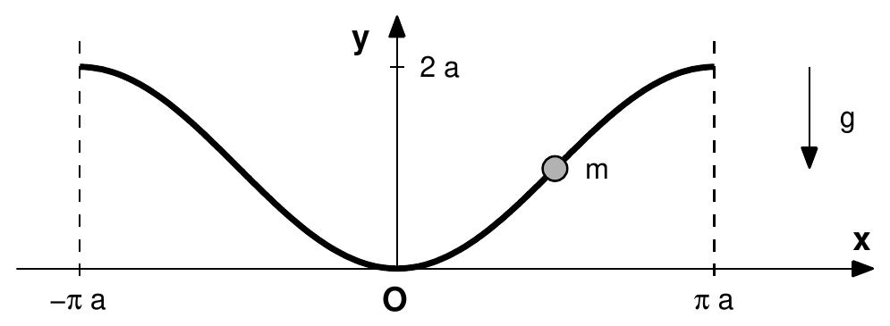

Topic 5: Relative Motion - Problem Sets
A skater $B$ is being towed by a vehicle $A$ on a perfectly smooth horizontal plane, where we define an inertial reference frame $Oxy$. The vehicle is moving along a circumference of radius $a$ and center at $O$ with constant angular velocity $\omega$. The skater is attached to the vehicle by a bar without mass and constant length $l = a$. Initially, the vehicle is located at $(a, 0)$ and the skater is at rest at $(2a, 0)$. Defining a rotating reference frame $Ox_1y_1$ with origin at $O$ and axis $Ox_1$ along $OA$, and calling $\psi$ the angle between the axis $Ox_1$ and the bar $AB$, determine:

-
(a)
The relative acceleration of the skater with respect to $Ox_1y_1$ as a function of $\psi$ and its time derivatives.
-
(b)
The centripetal and Coriolis acceleration terms also as a function of $\psi$ and its time derivatives.
-
(c)
Reduce the evolution of $\psi$ to integrals of the form $\int [\ldots]\,d\psi = \int [\ldots]\,dt$ (consider that $\dot{\psi}^2 = \int 2\dot{\psi}\ddot{\psi}\,dt$).
-
(d)
Determine the tension on the bar.
-
(e)
If the rigid bar is substituted by a string which cannot bear compression, determine if/when the string will become loose.
Worked Solution [ Click to Expand ]
Reference Frames, Bases and Coordinates
- Physical system: the vehicle $A$ moves on the circle of radius $a$ centred at $O$ with constant angular rate $\omega$. The skater $B$ (mass $m$) is joined to $A$ by a massless rigid bar of length $l = a$ and slides on a smooth horizontal plane.
- Why a rotating frame. In the frame $Ox_1y_1$ that turns with the line $OA$, the vehicle is at rest at $(a, 0)$, so the skater moves on a fixed circle of radius $a$ around $A$: one coordinate $\psi$ describes the motion and the constraint is fixed in that frame. The price is that $Ox_1y_1$ is non-inertial, so we must add the inertia forces of Notes Eq. 4.62 to Newton's law (Notes Eq. 4.63).
- Hypotheses:
- $Oxy$ is inertial; the plane is smooth (its reaction is vertical and cancels the weight, so neither enters the horizontal dynamics).
- The bar is massless, so the force it exerts on $B$ is directed along the bar: $-T\,\mathbf{u}_{AB}$, with $T \gt 0$ meaning tension.
- $\omega$ is constant.
- Fixed (inertial) frame: $S_0 = Oxy = \{O; \mathbf{i}_0, \mathbf{j}_0, \mathbf{k}_0\}$, basis $\mathcal{B}_0$, with $\mathbf{k}_0$ vertical (normal to the plane of motion).
- Moving frame: $S_1 = Ox_1y_1 = \{O; \mathbf{i}_1, \mathbf{j}_1, \mathbf{k}_1\}$, basis $\mathcal{B}_1$, with $\mathbf{i}_1$ along $OA$ and $\mathbf{k}_1 = \mathbf{k}_0$. The origin of $S_1$ is $O$ (it plays the role of the generic origin "$A$" of Notes Ch. 3, which here is the fixed point $O$; the letter $A$ is kept for the vehicle as in the statement) and the particle is $P \equiv B$.
- Bar basis: $\{\mathbf{u}_{AB}, \mathbf{u}_\perp, \mathbf{k}_1\}$, the unit vector from $A$ to $B$ and the unit vector normal to the bar in the plane; they are deduced in the next section.
- Coordinate and degrees of freedom: $B$ moves in the plane (2 coordinates) with one constraint $|AB| = a$: 1 DOF, the angle $\psi$ from $Ox_1$ to the bar $AB$, measured at $A$ counter-clockwise. The angle $\omega t$ of $S_1$ is prescribed.
- Initial conditions: $A$ at $(a, 0)$ and $B$ at rest at $(2a, 0)$, so $\psi(0) = 0$ and $\mathbf{v}_0^B(0) = \mathbf{0}$ (this gives $\dot{\psi}(0)$ in part (c)).
| Symbol | Meaning | SI unit |
|---|---|---|
| $m$ | mass of the skater $B$ | kg |
| $a$ | radius of the vehicle's circle and bar length | m |
| $\omega$ | angular rate of the vehicle (constant) | rad/s |
| $\psi$ | angle from $Ox_1$ to the bar $AB$ | rad |
| $T$ | tension of the bar (positive when pulling $B$ toward $A$) | N |
Change of Basis and Position Vector
The basis $\mathcal{B}_1$ seen from above
The rotation is about the vertical $\mathbf{k}_0$, so it is drawn looking down from $+\mathbf{k}_0$: $\mathbf{k}_0 = \mathbf{k}_1$ points out of the paper, towards the reader ($\odot$). With $\mathbf{i}_0$ to the right, the right-hand rule $\mathbf{k}_0 = \mathbf{i}_0\times\mathbf{j}_0$ puts $\mathbf{j}_0$ up the page (fingers from $\mathbf{i}_0$ to $\mathbf{j}_0$, counter-clockwise, thumb towards the reader). The vehicle starts on $Ox$ and turns counter-clockwise, so after a time $t$ the angle from $\mathbf{i}_0$ to $\mathbf{i}_1$ is $\omega t$:
- $\mathbf{i}_1$ is the hypotenuse (length 1) of a right triangle whose leg adjacent to $\omega t$ lies along $\mathbf{i}_0$ and measures $\cos\omega t$, and whose opposite leg lies along $+\mathbf{j}_0$ and measures $\sin\omega t$: $\mathbf{i}_1 = \cos\omega t\,\mathbf{i}_0 + \sin\omega t\,\mathbf{j}_0$.
- $\mathbf{j}_1$ is $\mathbf{i}_1$ turned a further $90^\circ$ counter-clockwise (so that $\mathbf{k}_1 = \mathbf{i}_1\times\mathbf{j}_1$ still points towards the reader). It has turned the same angle $\omega t$ from $\mathbf{j}_0$, and turning counter-clockwise from "up" moves its tip to the left: its leg along $\mathbf{j}_0$ (adjacent) is $\cos\omega t$ and its leg along $-\mathbf{i}_0$ (opposite) is $\sin\omega t$. That is the origin of the minus sign: $\mathbf{j}_1 = -\sin\omega t\,\mathbf{i}_0 + \cos\omega t\,\mathbf{j}_0$.
- $\mathbf{k}_1 = \mathbf{k}_0$, the axis of the rotation.
The columns of $[{}_0R_1]$ are the components of $\mathbf{i}_1, \mathbf{j}_1, \mathbf{k}_1$ in $\mathcal{B}_0$:
Checks: $\det[{}_0R_1] = \cos\omega t\cos\omega t - (-\sin\omega t)\sin\omega t = \cos^2\omega t + \sin^2\omega t = 1$; the columns are unit vectors ($\cos^2\omega t + \sin^2\omega t = 1$) and mutually orthogonal ($-\cos\omega t\sin\omega t + \sin\omega t\cos\omega t = 0$), so $[{}_0R_1][{}_0R_1]^T = I$.
Motion of $S_1$. Simple rotation about $\mathbf{k}_0 = \mathbf{k}_1$ (Slide 16):
Check with Poisson's formula: by the chain rule $\left.\frac{d\mathbf{i}_1}{dt}\right|_0 = -\omega\sin\omega t\,\mathbf{i}_0 + \omega\cos\omega t\,\mathbf{j}_0 = \omega\,\mathbf{j}_1$, and $\boldsymbol{\omega}_{10}\times\mathbf{i}_1 = \omega\,\mathbf{k}_1\times\mathbf{i}_1 = \omega\,\mathbf{j}_1$.
The position vector in the rotating plane
In $S_1$ the vehicle is at rest at $A = (a, 0)$, so the plane is drawn with $\mathbf{i}_1$ to the right and $\mathbf{j}_1$ up. To go from $O$ to $B$ we pass through $A$, because the distance from $A$ is the one fixed by the bar (Notes Eq. 3.16 with $\mathbf{r}_0^O = \mathbf{0}$):
- $\overrightarrow{OA} = a\,\mathbf{i}_1$: $A$ lies on $Ox_1$ at distance $a$ from $O$.
- $\overrightarrow{AB}$ has length $a$ and makes the angle $\psi$ with $\mathbf{i}_1$, measured counter-clockwise at $A$. Let $F$ be the foot of the perpendicular from $B$ to the line $Ox_1$. In the shaded right triangle $AFB$ (right angle at $F$) the hypotenuse is $|AB| = a$, the leg adjacent to $\psi$ is $AF = a\cos\psi$ along $\mathbf{i}_1$ and the leg opposite to $\psi$ is $FB = a\sin\psi$ along $\mathbf{j}_1$. So $\overrightarrow{AB} = a\cos\psi\,\mathbf{i}_1 + a\sin\psi\,\mathbf{j}_1$.
Adding the two vectors:
These are the dashed components of the figure: $|OF| = a + a\cos\psi$ along $\mathbf{i}_1$ and $|FB| = a\sin\psi$ along $\mathbf{j}_1$. For $\psi \lt 0$ (the case of the motion, as part (c) shows) $\sin\psi \lt 0$ and $B$ is below $Ox_1$; the same formula holds. Here $\psi$ is the standard polar angle of $B$ about $A$ (measured from $\mathbf{i}_1$, counter-clockwise), so no shift of the angle is needed. Checks: $\psi = 0$ gives $2a\,\mathbf{i}_1$, the initial position; $\psi = -\pi$ gives $\mathbf{0}$, the point $O$.
Bar basis. The unit vector along the bar is $\mathbf{u}_{AB} = \overrightarrow{AB}/a = \cos\psi\,\mathbf{i}_1 + \sin\psi\,\mathbf{j}_1$ (from $A$ to $B$). Differentiating with respect to $\psi$ ($\frac{d}{d\psi}\cos\psi = -\sin\psi$, $\frac{d}{d\psi}\sin\psi = \cos\psi$) gives the unit vector normal to the bar, in the sense of increasing $\psi$:
(the last form with $\mathbf{k}_1\times\mathbf{i}_1 = \mathbf{j}_1$ and $\mathbf{k}_1\times\mathbf{j}_1 = -\mathbf{i}_1$). Their matrix $\begin{pmatrix}\cos\psi & -\sin\psi\\ \sin\psi & \cos\psi\end{pmatrix}$ (completed with $\mathbf{k}_1$) is again a simple rotation: $\det = \cos^2\psi + \sin^2\psi = 1$, and $RR^T$ has diagonal entries $\cos^2\psi + \sin^2\psi = 1$ and off-diagonal entries $\cos\psi\sin\psi - \sin\psi\cos\psi = 0$, so $RR^T = I$. Also $\frac{d\mathbf{u}_\perp}{d\psi} = -\cos\psi\,\mathbf{i}_1 - \sin\psi\,\mathbf{j}_1 = -\mathbf{u}_{AB}$.
Kinematics
(a) Relative acceleration $\mathbf{a}_1^B$
Relative velocity, with the chain rule $\frac{d}{dt}\cos\psi = -\sin\psi\,\dot{\psi}$ and $\frac{d}{dt}\sin\psi = \cos\psi\,\dot{\psi}$:
Relative acceleration, with the product rule $\frac{d}{dt}(\dot{\psi}\sin\psi) = \ddot{\psi}\sin\psi + \dot{\psi}^2\cos\psi$ and $\frac{d}{dt}(\dot{\psi}\cos\psi) = \ddot{\psi}\cos\psi - \dot{\psi}^2\sin\psi$:
(the last form follows by grouping the $\ddot{\psi}$ and $\dot{\psi}^2$ terms: circular motion of radius $a$ about $A$, tangential plus normal part).
(b) Centripetal and Coriolis terms
Cross products used: $\mathbf{k}_1\times\mathbf{i}_1 = \mathbf{j}_1$, $\mathbf{k}_1\times\mathbf{j}_1 = -\mathbf{i}_1$.
Centripetal term.
It equals $-\omega^2\mathbf{r}_\perp$ with $\mathbf{r}_\perp = \mathbf{r}_1^B$ because $\mathbf{r}_1^B$ lies in the plane normal to $\boldsymbol{\omega}_{10}$ (Slide 30).
Coriolis term.
Absolute acceleration (Notes Eq. 3.27):
Forces and Equations of Motion
(c) Forces on the skater in $S_1$
(c, continued) Equation of motion
The unknown $T$ disappears if we project on $\mathbf{u}_\perp$, the only direction along which the bar exerts no force.
Projections on $\mathbf{u}_\perp = -\sin\psi\,\mathbf{i}_1 + \cos\psi\,\mathbf{j}_1$:
- $m\mathbf{a}_1^B\cdot\mathbf{u}_\perp = ma\ddot{\psi}$ (from the grouped form of part (a), since $\mathbf{u}_{AB}\cdot\mathbf{u}_\perp = 0$);
- $-T\,\mathbf{u}_{AB}\cdot\mathbf{u}_\perp = 0$ and $\mathbf{F}_{COR}\cdot\mathbf{u}_\perp = 0$;
- $\mathbf{F}_C\cdot\mathbf{u}_\perp = ma\omega^2\left[-(1+\cos\psi)\sin\psi + \sin\psi\cos\psi\right] = -ma\omega^2\sin\psi$.
In $S_1$ the skater behaves as a pendulum of length $a$ hanging from $A$: about $A$ the centrifugal force $m\omega^2(\mathbf{OA} + \mathbf{AB})$ has the same moment as the uniform field $m a\omega^2\,\mathbf{i}_1$ (because $\mathbf{AB}\times\mathbf{AB} = \mathbf{0}$), so the "effective gravity" has strength $a\omega^2$ and points along $+\mathbf{i}_1$.
(d) Equation for the tension
Projections on $\mathbf{u}_{AB} = \cos\psi\,\mathbf{i}_1 + \sin\psi\,\mathbf{j}_1$:
- $m\mathbf{a}_1^B\cdot\mathbf{u}_{AB} = -ma\dot{\psi}^2$;
- $\mathbf{F}_C\cdot\mathbf{u}_{AB} = ma\omega^2\left[(1+\cos\psi)\cos\psi + \sin^2\psi\right] = ma\omega^2(1 + \cos\psi)$;
- $\mathbf{F}_{COR}\cdot\mathbf{u}_{AB} = 2ma\omega\dot{\psi}$.
Answers and Checks
(a) Relative acceleration
$\mathbf{a}_1^B = -a\left(\ddot{\psi}\sin\psi + \dot{\psi}^2\cos\psi\right)\mathbf{i}_1 + a\left(\ddot{\psi}\cos\psi - \dot{\psi}^2\sin\psi\right)\mathbf{j}_1 = a\ddot{\psi}\,\mathbf{u}_\perp - a\dot{\psi}^2\,\mathbf{u}_{AB}$.
(b) Centripetal and Coriolis terms
$\boldsymbol{\omega}_{10}\times\left(\boldsymbol{\omega}_{10}\times\mathbf{r}_1^B\right) = -a\omega^2\left[(1+\cos\psi)\,\mathbf{i}_1 + \sin\psi\,\mathbf{j}_1\right]$ and $2\boldsymbol{\omega}_{10}\times\mathbf{v}_1^B = -2a\omega\dot{\psi}\left(\cos\psi\,\mathbf{i}_1 + \sin\psi\,\mathbf{j}_1\right)$. Both agree with the official key (Problems.pdf, p. 72), where the centripetal term is called "centrifugal acceleration".
(c) First integral, initial rate and quadrature
First integral (hint of the statement). Multiply $\ddot{\psi} + \omega^2\sin\psi = 0$ by $2\dot{\psi}$. By the chain rule $\frac{d}{dt}\left(\dot{\psi}^2\right) = 2\dot{\psi}\ddot{\psi}$ and $\frac{d}{dt}\cos\psi = -\sin\psi\,\dot{\psi}$, so
Integrate from $0$ to $t$ and apply Barrow's rule $[F]_0^t = F(t) - F(0)$:
On the left, $\int_0^t 2\dot{\psi}\ddot{\psi}\,dt' = \left[\dot{\psi}^2\right]_0^t$. On the right, the change of variable $\psi = \psi(t')$, $d\psi = \dot{\psi}\,dt'$, turns $\int_0^t\left(-2\omega^2\sin\psi\right)\dot{\psi}\,dt'$ into $\int_{\psi(0)}^{\psi(t)}\left(-2\omega^2\sin\psi\right)d\psi$, whose antiderivative is $2\omega^2\cos\psi$:
Initial rate. By Notes Eq. 3.26, $\mathbf{v}_0^B = \mathbf{v}_0^O + \mathbf{v}_1^B + \boldsymbol{\omega}_{10}\times\mathbf{r}_1^B$. At $t = 0$: $\psi = 0$, $\mathbf{r}_1^B = 2a\,\mathbf{i}_1$, $\mathbf{v}_1^B = a\dot{\psi}(0)\,\mathbf{j}_1$, $\boldsymbol{\omega}_{10}\times\mathbf{r}_1^B = 2a\omega\,\mathbf{j}_1$, and $\mathbf{v}_0^B = \mathbf{0}$:
Hence, with $1 + \cos\psi = 2\cos^2(\psi/2)$,
For $-\pi \lt \psi \lt \pi$ the factor $\cos(\psi/2) \gt 0$, so $\dot{\psi}$ cannot vanish nor change sign there; $\dot{\psi}(0) = -2\omega \lt 0$ selects
which agrees with the official key (Problems.pdf, p. 72).
Energy check in $S_1$ (Slides 29–30). The origin is fixed and $\boldsymbol{\omega}_{10}$ is constant, so $\mathbf{F}_C$ has the potential $V_1 = -\tfrac12 m\omega^2 r_\perp^2$, $\mathbf{F}_{COR}$ does no work, and the bar force does no work in $S_1$ ($-T\mathbf{u}_{AB}\cdot a\dot{\psi}\mathbf{u}_\perp = 0$). With $r_\perp^2 = a^2\left[(1+\cos\psi)^2 + \sin^2\psi\right] = 2a^2(1+\cos\psi)$:
which gives again $\dot{\psi}^2 = 2\omega^2(1 + \cos\psi)$.
Quadrature. Separate variables in $\frac{d\psi}{dt} = -2\omega\cos\frac{\psi}{2}$:
The left integral is elementary. Substitute $w = \psi'/2$, $d\psi' = 2\,dw$, limits $0 \to \psi/2$; the antiderivative of $\sec w$ is $\ln|\sec w + \tan w|$ (its derivative is $\frac{\sec w\tan w + \sec^2 w}{\sec w + \tan w} = \sec w$). By Barrow's rule:
so $\psi(t)$ is given implicitly by $\sec\frac{\psi}{2} + \tan\frac{\psi}{2} = e^{-\omega t}$; as $t\to\infty$, $\psi \to -\pi$, i.e. $B$ tends to the centre $O$ ($\mathbf{r}_1^B \to \mathbf{0}$) without ever reaching it.
(d) Tension on the bar
Substitute the first integral in $T = ma\left[\dot{\psi}^2 + 2\omega\dot{\psi} + \omega^2(1 + \cos\psi)\right]$, with $c \equiv \cos(\psi/2)$: $\dot{\psi}^2 = 4\omega^2c^2$, $\dot{\psi} = -2\omega c$, $1 + \cos\psi = 2c^2$:
which agrees with the official key (Problems.pdf, p. 72). At $t = 0$: $T(0) = 2ma\omega^2 \gt 0$.
(e) Does a string become loose?
As $\psi$ decreases from $0$ toward $-\pi$, $c = \cos(\psi/2)$ decreases monotonically from $1$ toward $0$. The factor $c$ stays positive, and $3c - 2$ changes sign at $c = 2/3$:
(official key: $\psi = -2\arccos(2/3)$). When: at $\psi/2 = -\arccos(2/3)$, $\sec(\psi/2) = 3/2$ and $\tan(\psi/2) = -\sqrt{1 - 4/9}\big/(2/3) = -\sqrt5/2$, so from part (c)
So yes: the string goes slack after about $0.96/\omega$ seconds, when the bar has turned $96.4^\circ$ clockwise from $Ox_1$.
Checks
- Reading in $S_1$. The rotating observer sees $B$ as a pendulum of length $a$ hung from $A$ in an effective field of strength $a\omega^2$ pointing away from $O$ (the centrifugal force), whose "lowest" point is $\psi = 0$. The skater starts there with relative speed $2a\omega$, which is exactly the separatrix energy ($E_1^B = 0$): it creeps toward the "inverted" position $\psi = -\pi$ (where $B$ would sit at $O$) in infinite time.
- Why $T$ drops. The Coriolis force $2ma\omega\dot{\psi}\,\mathbf{u}_{AB}$ points toward $A$ when $\dot{\psi} \lt 0$, and the centrifugal pull along the bar, $ma\omega^2(1+\cos\psi)$, shrinks as $B$ swings in; when the required centripetal force $ma\dot{\psi}^2$ is supplied by these inertia forces alone the bar is unloaded ($T = 0$).
- Limit $\omega \to 0$: $\dot{\psi} \to 0$, $T \to 0$ (nothing moves).
- Orthogonality: $\mathbf{u}_{AB}\cdot\mathbf{u}_\perp = -\cos\psi\sin\psi + \sin\psi\cos\psi = 0$, $|\mathbf{u}_{AB}| = |\mathbf{u}_\perp| = 1$.
- Dimensions: $[\mathbf{a}_1^B] = [a\ddot{\psi}] = [a\dot{\psi}^2] = \text{m}\,\text{s}^{-2}$; $[\omega^2 a] = [\omega\dot{\psi}a] = \text{m}\,\text{s}^{-2}$; $[T] = [ma\omega^2] = \text{kg}\,\text{m}\,\text{s}^{-2} = \text{N}$; $[\omega t] = 1$.
- Verification (sympy): the inertial double derivative of $[{}_0R_1]\{\mathbf{r}_1^B\}$ equals $\mathbf{a}_1^B - \omega^2\mathbf{r}_1^B - 2a\omega\dot{\psi}\mathbf{u}_{AB}$; the EOM, $\dot{\psi}(0) = -2\omega$, $dE_1^B/dt = 0$ along the EOM, the tension and $\psi_{\text{loose}}$ are reproduced; an RK4 integration with $\omega = 1$ reaches $\cos(\psi/2) = 2/3$ at $t = 0.9625$ s, matching $\ln\frac{3+\sqrt5}{2} = 0.9624$.
- Check against the official key: the key of
Problems.pdf(p. 72) gives the centripetal and Coriolis terms, $\dot{\psi} = -2\omega\cos(\psi/2)$, $T = 2ma\omega^2\cos(\psi/2)\left(3\cos(\psi/2) - 2\right)$ and $\psi = -2\arccos(2/3)$ for the string going slack. All of them coincide with the results above (no discrepancy).
Two trains, $A$ and $B$, are moving along parallel tracks. The separation between the tracks is $a$. The absolute velocity of each train is $v_A$ and $v_B$, respectively. What is the relative velocity of each train with respect to the other?
Solve the same problem considering that the train $B$ is now moving along a circular track of radius $R$. The minimum distance between the circular track and the straight track of $A$ is $a$.
Worked Solution [ Click to Expand ]
Reference Frames, Bases and Coordinates
- Physical System: Two trains $A$ and $B$ move on separate tracks with distance of closest separation $a$.
- Case 1: Two parallel straight tracks with constant speeds $v_A$ and $v_B$.
- Case 2: Train $A$ on a straight track, Train $B$ on a circular track of radius $R$.
- Parameters & Units: Separation $a\text{ [m]}$, radius $R\text{ [m]}$, speeds $v_A, v_B\text{ [m/s]}$.
- Hypotheses: the tracks are in a plane; at $t = 0$ train $A$ is at the origin and train $B$ is at the point of its track closest to the track of $A$; the speeds are constant.
- Inertial Cartesian Frame: $S_0 = \{O; \mathbf{i}_0, \mathbf{j}_0, \mathbf{k}\}$, with $\mathbf{i}_0$ along the track of $A$, $\mathbf{j}_0$ towards the track of $B$ and $\mathbf{k} = \mathbf{i}_0\times\mathbf{j}_0$ normal to the plane of the tracks.
- Frame of train $B$ (Case 2, rotating observer): $S_B = \{B; \mathbf{i}_B, \mathbf{j}_B, \mathbf{k}\}$, attached to the train, with $\mathbf{i}_B$ along its direction of motion (the tangent to the track) and $\mathbf{j}_B$ pointing towards the centre $C$ of the track. It turns with the train by the angle $\omega_Bt$ about $\mathbf{k}$, $\omega_B = v_B/R$.
- Coordinates and degrees of freedom. The coordinates are the arc positions along the tracks (one per train). Both motions are prescribed, $x_A = v_At$ and $\theta_B = v_Bt/R$, so no degree of freedom is unknown (0 DOF): the problem is purely kinematic. $\theta_B$ is the angle of $CB$ measured at the centre $C$ from the downward vertical $-\mathbf{j}_0$, positive counter-clockwise (towards $+\mathbf{i}_0$).
- Observers. In Case 1 the relative velocity is the same for any observer that translates with a train. In Case 2 an observer attached to $B$ turns with it at $\omega_B = v_B/R$, so the velocity of $A$ seen by this observer needs the rotating frame $S_B$.
Change of Basis and Position Vector
Position of each train
The plane of the tracks is drawn from above: $\mathbf{k}$ points out of the paper, towards the reader ($\odot$), $\mathbf{i}_0$ to the right and $\mathbf{j}_0$ up (the right-hand rule $\mathbf{i}_0\times\mathbf{j}_0 = \mathbf{k}$: fingers from $\mathbf{i}_0$ to $\mathbf{j}_0$ counter-clockwise, thumb towards the reader).
Case 1. Train $A$ runs on the line $y = 0$ and train $B$ on the parallel line $y = a$:
Case 2. Train $A$ is still on the $x$-axis, $\mathbf{r}_A = v_At\,\mathbf{i}_0$. The circular track has its centre $C$ at $(0, R + a)$, so that its lowest point is at height $(R + a) - R = a$ above the track of $A$, the given minimum distance. To reach $B$ we pass through the centre, because the distance from $C$ is the one that stays constant:
- $\overrightarrow{OC} = (R + a)\,\mathbf{j}_0$.
- $\overrightarrow{CB}$ has length $R$ and makes the angle $\theta_B = \omega_Bt$ with the downward vertical. Let $F$ be the point of the vertical through $C$ at the height of $B$. In the shaded right triangle $CFB$ (right angle at $F$) the hypotenuse is $|CB| = R$; the leg opposite to $\theta_B$ is $FB = R\sin\omega_Bt$, horizontal, along $+\mathbf{i}_0$; the leg adjacent to $\theta_B$ is $CF = R\cos\omega_Bt$, vertical and pointing down, along $-\mathbf{j}_0$. So $\overrightarrow{CB} = R\sin\omega_Bt\,\mathbf{i}_0 - R\cos\omega_Bt\,\mathbf{j}_0$.
Adding:
Check: $t = 0$ gives $a\,\mathbf{j}_0$, the lowest point of the circle, closest to the track of $A$. The angle $\theta_B$ is measured from $-\mathbf{j}_0$ and not from $\mathbf{i}_0$: the usual polar angle about $C$ is $\varphi = \theta_B - \pi/2$, because $\cos\left(\theta_B - \tfrac{\pi}{2}\right) = \cos\theta_B\cos\tfrac{\pi}{2} + \sin\theta_B\sin\tfrac{\pi}{2} = \sin\theta_B$ and $\sin\left(\theta_B - \tfrac{\pi}{2}\right) = \sin\theta_B\cos\tfrac{\pi}{2} - \cos\theta_B\sin\tfrac{\pi}{2} = -\cos\theta_B$, which turns $R(\cos\varphi\,\mathbf{i}_0 + \sin\varphi\,\mathbf{j}_0)$ into the $\overrightarrow{CB}$ above. It is chosen so that $\theta_B = 0$ is the starting point.
The basis of train $B$
$\mathbf{i}_B$ is the unit tangent to the track in the sense of motion. Differentiating $\overrightarrow{CB}$ with respect to $\theta_B$ ($\frac{d}{d\theta}\sin\theta = \cos\theta$, $\frac{d}{d\theta}(-\cos\theta) = \sin\theta$) and dividing by its length $R\sqrt{\cos^2\theta_B + \sin^2\theta_B} = R$:
so $\mathbf{i}_B$ is $\mathbf{i}_0$ turned counter-clockwise by $\omega_Bt$ (seen from $+\mathbf{k}$, $\odot$): leg $\cos\omega_Bt$ along $\mathbf{i}_0$ (adjacent) and leg $\sin\omega_Bt$ along $\mathbf{j}_0$ (opposite). $\mathbf{j}_B = \mathbf{k}\times\mathbf{i}_B$ is $\mathbf{i}_B$ turned a further $90^\circ$; it has turned the same angle $\omega_Bt$ from $\mathbf{j}_0$, and turning counter-clockwise from "up" moves its tip towards $-\mathbf{i}_0$, so its opposite leg is $-\sin\omega_Bt\,\mathbf{i}_0$:
(comparing with $\overrightarrow{CB} = R\sin\omega_Bt\,\mathbf{i}_0 - R\cos\omega_Bt\,\mathbf{j}_0$), so $\mathbf{j}_B$ points from $B$ towards the centre $C$, as drawn. With the columns of $\mathbf{i}_B, \mathbf{j}_B, \mathbf{k}$ in $\mathcal{B}_0$:
and $[{}_0R_B][{}_0R_B]^T$ has diagonal entries $\cos^2\omega_Bt + \sin^2\omega_Bt = 1$ (and $1$) and off-diagonal entries $\cos\omega_Bt\sin\omega_Bt - \sin\omega_Bt\cos\omega_Bt = 0$, so it is $I$. The angular velocity of $S_B$ is $\boldsymbol{\omega}_{B0} = \omega_B\,\mathbf{k}$ (Poisson: $\frac{d\mathbf{i}_B}{dt} = -\omega_B\sin\omega_Bt\,\mathbf{i}_0 + \omega_B\cos\omega_Bt\,\mathbf{j}_0 = \omega_B\,\mathbf{j}_B = \omega_B\,\mathbf{k}\times\mathbf{i}_B$).
Kinematics
Case 1: Parallel Tracks
Differentiating the positions (the speeds are constant):
- Relative Velocity:
Case 2: Train $B$ on a Circular Track of Radius $R$
- Velocity of train $B$, with the chain rule $\frac{d}{dt}\sin(\omega_Bt) = \omega_B\cos(\omega_Bt)$ and $\frac{d}{dt}\cos(\omega_Bt) = -\omega_B\sin(\omega_Bt)$:
- Relative Velocity $\mathbf{v}_{B/A}$:
- Magnitude of Relative Velocity (expanding the square and using $\cos^2 + \sin^2 = 1$):
Case 2, velocity of $A$ with respect to an observer attached to $B$
The frame $S_B$ of the change-of-basis section turns with $\boldsymbol{\omega}_{B0} = \omega_B\mathbf{k}$. Notes Eq. 3.26 gives $\mathbf{v}_{A/B} = \mathbf{v}_A - \mathbf{v}_B - \boldsymbol{\omega}_{B0}\times(\mathbf{r}_A - \mathbf{r}_B)$. With $\mathbf{r}_A - \mathbf{r}_B = (v_At - R\sin\omega_Bt)\,\mathbf{i}_0 + (R\cos\omega_Bt - R - a)\,\mathbf{j}_0$, $\mathbf{k}\times\mathbf{i}_0 = \mathbf{j}_0$, $\mathbf{k}\times\mathbf{j}_0 = -\mathbf{i}_0$ and $\omega_BR = v_B$, the three terms are
Adding them, $\omega_BR\cos\omega_Bt = v_B\cos\omega_Bt$ cancels the $-v_B\cos\omega_Bt$ term and $\omega_BR\sin\omega_Bt = v_B\sin\omega_Bt$ cancels the $-v_B\sin\omega_Bt$ term:
Answers and Checks
Case 1
$\mathbf{v}_{B/A} = (v_B - v_A)\,\mathbf{i}_0$ and $\mathbf{v}_{A/B} = (v_A - v_B)\,\mathbf{i}_0$.
Case 2
$\mathbf{v}_{B/A} = \left[v_B\cos(v_Bt/R) - v_A\right]\mathbf{i}_0 + v_B\sin(v_Bt/R)\,\mathbf{j}_0$, with modulus $v_{\text{rel}} = \sqrt{v_A^2 + v_B^2 - 2v_Av_B\cos(v_Bt/R)}$, for an observer that translates with $A$ ($\mathbf{v}_{A/B} = -\mathbf{v}_{B/A}$ for an observer that translates with $B$). No integration is needed beyond the differentiation above.
For an observer attached to $B$ (turning with it), $\mathbf{v}_{A/B} = \left[v_A - v_B(R + a)/R\right]\mathbf{i}_0 - (v_Av_Bt/R)\,\mathbf{j}_0$. It differs from $-\mathbf{v}_{B/A}$ because the observer attached to $B$ rotates: at $t = 0$, $v_{A/B} = v_A - v_B(1 + a/R)$, whereas the translating-observer value is $v_A - v_B$; for $R \to \infty$ both coincide.
Checks
- Dimensional check: $[\mathbf{v}_{B/A}] = \text{m/s}$; in Case 2 the argument of the trigonometric functions is $\dfrac{v_B t}{R} = \dfrac{(\text{m/s})\,\text{s}}{\text{m}}$, which is dimensionless (rad), and $[v_B^2 + v_A^2 - 2v_Av_B\cos(\cdot)] = \text{m}^2/\text{s}^2$, so $v_{\text{rel}}$ is in m/s.
- Role of the separation $a$: it does not appear in any relative velocity for translating observers, because $\mathbf{v}_{B/A}$ is the time derivative of $\mathbf{r}_B - \mathbf{r}_A$ and $a$ only enters the constant offset of that vector (it does appear for the rotating observer, through $\boldsymbol{\omega}_{B0}\times(\mathbf{r}_A - \mathbf{r}_B)$).
- Limiting cases of Case 2 (sympy):
- $t = 0$: $v_{\text{rel}} = \sqrt{v_A^2 + v_B^2 - 2v_Av_B} = |v_B - v_A|$, because both velocities are parallel to $\mathbf{i}_0$ at that instant.
- $R \to \infty$ (the circular track straightens): $\cos(v_Bt/R) \to 1$ and $v_{\text{rel}} \to |v_B - v_A|$, which is the Case 1 result.
- $v_A = v_B = v$: $v_{\text{rel}} = v\sqrt{2 - 2\cos(vt/R)} = 2v\left|\sin\dfrac{vt}{2R}\right|$, which starts at $0$ and never exceeds $2v$.
- $v_A = 0$: $v_{\text{rel}} = v_B$ for all $t$ (relative to a stationary train, only the speed of $B$ matters).
- Symbolic check: $\|\mathbf{v}_B - \mathbf{v}_A\|^2$ computed from the components equals $v_B^2 + v_A^2 - 2v_Av_B\cos(v_Bt/R)$ with zero residual. The translating-observer results use only $\mathcal{B}_0$; the rotating observer of Case 2 uses $[{}_0R_B]$. Dimensions of that result: $[v_A] = [v_Ba/R] = [v_Av_Bt/R] = \text{m/s}$.
- Check against the official key:
Problems.pdfhas no entry for Problem 8 in its solution keys, so the results are verified by independent derivation (the symbolic check above).
In "2001: A Space Odyssey" an idea to obtain artificial gravity in a spaceship was presented. It consists of a cylinder rotating at constant angular velocity around its axis. The astronauts would live in the inner surface of the cylinder and the centrifugal force would act as artificial gravity.
-
(a)
If the cylinder has radius $R$, determine the angular velocity $\omega$ required to obtain a given level artificial gravity $g$. Consider $R = 10$ m and $g = 9.81$ m/s$^2$ for a particular case.
-
(b)
An astronaut runs inside the surface of the cylinder with a constant speed $u$ with respect to the cylinder. Determine the artificial gravity that she feels (neglect the height of the astronaut $h$ with respect to the radius of the cylinder $R$, $h \ll R$).
-
(c)
What is the condition for her to feel no artificial gravity at all?
Worked Solution [ Click to Expand ]
Reference Frames, Bases and Coordinates
- Physical system: a cylindrical hull of radius $R$ spins at constant rate $\omega$ about its axis in deep space. An astronaut $P$ of mass $m$ stands on, or runs along, the inner surface.
- Why the hull frame. The astronaut lives in the hull: the floor, her running speed $u$ and what she "feels" are all defined with respect to the cylinder. In the frame $S_1$ attached to the hull the floor is fixed, and the only price is to add the inertia forces of Notes Eq. 4.62. The centrifugal force is exactly the "artificial gravity" of the statement; the Coriolis force is what changes when she runs.
- Hypotheses:
- No external gravity (deep space); the only actual force on the astronaut is the total force $\mathbf{N}$ of the floor on her feet (normal reaction plus any friction; part (b) shows that, for uniform running, $\mathbf{N}$ comes out purely radial).
- $h \ll R$: she is a point particle on the surface, at distance $R$ from the axis.
- $\omega$ constant; the axis point $O$ is fixed in an inertial frame $S_0$.
- Artificial gravity felt. A body feels as "weight" the force it has to receive from the floor. We define the artificial gravity as $g_{\text{art}} = |\mathbf{N}|/m$, the reading per unit mass of a scale under her feet, directed opposite to $\mathbf{N}$ (i.e. away from the axis, "down" for her).
- Fixed (inertial) frame: $S_0 = \{O; \mathbf{i}_0, \mathbf{j}_0, \mathbf{k}_0\}$, with $O$ on the axis and $\mathbf{k}_0$ along it.
- Moving frame: $S_1 = \{O; \mathbf{i}_1, \mathbf{j}_1, \mathbf{k}_1\}$ fixed to the hull, $\mathbf{k}_1 = \mathbf{k}_0$. The origin of $S_1$ is the fixed point $O$; $S_1$ coincides with $S_0$ at $t = 0$.
- Local cylindrical basis of the astronaut (in $S_1$): $\{\mathbf{e}_r, \mathbf{e}_\theta, \mathbf{k}_1\}$, radial (from the axis to the floor), circumferential (in the sense of rotation) and axial; deduced in the next section.
- Coordinates and degrees of freedom: on the cylinder surface, 2 coordinates: azimuth $\varphi$ in $S_1$ (measured from $\mathbf{i}_1$ in the sense of rotation) and axial position $z$. Running at constant speed $u$ means $u_\theta = R\dot{\varphi}$ and $u_z = \dot{z}$ constant with $u_\theta^2 + u_z^2 = u^2$.
| Symbol | Meaning | SI unit |
|---|---|---|
| $R$ | radius of the cylinder ($10$ m in the numerical case) | m |
| $\omega$ | spin rate of the cylinder | rad/s |
| $g$ | target artificial gravity ($9.81$ m/s$^2$) | m/s$^2$ |
| $u$ | running speed relative to the cylinder | m/s |
| $u_\theta,\ u_z$ | circumferential (positive in the sense of rotation) and axial components of the running velocity | m/s |
| $m$ | mass of the astronaut | kg |
Change of Basis and Position Vector
The basis $\mathcal{B}_1$. The hull turns about its axis $\mathbf{k}_0$, so the cross-section is drawn looking along the axis, with $\mathbf{k}_0 = \mathbf{k}_1$ pointing out of the paper, towards the reader ($\odot$). With $\mathbf{i}_0$ to the right, the right-hand rule $\mathbf{i}_0\times\mathbf{j}_0 = \mathbf{k}_0$ puts $\mathbf{j}_0$ up the page, and a positive $\omega$ turns the hull counter-clockwise. After a time $t$, $\mathbf{i}_1$ has turned the angle $\omega t$ from $\mathbf{i}_0$:
- $\mathbf{i}_1$ is the hypotenuse (length 1) of a right triangle with the leg $\cos\omega t$ along $\mathbf{i}_0$ (adjacent) and the leg $\sin\omega t$ along $+\mathbf{j}_0$ (opposite): $\mathbf{i}_1 = \cos\omega t\,\mathbf{i}_0 + \sin\omega t\,\mathbf{j}_0$.
- $\mathbf{j}_1$ is $\mathbf{j}_0$ turned the same angle counter-clockwise; turning from "up" towards the left, its opposite leg $\sin\omega t$ points along $-\mathbf{i}_0$, which gives the minus sign: $\mathbf{j}_1 = -\sin\omega t\,\mathbf{i}_0 + \cos\omega t\,\mathbf{j}_0$.
- $\mathbf{k}_1 = \mathbf{k}_0$, the axis of rotation.
The columns are unit vectors ($\cos^2\omega t + \sin^2\omega t = 1$) and mutually orthogonal ($-\cos\omega t\sin\omega t + \sin\omega t\cos\omega t = 0$), so $[{}_0R_1][{}_0R_1]^T = I$.
Motion of $S_1$: $\boldsymbol{\omega}_{10} = \omega\mathbf{k}_1$, $\boldsymbol{\alpha}_{10} = \mathbf{0}$ ($\omega$ constant and $\mathbf{k}_1$ fixed), $\mathbf{r}_0^O = \mathbf{v}_0^O = \mathbf{a}_0^O = \mathbf{0}$. Poisson check: $\left.\frac{d\mathbf{i}_1}{dt}\right|_0 = -\omega\sin\omega t\,\mathbf{i}_0 + \omega\cos\omega t\,\mathbf{j}_0 = \omega\,\mathbf{j}_1 = \omega\,\mathbf{k}_1\times\mathbf{i}_1$ (chain rule).
Position vector. To reach $P$ we go along the axis to the cross-section that contains her (height $z$), and then radially out to the floor, a distance $R$:
In the cross-section, $R\,\mathbf{e}_r$ is the hypotenuse (length $R$) of the shaded right triangle: the leg adjacent to $\varphi$ lies along $\mathbf{i}_1$ and measures $R\cos\varphi$, the leg opposite to $\varphi$ lies along $\mathbf{j}_1$ and measures $R\sin\varphi$. So, with $\varphi$ the usual polar angle measured from $\mathbf{i}_1$:
($\frac{d}{d\varphi}\cos\varphi = -\sin\varphi$, $\frac{d}{d\varphi}\sin\varphi = \cos\varphi$; $|\mathbf{e}_\theta| = \sqrt{\sin^2\varphi + \cos^2\varphi} = 1$, and $\mathbf{e}_\theta$ points in the sense of increasing $\varphi$, the sense of rotation). The matrix with columns $\mathbf{e}_r, \mathbf{e}_\theta, \mathbf{k}_1$ in $\mathcal{B}_1$ is a simple rotation by $\varphi$ (matrix $\begin{pmatrix}\cos \varphi & -\sin \varphi & 0\\ \sin \varphi & \cos \varphi & 0\\ 0 & 0 & 1\end{pmatrix}$, $\det = \cos^2\varphi + \sin^2\varphi = 1$; $RR^T$ has diagonal entries $\cos^2\varphi + \sin^2\varphi = 1$ (and $1$) and off-diagonal entries $\cos \varphi\sin \varphi - \sin \varphi\cos \varphi = 0$, so $RR^T = I$).
Derivatives and cross products used later. In $S_1$, by the chain rule, $\left.\frac{d\mathbf{e}_r}{dt}\right|_1 = \frac{d\mathbf{e}_r}{d\varphi}\dot{\varphi} = \dot{\varphi}\,\mathbf{e}_\theta$ and $\left.\frac{d\mathbf{e}_\theta}{dt}\right|_1 = \left(-\cos\varphi\,\mathbf{i}_1 - \sin\varphi\,\mathbf{j}_1\right)\dot{\varphi} = -\dot{\varphi}\,\mathbf{e}_r$. With $\mathbf{k}_1\times\mathbf{i}_1 = \mathbf{j}_1$ and $\mathbf{k}_1\times\mathbf{j}_1 = -\mathbf{i}_1$: $\mathbf{k}_1\times\mathbf{e}_r = \cos\varphi\,\mathbf{j}_1 - \sin\varphi\,\mathbf{i}_1 = \mathbf{e}_\theta$ and $\mathbf{k}_1\times\mathbf{e}_\theta = -\sin\varphi\,\mathbf{j}_1 - \cos\varphi\,\mathbf{i}_1 = -\mathbf{e}_r$. The part of $\mathbf{r}_1^P$ normal to $\boldsymbol{\omega}_{10}$ is $\mathbf{r}_\perp = R\,\mathbf{e}_r$ (the axial part $z\,\mathbf{k}_1$ is parallel to it).
Kinematics
In part (a) the astronaut is at rest on the floor, so $\mathbf{v}_1^P = \mathbf{0}$ and $\mathbf{a}_1^P = \mathbf{0}$. In part (b) she runs with a constant relative velocity:
Relative kinematics. $\mathbf{r}_1^P = R\,\mathbf{e}_r + z\,\mathbf{k}_1$ with $R\dot{\varphi} = u_\theta$, $\dot{z} = u_z$ (both constant). Differentiating in $S_1$ with the product and chain rules ($R$ constant, $\mathbf{k}_1$ constant in $S_1$):
($\dot{u}_\theta = \dot{u}_z = 0$ and $\dot{\varphi} = u_\theta/R$; the relative path is a helix of radius $R$; in $S_1$ she needs a centripetal acceleration $u_\theta^2/R$).
Forces and Equations of Motion
The only actual force on the astronaut is the floor force $\mathbf{N}$ (no gravity in deep space). The inertia forces of Notes Eq. 4.62 are $\mathbf{F}_A = \mathbf{0}$ (fixed origin) and $\mathbf{F}_E = \mathbf{0}$ ($\boldsymbol{\alpha}_{10} = \mathbf{0}$); $\mathbf{F}_C = m\omega^2\mathbf{r}_\perp$ (Slide 30) and $\mathbf{F}_{COR} = -2m\boldsymbol{\omega}_{10}\times\mathbf{v}_1^P$ (Slide 31).
Centrifugal force. With $\mathbf{r}_\perp = R\,\mathbf{e}_r$, $\mathbf{k}_1\times\mathbf{e}_r = \mathbf{e}_\theta$ and $\mathbf{k}_1\times\mathbf{e}_\theta = -\mathbf{e}_r$:
Coriolis force (running case), with $\mathbf{k}_1\times\mathbf{e}_\theta = -\mathbf{e}_r$ and $\mathbf{k}_1\times\mathbf{k}_1 = \mathbf{0}$:
Newton's law in $S_1$ (Notes Eq. 4.63), $m\mathbf{a}_1^P = \mathbf{N} + \mathbf{F}_C + \mathbf{F}_{COR}$. The unknown is the floor force $\mathbf{N}$ (the relative motion is prescribed, so no coordinate is unknown):
(the bracket is the square $(\omega R + u_\theta)^2 = \omega^2R^2 + 2\omega R u_\theta + u_\theta^2$ divided by $R$). At rest ($u_\theta = u_z = 0$) it reduces to the static balance $m\,\mathbf{0} = \mathbf{N} + m\omega^2R\,\mathbf{e}_r$, $\mathbf{N} = -m\omega^2R\,\mathbf{e}_r$.
Answers and Checks
(a) Spin rate for a given artificial gravity
From the static balance, $\mathbf{N} = -m\omega^2R\,\mathbf{e}_r$ and
The floor pushes her toward the axis, and she feels a "gravity" $\omega^2R$ pointing away from the axis. Setting $g_{\text{art}} = g$:
Numbers ($R = 10$ m, $g = 9.81$ m/s$^2$):
and the floor moves at $\omega R \approx 9.90$ m/s in $S_0$.
(b) Artificial gravity felt while running
The reaction $\mathbf{N} = -\frac{m}{R}(\omega R + u_\theta)^2\,\mathbf{e}_r$ is purely radial, so no friction is needed to keep the motion uniform. The artificial gravity she feels is
using $\omega^2R = g$ from part (a). Particular cases:
- running around the hull in the sense of rotation ($u_\theta = +u$): $g_{\text{art}} = (\omega R + u)^2/R \gt g$ (she feels heavier);
- running against the rotation ($u_\theta = -u$): $g_{\text{art}} = (\omega R - u)^2/R \lt g$ for $u \lt 2\omega R$ (she feels lighter);
- running along the axis ($u_\theta = 0$, $u_z = u$): $g_{\text{art}} = g$ (the Coriolis force vanishes because $\mathbf{v}_1^P \parallel \boldsymbol{\omega}_{10}$).
Numbers ($R = 10$ m, $\omega = 0.9905$ rad/s): at $u = 2$ m/s, $g_{\text{art}} = 14.17$ m/s$^2$ ($1.44\,g$) with the rotation and $6.25$ m/s$^2$ ($0.64\,g$) against it; at $u = 5$ m/s, $22.2$ m/s$^2$ ($2.26\,g$) and $2.41$ m/s$^2$ ($0.25\,g$).
(c) Condition for no artificial gravity
She must run around the hull, against the rotation, at the speed of the floor $\omega R$ ($\approx 9.90$ m/s for the numerical case, a sprinter's speed). Then, by Notes Eq. 3.26, her absolute velocity is $\mathbf{v}_0^P = \mathbf{v}_1^P + \boldsymbol{\omega}_{10}\times\mathbf{r}_1^P = -\omega R\,\mathbf{e}_\theta + \omega R\,\mathbf{e}_\theta = \mathbf{0}$: she is at rest in inertial space, floating, while the floor slides under her feet. With an axial component ($u_z \neq 0$) and $u = \omega R$ the condition cannot be met, since then $|u_\theta| \lt \omega R$.
Checks
- Inertial reading (cross-check). In $S_0$ the astronaut moves on a circle (or helix) of radius $R$ with tangential speed $\omega R + u_\theta$, so the floor must supply the centripetal force $m(\omega R + u_\theta)^2/R$: the same result. The rotating observer splits it into centrifugal $m\omega^2R$, Coriolis $2m\omega u_\theta$ and relative centripetal $mu_\theta^2/R$ parts.
- Limits: $u_\theta \to 0$ gives $g_{\text{art}} = g$; for $|u_\theta| \ll \omega R$, $g_{\text{art}} \approx g \pm 2\omega u$, a correction due to the Coriolis force alone; a larger hull ($R \to \infty$ at fixed $g$) needs a smaller $\omega$ and makes the Coriolis correction $2\omega u = 2u\sqrt{g/R}$ smaller, which is why large habitats are more comfortable.
- Orthogonality: $\mathbf{e}_r\cdot\mathbf{e}_\theta = -\cos\varphi\sin\varphi + \sin\varphi\cos\varphi = 0$.
- Dimensions: $[\sqrt{g/R}] = \sqrt{\text{m}\,\text{s}^{-2}/\text{m}} = \text{s}^{-1}$; $[\omega^2R] = [2\omega u_\theta] = [u_\theta^2/R] = \text{m}\,\text{s}^{-2}$; $[N] = \text{kg}\,\text{m}\,\text{s}^{-2} = \text{N}$.
- Verification (sympy): $\mathbf{a}_1^P$, $\mathbf{F}_C$, $\mathbf{F}_{COR}$ and $\mathbf{N}$ are recomputed; the inertial double derivative of $[{}_0R_1]\{\mathbf{r}_1^P\}$ equals the Notes Eq. 3.27 decomposition and gives the same $\mathbf{N}$; the numbers above are reproduced.
- Check against the official key:
Problems.pdfhas no entry for Problem 9 in its solution keys, so the results are verified by independent derivation (the inertial reading and the sympy check above).
A heavy particle is moving along a smooth circumference of radius $R$ and center $O$. One of the diameters of the circumference is along the local vertical, and the circumference is rotating with constant angular velocity $\omega$ about it. The position of the particle with respect to the circumference is described by the angle $\theta$ between the particle and the lowest point of the circumference.
-
(a)
Discuss the conservation of mechanical energy in the moving reference frame and compute its value.
-
(b)
Compute the reaction of the circumference in the direction normal to its plane, as a function of $\theta$.
Worked Solution [ Click to Expand ]
Reference Frames, Bases and Coordinates
- Physical system: a particle $P$ of mass $m$ slides on a smooth circular wire of radius $R$ and centre $O$; the wire turns with constant angular velocity $\omega$ about its vertical diameter. The angle $\theta$ is measured from the lowest point.
- Why the moving frame. In the frame $S_1$ attached to the wire the constraint is a fixed circle, the motion has one coordinate $\theta$, and the reaction has two clear components (in the plane of the wire, normal to it). The question itself asks for the energy "in the moving reference frame", which requires the inertia forces of Notes Eq. 4.62 and their potentials (Slides 29–31).
- Hypotheses:
- $S_0$ fixed to the ground is inertial; $O$ is fixed; uniform gravity $-g\,\mathbf{k}$.
- The wire is smooth: the reaction has no component along the tangent of the wire.
- $\omega$ is constant.
- Fixed (inertial) frame: $S_0 = \{O; \mathbf{i}_0, \mathbf{j}_0, \mathbf{k}_0\}$, $\mathbf{k}_0$ upward along the rotation axis.
- Moving frame: $S_1 = \{O; \mathbf{i}_1, \mathbf{j}_1, \mathbf{k}_1\}$ attached to the wire: $\mathbf{k}_1 = \mathbf{k}_0$, $\mathbf{i}_1$ horizontal in the plane of the wire (on the side where $\theta \gt 0$), $\mathbf{j}_1 = \mathbf{k}_1\times\mathbf{i}_1$ normal to the plane of the wire. The plane of the wire is at azimuth $\omega t$ from $\mathbf{i}_0$.
- Wire basis: $\{\mathbf{e}_r, \mathbf{e}_\theta, -\mathbf{j}_1\}$, radial (from $O$ to $P$), tangent (increasing $\theta$) and normal to the plane; deduced in the next section.
- Coordinate and degrees of freedom: the particle is constrained to a curve fixed in $S_1$: 1 DOF, $\theta$, the angle of $OP$ measured at $O$ from the downward vertical $-\mathbf{k}_1$, positive towards $+\mathbf{i}_1$.
- Unknown reaction: $\mathbf{N} = N_r\,\mathbf{e}_r + N_b\,\mathbf{j}_1$, with $N_r$ in the plane of the wire (along the radius) and $N_b$ normal to that plane.
| Symbol | Meaning | SI unit |
|---|---|---|
| $m$ | mass of the particle | kg |
| $R$ | radius of the circumference | m |
| $\omega$ | spin rate of the circumference (constant) | rad/s |
| $g$ | gravitational acceleration | m/s$^2$ |
| $\theta$ | angle from the lowest point | rad |
| $N_r,\ N_b$ | reaction components (radial in-plane, normal to the plane) | N |
| $\theta_0,\ \dot{\theta}_0$ | initial angle and angular rate in $S_1$ | rad, rad/s |
Change of Basis and Position Vector
The basis $\mathcal{B}_1$ seen from above
The rotation is about the vertical $\mathbf{k}_0$, so it is drawn looking down from $+\mathbf{k}_0$: $\mathbf{k}_0 = \mathbf{k}_1$ points out of the paper ($\odot$), $\mathbf{i}_0$ to the right and, by the right-hand rule $\mathbf{i}_0\times\mathbf{j}_0 = \mathbf{k}_0$, $\mathbf{j}_0$ up the page. The plane of the wire is seen edge-on, as a line through $O$ along $\mathbf{i}_1$; it turns counter-clockwise ($\omega \gt 0$) and makes the angle $\omega t$ with $\mathbf{i}_0$:
- $\mathbf{i}_1$ is the hypotenuse (length 1) of a right triangle with the leg $\cos\omega t$ along $\mathbf{i}_0$ (adjacent) and the leg $\sin\omega t$ along $+\mathbf{j}_0$ (opposite): $\mathbf{i}_1 = \cos\omega t\,\mathbf{i}_0 + \sin\omega t\,\mathbf{j}_0$.
- $\mathbf{j}_1 = \mathbf{k}_1\times\mathbf{i}_1$ is $\mathbf{i}_1$ turned $90^\circ$ counter-clockwise, normal to the trace of the wire. It has turned $\omega t$ from $\mathbf{j}_0$, towards the left, so its opposite leg $\sin\omega t$ lies along $-\mathbf{i}_0$: $\mathbf{j}_1 = -\sin\omega t\,\mathbf{i}_0 + \cos\omega t\,\mathbf{j}_0$ (that is the minus sign of the matrix).
- $\mathbf{k}_1 = \mathbf{k}_0$.
The columns are unit vectors and mutually orthogonal ($-\cos\omega t\sin\omega t + \sin\omega t\cos\omega t = 0$), so $[{}_0R_1][{}_0R_1]^T = I$.
Motion of $S_1$: $\boldsymbol{\omega}_{10} = \omega\mathbf{k}_1$, $\boldsymbol{\alpha}_{10} = \mathbf{0}$, $\mathbf{r}_0^O = \mathbf{v}_0^O = \mathbf{a}_0^O = \mathbf{0}$. Poisson check (chain rule): $\left.\frac{d\mathbf{i}_1}{dt}\right|_0 = -\omega\sin\omega t\,\mathbf{i}_0 + \omega\cos\omega t\,\mathbf{j}_0 = \omega\,\mathbf{j}_1 = \omega\,\mathbf{k}_1\times\mathbf{i}_1$.
The position vector in the plane of the wire
The plane of the wire is fixed in $S_1$ and is drawn with $\mathbf{i}_1$ to the right and $\mathbf{k}_1$ up. Then $\mathbf{j}_1 = \mathbf{k}_1\times\mathbf{i}_1$ points into the paper ($\otimes$): fingers from $\mathbf{k}_1$ (up) to $\mathbf{i}_1$ (right), clockwise, so the thumb points away from the reader.
The centre $O$ is the origin, so $\mathbf{r}_1^P = \overrightarrow{OP}$, of length $R$, making the angle $\theta$ with the downward vertical $-\mathbf{k}_1$. Let $F$ be the point of the vertical axis at the height of $P$. In the shaded right triangle $OFP$ (right angle at $F$) the hypotenuse is $|OP| = R$; the leg opposite to $\theta$ is $FP = R\sin\theta$, horizontal, along $+\mathbf{i}_1$; the leg adjacent to $\theta$ is $OF = R\cos\theta$, vertical and pointing down, along $-\mathbf{k}_1$. Hence
Check: $\theta = 0$ gives $-R\,\mathbf{k}_1$, the lowest point; $\theta = \pi/2$ gives $R\,\mathbf{i}_1$, the end of the horizontal diameter. The part of $\mathbf{r}_1^P$ normal to the axis is the horizontal leg, $\mathbf{r}_\perp = R\sin\theta\,\mathbf{i}_1$.
Relation with the standard polar angle. Measured from $\mathbf{i}_1$ towards $\mathbf{k}_1$, the usual polar angle $\varphi$ gives $\mathbf{e}_r = \cos\varphi\,\mathbf{i}_1 + \sin\varphi\,\mathbf{k}_1$. This matches $\sin\theta\,\mathbf{i}_1 - \cos\theta\,\mathbf{k}_1$ for $\varphi = \theta - \pi/2$: $\cos\left(\theta - \tfrac{\pi}{2}\right) = \cos\theta\cos\tfrac{\pi}{2} + \sin\theta\sin\tfrac{\pi}{2} = \sin\theta$ and $\sin\left(\theta - \tfrac{\pi}{2}\right) = \sin\theta\cos\tfrac{\pi}{2} - \cos\theta\sin\tfrac{\pi}{2} = -\cos\theta$. So $\theta$ is the polar angle measured from $-\mathbf{k}_1$, chosen so that $\theta = 0$ is the lowest point, as in the statement.
Wire basis. The tangent is the derivative with respect to $\theta$ ($\frac{d}{d\theta}\sin\theta = \cos\theta$, $\frac{d}{d\theta}(-\cos\theta) = \sin\theta$), already of unit length ($\sqrt{\cos^2\theta + \sin^2\theta} = 1$):
Since $\mathbf{e}_r\times\mathbf{e}_\theta = (-\cos\theta)(\cos\theta)(\mathbf{k}_1\times\mathbf{i}_1) + (\sin\theta)(\sin\theta)(\mathbf{i}_1\times\mathbf{k}_1) = -\cos^2\theta\,\mathbf{j}_1 - \sin^2\theta\,\mathbf{j}_1 = -\mathbf{j}_1$ (with $\mathbf{k}_1\times\mathbf{i}_1 = \mathbf{j}_1$, $\mathbf{i}_1\times\mathbf{k}_1 = -\mathbf{j}_1$), the right-handed triad is $\{\mathbf{e}_r, \mathbf{e}_\theta, -\mathbf{j}_1\}$; $-\mathbf{j}_1$ points out of the paper in the plane view. Its columns in $\mathcal{B}_1$:
and the columns are orthonormal ($\sin^2\theta + \cos^2\theta = 1$, $\sin\theta\cos\theta - \cos\theta\sin\theta = 0$), so $[{}_1R_w][{}_1R_w]^T = I$.
Derivatives in $S_1$ (chain rule): $\left.\frac{d\mathbf{e}_r}{dt}\right|_1 = \frac{d\mathbf{e}_r}{d\theta}\dot{\theta} = \dot{\theta}\left(\cos\theta\,\mathbf{i}_1 + \sin\theta\,\mathbf{k}_1\right) = \dot{\theta}\,\mathbf{e}_\theta$ and $\left.\frac{d\mathbf{e}_\theta}{dt}\right|_1 = \dot{\theta}\left(-\sin\theta\,\mathbf{i}_1 + \cos\theta\,\mathbf{k}_1\right) = -\dot{\theta}\,\mathbf{e}_r$.
Kinematics
($R$ is constant, so $\mathbf{v}_1^P = R\left.\frac{d\mathbf{e}_r}{dt}\right|_1$; then the product rule on $R\dot{\theta}\,\mathbf{e}_\theta$: $\frac{d}{dt}(R\dot{\theta}) = R\ddot{\theta}$ and $\left.\frac{d\mathbf{e}_\theta}{dt}\right|_1 = -\dot{\theta}\,\mathbf{e}_r$.)
The absolute velocity (Notes Eq. 3.26), used below, is $\mathbf{v}_0^P = \mathbf{v}_1^P + \boldsymbol{\omega}_{10}\times\mathbf{r}_1^P = R\dot{\theta}\,\mathbf{e}_\theta + \omega R\sin\theta\,\mathbf{j}_1$ (from $\omega\mathbf{k}_1\times(R\sin\theta\,\mathbf{i}_1 - R\cos\theta\,\mathbf{k}_1) = R\omega\sin\theta\,\mathbf{j}_1$).
Forces and Equations of Motion
Forces seen from $S_1$ (Notes Eqs. 4.62–4.63):
- weight $-mg\,\mathbf{k}_1$ and reaction $\mathbf{N} = N_r\,\mathbf{e}_r + N_b\,\mathbf{j}_1$ (actual forces);
- $\mathbf{F}_A = \mathbf{0}$ ($O$ fixed) and $\mathbf{F}_E = \mathbf{0}$ ($\boldsymbol{\alpha}_{10} = \mathbf{0}$);
- centrifugal force: $\mathbf{r}_\perp = R\sin\theta\,\mathbf{i}_1$ (the part of $\mathbf{r}_1^P$ normal to $\mathbf{k}_1$), so (Slide 30)
Component check: $\omega\mathbf{k}_1\times(R\sin\theta\,\mathbf{i}_1 - R\cos\theta\,\mathbf{k}_1) = R\omega\sin\theta\,\mathbf{j}_1$, then $\omega\mathbf{k}_1\times R\omega\sin\theta\,\mathbf{j}_1 = -R\omega^2\sin\theta\,\mathbf{i}_1$, and the minus sign of $\mathbf{F}_C$ gives $+m\omega^2R\sin\theta\,\mathbf{i}_1$;
- Coriolis force, with $\mathbf{k}_1\times\mathbf{i}_1 = \mathbf{j}_1$ and $\mathbf{k}_1\times\mathbf{k}_1 = \mathbf{0}$:
Equation of motion (projection on $\mathbf{e}_\theta$, where $\mathbf{N}$ has no component). Using $\mathbf{k}_1\cdot\mathbf{e}_\theta = \sin\theta$, $\mathbf{i}_1\cdot\mathbf{e}_\theta = \cos\theta$, $\mathbf{j}_1\cdot\mathbf{e}_\theta = 0$:
Projection on $\mathbf{j}_1$ (normal to the plane). The relative motion stays in the plane, so $\mathbf{a}_1^P\cdot\mathbf{j}_1 = 0$; the weight and the centrifugal force lie in the plane; only $N_b$ and the Coriolis force remain:
Projection on $\mathbf{e}_r$ ($\mathbf{k}_1\cdot\mathbf{e}_r = -\cos\theta$, $\mathbf{i}_1\cdot\mathbf{e}_r = \sin\theta$):
Answers and Checks
(a) Mechanical energy in the moving frame
- Justification: $E_1^P$ is conserved when every force that does work in $S_1$ derives from a potential (Slide 29). We check the forces one by one using their power in $S_1$, $\mathbf{F}\cdot\mathbf{v}_1^P$.
- Reaction: $\mathbf{N}\cdot\mathbf{v}_1^P = R\dot{\theta}\left(N_r\,\mathbf{e}_r + N_b\,\mathbf{j}_1\right)\cdot\mathbf{e}_\theta = 0$: the wire is smooth and fixed in $S_1$, so it does no work in $S_1$.
- Coriolis force: $\mathbf{F}_{COR}\cdot\mathbf{v}_1^P = 0$ always (Slide 31); here explicitly $\mathbf{j}_1\cdot\mathbf{e}_\theta = 0$.
- Euler force and origin force: both zero.
- Weight: conservative, $V_g = mgz_1 = -mgR\cos\theta$ (zero at the height of $O$).
- Centrifugal force: $\boldsymbol{\omega}_{10}$ is constant, so it has the potential (Slide 30) $V_1 = -\tfrac12 m\omega^2 r_\perp^2 = -\tfrac12 m\omega^2R^2\sin^2\theta$ (zero on the axis).
Therefore $E_1^P$ is conserved:
its value being fixed by the initial conditions $\theta(0) = \theta_0$, $\dot{\theta}(0) = \dot{\theta}_0$ (the statement gives none, so the constant is left in terms of them).
Check by differentiation (chain rule on each term, then the EOM):
The energy in $S_0$ is not conserved. In $S_0$ the wire moves, and its reaction does work: with $\mathbf{v}_0^P = R\dot{\theta}\,\mathbf{e}_\theta + \omega R\sin\theta\,\mathbf{j}_1$, the power of $\mathbf{N}$ in $S_0$ is $\mathbf{N}\cdot\mathbf{v}_0^P = N_b\,\omega R\sin\theta \neq 0$. This is why the moving frame is the natural one for an energy integral here.
(b) Reaction normal to the plane of the circumference
Solving the energy integral for $R\dot{\theta}$:
with the sign of $\dot{\theta}$ (positive when $\theta$ increases) and $E_1^P$ from part (a). For completeness, the in-plane component is $N_r = -mR\dot{\theta}^2 - mg\cos\theta - m\omega^2R\sin^2\theta$.
Checks
- Origin of $N_b$. The normal-to-plane reaction is entirely due to the Coriolis force: the wire must push the particle sideways so that it keeps turning with the plane while its distance to the axis changes. It vanishes when $\dot{\theta} = 0$ and when $\cos\theta = 0$ (the particle crosses the horizontal diameter, where $\mathbf{v}_1^P \parallel \boldsymbol{\omega}_{10}$).
- Relative equilibria (extension, from $\ddot{\theta} = 0$ with $\dot{\theta} = 0$): $\sin\theta\left(\omega^2\cos\theta - g/R\right) = 0$, i.e. $\theta = 0$, $\theta = \pi$, and, if $\omega^2R \gt g$, $\cos\theta = g/(\omega^2R)$; at all of them $N_b = 0$.
- Limit $\omega \to 0$: $N_b \to 0$ and $E_1^P \to \tfrac12 mR^2\dot{\theta}^2 - mgR\cos\theta$, the energy of the simple pendulum.
- Orthogonality: $\mathbf{e}_r\cdot\mathbf{e}_\theta = \sin\theta\cos\theta - \cos\theta\sin\theta = 0$, and both are normal to $\mathbf{j}_1$.
- Dimensions: each term of $E_1^P$ is $\text{kg}\,\text{m}^2\,\text{s}^{-2} = \text{J}$; $[N_b] = [m\omega R\dot{\theta}] = \text{kg}\,\text{s}^{-1}\,\text{m}\,\text{s}^{-1} = \text{N}$; inside the root, $[2E_1^P/m] = [gR] = [\omega^2R^2] = \text{m}^2\,\text{s}^{-2}$.
- Verification (sympy): the inertial double derivative of $[{}_0R_1]\{\mathbf{r}_1^P\}$ equals the Notes Eq. 3.27 decomposition; solving $m\mathbf{a}_0^P = -mg\mathbf{k} + \mathbf{N}$ in $S_0$ returns the same EOM, $N_b$ and $N_r$; $dE_1^P/dt = 0$ along the EOM, while $dE_0^P/dt$ equals the power $N_b\,\omega R\sin\theta$ of the reaction in $S_0$.
- Check against the official key:
Problems.pdfhas no entry for Problem 20 in its solution keys, so the results are verified by independent derivation (the sympy check above).
On a spinning spherical planet of radius $R$ and gravitational acceleration $g_p$, the bodies weight [sic] twice as much on the poles as on the equator. Determine the duration of the day on that planet.
Worked Solution [ Click to Expand ]
Reference Frames, Bases and Coordinates
- Physical system: a spherical planet of radius $R$ spins with constant angular velocity $\Omega$ about its polar axis. At its surface the gravitational attraction is $g_p$ per unit mass, directed toward the centre. A body of mass $m$ rests on the ground.
- Why the planet frame. "Weight" is what a scale fixed to the ground reads: it is defined in the frame of the planet, where the body is at rest. In that frame the dynamics reduce to a static balance once the inertia forces (Notes Eq. 4.62) are added; the centrifugal force is what makes the weight depend on latitude.
- Hypotheses:
- The frame $S_0$ with origin at the centre $O$ of the planet and axes fixed with respect to the stars is inertial ($O$ unaccelerated).
- $\Omega$ is constant; the planet is a rigid sphere and $g_p$ is the same everywhere on its surface (spherical mass distribution).
- The apparent weight is the magnitude of the contact force $\mathbf{N}$ the ground (or a scale) exerts on the body at rest.
- Fixed (inertial) frame: $S_0 = \{O; \mathbf{i}_0, \mathbf{j}_0, \mathbf{k}_0\}$, $\mathbf{k}_0$ along the polar axis (towards the north pole).
- Moving frame: $S_1 = \{O; \mathbf{i}_1, \mathbf{j}_1, \mathbf{k}_1\}$ fixed to the planet, $\mathbf{k}_1 = \mathbf{k}_0$, with $\mathbf{i}_1$ in the equatorial plane and in the meridian plane of the body; $S_1$ coincides with $S_0$ at $t = 0$.
- Radial unit vector: $\mathbf{e}_r$, from $O$ to the body; deduced in the next section.
- Coordinates and degrees of freedom: the body is at rest in $S_1$ at latitude $\lambda$ (angle of $OP$ above the equatorial plane): there is no motion to determine; the unknown is $\Omega$ (and then the day $T_{\text{day}} = 2\pi/\Omega$).
| Symbol | Meaning | SI unit |
|---|---|---|
| $R$ | radius of the planet | m |
| $g_p$ | gravitational acceleration at the surface | m/s$^2$ |
| $\Omega$ | spin rate of the planet | rad/s |
| $\lambda$ | latitude of the body | rad |
| $m$ | mass of the body | kg |
| $T_{\text{day}}$ | duration of the day (one rotation, sidereal) | s |
Change of Basis and Position Vector
The basis $\mathcal{B}_1$ seen from the north pole
The planet turns about $\mathbf{k}_0$, so the equatorial plane is drawn looking down from $+\mathbf{k}_0$ (from above the north pole): $\mathbf{k}_0 = \mathbf{k}_1$ points out of the paper ($\odot$), $\mathbf{i}_0$ to the right and, by the right-hand rule $\mathbf{i}_0\times\mathbf{j}_0 = \mathbf{k}_0$, $\mathbf{j}_0$ up the page. With $\Omega \gt 0$ the planet turns counter-clockwise, and after a time $t$ the angle from $\mathbf{i}_0$ to $\mathbf{i}_1$ is $\Omega t$:
- $\mathbf{i}_1$: hypotenuse 1, adjacent leg $\cos\Omega t$ along $\mathbf{i}_0$, opposite leg $\sin\Omega t$ along $+\mathbf{j}_0$, so $\mathbf{i}_1 = \cos\Omega t\,\mathbf{i}_0 + \sin\Omega t\,\mathbf{j}_0$.
- $\mathbf{j}_1$ turns the same angle from $\mathbf{j}_0$, towards the left: adjacent leg $\cos\Omega t$ along $\mathbf{j}_0$, opposite leg $\sin\Omega t$ along $-\mathbf{i}_0$, so $\mathbf{j}_1 = -\sin\Omega t\,\mathbf{i}_0 + \cos\Omega t\,\mathbf{j}_0$ (the minus sign).
- $\mathbf{k}_1 = \mathbf{k}_0$.
The columns have unit length and $-\cos\Omega t\sin\Omega t + \sin\Omega t\cos\Omega t = 0$, so $[{}_0R_1][{}_0R_1]^T = I$.
Motion of $S_1$: $\boldsymbol{\omega}_{10} = \Omega\mathbf{k}_1$, $\boldsymbol{\alpha}_{10} = \mathbf{0}$, $\mathbf{r}_0^O = \mathbf{v}_0^O = \mathbf{a}_0^O = \mathbf{0}$. Poisson check (chain rule): $\left.\frac{d\mathbf{i}_1}{dt}\right|_0 = -\Omega\sin\Omega t\,\mathbf{i}_0 + \Omega\cos\Omega t\,\mathbf{j}_0 = \Omega\,\mathbf{j}_1 = \Omega\,\mathbf{k}_1\times\mathbf{i}_1$.
The position of the body in its meridian plane
The meridian plane of the body contains $\mathbf{i}_1$ and $\mathbf{k}_1$; it is drawn with $\mathbf{i}_1$ to the right and $\mathbf{k}_1$ up, so $\mathbf{j}_1 = \mathbf{k}_1\times\mathbf{i}_1$ points into the paper ($\otimes$; fingers from "up" to "right", clockwise, thumb away from the reader).
$P$ is on the surface, at distance $R$ from the centre: $\mathbf{r}_1^P = \overrightarrow{OP} = R\,\mathbf{e}_r$. Let $F$ be the foot of the perpendicular from $P$ to the equatorial line. In the shaded right triangle $OFP$ (right angle at $F$) the hypotenuse is $|OP| = R$, the leg adjacent to $\lambda$ is $OF = R\cos\lambda$ along $\mathbf{i}_1$ and the leg opposite to $\lambda$ is $FP = R\sin\lambda$ along $\mathbf{k}_1$:
(here the latitude is the usual polar angle of the meridian plane, measured from $\mathbf{i}_1$ towards $\mathbf{k}_1$, so no shift is needed). The part of $\mathbf{r}_1^P$ normal to the axis is the horizontal dashed segment from the axis to $P$, of length equal to the leg $OF$:
Checks: $\lambda = \pi/2$ gives $R\,\mathbf{k}_1$ (north pole, $\mathbf{r}_\perp = \mathbf{0}$); $\lambda = 0$ gives $R\,\mathbf{i}_1$ (equator, $r_\perp = R$).
Kinematics
The body is at rest in $S_1$: $\lambda$ and $R$ are constant and $\mathbf{i}_1, \mathbf{k}_1$ are fixed in $S_1$, so $\mathbf{v}_1^P = \mathbf{0}$ and $\mathbf{a}_1^P = \mathbf{0}$: there are no relative-motion terms and no Coriolis force. (Its absolute acceleration, by Notes Eq. 3.27, is only the centripetal term $\boldsymbol{\omega}_{10}\times(\boldsymbol{\omega}_{10}\times\mathbf{r}_1^P) = -\Omega^2R\cos\lambda\,\mathbf{i}_1$.)
Forces and Equations of Motion
1. Forces on the body in the planet frame
Actual forces: attraction $-mg_p\,\mathbf{e}_r$ and contact force $\mathbf{N}$. Centrifugal force (Slide 30), with $\mathbf{k}_1\times\mathbf{i}_1 = \mathbf{j}_1$, $\mathbf{k}_1\times\mathbf{k}_1 = \mathbf{0}$, $\mathbf{k}_1\times\mathbf{j}_1 = -\mathbf{i}_1$:
It is horizontal and points away from the axis, as drawn.
Static balance in $S_1$
The equation of motion is the static balance of Notes Eq. 4.63 with $\mathbf{a}_1^P = \mathbf{0}$:
Answers and Checks
2. Weight at the pole and at the equator
- Pole ($\lambda = \pi/2$): $\cos\lambda = 0$, $\mathbf{r}_\perp = \mathbf{0}$, no centrifugal force:
- Equator ($\lambda = 0$): $\mathbf{e}_r = \mathbf{i}_1$ and the centrifugal force is radial and outward:
A body can rest on the equator only if $N_{\text{eq}} \ge 0$ (the ground can push but not pull), i.e. $\Omega^2R \le g_p$.
3. Condition $W_{\text{pole}} = 2W_{\text{eq}}$ and length of the day
(this satisfies $\Omega^2R = g_p/2 \le g_p$. The other possibility, $mg_p = 2m(\Omega^2R - g_p)$, would mean $\Omega^2R \gt g_p$: equatorial bodies would fly off, so it is rejected.) The day is the time of one rotation:
Checks
- Meaning. The centrifugal force at the equator cancels half of the attraction, so $\Omega^2R = g_p/2$: the planet spins at $1/\sqrt2 \approx 0.71$ of the break-up rate $\sqrt{g_p/R}$ at which equatorial bodies would float ($W_{\text{eq}} = 0$).
- Any latitude (extension, same balance): $|\mathbf{N}|^2 = m^2\left[g_p^2 - \left(2g_p\Omega^2R - \Omega^4R^2\right)\cos^2\lambda\right]$, which with $\Omega^2R = g_p/2$ gives $W(\lambda) = mg_p\sqrt{1 - \tfrac34\cos^2\lambda}$: from $mg_p/2$ at the equator to $mg_p$ at the poles (e.g. $mg_p\sqrt{10}/4 \approx 0.79\,mg_p$ at $45^\circ$). Away from the poles and the equator $\mathbf{N}$ is not radial: the plumb line does not point to the centre.
- Numbers (illustration only, Earth-like $R = 6.371\times 10^6$ m, $g_p = 9.81$ m/s$^2$): $T_{\text{day}} \approx 7.16\times 10^3$ s $\approx 1.99$ h.
- Limit: a slower spin ($\Omega \to 0$) gives $W_{\text{eq}} \to W_{\text{pole}}$; the ratio 2 requires a fast rotation.
- Orthogonality: $\mathbf{e}_r\cdot\mathbf{j}_1 = 0$ and $|\mathbf{e}_r| = \sqrt{\cos^2\lambda + \sin^2\lambda} = 1$.
- Dimensions: $[\Omega^2R] = \text{s}^{-2}\,\text{m} = [g_p]$; $[T_{\text{day}}] = \sqrt{\text{m}/(\text{m}\,\text{s}^{-2})} = \text{s}$.
- Verification (sympy): the inertial acceleration of a point at rest on the planet, obtained by differentiating $[{}_0R_1]\{\mathbf{r}_1^P\}$ twice, equals $\boldsymbol{\omega}_{10}\times(\boldsymbol{\omega}_{10}\times\mathbf{r}_1^P)$; the balance gives $W_{\text{pole}} = mg_p$, $W_{\text{eq}} = m|g_p - \Omega^2R|$, $\Omega = \sqrt{g_p/(2R)}$ and $T_{\text{day}} = 2\pi\sqrt{2R/g_p}$.
- Check against the official key:
Problems.pdfhas no entry for Problem 21 in its solution keys, so the results are verified by independent derivation (the sympy check above).
A heavy point particle $P$ of mass $m$ is constrained to move without friction along the curve:
in the range $-\pi a \le x \le \pi a$, where $a$ is a positive constant. Initially, the particle is located at $x = 0$ with velocity $v_0$ along the positive $x$ axis.

-
(a)
Reduce the problem to integrals.
-
(b)
If $v_0 = \sqrt{ga}$, determine the minimum and maximum value of $x$ along the motion.
-
(c)
What should be the minimum value of $v_0$ in order to reach $x = \pi a$?
Let's assume now that the curve containing the point particle rotates around the $OY$ axis with constant angular velocity $\boldsymbol{\omega} = \Omega\mathbf{j}$.
-
(d)
Define a convenient moving reference frame with origin in $O$, $OX_1Y_1Z_1$. Determine the inertia force that acts on the particle in this moving reference frame as a function of $m, \Omega, x_1$ and $\dot{x}_1$, where $x_1$ represents the position coordinate of $P$ along $OX_1$.
-
(e)
Reduce the problem to quadratures and determine the value of the reaction force.
-
(f)
Find out a trascendental [sic] equation whose solutions are the equilibrium positions of the point particle in $OX_1Y_1Z_1$.
-
(g)
If $\Omega$ were a function of time, would it be possible to use the energy equation in the same way as before? Justify your answer.
Worked Solution [ Click to Expand ]
Reference Frames, Bases and Coordinates
- Physical system: a particle $P$ of mass $m$ moves without friction along the smooth planar curve
in a vertical plane under uniform downward gravity $\mathbf{g} = -g\,\mathbf{j}$. In parts (a)–(c) the curve is fixed; in parts (d)–(g) it turns about the vertical axis $OY$ with constant angular velocity $\boldsymbol{\omega} = \Omega\,\mathbf{j}$.
- Hypotheses: the frame $OXYZ$ with $OY$ vertical upwards is inertial; the curve is smooth, so its reaction has no component along the curve; in (d)–(g) the rotation is imposed (whatever torque is needed is supplied).
- Initial state ($t = 0$): $x(0) = 0 \implies y(0) = a(1 - \cos 0) = 0$, with initial velocity $\mathbf{v}_0 = v_0\,\mathbf{i}$ ($v_0 \gt 0$).
- Fixed (inertial) frame: $S_0 = OXYZ = \{O; \mathbf{i}, \mathbf{j}, \mathbf{k}\}$, basis $\mathcal{B}_0$, with $\mathbf{j}$ vertical upwards and the curve in the plane $OXY$ at $t = 0$.
- Moving frame (parts d to g): $S_1 = OX_1Y_1Z_1 = \{O; \mathbf{i}_1, \mathbf{j}, \mathbf{k}_1\}$, basis $\mathcal{B}_1$, attached to the curve: $OX_1$ in the plane of the curve, $OY_1 \equiv OY$ (the axis of rotation, so $\mathbf{j}_1 = \mathbf{j}$) and $OZ_1$ normal to the plane of the curve. $S_1$ coincides with $S_0$ at $t = 0$.
- Bases attached to the curve: the unit tangent $\mathbf{e}_t$ (in the sense of increasing abscissa) and the in-plane unit normal $\mathbf{n}$ at $P$; the third vector is the normal to the plane of the curve ($\mathbf{k}$, or $\mathbf{k}_1$ when the curve turns). They are deduced in the next section.
- Coordinates and degrees of freedom: the particle has 3 coordinates; the curve imposes two holonomic constraints, $z = 0$ (plane of the curve) and $y = a(1 - \cos(x/a))$ (in $S_1$: $z_1 = 0$ and $y_1 = a(1 - \cos(x_1/a))$). CDOF $= 3 - 2 = 1$, parametrized by the abscissa $x(t)$ in (a)–(c) and by $x_1(t)$, the position of $P$ along $OX_1$, in (d)–(g). In $S_0$ the constraints of the rotating curve are rheonomic (they turn with $\Omega t$), but the count is the same.
| Symbol | Meaning | SI unit |
|---|---|---|
| $m$ | mass of $P$ | kg |
| $a$ | length scale of the curve | m |
| $g$ | gravitational acceleration | m/s$^2$ |
| $v_0$ | initial speed at $O$ | m/s |
| $\Omega$ | angular velocity of the curve (constant, parts d–f) | rad/s |
| $x$, $x_1$ | abscissa of $P$ (fixed curve, rotating curve) | m |
Change of Basis and Position Vector
Position vector and the slope triangle
The plane of the curve is drawn with the horizontal axis to the right and $\mathbf{j}$ up. For the fixed curve the axis is $OX$ with $\mathbf{i}$; for the rotating curve the same drawing holds in $S_1$, with $OX_1$, $\mathbf{i}_1$ and $x_1$. The position of $P$ is the sum of its two dashed components, the abscissa along the horizontal axis and the height given by the equation of the curve:
Checks: $x = 0$ gives $\mathbf{r}^P = \mathbf{0}$ (the initial position $O$); $x = \pm\pi a$ gives the height $a(1 - \cos(\pm\pi)) = a(1 - (-1)) = 2a$, the two crests.
Slope of the curve. By the chain rule, $\frac{d}{dx}\cos\frac{x}{a} = -\sin\frac{x}{a}\cdot\frac{d}{dx}\left(\frac{x}{a}\right) = -\frac{1}{a}\sin\frac{x}{a}$, so
Slope triangle. Moving a distance $dx$ along the curve, the height changes by $dy = \sin(x/a)\,dx$. In the shaded right triangle of the figure the leg adjacent to the angle $\alpha$ of the tangent is $dx$, the leg opposite to $\alpha$ is $dy = \sin(x/a)\,dx$ and the hypotenuse is the arc element $ds$. Pythagoras' theorem gives
and, from the definitions of tangent, cosine and sine in the same triangle,
Unit tangent and in-plane normal. The unit tangent points along the hypotenuse, at the angle $\alpha$ from the horizontal axis: $\mathbf{e}_t = \cos\alpha\,\mathbf{i} + \sin\alpha\,\mathbf{j}$. The plane is seen with $\mathbf{k} = \mathbf{i}\times\mathbf{j}$ out of the paper ($\odot$), so a counter-clockwise turn of $+90^\circ$ in the drawing is a positive rotation about $\mathbf{k}$; it takes $(\cos\alpha, \sin\alpha)$ to $(-\sin\alpha, \cos\alpha)$ and gives the in-plane normal $\mathbf{n}$:
Checks: $|\mathbf{e}_t|^2 = |\mathbf{n}|^2 = \dfrac{1 + \sin^2(x/a)}{1 + \sin^2(x/a)} = 1$; $\mathbf{e}_t\cdot\mathbf{n} = \dfrac{-\sin(x/a) + \sin(x/a)}{1 + \sin^2(x/a)} = 0$; $\mathbf{e}_t\times\mathbf{n} = \dfrac{1\cdot 1\,(\mathbf{i}\times\mathbf{j}) - \sin^2(x/a)\,(\mathbf{j}\times\mathbf{i})}{1 + \sin^2(x/a)} = \mathbf{k}$, so $\{\mathbf{e}_t, \mathbf{n}, \mathbf{k}\}$ is right-handed. In $S_1$ the same formulas hold with $x_1$, $\mathbf{i}_1$ and $\mathbf{k}_1$.
The basis $\mathcal{B}_1$ seen from above (parts d to g)
The curve turns about $\mathbf{j}$, so the rotation is drawn looking down the axis, from $+Y$. In that view $\mathbf{j}$ points out of the paper, towards the reader ($\odot$). With $\mathbf{i}$ to the right, the right-hand rule $\mathbf{k} = \mathbf{i}\times\mathbf{j}$ (fingers from $\mathbf{i}$, to the right, towards $\mathbf{j}$, towards the reader) puts the thumb, $\mathbf{k}$, down the page; $-\mathbf{k}$ points up the page.
With $\boldsymbol{\omega} = \Omega\,\mathbf{j}$ and $\Omega \gt 0$ the plane of the curve turns counter-clockwise in this view (thumb along $\mathbf{j}$, towards the reader). After a time $t$ the axis $\mathbf{i}_1$ has turned the angle $\Omega t$ from $\mathbf{i}$:
- $\mathbf{i}_1$ is the hypotenuse (length 1) of the dashed right triangle. The leg adjacent to $\Omega t$ lies along $\mathbf{i}$ and measures $\cos\Omega t$; the leg opposite to $\Omega t$ points up the page, the direction $-\mathbf{k}$, and measures $\sin\Omega t$. Hence $\mathbf{i}_1 = \cos\Omega t\,\mathbf{i} + \sin\Omega t\,(-\mathbf{k})$: the minus sign comes from $\mathbf{k}$ pointing down the page in this view.
- $\mathbf{k}_1$ starts on $\mathbf{k}$ (down the page) and turns the same angle counter-clockwise, so its tip moves towards $+\mathbf{i}$: its leg along $\mathbf{k}$ (adjacent) is $\cos\Omega t$ and its leg along $\mathbf{i}$ (opposite) is $+\sin\Omega t$.
- $\mathbf{j}_1 = \mathbf{j}$, the axis of the rotation.
The columns of the change-of-basis matrix are these components:
Each column has unit length ($\cos^2\Omega t + \sin^2\Omega t = 1$) and the first and third columns are orthogonal ($\cos\Omega t\sin\Omega t - \sin\Omega t\cos\Omega t = 0$), so $[{}_0R_1][{}_0R_1]^T = I$.
Motion of $S_1$. The origin is fixed ($\mathbf{r}_0^O = \mathbf{v}_0^O = \mathbf{a}_0^O = \mathbf{0}$), $\boldsymbol{\omega}_{10} = \Omega\,\mathbf{j}$ and $\boldsymbol{\alpha}_{10} = \dot\Omega\,\mathbf{j} = \mathbf{0}$ for constant $\Omega$. Check with Poisson's formula: by the chain rule, $\left.\frac{d\mathbf{i}_1}{dt}\right|_0 = -\Omega\sin\Omega t\,\mathbf{i} - \Omega\cos\Omega t\,\mathbf{k} = -\Omega\,\mathbf{k}_1$, and $\boldsymbol{\omega}_{10}\times\mathbf{i}_1 = \Omega\,\mathbf{j}\times\mathbf{i}_1 = -\Omega\,\mathbf{k}_1$.
Kinematics
Fixed curve (parts a to c). The basis $\mathcal{B}_0$ is constant. The height depends on time through $x(t)$, so by the chain rule $\dot y = \frac{dy}{dx}\,\dot x = \sin(x/a)\,\dot x$:
Differentiating again, product rule on $\sin(x/a)\,\dot x$ with the chain rule $\frac{d}{dt}\sin\frac{x}{a} = \frac{1}{a}\cos\frac{x}{a}\,\dot x$:
Rotating curve (parts d to g). In $S_1$ the vectors $\mathbf{i}_1, \mathbf{j}$ are constant and only the components of $\mathbf{r}_1^P$ change; the same chain and product rules give
Projections used below, with $\sqrt{\cdot} \equiv \sqrt{1 + \sin^2(x_1/a)}$: $\mathbf{a}_1^P\cdot\mathbf{e}_t = \dfrac{\left(1 + \sin^2\frac{x_1}{a}\right)\ddot x_1 + \frac{1}{a}\sin\frac{x_1}{a}\cos\frac{x_1}{a}\,\dot x_1^2}{\sqrt{\cdot}}$ and $\mathbf{a}_1^P\cdot\mathbf{n} = \dfrac{-\sin\frac{x_1}{a}\,\ddot x_1 + \sin\frac{x_1}{a}\,\ddot x_1 + \frac{\dot x_1^2}{a}\cos\frac{x_1}{a}}{\sqrt{\cdot}} = \dfrac{\dot x_1^2\cos(x_1/a)}{a\sqrt{\cdot}}$ (the same with $x$ for the fixed curve).
Forces and Equations of Motion
Real forces. The weight $\mathbf{W} = -mg\,\mathbf{j}$ (conservative, $V = mgy$) and the reaction $\mathbf{N}$ of the smooth curve, perpendicular to $\mathbf{e}_t$, so $\mathbf{N}\cdot\mathbf{v} = 0$. With the projections $\mathbf{j}\cdot\mathbf{e}_t = \sin\alpha = \dfrac{\sin(x/a)}{\sqrt{1 + \sin^2(x/a)}}$ and $\mathbf{j}\cdot\mathbf{n} = \cos\alpha = \dfrac{1}{\sqrt{1 + \sin^2(x/a)}}$.
Equation of motion, fixed curve.
$m\,\mathbf{a}^P\cdot\mathbf{e}_t = \mathbf{W}\cdot\mathbf{e}_t$; multiplying both sides by $\sqrt{1 + \sin^2(x/a)}$ and dividing by $m$:
The energy integral of part (a) is the first integral of this equation (work-energy theorem). Check: differentiating $\tfrac12 m(1 + \sin^2(x/a))\dot x^2 + mga(1 - \cos(x/a)) = \text{const}$ with the product rule and the chain rule ($\frac{d}{dt}\sin^2\frac{x}{a} = \frac{2}{a}\sin\frac{x}{a}\cos\frac{x}{a}\,\dot x$, $\frac{d}{dt}\cos\frac{x}{a} = -\frac{1}{a}\sin\frac{x}{a}\,\dot x$) gives $m\left(1 + \sin^2\frac{x}{a}\right)\dot x\ddot x + \frac{m}{a}\sin\frac{x}{a}\cos\frac{x}{a}\,\dot x^3 + mg\sin\frac{x}{a}\,\dot x = 0$, which is $m\dot x$ times the equation above.
(d) Inertia forces in the moving frame
1. Centrifugal force. With $\mathbf{j}\times\mathbf{i}_1 = -\mathbf{k}_1$, $\mathbf{j}\times\mathbf{j} = \mathbf{0}$ and $\mathbf{j}\times\mathbf{k}_1 = \mathbf{i}_1$:
2. Coriolis force:
The total inertia force is $\mathbf{F}_i = m\Omega^2x_1\,\mathbf{i}_1 + 2m\Omega\dot x_1\,\mathbf{k}_1$. Its projections: $\mathbf{F}_{cf}\cdot\mathbf{e}_t = \dfrac{m\Omega^2x_1}{\sqrt{\cdot}}$, $\mathbf{F}_{cf}\cdot\mathbf{n} = -\dfrac{m\Omega^2x_1\sin(x_1/a)}{\sqrt{\cdot}}$, and $\mathbf{F}_{Cor}$ is along $\mathbf{k}_1$, normal to the plane of the curve.
Equations of motion in $S_1$. The reaction of the smooth curve is $\mathbf{N} = N_n\,\mathbf{n} + N_z\,\mathbf{k}_1$ (no tangential component). Projections of $m\mathbf{a}_1^P = \mathbf{W} + \mathbf{N} + \mathbf{F}_{cf} + \mathbf{F}_{Cor}$:
- on $\mathbf{e}_t$ (multiplied by $\sqrt{\cdot}/m$), the tangential projection of the centrifugal force adds $\Omega^2x_1$ to the right-hand side:
- on $\mathbf{n}$: $\dfrac{m\dot x_1^2\cos(x_1/a)}{a\sqrt{\cdot}} = N_n - \dfrac{mg}{\sqrt{\cdot}} - \dfrac{m\Omega^2x_1\sin(x_1/a)}{\sqrt{\cdot}}$;
- on $\mathbf{k}_1$: $0 = N_z + 2m\Omega\dot x_1$ ($\mathbf{a}_1^P$ and $\mathbf{W}$ have no $\mathbf{k}_1$ component).
Answers and Checks
Part (a): Reduction of Motion to Integrals
Multiply by $2/m$:
Isolate $\dot{x} = \frac{dx}{dt}$:
Separation of variables and Barrow's rule from $x(0) = 0$ yield the quadrature:
Part (b): Turning Points for $v_0 = \sqrt{ga}$
Substitute $v_0^2 = ga$:
Divide by $ga$:
In the domain $x/a \in [-\pi, \pi]$:
Part (c): Minimum Velocity $v_0$ to Reach $x = \pi a$
At exactly $v_0 = 2\sqrt{ga}$ the crest is a maximum of $V$ (zero force there), so it is reached only asymptotically ($t \to \infty$); for $v_0 \gt 2\sqrt{ga}$ it is reached in finite time. $2\sqrt{ga}$ is therefore the infimum of the admissible values.
Part (d): Moving Reference Frame and Inertia Force
The moving frame is $S_1 = \{O; \mathbf{i}_1, \mathbf{j}, \mathbf{k}_1\}$, attached to the curve and turning with $\boldsymbol{\omega}_{10} = \Omega\,\mathbf{j}$; the position of $P$ in it is $\mathbf{r}_1^P = x_1\mathbf{i}_1 + y(x_1)\mathbf{j}$ and its relative velocity $\mathbf{v}_1^P = \dot{x}_1\mathbf{i}_1 + \sin(x_1/a)\dot{x}_1\mathbf{j}$. The inertia force is
(centrifugal plus Coriolis; $\mathbf{F}_A = \mathbf{F}_E = \mathbf{0}$).
Part (e): Quadratures and Reaction Force in the Moving Frame
- Effective potential in $S_1$:
- Energy conservation in $S_1$ (the curve is fixed and smooth in $S_1$, so $\mathbf{N}\cdot\mathbf{v}_1^P = 0$; $\mathbf{F}_{Cor}\cdot\mathbf{v}_1^P = 0$ always; gravity is conservative and $V_{cf} = -\tfrac12 m\Omega^2x_1^2$ does not depend on time because $\Omega$ is constant):
- Initial value. At $x_1 = 0$ the position is $\mathbf{0}$, so $\boldsymbol{\omega}_{10}\times\mathbf{r}_1^P = \mathbf{0}$ and the relative speed equals $v_0$: $E' = \tfrac12 mv_0^2$. Solving for $\dot x_1$ and separating variables (Barrow's rule from $x_1(0) = 0$):
- Reaction. $\mathbf{N} = N_n\,\mathbf{n} + N_z\,\mathbf{k}_1$ with the in-plane unit normal $\mathbf{n} = \left(-\sin\frac{x_1}{a}\,\mathbf{i}_1 + \mathbf{j}\right)/\sqrt{1 + \sin^2(x_1/a)}$. Along the normal to the plane, from the $\mathbf{k}_1$ projection: $N_z = -F_{Cor, z} = -2m\Omega\dot{x}_1$. Along $\mathbf{n}$, solving the $\mathbf{n}$ projection for $N_n$:
with $\dot x_1^2$ from the energy integral above.
Part (f): Transcendental Equilibrium Equation
Equilibrium occurs where $\frac{dV_{eff}}{dx_1} = 0$ (relative rest in the tangential equation, $\ddot x_1 = \dot x_1 = 0$):
Part (g): Case $\Omega = \Omega(t)$
If $\Omega$ varies with time, an Euler force $\mathbf{F}_{Euler} = -m\dot{\Omega}\,\mathbf{j}\times\mathbf{r}_1^P = m\dot\Omega x_1\,\mathbf{k}_1$ appears; it is normal to the plane of the curve, so $\mathbf{F}_{Euler}\cdot\mathbf{v}_1^P = 0$ and it does no work in $S_1$ (it is balanced by $N_z$). The energy is lost for another reason: the centrifugal potential depends explicitly on time, $\frac{\partial V_{cf}}{\partial t} = -m\Omega\dot{\Omega}x_1^2 \neq 0$, so $\frac{dE'}{dt} = -m\Omega\dot\Omega x_1^2 \neq 0$. Thus the mechanical energy in $S_1$ is not conserved and the energy equation cannot be used in the same way.
Checks
- Shape of the potential. The potential well has width $2\pi a$ and barrier height $2a$ (potential energy $2mga$). Rotation creates a centrifugal destabilizing potential $-\frac{1}{2}m\Omega^2 x_1^2$ so that the origin loses stability for $\Omega^2 > g/a$. Off-centre equilibria satisfy $\sin u = \lambda u$ with $u = x_1/a$ and $\lambda = \Omega^2 a/g$; since $\sin u/u$ decreases monotonically from $1$ to $0$ on $(0, \pi]$, they exist (one pair $\pm u^*$ with $0 < u^* < \pi$) only for $\lambda < 1$, i.e. $\Omega^2 < g/a$, and there they are unstable ($V_{eff}'' = (mg/a)(\cos u^* - \lambda) < 0$).
- Limit $\Omega \to 0$: $V_{eff} \to mga\left(1 - \cos(x_1/a)\right)$, $N_z \to 0$, the quadrature of (e) reduces to that of (a) and the equilibrium equation $g\sin(x_1/a) = 0$ leaves only $x_1 = 0$ inside $(-\pi a, \pi a)$.
- Orthogonality: $\mathbf{e}_t\cdot\mathbf{n} = 0$, $|\mathbf{e}_t| = |\mathbf{n}| = 1$ and $\mathbf{e}_t\times\mathbf{n} = \mathbf{k}_1$ (worked out in the change-of-basis section); $[{}_0R_1]$ is orthogonal with $\det = 1$.
- Numeric check: a scan of $\sin u = \lambda u$ on $(0, \pi]$ finds one root for $\lambda = 0.5$ ($u^* = 1.8955$) and for $0.9$, and none for $\lambda = 1, 1.1, 2$.
- Dimensions: $[dy/dx] = [\sin(x/a)] = 1$ and $[ds] = [dx] = \text{m}$; $[g/a] = [\Omega^2] = \text{s}^{-2}$, so $[\lambda] = [\Omega^2a/g] = 1$; every term of $E'$ is in J ($[mga] = [m\Omega^2x_1^2] = [mv_0^2] = \text{kg}\,\text{m}^2\text{s}^{-2}$); $[N_z] = [m\Omega\dot x_1] = \text{N}$; $[g\sin(x/a)] = [\Omega^2x_1] = \text{m}\,\text{s}^{-2}$.
- Check against the official key:
Problems.pdfhas no entry for Problem 22 in its solution keys, so the results are verified by independent derivation (including the numeric scan of the equilibrium equation above).
A spacecraft $S$ is orbiting a celestial body $F$. The trajectory of the spacecraft with respect to an inertial reference frame $Fxy$ is given by
where $p$ and $e$ are known constants and $\nu(t)$ is a known function of time. The space explorer Ijon Tichy needs to perform some extra-vehicular activities during his Seventh Voyage (footnote 1: The Star Diaries by Stanislaw Lem). He attaches himself with a massless cord of length $L$ to the spacecraft and goes for a space walk. The cord remains in tension at all times. The astronaut is very light compared to the spacecraft, so his motion does not perturb the motion of the spacecraft. Furthermore, we assume that we can consider him as a point particle of mass $m$. We define a moving reference frame $Sx_1y_1$ as depicted in the figure.

-
(a)
Determine the acceleration of the spacecraft with respect to $Fxy$ as a function of time.
-
(b)
Determine the tangent vector to the trajectory of $S$ as a function of time.
-
(c)
Determine the relative velocity and relative acceleration of Ijon Tichy with respect to $Sx_1y_1$ as a function of $\theta$ and its time derivatives.
-
(d)
Determine the fictitious forces acting on Ijon Tichy if we analyze the problem with respect to the frame $Sx_1y_1$.
The length $L$ is very small compared to the distance between $F$ and $S$. This allows us to take an approximation: in the following, assume that the gravitational acceleration on the astronaut and on the spacecraft are exactly the same vector (magnitude and direction) as a function of time. (In actual problems the small differences in gravity at the position of the astronaut and the spacecraft can give rise to small but important effects, and this approximation is usually not taken for that reason.)
-
(e)
Write down one ordinary differential equation that once solved (with given initial conditions) would yield the angle $\theta$ as a function of time (you do not need to solve it).
-
(f)
Assuming that you solved the previous equation, and therefore knew $\theta(t)$, determine the value of the tension on the cord as a function of time.
Worked Solution [ Click to Expand ]
Reference Frames, Bases and Coordinates
- Physical system: a spacecraft $S$ moves on the conic $r = p/(1 + e\cos\nu)$ around the body $F$, with the true anomaly $\nu(t)$ a known function of time. The astronaut $P$ (mass $m$) is tied to $S$ by a massless cord of length $L$ that is always taut; $\theta$ is the angle from the axis $Sx_1$ to the cord $SP$ (figure of the statement).
- Hypotheses: $Fxy$ is inertial. The motion of $S$ is prescribed (the astronaut does not perturb it). The motion is planar, in the orbital plane $Fxy$. The cord is massless and taut, so it pulls $P$ towards $S$ with a tension $T \gt 0$. From part (e) on, the gravitational acceleration at $P$ equals the one at $S$.
- Why a moving frame: the cord fixes the distance $SP = L$, so in a frame attached to $S$ the astronaut moves on a circle of radius $L$ and one angle, $\theta$, describes it. The price is that $Sx_1y_1$ accelerates and rotates, so inertia forces must be added (Notes Eqs. 4.62–4.63).
- Fixed (inertial) frame: $S_0 \equiv Fxy = \{F; \mathbf{i}, \mathbf{j}, \mathbf{k}\}$, basis $\mathcal{B}_0$, with $\mathbf{k} = \mathbf{i}\times\mathbf{j}$ normal to the orbital plane.
- Moving frame: $S_1 \equiv Sx_1y_1 = \{S; \mathbf{i}_1, \mathbf{j}_1, \mathbf{k}_1\}$, basis $\mathcal{B}_1$. From the figure of the statement, $Sx_1$ lies on the line $FS$ and points away from $F$, and $Sy_1$ is obtained from $Sx_1$ by a $+90^\circ$ turn about $\mathbf{k}$ (it points in the direction of increasing $\nu$); $\mathbf{k}_1 = \mathbf{k}$. Its origin moves on the orbit and its axes turn with the radius $FS$.
- Basis of the cord: $\{\mathbf{e}_c, \mathbf{e}_\theta, \mathbf{k}\}$, with $\mathbf{e}_c$ along $SP$ (from $S$ to $P$) and $\mathbf{e}_\theta$ in the direction of increasing $\theta$; deduced in the next section.
- Degrees of freedom: the astronaut moves in the plane (2 coordinates) with one constraint, $|\mathbf{SP}| = L$, so CDOF $= 2 - 1 = 1$, with generalized coordinate $\theta$. The spacecraft adds no unknown, because $\nu(t)$ is given.
| Symbol | Meaning | SI unit |
|---|---|---|
| $p$ | semi-latus rectum of the orbit of $S$ | m |
| $e$ | eccentricity of the orbit | dimensionless |
| $\nu(t)$ | true anomaly of $S$ (known) | rad |
| $r(t)$ | distance $FS$ | m |
| $L$ | cord length | m |
| $m$ | mass of the astronaut | kg |
| $\theta(t)$ | angle from $Sx_1$ to the cord | rad |
| $T(t)$ | cord tension | N |
| $\mu_F$ | gravitational parameter $GM_F$ of $F$ (used in the official key only) | m$^3$/s$^2$ |
Change of Basis and Position Vector
The polar basis $\mathcal{B}_1$ in the orbital plane
The orbital plane is drawn as seen from $+\mathbf{k}$: $\mathbf{k}$ points out of the paper, towards the reader ($\odot$), $\mathbf{i}$ to the right and $\mathbf{j}$ up (indeed $\mathbf{i}\times\mathbf{j} = \mathbf{k}$: fingers from right to up, thumb towards the reader). The true anomaly $\nu$ is measured at $F$ from $Fx$, counter-clockwise, so it is already the standard polar angle of $S$ and no change of origin of the angle is needed.
Position of the spacecraft. In the shaded right triangle (right angle at the foot of the perpendicular from $S$ to $Fx$) the hypotenuse is $|FS| = r$, the leg adjacent to $\nu$ lies along $\mathbf{i}$ and measures $r\cos\nu$, and the leg opposite to $\nu$ lies along $\mathbf{j}$ and measures $r\sin\nu$:
Radial unit vector. Dividing the same triangle by $r$ gives a triangle with hypotenuse 1, adjacent leg $\cos\nu$ and opposite leg $\sin\nu$: $\mathbf{i}_1 = \cos\nu\,\mathbf{i} + \sin\nu\,\mathbf{j}$.
Transverse unit vector. $\mathbf{j}_1$ is $\mathbf{i}_1$ turned $+90^\circ$ about $\mathbf{k}$, which in this view (with $\mathbf{k}$ towards the reader) is a counter-clockwise quarter turn: $\mathbf{j}_1 = \mathbf{k}\times\mathbf{i}_1$. With $\mathbf{k}\times\mathbf{i} = \mathbf{j}$ and $\mathbf{k}\times\mathbf{j} = -\mathbf{i}$:
The minus sign comes from $\mathbf{k}\times\mathbf{j} = -\mathbf{i}$: in the drawing, turning the vertical part $\sin\nu\,\mathbf{j}$ of $\mathbf{i}_1$ a quarter turn counter-clockwise makes it point to the left, along $-\mathbf{i}$. For $0 \lt \nu \lt \pi/2$ the tip of $\mathbf{j}_1$ is indeed to the left of the $y$ axis, as drawn. Summary:
Change-of-basis matrix (columns are $\mathbf{i}_1, \mathbf{j}_1, \mathbf{k}_1$ written in $\mathcal{B}_0$):
The product $[{}_0R_1][{}_0R_1]^T$ has diagonal entries $\cos^2\nu + \sin^2\nu = 1$ (and $1$) and off-diagonal entries $\cos\nu\sin\nu - \sin\nu\cos\nu = 0$, so it is the identity.
Angular velocity and acceleration of $S_1$. $S_1$ performs a simple rotation of angle $\nu(t)$ about $\mathbf{k}$ (vault note Topic 5 - Relative Motion, Sec. 5.5; Slide 16). Check with Poisson's formula: by the chain rule, $\left.\frac{d\mathbf{i}_1}{dt}\right|_0 = \frac{d\cos\nu}{d\nu}\dot\nu\,\mathbf{i} + \frac{d\sin\nu}{d\nu}\dot\nu\,\mathbf{j} = \dot\nu\left(-\sin\nu\,\mathbf{i} + \cos\nu\,\mathbf{j}\right) = \dot\nu\,\mathbf{j}_1 = \dot\nu\,\mathbf{k}\times\mathbf{i}_1$. Hence
Origin of $S_1$: $\mathbf{r}_0^S = r\,\mathbf{i}_1$, with $r = p/(1 + e\cos\nu)$; $\mathbf{v}_0^S$ and $\mathbf{a}_0^S$ are computed in the kinematics.
The cord in the moving frame
The frame $Sx_1y_1$ is drawn with $\mathbf{i}_1$ to the right, $\mathbf{j}_1$ up and $\mathbf{k}$ out of the paper ($\odot$); $F$ lies along $-\mathbf{i}_1$, at the distance $r$. The angle $\theta$ is measured from $\mathbf{i}_1$ towards $\mathbf{j}_1$, so it is the standard polar angle of $P$ in $\mathcal{B}_1$. In the shaded right triangle the hypotenuse is the cord, $|SP| = L$; the leg adjacent to $\theta$ lies along $\mathbf{i}_1$ and measures $L\cos\theta$; the opposite leg lies along $\mathbf{j}_1$ and measures $L\sin\theta$. Dividing by $L$:
The transverse vector is the derivative of $\mathbf{e}_c$ with respect to $\theta$ ($\frac{d}{d\theta}\cos\theta = -\sin\theta$, $\frac{d}{d\theta}\sin\theta = \cos\theta$), of length $\sqrt{\sin^2\theta + \cos^2\theta} = 1$; it equals $\mathbf{k}\times\mathbf{e}_c$, the same quarter turn as before:
$\{\mathbf{e}_c, \mathbf{e}_\theta, \mathbf{k}\}$ is again a rotation of $\mathcal{B}_1$ by $\theta$ about $\mathbf{k}$, with determinant $\cos^2\theta + \sin^2\theta = 1$. Products used below: $\mathbf{k}\times\mathbf{e}_c = \mathbf{e}_\theta$ and $\mathbf{k}\times\mathbf{e}_\theta = -\mathbf{e}_c$.
Absolute position of the astronaut. To go from $F$ to $P$ we pass through the spacecraft:
Angle of the cord in the inertial frame. Substituting $\mathbf{i}_1$ and $\mathbf{j}_1$ in $\mathbf{e}_c$ and using the addition formulas $\cos(\theta + \nu) = \cos\theta\cos\nu - \sin\theta\sin\nu$ and $\sin(\theta + \nu) = \sin\theta\cos\nu + \cos\theta\sin\nu$:
so the cord makes the angle $\theta + \nu$ with the inertial axis $Fx$ (the grey axis $\mathbf{i}$ of the second figure is at $-\nu$ from $\mathbf{i}_1$). This is used in the checks.
Kinematics
(a) Acceleration of the spacecraft with respect to $Fxy$
Velocity. In $S_1$ only the component $r$ changes, and $\dot\nu\,\mathbf{k}\times r\,\mathbf{i}_1 = r\dot\nu\,(\mathbf{k}\times\mathbf{i}_1) = r\dot\nu\,\mathbf{j}_1$:
Acceleration. Apply the theorem again. The derivative of the components in $S_1$ uses the product rule on $r\dot\nu$, $\frac{d}{dt}(r\dot\nu) = \dot r\dot\nu + r\ddot\nu$:
The rotation term, with $\mathbf{k}\times\mathbf{i}_1 = \mathbf{j}_1$ and $\mathbf{k}\times\mathbf{j}_1 = -\mathbf{i}_1$:
Adding both:
Derivatives of $r(\nu(t))$. Write $r = p\,D^{-1}$ with $D = 1 + e\cos\nu$. By the chain rule, $\dfrac{dD}{dt} = \dfrac{dD}{d\nu}\dot\nu = -e\sin\nu\,\dot\nu$, so
Differentiate again with the product rule on $N = p e\,\dot\nu\sin\nu$ and $D^{-2}$: $\dot N = pe\left(\ddot\nu\sin\nu + \dot\nu^2\cos\nu\right)$ (chain rule $\frac{d}{dt}\sin\nu = \cos\nu\,\dot\nu$) and $\frac{d}{dt}D^{-2} = -2D^{-3}\dot D = 2e\sin\nu\,\dot\nu\,D^{-3}$:
Since $\nu(t)$ is known, $r$, $\dot r$, $\ddot r$, $\dot\nu$, $\ddot\nu$ are known functions of time, and so is $\mathbf{a}_0^S$. In $\mathcal{B}_0$ (substituting the columns of $[{}_0R_1]$), $\mathbf{a}_0^S = \left[(\ddot r - r\dot\nu^2)\cos\nu - (2\dot r\dot\nu + r\ddot\nu)\sin\nu\right]\mathbf{i} + \left[(\ddot r - r\dot\nu^2)\sin\nu + (2\dot r\dot\nu + r\ddot\nu)\cos\nu\right]\mathbf{j}$.
(b) Tangent vector to the trajectory of $S$
From (a), $\dot r = r\dot\nu\,\dfrac{e\sin\nu}{1 + e\cos\nu}$ (because $\dfrac{p}{(1 + e\cos\nu)^2} = \dfrac{r}{1 + e\cos\nu}$). Then
The bracket is the hypotenuse of a right triangle with legs $e\sin\nu$ (along $\mathbf{i}_1$) and $1 + e\cos\nu$ (along $\mathbf{j}_1$); its length is $\sqrt{e^2\sin^2\nu + 1 + 2e\cos\nu + e^2\cos^2\nu} = \sqrt{1 + 2e\cos\nu + e^2}$, hence
with $\nu = \nu(t)$. In $\mathcal{B}_0$, substituting $\mathbf{i}_1$ and $\mathbf{j}_1$, the $\mathbf{i}$ component of the bracket is $e\sin\nu\cos\nu - (1 + e\cos\nu)\sin\nu = -\sin\nu$ and the $\mathbf{j}$ component is $e\sin^2\nu + (1 + e\cos\nu)\cos\nu = e + \cos\nu$, so $\mathbf{u}_t = \left[-\sin\nu\,\mathbf{i} + (e + \cos\nu)\,\mathbf{j}\right]/\sqrt{1 + 2e\cos\nu + e^2}$ (the orange vector of the first figure). For a circular orbit ($e = 0$) $\mathbf{u}_t = \mathbf{j}_1$, perpendicular to the radius, as expected.
(c) Relative velocity and acceleration of the astronaut in $Sx_1y_1$
Chain rule: $\frac{d}{dt}\cos\theta = -\sin\theta\,\dot\theta$, $\frac{d}{dt}\sin\theta = \cos\theta\,\dot\theta$:
Differentiate again; product rule on $\dot\theta\sin\theta$: $\frac{d}{dt}(\dot\theta\sin\theta) = \ddot\theta\sin\theta + \dot\theta^2\cos\theta$, and on $\dot\theta\cos\theta$: $\ddot\theta\cos\theta - \dot\theta^2\sin\theta$:
This is uniform-radius circular motion: a tangential part $L\ddot\theta$ and a centripetal part $L\dot\theta^2$ towards $S$.
Forces and Equations of Motion
(d) Fictitious forces in $Sx_1y_1$
1. Force due to the acceleration of the origin ($\mathbf{F}_A = -m\mathbf{a}_0^S$), with $\mathbf{a}_0^S$ from (a):
2. Euler force ($\mathbf{F}_E = -m\boldsymbol{\alpha}_{10}\times\mathbf{r}_1^P$). With $\mathbf{k}\times\mathbf{i}_1 = \mathbf{j}_1$, $\mathbf{k}\times\mathbf{j}_1 = -\mathbf{i}_1$:
3. Centrifugal force ($\mathbf{F}_C = -m\boldsymbol{\omega}_{10}\times(\boldsymbol{\omega}_{10}\times\mathbf{r}_1^P)$). First $\boldsymbol{\omega}_{10}\times\mathbf{r}_1^P = L\dot\nu\,\mathbf{e}_\theta$ (same computation as above with $\dot\nu$), then $\dot\nu\,\mathbf{k}\times L\dot\nu\,\mathbf{e}_\theta = L\dot\nu^2\left(-\sin\theta\,\mathbf{j}_1 - \cos\theta\,\mathbf{i}_1\right) = -L\dot\nu^2\,\mathbf{e}_c$:
in agreement with $\mathbf{F}_C = m\omega_{10}^2\mathbf{r}_\perp$ (Slide 30), since $\mathbf{r}_1^P$ is perpendicular to $\mathbf{k}$.
4. Coriolis force ($\mathbf{F}_{COR} = -2m\boldsymbol{\omega}_{10}\times\mathbf{v}_1^P$). With $\mathbf{k}\times\mathbf{e}_\theta = -\mathbf{e}_c$:
The total inertia force is $\mathbf{F}_i = \mathbf{F}_A + \mathbf{F}_E + \mathbf{F}_C + \mathbf{F}_{COR}$. Because $\nu(t)$ is in general not uniform ($\ddot\nu \neq 0$ on an elliptic orbit), the Euler force is present.
(e) Equation of motion for $\theta(t)$
Gravity hypothesis. $S$ is in free flight around $F$ (its conic orbit is a Keplerian orbit, Topic 4), so its acceleration is the gravitational acceleration at $S$: $\mathbf{a}_0^S = \mathbf{g}_S$. The statement assumes $\mathbf{g}_P = \mathbf{g}_S$. Hence the weight cancels the force due to the acceleration of the origin exactly:
Newton's law in $S_1$:
Component along $\mathbf{e}_\theta$: $mL\ddot\theta = -mL\ddot\nu$. (Without the approximation, the same projection gives $L(\ddot\theta + \ddot\nu) = (\mathbf{g}_P - \mathbf{a}_0^S)\cdot\mathbf{e}_\theta$, the tidal term that the statement neglects.)
Component along $\mathbf{e}_c$:
Answers and Checks
(a) Acceleration of the spacecraft
$\mathbf{a}_0^S = \left(\ddot r - r\dot\nu^2\right)\mathbf{i}_1 + \left(2\dot r\dot\nu + r\ddot\nu\right)\mathbf{j}_1$, with $r = p/(1 + e\cos\nu)$, $\dot r = \dfrac{p\,e\,\dot\nu\sin\nu}{(1 + e\cos\nu)^2}$ and $\ddot r$ as in the kinematics, all known functions of $t$ through $\nu(t)$.
(b) Tangent vector
$\mathbf{u}_t(t) = \dfrac{e\sin\nu\,\mathbf{i}_1 + (1 + e\cos\nu)\,\mathbf{j}_1}{\sqrt{1 + 2e\cos\nu + e^2}} = \dfrac{-\sin\nu\,\mathbf{i} + (e + \cos\nu)\,\mathbf{j}}{\sqrt{1 + 2e\cos\nu + e^2}}$.
(c) Relative velocity and acceleration
$\mathbf{v}_1^P = L\dot\theta\,\mathbf{e}_\theta = -L\dot\theta\sin\theta\,\mathbf{i}_1 + L\dot\theta\cos\theta\,\mathbf{j}_1$ and $\mathbf{a}_1^P = L\ddot\theta\,\mathbf{e}_\theta - L\dot\theta^2\,\mathbf{e}_c$.
(d) Fictitious forces
$\mathbf{F}_A = -m\mathbf{a}_0^S$, $\mathbf{F}_E = -mL\ddot\nu\,\mathbf{e}_\theta$, $\mathbf{F}_C = mL\dot\nu^2\,\mathbf{e}_c$, $\mathbf{F}_{COR} = 2mL\dot\nu\dot\theta\,\mathbf{e}_c$.
(e) Differential equation for $\theta(t)$
From the $\mathbf{e}_\theta$ component:
This is the requested ODE; $\ddot\nu(t)$ is a known function.
Its integral (not requested, but immediate). Integrate from $0$ to $t$; the antiderivative of $\ddot\theta + \ddot\nu$ is $\dot\theta + \dot\nu$, and Barrow's rule gives
Integrating once more, $\left[\theta + \nu\right]_0^t = \Omega_c t$, so $\theta(t) = \theta(0) + \nu(0) - \nu(t) + \Omega_c t$.
(f) Tension on the cord
From the $\mathbf{e}_c$ component:
With $\theta(t)$ known (and $\nu(t)$ given), $T(t) = mL\left(\dot\theta(t) + \dot\nu(t)\right)^2$; by the integral of (e) it is in fact constant, $T = mL\,\Omega_c^2$. The cord is taut ($T \gt 0$) as long as $\Omega_c \neq 0$.
General form (as in the official key). Keeping gravity and $\mathbf{a}_0^S$ separate, with $\mathbf{g}_P = \mathbf{g}_S = -\dfrac{\mu_F}{r^2}\mathbf{i}_1$, the $\mathbf{e}_c$ component reads $-mL\dot\theta^2 = -T + m(\mathbf{g}_S - \mathbf{a}_0^S)\cdot\mathbf{e}_c + mL\dot\nu^2 + 2mL\dot\nu\dot\theta$. With $\mathbf{i}_1\cdot\mathbf{e}_c = \cos\theta$, $\mathbf{j}_1\cdot\mathbf{e}_c = \sin\theta$ (the legs of the cord triangle divided by $L$):
For the Keplerian orbit of $S$, $\ddot r - r\dot\nu^2 = -\mu_F/r^2$ and $2\dot r\dot\nu + r\ddot\nu = \frac{1}{r}\frac{d}{dt}\left(r^2\dot\nu\right) = 0$ (Topic 4: conservation of $h = r^2\dot\nu$ and $p = h^2/\mu_F$), so the second and fifth terms cancel each other and the sixth vanishes, and this expression reduces to $T = mL(\dot\theta + \dot\nu)^2$.
Checks
- Meaning of $\dot\theta + \dot\nu = \text{const}$. $\theta + \nu$ is the angle of the cord measured from the inertial axis $Fx$ (shown in the change-of-basis section with the addition formulas). With equal gravity on $S$ and $P$, both fall together and the astronaut sees no net gravity: relative to a non-rotating frame attached to $S$ he simply turns around $S$ at the constant rate $\Omega_c$, and the cord supplies the centripetal force $mL\Omega_c^2$. In the rotating frame $Sx_1y_1$ this appears as the balance between the Euler force (which drives $\ddot\theta = -\ddot\nu$), and the centrifugal and Coriolis forces (which, together with $mL\dot\theta^2$, add up to the tension).
- Limiting cases. Circular orbit ($e = 0$): $\dot\nu$ is constant, $\ddot\nu = 0$, the Euler force vanishes and $\dot\theta$ is constant. If the astronaut does not rotate in inertial space ($\Omega_c = 0$), the tension vanishes and the taut-cord hypothesis is lost: he would drift freely at constant relative position in a non-rotating frame.
- Orthogonality: $\mathbf{i}_1\cdot\mathbf{j}_1 = -\cos\nu\sin\nu + \sin\nu\cos\nu = 0$, $\mathbf{e}_c\cdot\mathbf{e}_\theta = -\cos\theta\sin\theta + \sin\theta\cos\theta = 0$, all of unit length; $|\mathbf{u}_t| = 1$ by construction.
- Dimensions: $[\dot r] = \text{m}\cdot\text{s}^{-1}$ ($p$ in m times $\dot\nu$ in s$^{-1}$); $[\ddot r] = [r\dot\nu^2] = [r\ddot\nu] = \text{m}\cdot\text{s}^{-2}$; $[mL\ddot\nu] = [mL\dot\nu^2] = [mL\dot\nu\dot\theta] = \text{kg}\cdot\text{m}\cdot\text{s}^{-2} = \text{N}$; $[\mu_F m/r^2] = \text{m}^3\text{s}^{-2}\cdot\text{kg}/\text{m}^2 = \text{N}$; $\mathbf{u}_t$ is dimensionless.
- Symbolic check (sympy): $\mathbf{a}_0^S$ from differentiating $r(\nu(t))\,\mathbf{i}_1$ twice in $\mathcal{B}_0$, the formulas for $\dot r$ and $\ddot r$, the unit tangent, $\mathbf{v}_1^P$, $\mathbf{a}_1^P$, the decomposition of Notes Eq. 3.27, the four inertia forces, $\ddot\theta = -\ddot\nu$, $T = mL(\dot\theta + \dot\nu)^2$, the equality of the general formula with the key, and $\mathbf{a}_0^S = -\mu_F/r^2\,\mathbf{i}_1$ for $\dot\nu = h/r^2$, $p = h^2/\mu_F$: all verified.
- Check against the official key: (
Problems.pdf, PDF pages 73–74) it gives $\mathbf{a}_0^S$, $\dot r$, $\ddot r$, the Euler force $mL\ddot\nu(\sin\theta\,\mathbf{i}_1 - \cos\theta\,\mathbf{j}_1)$ and the general tension formula written above; all of them coincide with the results of this solution, and the general formula reduces to $mL(\dot\theta + \dot\nu)^2$ for the Keplerian orbit.
Heavy Particle on a Rotating Half-Circumference (Moving-Frame Method)
Original statement · Problems.pdf, p. 14A heavy point particle $P$ of mass $m$ is constrained to move without friction along the half-circumference wire of radius $a$ shown in the figure. The wire containing the point particle rotates around the $OY$ axis with constant angular velocity $\boldsymbol{\omega} = \Omega\mathbf{j}$. Initially, the particle is located at $x = 0$ with velocity $v_0$ along the positive $x$ axis.

-
(a)
Determine the number of degrees of freedom of the problem.
-
(b)
Define a convenient moving reference frame with origin in $O$, $OX_1Y_1Z_1$. Express the inertia force that acts on the particle in this moving reference frame.
-
(c)
Express also the components of the weight of the particle with respect to $OX_1Y_1Z_1$.
-
(d)
Determine if there are any equilibrium points.
-
(e)
Reduce the problem to integrals (i.e. quadratures) and determine the value of the reaction force.
-
(f)
Is it possible to use the energy equation? If $\Omega$ were a function of time, would it be possible to use the energy equation? Justify your answer.
Worked Solution [ Click to Expand ]
Reference Frames, Bases and Coordinates
- Physical system: a heavy particle $P$ (mass $m$) slides without friction on a half-circumference wire of radius $a$. In the plane of the wire the lowest point is $O$, the centre is $C = (0, a)$ and the ends are $(\pm a, a)$ (figure of the statement). The wire turns about the vertical axis $OY$ with constant angular velocity $\boldsymbol{\omega} = \Omega\,\mathbf{j}$.
- Hypotheses: the frame $OXYZ$ with $OY$ vertical upwards is inertial; gravity is $-g\,\mathbf{j}$; the wire is smooth, so its reaction has no component along the wire; the rotation is imposed (whatever torque is needed is supplied). It is solved with the relative-motion method of Topic 5 (moving frame, Notes Eq. 3.27 and inertia forces, Notes Eqs. 4.62–4.63).
- Why a moving frame: in a frame that turns with the wire the constraint is a fixed circle, so the motion of $P$ is a one-dimensional motion on a fixed curve. The cost is to add the centrifugal and Coriolis forces; there is no Euler force and no force from the acceleration of the origin because $\Omega$ is constant and $O$ is fixed.
- Initial conditions ($t = 0$): $P$ at $O$ ($x = 0$) with velocity $v_0$ along $+x$.
- Fixed (inertial) frame: $S_0 = OXYZ = \{O; \mathbf{i}, \mathbf{j}, \mathbf{k}\}$, basis $\mathcal{B}_0 = \{\mathbf{i}, \mathbf{j}, \mathbf{k}\}$, with $\mathbf{j}$ vertical upwards.
- Moving frame (requested in (b)): $S_1 = OX_1Y_1Z_1 = \{O; \mathbf{i}_1, \mathbf{j}_1, \mathbf{k}_1\}$, basis $\mathcal{B}_1$, attached to the wire: $OX_1$ in the plane of the wire (the $x$ axis of the figure), $OY_1 \equiv OY$ (the axis of rotation) and $OZ_1$ normal to the plane of the wire. $S_1$ coincides with $S_0$ at $t = 0$.
- Intrinsic basis of the wire: $\{\mathbf{e}_t, \mathbf{e}_n, \mathbf{e}_b\}$ at $P$: unit tangent in the sense of increasing $\theta$, principal normal and binormal. They are deduced in the next section.
- Coordinate: $\theta$, the angle of $CP$ measured at the centre $C$ from the downward vertical $CO$, positive towards $+X_1$, with $\theta \in [-\pi/2, \pi/2]$ on the wire. $\Omega t$ is prescribed, so it is a known function of time, not a coordinate.
| Symbol | Meaning | SI unit |
|---|---|---|
| $m$ | mass of $P$ | kg |
| $a$ | radius of the wire | m |
| $\Omega$ | angular velocity of the wire (constant) | rad/s |
| $g$ | gravitational acceleration | m/s$^2$ |
| $v_0$ | initial speed at $O$ | m/s |
| $\theta$ | angle of $CP$ from the downward vertical | rad |
(a) Degrees of freedom
$P$ has 3 coordinates. In $S_1$ the wire imposes two fixed equations, $z_1 = 0$ (plane of the wire) and $x_1^2 + (y_1 - a)^2 = a^2$ (circle of centre $C$). In $S_0$ the same constraints are rheonomic (they turn with $\Omega t$), but the count is the same: CDOF $= 3 - 2 = 1$, with generalized coordinate $\theta$.
Change of Basis and Position Vector
The basis $\mathcal{B}_1$ seen from above
The rotation is about $\mathbf{j}$, so it is drawn looking down the axis, from $+Y$. In that view $\mathbf{j}$ points out of the paper, towards the reader ($\odot$). Take $\mathbf{i}$ to the right. The direction of $\mathbf{k}$ then follows from the right-hand rule, $\mathbf{k} = \mathbf{i}\times\mathbf{j}$: the fingers go from $\mathbf{i}$ (right) to $\mathbf{j}$ (towards the reader) and the thumb points down the page. So in this view $\mathbf{k}$ points down and $-\mathbf{k}$ points up.
With $\boldsymbol{\omega} = \Omega\,\mathbf{j}$ and $\Omega \gt 0$, the wire turns counter-clockwise in this view (right-hand rule again: thumb along $\mathbf{j}$, towards the reader). After a time $t$ the axis $\mathbf{i}_1$ has turned the angle $\Omega t$ from $\mathbf{i}$:
- $\mathbf{i}_1$ is the hypotenuse (length 1) of the right triangle drawn with dashed lines. The leg adjacent to $\Omega t$ lies along $\mathbf{i}$ and measures $\cos\Omega t$. The leg opposite to $\Omega t$ points up the page, which is the direction $-\mathbf{k}$, and measures $\sin\Omega t$. Hence $\mathbf{i}_1 = \cos\Omega t\,\mathbf{i} + \sin\Omega t\,(-\mathbf{k})$. The minus sign comes from $\mathbf{k}$ pointing down the page in this view.
- $\mathbf{k}_1$ starts on $\mathbf{k}$ (down the page) and turns the same angle $\Omega t$ counter-clockwise, which moves its tip towards $+\mathbf{i}$. Its leg along $\mathbf{k}$ (adjacent) is $\cos\Omega t$ and its leg along $\mathbf{i}$ (opposite) is $+\sin\Omega t$.
- $\mathbf{j}_1 = \mathbf{j}$, because it is the axis of the rotation.
The columns of the change-of-basis matrix are the components of $\mathbf{i}_1, \mathbf{j}_1, \mathbf{k}_1$ in $\mathcal{B}_0$ (vault note Topic 5 - Relative Motion, Sec. 4.1):
Each column has unit length ($\cos^2\Omega t + \sin^2\Omega t = 1$) and the first and third are orthogonal ($\cos\Omega t\sin\Omega t - \sin\Omega t\cos\Omega t = 0$), so $[{}_0R_1][{}_0R_1]^T = I$; also $\mathbf{i}_1\times\mathbf{j}_1 = \mathbf{k}_1$, so $\mathcal{B}_1$ is right-handed.
Motion of $S_1$. $\mathbf{r}_0^O = \mathbf{0}$, $\mathbf{v}_0^O = \mathbf{0}$, $\mathbf{a}_0^O = \mathbf{0}$ (fixed origin); $\boldsymbol{\omega}_{10} = \Omega\,\mathbf{j}_1$ and $\boldsymbol{\alpha}_{10} = \dot\Omega\,\mathbf{j}_1 = \mathbf{0}$. Check with Poisson's formula: by the chain rule, $\left.\frac{d\mathbf{i}_1}{dt}\right|_0 = \frac{d(\cos\Omega t)}{dt}\,\mathbf{i} - \frac{d(\sin\Omega t)}{dt}\,\mathbf{k} = -\Omega\sin\Omega t\,\mathbf{i} - \Omega\cos\Omega t\,\mathbf{k} = -\Omega\,\mathbf{k}_1$, and indeed $\boldsymbol{\omega}_{10}\times\mathbf{i}_1 = \Omega\,\mathbf{j}_1\times\mathbf{i}_1 = -\Omega\,\mathbf{k}_1$.
The position vector in the plane of the wire
The plane of the wire is fixed in $S_1$, so it is drawn with $\mathbf{i}_1$ to the right and $\mathbf{j}_1$ up. To go from $O$ to $P$ we pass through the centre, because the distance from $C$ is the one that stays constant:
- $\overrightarrow{OC} = a\,\mathbf{j}_1$: $C$ is on the axis, at height $a$ above $O$.
- $\overrightarrow{CP}$ has length $a$ and makes the angle $\theta$ with the downward vertical $-\mathbf{j}_1$. Let $F$ be the point of the axis at the height of $P$. In the shaded right triangle $CFP$ (right angle at $F$) the hypotenuse is $|CP| = a$; the leg opposite to $\theta$ is $FP = a\sin\theta$, horizontal and towards $+\mathbf{i}_1$ for $\theta \gt 0$; the leg adjacent to $\theta$ is $CF = a\cos\theta$, vertical and pointing down, along $-\mathbf{j}_1$. So $\overrightarrow{CP} = a\sin\theta\,\mathbf{i}_1 - a\cos\theta\,\mathbf{j}_1$.
Adding the two vectors:
These are the two dashed components of the figure: the horizontal one $a\sin\theta$ and the height of $P$ above $O$, $a - a\cos\theta$. Checks: $\theta = 0$ gives $\mathbf{r}_1^P = \mathbf{0}$ (the particle at $O$, the initial position); $\theta = \pi/2$ gives $a\,\mathbf{i}_1 + a\,\mathbf{j}_1$, the end $(a, a)$ of the wire.
Relation with the standard polar angle. The usual polar angle $\varphi$ about $C$ is measured from $\mathbf{i}_1$, counter-clockwise, with $\overrightarrow{CP} = a\left(\cos\varphi\,\mathbf{i}_1 + \sin\varphi\,\mathbf{j}_1\right)$. Comparing with $\overrightarrow{CP} = a\sin\theta\,\mathbf{i}_1 - a\cos\theta\,\mathbf{j}_1$ requires $\cos\varphi = \sin\theta$ and $\sin\varphi = -\cos\theta$, which holds for
(with $\cos\frac{\pi}{2} = 0$ and $\sin\frac{\pi}{2} = 1$). So $\theta$ is the polar angle measured from $-\mathbf{j}_1$ instead of $\mathbf{i}_1$. It is chosen so that $\theta = 0$ is the lowest point $O$, where the particle starts and where the trivial equilibrium is.
Intrinsic basis of the wire. The tangent is the derivative of the position with respect to the coordinate. With $\frac{d}{d\theta}\sin\theta = \cos\theta$ and $\frac{d}{d\theta}(1 - \cos\theta) = \sin\theta$:
Differentiating $\mathbf{e}_t$ with respect to $\theta$ ($\frac{d}{d\theta}\cos\theta = -\sin\theta$, $\frac{d}{d\theta}\sin\theta = \cos\theta$) gives a vector of length $\sqrt{\sin^2\theta + \cos^2\theta} = 1$, the principal normal:
so $\mathbf{e}_n$ points from $P$ towards the centre $C$, as drawn. The binormal follows from $\mathbf{i}_1\times\mathbf{j}_1 = \mathbf{k}_1$ and $\mathbf{j}_1\times\mathbf{i}_1 = -\mathbf{k}_1$:
The matrix with columns $\mathbf{e}_t, \mathbf{e}_n, \mathbf{k}_1$ in $\mathcal{B}_1$ is a rotation by $\theta$ about $\mathbf{k}_1$, with determinant $\cos^2\theta + \sin^2\theta = 1$. In the polar language, $\mathbf{u}_\rho = -\mathbf{e}_n$ (radial, from $C$ outwards) and $\mathbf{u}_\varphi = \mathbf{e}_t$.
Kinematics
(b) Relative velocity in $OX_1Y_1Z_1$
In $S_1$ the vectors $\mathbf{i}_1, \mathbf{j}_1$ are constant, so only the components of $\mathbf{r}_1^P$ change. By the chain rule, $\frac{d}{dt}\sin\theta = \cos\theta\,\dot\theta$ and $\frac{d}{dt}(1 - \cos\theta) = \sin\theta\,\dot\theta$, that is $\mathbf{v}_1^P = \frac{d\mathbf{r}_1^P}{d\theta}\,\dot\theta$:
Relative acceleration. Product rule on $a\dot\theta\,\mathbf{e}_t$ in $S_1$: $\frac{d}{dt}(a\dot\theta) = a\ddot\theta$ and, by the chain rule, $\left.\frac{d\mathbf{e}_t}{dt}\right|_1 = \frac{d\mathbf{e}_t}{d\theta}\,\dot\theta = \dot\theta\,\mathbf{e}_n$:
It is the circular motion of radius $a$: a tangential part and a centripetal part towards $C$.
Forces and Equations of Motion
(b, continued) Inertia forces
Centrifugal force. With $\mathbf{j}_1\times\mathbf{i}_1 = -\mathbf{k}_1$ and $\mathbf{j}_1\times\mathbf{j}_1 = \mathbf{0}$, $\boldsymbol{\omega}_{10}\times\mathbf{r}_1^P = \Omega\,\mathbf{j}_1\times a\sin\theta\,\mathbf{i}_1 = -\Omega a\sin\theta\,\mathbf{k}_1$; then, with $\mathbf{j}_1\times\mathbf{k}_1 = \mathbf{i}_1$, $\boldsymbol{\omega}_{10}\times(\boldsymbol{\omega}_{10}\times\mathbf{r}_1^P) = \Omega\,\mathbf{j}_1\times\left(-\Omega a\sin\theta\,\mathbf{k}_1\right) = -\Omega^2 a\sin\theta\,\mathbf{i}_1$:
It points horizontally away from the axis and equals $m\Omega^2\mathbf{r}_\perp$ (Slide 30), since $\mathbf{r}_\perp = a\sin\theta\,\mathbf{i}_1$ is the part of $\mathbf{r}_1^P$ perpendicular to $\mathbf{j}_1$ (the horizontal leg of the triangle).
Coriolis force. $\boldsymbol{\omega}_{10}\times\mathbf{v}_1^P = \Omega\,\mathbf{j}_1\times\left(a\dot\theta\cos\theta\,\mathbf{i}_1 + a\dot\theta\sin\theta\,\mathbf{j}_1\right) = a\Omega\dot\theta\cos\theta\,(\mathbf{j}_1\times\mathbf{i}_1) = -\Omega a\dot\theta\cos\theta\,\mathbf{k}_1$, so
Total inertia force:
Its projections on the wire basis use $\mathbf{i}_1\cdot\mathbf{e}_t = \cos\theta$, $\mathbf{i}_1\cdot\mathbf{e}_n = -\sin\theta$ and $\mathbf{k}_1\cdot\mathbf{e}_t = \mathbf{k}_1\cdot\mathbf{e}_n = 0$: $\mathbf{F}_C\cdot\mathbf{e}_t = m\Omega^2a\sin\theta\cos\theta$ and $\mathbf{F}_C\cdot\mathbf{e}_n = -m\Omega^2a\sin^2\theta$.
(c) Weight in $OX_1Y_1Z_1$
The axis of rotation is the vertical, so $\mathbf{j}_1 = \mathbf{j}$ at all times and
In the wire basis, with $\mathbf{j}_1\cdot\mathbf{e}_t = \sin\theta$ and $\mathbf{j}_1\cdot\mathbf{e}_n = \cos\theta$: $\mathbf{W}\cdot\mathbf{e}_t = -mg\sin\theta$, $\mathbf{W}\cdot\mathbf{e}_n = -mg\cos\theta$, $\mathbf{W}\cdot\mathbf{k}_1 = 0$.
Reaction of the wire. The wire is smooth, so the reaction has no tangential component: $\mathbf{N} = N_n\,\mathbf{e}_n + N_z\,\mathbf{k}_1$.
Equations of motion.
Projection on $\mathbf{e}_t$ (the equation of motion):
Projection on $\mathbf{e}_n$:
Projection on $\mathbf{k}_1$ ($\mathbf{a}_1^P\cdot\mathbf{k}_1 = 0$, $\mathbf{W}\cdot\mathbf{k}_1 = 0$):
Answers and Checks
(a) Degrees of freedom
CDOF $= 1$, with generalized coordinate $\theta$; the rotation $\Omega t$ is prescribed.
(b) Velocity and inertia forces in $OX_1Y_1Z_1$
$\mathbf{v}_1^P = a\dot\theta\,\mathbf{e}_t = a\dot\theta\cos\theta\,\mathbf{i}_1 + a\dot\theta\sin\theta\,\mathbf{j}_1$ and $\mathbf{F}_i = m\Omega^2 a\sin\theta\,\mathbf{i}_1 + 2m\Omega a\dot\theta\cos\theta\,\mathbf{k}_1$.
(c) Weight
$\mathbf{W} = -mg\,\mathbf{j}_1$.
(d) Equilibrium points
Equilibria (relative rest, $\ddot\theta = \dot\theta = 0$, in the tangential equation):
- $\sin\theta = 0$: $\theta = 0$, the lowest point $O$. It exists for every $\Omega$.
- $\cos\theta_* = \dfrac{g}{a\Omega^2}$: two symmetric points $\theta = \pm\theta_*$, which exist only if $\Omega^2 \gt g/a$ (then $0 \lt \theta_* \lt \pi/2$, inside the wire).
Stability with the potential of (f), $V_1(\theta) = mga(1 - \cos\theta) - \tfrac12 m\Omega^2a^2\sin^2\theta$ (the tangential equation is $ma^2\ddot\theta = -dV_1/d\theta$). Its derivatives are $V_1' = ma\sin\theta\left(g - \Omega^2 a\cos\theta\right)$ and $V_1'' = mga\cos\theta - m\Omega^2a^2\cos 2\theta$:
- $V_1''(0) = ma\left(g - \Omega^2 a\right)$: $\theta = 0$ is stable if $\Omega^2 \lt g/a$ and unstable if $\Omega^2 \gt g/a$.
- $V_1''(\pm\theta_*) = mga\cos\theta_* - m\Omega^2a^2\left(2\cos^2\theta_* - 1\right) = m\Omega^2a^2\left(1 - \cos^2\theta_*\right) = m\Omega^2a^2\sin^2\theta_* \gt 0$ (using $ga = \Omega^2a^2\cos\theta_*$): the off-axis equilibria are stable whenever they exist.
(e) Quadratures and reaction force
First integral. Multiply $ma^2\ddot\theta = -mga\sin\theta + m\Omega^2a^2\sin\theta\cos\theta$ by $\dot\theta$. By the chain rule, $\frac{d}{dt}\left(\tfrac12\dot\theta^2\right) = \dot\theta\ddot\theta$, $\frac{d}{dt}\cos\theta = -\sin\theta\,\dot\theta$ and $\frac{d}{dt}\left(\tfrac12\sin^2\theta\right) = \sin\theta\cos\theta\,\dot\theta$, so
Integrate from $0$ to $t$ and apply Barrow's rule, with $\theta(0) = 0$ and $a\dot\theta(0) = v_0$ (at $O$, $\mathbf{r}_1^P = \mathbf{0}$, so $\boldsymbol{\omega}_{10}\times\mathbf{r}_1^P = \mathbf{0}$ and the given absolute velocity equals the relative one, $v_0\,\mathbf{i}_1 = a\dot\theta(0)\,\mathbf{e}_t(0)$):
Quadrature. Separate variables ($d\theta = \sqrt{\Phi}\,dt$, positive root since $\dot\theta(0) = v_0/a \gt 0$, valid until the first turning point $\Phi = 0$) and integrate from $0$ to $t$:
Reaction force. From the projection on $\mathbf{e}_n$, $N_n = ma\dot\theta^2 + mg\cos\theta + m\Omega^2a\sin^2\theta$; substituting $\dot\theta^2 = \Phi(\theta)$:
From the projection on $\mathbf{k}_1$:
(upper sign while $\dot\theta \gt 0$). The total reaction is $\mathbf{N} = N_n\left(-\sin\theta\,\mathbf{i}_1 + \cos\theta\,\mathbf{j}_1\right) + N_z\,\mathbf{k}_1$.
Staying on the wire. The particle reaches the end $\theta = \pi/2$ only if $\Phi(\pi/2) = v_0^2/a^2 - 2g/a + \Omega^2 \ge 0$; otherwise it oscillates between the two roots of $\Phi(\theta) = 0$. The condition is also sufficient: $\Phi$ is a concave quadratic in $\cos\theta$, so on $[0, \pi/2]$ its minimum is at an endpoint, and $\Phi(0) = v_0^2/a^2 \gt 0$.
(f) Energy equation
Constant $\Omega$: yes. In $S_1$: the wire is fixed and smooth, so $\mathbf{N}\cdot\mathbf{v}_1^P = 0$; the Coriolis force never does work, $\mathbf{F}_{COR}\cdot\mathbf{v}_1^P = 0$ (Slide 31); the weight has the potential $mgy_1 = mga(1 - \cos\theta)$; the centrifugal force has the potential $-\tfrac12 m\Omega^2 r_\perp^2 = -\tfrac12 m\Omega^2a^2\sin^2\theta$ (Slide 30), time-independent because $\Omega$ is constant. Hence
which is the first integral used in (e). (In $S_0$ the mechanical energy is not conserved: the reaction $N_z$ is perpendicular to the moving wire but not to the absolute velocity, so the motor that keeps $\Omega$ constant does work.)
Variable $\Omega(t)$: no energy integral. Two things change. The Euler force appears, $\mathbf{F}_E = -m\dot\Omega\,\mathbf{j}_1\times a\sin\theta\,\mathbf{i}_1 = m\dot\Omega a\sin\theta\,\mathbf{k}_1$; it is normal to the plane of the wire, so $\mathbf{F}_E\cdot\mathbf{v}_1^P = 0$ and it does no work in $S_1$ (it is balanced by $N_z$). But the centrifugal potential now depends explicitly on time, $V_C = -\tfrac12 m\Omega(t)^2a^2\sin^2\theta$, and differentiating $E_1^P$ along the motion (tangential equation with $\Omega(t)$) gives
so $E_1^P$ is not a constant of motion and the problem cannot be reduced to a quadrature with the energy equation. The work-energy relation $dE_1^P/dt = \partial V_C/\partial t$ is still valid, but it is not a first integral.
Checks
- Bifurcation. For $\Omega^2 \lt g/a$ gravity dominates and the bottom is the only (stable) equilibrium. At $\Omega_c = \sqrt{g/a}$ the bottom becomes unstable and two stable equilibria $\pm\theta_*$ appear, where the tangential components of weight and centrifugal force balance: $mg\sin\theta_* = m\Omega^2a\sin\theta_*\cos\theta_*$.
- Limits. $\Omega \to 0$: $\Phi = v_0^2/a^2 - 2g(1 - \cos\theta)/a$ and $N_n = mv_0^2/a + mg(3\cos\theta - 2)$, the simple-pendulum results; $N_z \to 0$. $\Omega \to \infty$: $\cos\theta_* \to 0$, the equilibria move to the ends of the wire.
- Coriolis and the reaction. $N_z$ is exactly the force the wire must exert to cancel the Coriolis force; it changes sign with $\dot\theta$, pushing the particle forward or backward with the rotation.
- Orthogonality: $\mathbf{e}_t\cdot\mathbf{e}_n = -\cos\theta\sin\theta + \sin\theta\cos\theta = 0$ and $|\mathbf{e}_t| = |\mathbf{e}_n| = 1$.
- Dimensions: $[a\sin\theta] = [a(1 - \cos\theta)] = \text{m}$, with $\theta$ in rad (dimensionless); $[\Omega^2] = [g/a] = \text{s}^{-2}$, so every term of $\Phi$ is in s$^{-2}$ and $[t] = \text{rad}/\text{s}^{-1} = \text{s}$; $[mv_0^2/a] = [mg] = [m\Omega^2a] = \text{kg}\cdot\text{m}\cdot\text{s}^{-2} = \text{N}$; $[m\Omega a\dot\theta] = \text{N}$; $[E_1^P] = [ma^2\dot\theta^2] = \text{J}$.
- Symbolic check (sympy): $[{}_0R_1]$ and $\boldsymbol{\omega}_{10} = \Omega\,\mathbf{j}$; Notes Eq. 3.27 against the double derivative of $\mathbf{r}_1^P$ in $\mathcal{B}_0$; $\mathbf{F}_C$, $\mathbf{F}_{COR}$; the equation of motion and both reaction components from $m\mathbf{a}_0^P = \mathbf{W} + \mathbf{N}$ in $S_0$; $dE_1^P/dt = 0$; $\Phi(\theta)$ and $N_n(\theta)$; the stability derivatives; and, for $\Omega(t)$, the Euler force, its zero power and $dE_1^P/dt = -m\Omega\dot\Omega a^2\sin^2\theta$. A numerical integration ($g = 9.81$, $a = 1$, $\Omega = 4$, $v_0 = 2$, SI) keeps $\dot\theta^2 - \Phi(\theta)$ below $3\times10^{-10}$.
- Check against the official key:
Problems.pdfhas no entry for Problem 26 in its solution keys, so the results are verified by independent derivation (the symbolic and numerical checks above).
Bead on a Rotating Sine-Shaped Wire with a Spring
Original statement · Problems.pdf, p. 15A heavy bead $P$ of mass $m$ slides without friction along a thin wire with shape given by the following equation:
Moreover, the bead is joined to a straight rail located at $y_1 = 2$ by a spring of stiffness $k$. The connection of the spring with the rail can move freely along the rail, so that the spring is always vertical. The whole setup rotates with respect to the $y_1$ axis with a constant angular velocity $\omega$. A sketch of the setup and the definition of the right-handed, rotating $Ox_1y_1z_1$ reference frame is given below.

-
(a)
Write down the general expression for the components of the relative velocity and acceleration of $P$ in the reference frame $Ox_1y_1z_1$ as functions of the axial position of the bead, $x_1$, and its time derivatives $\dot x_1$ and $\ddot x_1$.
-
(b)
Identify all forces acting on the bead and then write down the three components of Newton's second law in the $Ox_1y_1z_1$ reference frame. From these equations, obtain an explicit expression of the components of the reaction force on the wire as a function of $x_1$, $\dot x_1$ and the parameters of the problem only, and a second order differential equation for $x_1$ that does not depend on the reaction force.
-
(c)
Is it possible to use the equation of conservation of mechanical energy of the relative motion of $P$? If so, write it down in terms of $x_1$, $\dot x_1$ and the parameters of the problem. What is the relation of this equation with the differential equation for $x_1$ in the previous point?
-
(d)
For $\omega = 0$ and $x_1 \in [0, 2\pi]$, discuss the existence of equilibrium positions as a function of the parameter $\lambda = mg/k$. Are these equilibrium positions stable?
-
(e)
Consider now that $\omega \neq 0$, and $k = 0$. We drop the bead $P$ at $x_1 = \pi$ with no initial velocity. Sketch the shape of the potential and discuss qualitatively the motion of $P$ if the parameter $\beta = \omega^2/g$ is small or large. Write down the system of equations that would allow to solve for the critical value of $\beta$ that divides between the two behaviors.
Worked Solution [ Click to Expand ]
Reference Frames, Bases and Coordinates
- Physical system: a heavy bead $P$ (mass $m$) slides on the smooth plane wire $y_1 = \sin x_1$. A vertical spring of stiffness $k$ joins it to the rail $y_1 = 2$; the upper end slides freely on the rail, so the spring stays vertical. Wire, rail and spring rotate about the vertical axis $Oy_1$ with constant angular velocity $\omega$.
- Hypotheses: the non-rotating frame with origin $O$ and vertical axis $Oy_1$ is inertial; gravity is $-g\,\mathbf{j}_1$; the wire is smooth (no reaction along the tangent). The statement does not give the natural length of the spring; it is taken as zero (the form of the official energy integral implies this), so the spring force is $k$ times its length $2 - \sin x_1$. Lengths in the wire equation are measured in metres (the equation $y_1 = \sin x_1$ hides a unit length of $1$ m).
- Why the rotating frame: in $Ox_1y_1z_1$ the wire, the rail and the spring are fixed, so the bead moves on a fixed curve with one coordinate $x_1$; the rotation enters only through the centrifugal and Coriolis forces (Notes Eq. 4.62).
- Fixed (inertial) frame: $S_0 = \{O; \mathbf{i}_0, \mathbf{j}_0, \mathbf{k}_0\}$, basis $\mathcal{B}_0$, with $\mathbf{j}_0$ vertical upwards.
- Rotating frame: $S_1 = Ox_1y_1z_1 = \{O; \mathbf{i}_1, \mathbf{j}_1, \mathbf{k}_1\}$, basis $\mathcal{B}_1$, attached to the wire: $Ox_1$ in the plane of the wire, $Oy_1$ the vertical axis of rotation ($\mathbf{j}_1 = \mathbf{j}_0$), $Oz_1$ normal to the plane of the wire; coincident with $S_0$ at $t = 0$.
- Directions attached to the wire: the tangent $\mathbf{t}$ (in the sense of increasing $x_1$), the in-plane normal $\mathbf{n}$ and the normal to the plane $\mathbf{k}_1$; deduced in the next section.
- Degrees of freedom: 3 coordinates minus 2 constraints ($z_1 = 0$ and $y_1 = \sin x_1$): CDOF $= 1$, generalized coordinate $x_1$.
| Symbol | Meaning | SI unit |
|---|---|---|
| $m$ | mass of the bead | kg |
| $k$ | spring stiffness | N/m |
| $\omega$ | angular velocity of the setup (constant) | rad/s |
| $g$ | gravitational acceleration | m/s$^2$ |
| $x_1$ | axial position of the bead | m |
| $\lambda = mg/k$ | weight-to-stiffness ratio | m |
| $\beta = \omega^2/g$ | centrifugal-to-gravity ratio | m$^{-1}$ |
Change of Basis and Position Vector
The basis $\mathcal{B}_1$ seen from above
The setup turns about $\mathbf{j}_0 = \mathbf{j}_1$, so the rotation is drawn looking down the axis, from $+y_1$: $\mathbf{j}_0$ points out of the paper, towards the reader ($\odot$). With $\mathbf{i}_0$ to the right, the right-hand rule $\mathbf{k}_0 = \mathbf{i}_0\times\mathbf{j}_0$ (fingers from $\mathbf{i}_0$, to the right, towards $\mathbf{j}_0$, towards the reader) puts $\mathbf{k}_0$ down the page; $-\mathbf{k}_0$ points up the page. With $\omega \gt 0$ the wire turns counter-clockwise in this view (thumb along $\mathbf{j}_0$, towards the reader), and after a time $t$ the axis $\mathbf{i}_1$ has turned $\omega t$ from $\mathbf{i}_0$:
- $\mathbf{i}_1$ is the hypotenuse (length 1) of the dashed right triangle: the leg adjacent to $\omega t$ lies along $\mathbf{i}_0$ and measures $\cos\omega t$; the opposite leg points up the page, the direction $-\mathbf{k}_0$, and measures $\sin\omega t$. Hence $\mathbf{i}_1 = \cos\omega t\,\mathbf{i}_0 + \sin\omega t\,(-\mathbf{k}_0)$: the minus sign comes from $\mathbf{k}_0$ pointing down the page in this view.
- $\mathbf{k}_1$ starts on $\mathbf{k}_0$ (down the page) and turns the same angle counter-clockwise, so its tip moves towards $+\mathbf{i}_0$: adjacent leg $\cos\omega t$ along $\mathbf{k}_0$, opposite leg $+\sin\omega t$ along $\mathbf{i}_0$.
- $\mathbf{j}_1 = \mathbf{j}_0$, the axis of the rotation.
Multiplying out, $[{}_0R_1][{}_0R_1]^T$ has diagonal entries $\cos^2\omega t + \sin^2\omega t = 1$ (and $1$) and off-diagonal entries $\pm(\cos\omega t\sin\omega t - \sin\omega t\cos\omega t) = 0$, so it is the identity.
Motion of $S_1$. $\mathbf{r}_0^O = \mathbf{v}_0^O = \mathbf{a}_0^O = \mathbf{0}$; $\boldsymbol{\omega}_{10} = \omega\,\mathbf{j}_1$ (constant), $\boldsymbol{\alpha}_{10} = \mathbf{0}$. Check with Poisson's formula: by the chain rule, $\left.\frac{d\mathbf{i}_1}{dt}\right|_0 = -\omega\sin\omega t\,\mathbf{i}_0 - \omega\cos\omega t\,\mathbf{k}_0 = -\omega\,\mathbf{k}_1$, and $\omega\,\mathbf{j}_1\times\mathbf{i}_1 = -\omega\,\mathbf{k}_1$.
Position vector, tangent and normal in the plane of the wire
The plane of the wire is fixed in $S_1$ and is drawn with $\mathbf{i}_1$ to the right and $\mathbf{j}_1$ up ($\mathbf{k}_1 = \mathbf{i}_1\times\mathbf{j}_1$ out of the paper). The position of the bead is the sum of its two dashed components, the abscissa $x_1$ and the height given by the wire:
The spring goes vertically from $P$ to the rail $y_1 = 2$, so its length is the difference of heights, $2 - \sin x_1 \gt 0$ (always positive because $\sin x_1 \le 1$).
Slope triangle. By the chain rule, $dy_1 = \frac{d}{dx_1}(\sin x_1)\,dx_1 = \cos x_1\,dx_1$. In the shaded triangle the horizontal leg is $dx_1$ (along $\mathbf{i}_1$) and the vertical leg is $\cos x_1\,dx_1$ (along $\mathbf{j}_1$; drawn downwards because $\cos x_1 \lt 0$ at the position shown). The hypotenuse points along the wire, so a (not normalised) tangent vector is the vector sum of the two legs divided by $dx_1$, and its length follows from Pythagoras' theorem:
In-plane normal. Turning $\mathbf{t}$ by $+90^\circ$ about $\mathbf{k}_1$ (counter-clockwise in the drawing, since $\mathbf{k}_1$ points towards the reader) takes the components $(1, \cos x_1)$ to $(-\cos x_1, 1)$:
(with $\mathbf{k}_1\times\mathbf{i}_1 = \mathbf{j}_1$ and $\mathbf{k}_1\times\mathbf{j}_1 = -\mathbf{i}_1$). $\mathbf{t}$, $\mathbf{n}$ and $\mathbf{k}_1$ are mutually orthogonal; $\mathbf{n}$ has the same length as $\mathbf{t}$.
Kinematics
(a) Relative velocity and acceleration
Chain rule: $\frac{d}{dt}\sin x_1(t) = \cos x_1\,\dot x_1$. Product and chain rule: $\frac{d}{dt}\left(\cos x_1\,\dot x_1\right) = -\sin x_1\,\dot x_1\cdot\dot x_1 + \cos x_1\,\ddot x_1 = -\sin x_1\,\dot x_1^2 + \cos x_1\,\ddot x_1$. Hence
Forces and Equations of Motion
(b) Forces on the bead, Newton's law, reaction and equation of motion
Real forces.
- Weight: $\mathbf{W} = -mg\,\mathbf{j}_1$.
- Spring: its length is $2 - \sin x_1 \gt 0$ and it pulls the bead up towards the rail: $\mathbf{F}_s = k\left(2 - \sin x_1\right)\mathbf{j}_1$.
- Wire reaction: $\mathbf{N} = N_x\,\mathbf{i}_1 + N_y\,\mathbf{j}_1 + N_z\,\mathbf{k}_1$ with $\mathbf{N}\cdot\mathbf{t} = 0$, that is $N_x + N_y\cos x_1 = 0$ (smooth wire).
Inertia forces. With $\mathbf{j}_1\times\mathbf{i}_1 = -\mathbf{k}_1$, $\mathbf{j}_1\times\mathbf{j}_1 = \mathbf{0}$, $\mathbf{j}_1\times\mathbf{k}_1 = \mathbf{i}_1$:
Three components of Newton's law in $S_1$:
Out-of-plane reaction. From the $\mathbf{k}_1$ equation, $N_z = -2m\omega\dot x_1$: the wire cancels the Coriolis force.
In-plane reaction. Substitute $N_x = -N_y\cos x_1$ in the $\mathbf{i}_1$ equation, $m\ddot x_1 = -N_y\cos x_1 + m\omega^2x_1$. Multiply it by $\cos x_1$ and substitute $m\cos x_1\,\ddot x_1$ in the $\mathbf{j}_1$ equation:
Collect $N_y$:
so the reaction is
(the in-plane part is along $\mathbf{n}$, as it must be for a smooth wire).
Equation of motion. Project Newton's law on the tangent $\mathbf{t} = \mathbf{i}_1 + \cos x_1\,\mathbf{j}_1$: add the $\mathbf{i}_1$ equation and $\cos x_1$ times the $\mathbf{j}_1$ equation; $N_x + N_y\cos x_1 = 0$ removes the reaction:
Answers and Checks
(a) Relative velocity and acceleration
$\mathbf{v}_1^P = \left(\dot x_1,\ \cos x_1\,\dot x_1,\ 0\right)$ and $\mathbf{a}_1^P = \left(\ddot x_1,\ \cos x_1\,\ddot x_1 - \sin x_1\,\dot x_1^2,\ 0\right)$ in $\mathcal{B}_1$.
(b) Reaction and equation of motion
$N_x = -N_y\cos x_1$, $N_y = \dfrac{m\left(\omega^2x_1\cos x_1 - \dot x_1^2\sin x_1\right) + mg - k\left(2 - \sin x_1\right)}{1 + \cos^2 x_1}$, $N_z = -2m\omega\dot x_1$; equation of motion $m\left(1 + \cos^2 x_1\right)\ddot x_1 - m\sin x_1\cos x_1\,\dot x_1^2 = m\omega^2 x_1 - mg\cos x_1 + k\cos x_1\left(2 - \sin x_1\right)$.
(c) Conservation of the mechanical energy of the relative motion
Yes, it can be used. Check of each force: $\mathbf{N}\cdot\mathbf{v}_1^P = \dot x_1\left(N_x + N_y\cos x_1\right) = 0$; $\mathbf{F}_{COR}\cdot\mathbf{v}_1^P = 0$ (Slide 31); the weight has potential $mgy_1 = mg\sin x_1$; the spring has potential $\tfrac12 k\left(2 - y_1\right)^2 = \tfrac12 k\left(2 - \sin x_1\right)^2$ (its free end slides without friction, so only its length matters); the centrifugal force has potential $-\tfrac12 m\omega^2 r_\perp^2 = -\tfrac12 m\omega^2x_1^2$ (Slide 30). With $T_1^P = \tfrac12 m|\mathbf{v}_1^P|^2 = \tfrac12 m\dot x_1^2\left(1 + \cos^2 x_1\right)$:
Expanding $\tfrac12 k(2 - \sin x_1)^2 = 2k - 2k\sin x_1 + \tfrac12 k\sin^2 x_1$ and dropping the constant $2k$ gives the form of the official key, $\tfrac12 m\dot x_1^2(1 + \cos^2 x_1) + \sin x_1\,(mg - 2k) + \tfrac12 k\sin^2 x_1 - \tfrac12 m\omega^2x_1^2 = C$.
Relation with the equation of motion. Differentiate $E_1^P$ in time. Product and chain rules: $\frac{d}{dt}\left[\tfrac12 m\dot x_1^2(1 + \cos^2 x_1)\right] = m\dot x_1\ddot x_1(1 + \cos^2 x_1) - m\dot x_1^3\sin x_1\cos x_1$, $\frac{d}{dt}(mg\sin x_1) = mg\cos x_1\,\dot x_1$, $\frac{d}{dt}\left[\tfrac12 k(2 - \sin x_1)^2\right] = -k(2 - \sin x_1)\cos x_1\,\dot x_1$, $\frac{d}{dt}\left(-\tfrac12 m\omega^2x_1^2\right) = -m\omega^2x_1\dot x_1$. Therefore
The bracket is exactly the equation of motion of (b), so $dE_1^P/dt = 0$ along every motion: the energy equation is a first integral of the equation of motion (obtained by multiplying it by $\dot x_1$ and integrating once), and the equation of motion is recovered by differentiating it (for $\dot x_1 \neq 0$).
(d) Equilibria for $\omega = 0$, $x_1 \in [0, 2\pi]$
First derivative (chain rule):
Second derivative (product rule):
Equilibria.
- $\cos x_1 = 0$: $x_1 = \pi/2$ (crest of the wire) and $x_1 = 3\pi/2$ (trough). They exist for every $\lambda$.
- $\sin x_1 = 2 - \lambda$: it has solutions only if $-1 \le 2 - \lambda \le 1$, that is $1 \le \lambda \le 3$. For $1 \lt \lambda \lt 2$ they are $x_1 = \arcsin(2 - \lambda)$ and $\pi - \arcsin(2 - \lambda)$ (on both sides of the crest); for $\lambda = 2$, $x_1 = 0, \pi, 2\pi$; for $2 \lt \lambda \lt 3$, $x_1 = \pi + \arcsin(\lambda - 2)$ and $2\pi - \arcsin(\lambda - 2)$ (on both sides of the trough). At $\lambda = 1$ and $\lambda = 3$ they merge with $\pi/2$ and $3\pi/2$.
Stability.
- $x_1 = \pi/2$: $V''(\pi/2) = -k(\lambda - 1) = k(1 - \lambda)$: stable for $\lambda \lt 1$ (a stiff spring holds the bead on the crest), unstable for $\lambda \gt 1$.
- $x_1 = 3\pi/2$: $V''(3\pi/2) = +k(\lambda - 3)$: stable for $\lambda \gt 3$ (a heavy bead sits in the trough), unstable for $\lambda \lt 3$.
- $\sin x_1 = 2 - \lambda$ ($1 \lt \lambda \lt 3$): the bracket vanishes, so $V'' = k\cos^2 x_1 \gt 0$: stable.
- Boundary cases: for $\lambda = 1$ near $\pi/2$ ($u = x_1 - \pi/2$) and for $\lambda = 3$ near $3\pi/2$ ($u = x_1 - 3\pi/2$), the Taylor expansion gives $V' \approx \tfrac12 k u^3$, so $V$ has a quartic minimum: stable, but with zero linear frequency.
(e) $\omega \neq 0$, $k = 0$: bead dropped at $x_1 = \pi$
Dimensionless potential. With $k = 0$, $V = mg\sin x_1 - \tfrac12 m\omega^2x_1^2$. Define $\tilde V = 2V/(mg)$:
and the energy equation becomes $\dfrac{\dot x_1^2}{g}\left(1 + \cos^2x_1\right) = \tilde V(\pi) - \tilde V(x_1)$.
Shape of the potential (sketch). $\tilde V$ is a sine wave of amplitude $2$ riding on the downward parabola $-\beta x_1^2$: wells near the troughs $x_1 \approx 3\pi/2, 7\pi/2, \dots$, humps near the crests $x_1 \approx 5\pi/2, 9\pi/2, \dots$, and $\tilde V \to -\infty$ as $|x_1| \to \infty$. The humps flatten and disappear as $\beta$ grows, because $\tilde V' = 2\cos x_1 - 2\beta x_1$ can vanish only where $|\beta x_1| \le 1$. For example, $\beta = 0.02$ m$^{-1}$: $\tilde V(\pi) = -0.197$ m, $\tilde V(3\pi/2) = -2.44$ m, $\tilde V(5\pi/2) = +0.77$ m; $\beta = 0.1$ m$^{-1}$: $\tilde V(\pi) = -0.99$ m, $\tilde V(5\pi/2) = -4.17$ m.
Start of the motion. $\tilde V'(\pi) = 2\cos\pi - 2\beta\pi = -2(1 + \beta\pi) \lt 0$, so the generalized force $-V'$ is positive: the bead starts moving towards larger $x_1$ (down the wire into the trough near $3\pi/2$), and $x_1 = \pi$ is a turning point.
Small $\beta$ (slow rotation). The hump near $5\pi/2$ is higher than the starting level, $\tilde V \gt -\beta\pi^2$ there, so the bead stops at the turning point $x_t$ with $\tilde V(x_t) = \tilde V(\pi)$ and returns: it oscillates periodically between $x_1 = \pi$ and $x_t$ (in the example $\beta = 0.02$ m$^{-1}$, $0.77 \gt -0.197$).
Large $\beta$ (fast rotation). The centrifugal potential dominates, no hump to the right of $\pi$ reaches the starting level, $\tilde V(x_1) \lt \tilde V(\pi)$ for all $x_1 \gt \pi$, and the bead moves outwards without bound ($x_1 \to \infty$) (in the example $\beta = 0.1$ m$^{-1}$, $-4.17 \lt -0.99$).
Critical value. The two behaviours are separated when the first hump to the right of $\pi$ has its maximum exactly at the starting level: at that $x_c$ the potential is stationary and equal to $\tilde V(\pi)$. The system of equations for $(x_c, \beta_c)$ is
with the condition $\tilde V''(x_c) = -2\sin x_c - 2\beta_c \lt 0$ (a maximum). Solving it numerically (extension: the statement asks only for the system) gives $x_c \approx 2.401\pi \approx 7.544$ m and $\beta_c \approx 0.0405$ m$^{-1}$. Hence the bead oscillates for $\beta \lt \beta_c$ and escapes for $\beta \gt \beta_c$.
Checks
- Role of each force. The spring pulls the bead towards the rail, which on this wire favours the crest $\pi/2$; the weight favours the trough $3\pi/2$; the ratio $\lambda = mg/k$ decides, with the intermediate equilibria $\sin x_1 = 2 - \lambda$ where the vertical forces $mg$ and $k(2 - \sin x_1)$ balance exactly. The centrifugal force pushes the bead away from the axis and, for fast rotation, throws it out; the Coriolis force only loads the wire ($N_z$) and never changes the energy.
- Limits. $\omega \to 0$: $N_z \to 0$ and the equation of motion is that of a bead on a fixed wire. $k \to 0$ in (d): $\lambda \to \infty$, only $3\pi/2$ is stable (bead in the trough). $k \to \infty$: $\lambda \to 0$, only $\pi/2$ is stable.
- Orthogonality: $\mathbf{t}\cdot\mathbf{n} = 0$ and $\mathbf{t}\cdot\mathbf{k}_1 = \mathbf{n}\cdot\mathbf{k}_1 = 0$; $[{}_0R_1]$ is orthogonal with $\det = 1$.
- Dimensions (with the implicit unit length of the wire): $[m\omega^2x_1] = [mg] = [k(2 - \sin x_1)] = \text{N}$; $[m\omega\dot x_1] = \text{kg}\cdot\text{s}^{-1}\cdot\text{m}\cdot\text{s}^{-1} = \text{N}$; every term of $E_1^P$ is in J ($[k(2 - \sin x_1)^2] = \text{N/m}\cdot\text{m}^2$); $[\lambda] = \text{m}$ is compared with lengths ($2 - \sin x_1$); $[\beta x_1^2] = \text{m}^{-1}\cdot\text{m}^2 = \text{m} = [2\sin x_1]$.
- Symbolic and numerical check (sympy): $[{}_0R_1]$; $\mathbf{v}_1^P$, $\mathbf{a}_1^P$; Notes Eq. 3.27 against differentiation in $\mathcal{B}_0$; $\mathbf{F}_C$, $\mathbf{F}_{COR}$; $N_x$, $N_y$, $N_z$ and the equation of motion solved from the three components (and again from $m\mathbf{a}_0^P = \mathbf{F}$ in $S_0$); $dE_1^P/dt = \dot x_1\times$(equation of motion); $V'$, $V''$ and the boundary cases; the critical point $(x_c, \beta_c)$ and the two behaviours by numerical integration: all verified.
- Check against the official key: the key of
Problems.pdf(PDF page 74) gives the reaction, the energy integral and the equilibria, which agree with (b), (c) and (d) up to the two points documented in the discrepancy notes above (the parameter $\alpha = 1/\lambda$ of the stability statements and the reversed inequality for $\beta_c$); both are proved there.
Spherical Pendulum with a Vertically Oscillating Suspension Point
Original statement · Problems.pdf, p. 16A point particle $P$ of mass $m$ is attached with a massless cord of length $L$ to the point $A$, as shown in the figure. The point $A$ is oscillating vertically with respect to the fixed reference frame $Oxyz$ according to the law $z = a\sin\omega t$, where $a$ and $\omega$ are known constants. The position of the particle $P$ with respect to the moving reference frame $Ax'y'z'$ is completely specified by the angles $\varphi$ and $\theta$ shown in the figure.

At $t = 0$ the relative position and relative velocity of the particle are defined by the values
where $g$ is the gravitational acceleration. We define the following unit vectors that define a spherical coordinate system
The partial derivatives of these vectors with respect to $\varphi$ and $\theta$ are
-
(a)
Show that the relative acceleration of $P$ with respect to $Ax'y'z'$ can be expressed as $\mathbf{a}'_P = -L\left(\dot\varphi^2 + \dot\theta^2\sin^2\varphi\right)\mathbf{e}_r + L\left(\ddot\varphi - \dot\theta^2\sin\varphi\cos\varphi\right)\mathbf{e}_\varphi + L\left(\ddot\theta\sin\varphi + 2\dot\theta\dot\varphi\cos\varphi\right)\mathbf{e}_\theta$.
-
(b)
Write down a system of three ordinary differential equations that once solved would yield the angles $\theta$ and $\varphi$, and the tension on the cord as a function of time (you do not need to solve it).
-
(c)
At $t = 0$, determine the relative acceleration of $P$ with respect to $Ax'y'z'$.
-
(d)
At $t = 0$, determine the value of the tension on the cord.
Worked Solution [ Click to Expand ]
Reference Frames, Bases and Coordinates
- Physical system: a particle $P$ (mass $m$) hangs from a massless cord of length $L$ fixed at $A$; $A$ moves on the vertical axis with $z_A = a\sin\omega t$. In the frame $Ax'y'z'$ the particle is located by the spherical angles $\varphi$ (from the upward axis $Az'$ to $AP$, figure of the statement) and $\theta$ (azimuth from $Ax'$).
- Hypotheses: $Oxyz$ is inertial with $Oz$ upwards and gravity $-g\,\mathbf{k}$; the cord is massless and taut, so it acts on $P$ with a tension $\mathbf{T} = -T\,\mathbf{e}_r$, $T \ge 0$, directed from $P$ to $A$; no friction or drag. Here $\omega$ is the frequency of the oscillation of $A$, not an angular velocity of the frame.
- Why a moving frame: in $Ax'y'z'$ the cord has fixed length, so $P$ moves on a sphere of radius $L$ described by two angles. The frame does not rotate, so the only inertia force is the one due to the acceleration of its origin.
- Fixed (inertial) frame: $S_0 = Oxyz = \{O; \mathbf{i}, \mathbf{j}, \mathbf{k}\}$, basis $\mathcal{B}_0$.
- Moving frame: $S_1 = Ax'y'z' = \{A; \mathbf{i}, \mathbf{j}, \mathbf{k}\}$: its axes stay parallel to those of $Oxyz$ (figure of the statement), so it uses the same basis $\mathcal{B}_1 = \mathcal{B}_0$ and only translates. In the notation of the theory, $\mathbf{a}'_P \equiv \mathbf{a}_1^P$.
- Spherical basis $\{\mathbf{e}_r, \mathbf{e}_\varphi, \mathbf{e}_\theta\}$ of the statement, attached to $P$; it is deduced in the next section.
- Degrees of freedom: 3 coordinates minus the constraint $|\mathbf{AP}| = L$: CDOF $= 2$, generalized coordinates $(\varphi, \theta)$. The motion of $A$ is prescribed.
- Initial conditions: $\theta_0 = 0$, $\varphi_0 = 30^\circ = \pi/6$, $\dot\theta_0 = \sqrt{2g/(\sqrt3 L)}$, $\dot\varphi_0 = 0$ (relative values).
| Symbol | Meaning | SI unit |
|---|---|---|
| $m$ | mass of $P$ | kg |
| $L$ | cord length | m |
| $a$ | amplitude of the motion of $A$ | m |
| $\omega$ | frequency of the motion of $A$ | rad/s |
| $g$ | gravitational acceleration | m/s$^2$ |
| $\varphi, \theta$ | polar and azimuthal angles of $AP$ in $Ax'y'z'$ | rad |
| $T$ | cord tension | N |
Change of Basis and Position Vector
Translation of the frame and the meridian plane
Change of basis $S_0 \to S_1$. The axes of $Ax'y'z'$ stay parallel to those of $Oxyz$, so $\mathbf{i}' = \mathbf{i}$, $\mathbf{j}' = \mathbf{j}$, $\mathbf{k}' = \mathbf{k}$ and the change-of-basis matrix is the identity: $[{}_0R_1] = I$, with $\det I = 1$ and $I I^T = I$. The frame does not rotate: $\boldsymbol{\omega}_{10} = \mathbf{0}$, $\boldsymbol{\alpha}_{10} = \mathbf{0}$.
Motion of the origin. $A$ is on the fixed axis $Oz$ at the height $a\sin\omega t$: $\mathbf{r}_0^A = \overrightarrow{OA} = a\sin\omega t\,\mathbf{k}$. By the chain rule, $\frac{d}{dt}\sin\omega t = \omega\cos\omega t$ and $\frac{d}{dt}\cos\omega t = -\omega\sin\omega t$:
The meridian triangle. The first figure is the vertical plane that contains the axis $Az'$ and the cord. Let $\mathbf{u}$ be the horizontal unit vector of that plane, pointing from the axis towards $P$. In the shaded right triangle the hypotenuse is the cord, $|AP| = L$; the angle $\varphi$ is measured at $A$ from the upward vertical, so the leg adjacent to $\varphi$ is vertical and measures $L\cos\varphi$ (along $+\mathbf{k}$ while $\varphi \lt \pi/2$), and the leg opposite to $\varphi$ is horizontal and measures $L\sin\varphi$ (along $\mathbf{u}$):
Since $\varphi$ is measured from the vertical (not from the horizontal $\mathbf{u}$, as a polar angle in that plane would be), the usual polar angle of $P$ in the meridian plane is $\psi = \pi/2 - \varphi$: indeed $\cos(\pi/2 - \varphi) = \cos\tfrac{\pi}{2}\cos\varphi + \sin\tfrac{\pi}{2}\sin\varphi = \sin\varphi$ and $\sin(\pi/2 - \varphi) = \sin\tfrac{\pi}{2}\cos\varphi - \cos\tfrac{\pi}{2}\sin\varphi = \cos\varphi$, which are the horizontal and vertical components above.
The azimuth seen from above
The second figure looks down the vertical axis, from $+z$: $\mathbf{k}$ points out of the paper, towards the reader ($\odot$), with $Ax'$ to the right and $Ay'$ up ($\mathbf{i}\times\mathbf{j} = \mathbf{k}$, thumb towards the reader). The horizontal projection of $\overrightarrow{AP}$ is the horizontal leg of the meridian triangle, of length $L\sin\varphi$, and makes the azimuth $\theta$ with $Ax'$ (counter-clockwise). In this second right triangle the hypotenuse is $L\sin\varphi$, the leg adjacent to $\theta$ is $L\sin\varphi\cos\theta$ along $\mathbf{i}$ and the opposite leg is $L\sin\varphi\sin\theta$ along $\mathbf{j}$; dividing by $L\sin\varphi$,
Position vector. Substituting $\mathbf{u}$ in $\overrightarrow{AP}$:
which is the $\mathbf{e}_r$ of the statement. Since $\varphi \lt \pi/2$ means $\mathbf{e}_r\cdot\mathbf{k} = \cos\varphi \gt 0$, at $t = 0$ ($\varphi_0 = 30^\circ$) the particle is above $A$, as drawn in the figure of the statement.
The other two vectors by differentiation. $\mathbf{e}_\varphi$ is the unit vector in the direction in which $P$ moves when $\varphi$ grows; differentiating $\mathbf{e}_r$ with respect to $\varphi$ ($\frac{\partial}{\partial\varphi}\sin\varphi = \cos\varphi$, $\frac{\partial}{\partial\varphi}\cos\varphi = -\sin\varphi$) gives a vector of length $\sqrt{\cos^2\varphi(\cos^2\theta + \sin^2\theta) + \sin^2\varphi} = 1$:
In the meridian figure it is perpendicular to the cord and points down and away from the axis (the minus sign: when $\varphi$ grows the particle goes down, because $\varphi$ is measured from the upward vertical). Differentiating $\mathbf{e}_r$ with respect to $\theta$ ($\frac{\partial}{\partial\theta}\cos\theta = -\sin\theta$, $\frac{\partial}{\partial\theta}\sin\theta = \cos\theta$) gives $\sin\varphi\left(-\sin\theta\,\mathbf{i} + \cos\theta\,\mathbf{j}\right)$, of length $\sin\varphi$; dividing by it,
that is, $\mathbf{u}$ turned $+90^\circ$ about $\mathbf{k}$ (counter-clockwise in the view from above). These are the vectors of the statement, and the partial derivatives given there follow from the same rules.
Change-of-basis matrix of the spherical basis. The matrix with columns $\mathbf{e}_r, \mathbf{e}_\varphi, \mathbf{e}_\theta$ (components in $\{\mathbf{i}, \mathbf{j}, \mathbf{k}\}$)
has orthonormal columns ($|\mathbf{e}_r|^2 = \sin^2\varphi(\cos^2\theta + \sin^2\theta) + \cos^2\varphi = 1$, $\mathbf{e}_r\cdot\mathbf{e}_\varphi = \sin\varphi\cos\varphi(\cos^2\theta + \sin^2\theta) - \cos\varphi\sin\varphi = 0$, $\mathbf{e}_r\cdot\mathbf{e}_\theta = \sin\varphi(-\cos\theta\sin\theta + \sin\theta\cos\theta) = 0$, $\mathbf{e}_\varphi\cdot\mathbf{e}_\theta = 0$ likewise), so $[{}_1R_s]^T[{}_1R_s] = I$; and $\mathbf{e}_r\times\mathbf{e}_\varphi = \mathbf{e}_\theta$, so $\det[{}_1R_s] = 1$ (right-handed). The last row gives the vertical: $\mathbf{k} = \cos\varphi\,\mathbf{e}_r - \sin\varphi\,\mathbf{e}_\varphi$ (the two legs of the meridian triangle, now read along the cord and across it).
Kinematics
(a) Relative acceleration
Time derivatives of the basis (in $S_1$):
Relative velocity ($L$ constant):
Relative acceleration. Product rule on each term: $\frac{d}{dt}\left(L\dot\varphi\,\mathbf{e}_\varphi\right) = L\ddot\varphi\,\mathbf{e}_\varphi + L\dot\varphi\,\dot{\mathbf{e}}_\varphi$ and $\frac{d}{dt}\left(L\dot\theta\sin\varphi\,\mathbf{e}_\theta\right) = L\ddot\theta\sin\varphi\,\mathbf{e}_\theta + L\dot\theta\cos\varphi\,\dot\varphi\,\mathbf{e}_\theta + L\dot\theta\sin\varphi\,\dot{\mathbf{e}}_\theta$ (chain rule $\frac{d}{dt}\sin\varphi = \cos\varphi\,\dot\varphi$). Substituting the basis derivatives:
Collecting along $\mathbf{e}_r$ ($-L\dot\varphi^2 - L\dot\theta^2\sin^2\varphi$), $\mathbf{e}_\varphi$ ($L\ddot\varphi - L\dot\theta^2\sin\varphi\cos\varphi$) and $\mathbf{e}_\theta$ ($L\dot\varphi\dot\theta\cos\varphi + L\ddot\theta\sin\varphi + L\dot\theta\dot\varphi\cos\varphi$):
which is the expression of the statement. The absolute acceleration is $\mathbf{a}_0^P = \mathbf{a}_0^A + \mathbf{a}_1^P$ (Notes Eq. 3.29, translating frame).
Forces and Equations of Motion
(b) Forces, equations of motion and tension
Forces in $S_1$. Tension $-T\,\mathbf{e}_r$; weight $-mg\,\mathbf{k}$; inertia force of the origin $\mathbf{F}_A = -m\mathbf{a}_0^A = ma\omega^2\sin\omega t\,\mathbf{k}$. Weight and $\mathbf{F}_A$ combine into an effective, time-dependent gravity:
With $\mathbf{k} = \cos\varphi\,\mathbf{e}_r - \sin\varphi\,\mathbf{e}_\varphi$, this force is $-mg_e\cos\varphi\,\mathbf{e}_r + mg_e\sin\varphi\,\mathbf{e}_\varphi$.
Three components of $m\mathbf{a}_1^P = -T\,\mathbf{e}_r - mg_e\,\mathbf{k}$:
Answers and Checks
(a) Relative acceleration
$\mathbf{a}'_P = -L\left(\dot\varphi^2 + \dot\theta^2\sin^2\varphi\right)\mathbf{e}_r + L\left(\ddot\varphi - \dot\theta^2\sin\varphi\cos\varphi\right)\mathbf{e}_\varphi + L\left(\ddot\theta\sin\varphi + 2\dot\theta\dot\varphi\cos\varphi\right)\mathbf{e}_\theta$, as shown in the kinematics.
(b) System of equations
Solving the three components for the unknowns:
The first two equations, with the initial conditions, give $\varphi(t)$ and $\theta(t)$; the third gives $T(t)$. Multiplying the second by $\sin\varphi$, product and chain rules show it is $\frac{d}{dt}\left(\dot\theta\sin^2\varphi\right) = \ddot\theta\sin^2\varphi + 2\dot\theta\sin\varphi\cos\varphi\,\dot\varphi = 0$: the vertical component of the angular momentum about $A$, $mL^2\dot\theta\sin^2\varphi$, is conserved, because tension, weight and $\mathbf{F}_A$ have no moment about the vertical axis through $A$ (Topic 4).
(c) Relative acceleration at $t = 0$
Data: $\sin\omega\cdot 0 = 0$, so $g_e(0) = g$; $\sin\varphi_0 = \tfrac12$, $\cos\varphi_0 = \tfrac{\sqrt3}{2}$, $\dot\theta_0^2 = \dfrac{2g}{\sqrt3 L}$, $\dot\varphi_0 = 0$.
Angular accelerations. From the first equation of (b):
From the second, $\ddot\theta_0\sin\varphi_0 = -2\dot\theta_0\cdot 0\cdot\cos\varphi_0 = 0$, so $\ddot\theta_0 = 0$.
Components of $\mathbf{a}_1^P(0)$. $\dot\theta_0^2\sin^2\varphi_0 = \dfrac{2g}{\sqrt3 L}\cdot\dfrac14 = \dfrac{g}{2\sqrt3 L}$ and $\dot\theta_0^2\sin\varphi_0\cos\varphi_0 = \dfrac{2g}{\sqrt3 L}\cdot\dfrac{\sqrt3}{4} = \dfrac{g}{2L}$:
At $\theta = 0$, $\varphi = 30^\circ$: $\mathbf{e}_r = \tfrac12\mathbf{i} + \tfrac{\sqrt3}{2}\mathbf{k}$ and $\mathbf{e}_\varphi = \tfrac{\sqrt3}{2}\mathbf{i} - \tfrac12\mathbf{k}$, so the $\mathbf{i}$ component is $-\tfrac{g}{4\sqrt3} + \tfrac{\sqrt3 g}{4} = \tfrac{(3 - 1)g}{4\sqrt3} = \tfrac{g}{2\sqrt3}$ and the $\mathbf{k}$ component is $-\tfrac{g}{4} - \tfrac{g}{4} = -\tfrac{g}{2}$:
(d) Tension at $t = 0$
From the third equation of (b):
Interpretation. The value is negative: at $t = 0$ the cord would have to push the particle outwards. A cord can only pull, so with the data as stated the cord is not taut at $t = 0$ and the taut-cord model of (a)–(c) does not apply. The actual motion starts as a free motion (the cord goes slack), with $m\mathbf{a}_1^P = -mg_e\,\mathbf{k}$, i.e. $\mathbf{a}_1^P(0) = -g\,\mathbf{k}$ instead of the value of (c). The result $T(0) = -mg/\sqrt3$ would be meaningful as a compression if $P$ were held by a massless rigid rod instead of a cord.
Checks
- Effective gravity. In the translating frame of $A$ the oscillation of the support only modulates gravity, $g_e(t) = g - a\omega^2\sin\omega t$ (Slide 28: the force due to the acceleration of the origin is indistinguishable from a gravitational field). When $a\omega^2 \gt g$, $g_e$ changes sign periodically; a fast, small-amplitude vibration can then stabilise the upper position (Kapitza pendulum, which needs roughly $a^2\omega^2 \gt 2gL$ with $a \ll L$; extension, not course material).
- Limits. $a \to 0$ or $\omega \to 0$: $g_e = g$ and the system is the classical spherical pendulum written with $\varphi$ from the upward vertical (equilibrium $\varphi = 0$ unstable, $\varphi = \pi$ stable). $\dot\theta = 0$: the $\theta$ equation is satisfied identically and the motion is planar. $\varphi = 0$: $\mathbf{e}_r = \mathbf{k}$, the particle is on the axis above $A$ and the azimuth is undefined, as the factor $\sin\varphi$ of $\partial\mathbf{e}_r/\partial\theta$ shows.
- Signs at $t = 0$. $\ddot\varphi_0 = g/L \gt 0$: in the taut-cord model both the weight and the centrifugal effect of $\dot\theta_0$ push $\varphi$ to grow, but part (d) shows that the cord would be slack at $t = 0$, so the real motion starts as a free fall.
- Orthogonality: the spherical basis is orthonormal and right-handed ($\det[{}_1R_s] = 1$), and $[{}_0R_1] = I$, as worked out in the change-of-basis section.
- Dimensions: $[a\omega^2] = \text{m}\cdot\text{s}^{-2} = [g]$; $[\dot\theta^2] = [g/L] = \text{s}^{-2}$, so each term of the $\ddot\varphi$ equation is in s$^{-2}$; $[mL\dot\theta^2] = [mg] = \text{N}$; $[L\dot\varphi^2] = [L\ddot\theta] = \text{m}\cdot\text{s}^{-2}$.
- Symbolic check (sympy): orthonormality and handedness of the spherical basis and the six partial derivatives of the statement; $\mathbf{v}_1^P$ and $\mathbf{a}_1^P$ by direct differentiation; $\mathbf{a}_0^P = \mathbf{a}_0^A + \mathbf{a}_1^P$; the three equations of (b) solved from the vector equation; $\ddot\varphi_0 = g/L$, $\ddot\theta_0 = 0$, $\mathbf{a}_1^P(0)$, $|\mathbf{a}_1^P(0)| = g/\sqrt3$, $T(0) = -mg/\sqrt3$; and the alternative reading ($\ddot\varphi_0 = 0$, $T(0) = 2mg/\sqrt3$): all verified.
- Check against the official key:
Problems.pdfhas no entry for Problem 28 in its solution keys, so the results are verified by independent derivation (the symbolic check above); the data inconsistency of the statement is documented in the warning above.
Particle on a Rotating Quarter Circumference with a Spring
Original statement · Problems.pdf, p. 18A point particle $P$ of mass $m$ is constrained to move on a smooth quarter of circumference as shown in the figure below. We define a moving reference frame $OX_1Y_1Z_1$ that rotates with respect to an inertial reference frame $OXYZ$. The rotation of the moving reference frame is performed along a vertical axis defined as $x_1 = -R$ and $y_1 = 0$; the angular velocity is $\boldsymbol{\omega} = \omega\mathbf{k} = \omega\mathbf{k}_1$. The particle is attached to a linear spring with the other end attached to the point $B$ of the reference frame $OX_1Y_1Z_1$ with coordinates $(-2R, 0, 0)$. The constant of the spring is $K = \alpha m\omega^2$. The angle between $\overline{OP}$ and the negative side of the $z_1$ axis, $\phi$, is used to define the position of the particle. Neglect the action of gravity on the particle.
Initially the particle is located at $\phi = 0$ and it is set to motion with a relative velocity $-\beta\omega R\,\mathbf{i}_1$. Both $\alpha$ and $\beta$ are positive nondimensional parameters.

-
(a)
Compute the relative velocity and the relative acceleration of the particle in the path variable reference frame $\{\mathbf{e}_t, \mathbf{e}_n, \mathbf{e}_b\}$ as functions of the coordinate $\phi$ and their derivatives.
-
(b)
Write down the three components of Newton's second law expressed in the path variables reference frame $\{\mathbf{e}_t, \mathbf{e}_n, \mathbf{e}_b\}$.
-
(c)
Express the energy conservation equation in the relative reference frame. Discuss if this equation is equivalent to one of the above ones.
Let us now consider a different problem. Depending on the values of the parameters, we may find the equilibrium of the forces at different positions.
-
(d)
Obtain the value of $\alpha$ to have an equilibrium position when the particle is positioned at $\phi$ equal to $\pi/6$.
For this value of $\alpha$, the particle is again located at $\phi = 0$ and is set to motion with the relative velocity defined before.
-
(e)
Describe the possible types of motion for the different values of $\beta$. In particular, obtain the critical value of $\beta$ that makes the particle reach the position $\phi = \pi/2$ and the reaction force of the curve to the particle at that instant.
-
(f)
For a value of $\beta$ higher than the critical one, the particle leaves the arc of circumference and its motion is not anymore constrained. Under these conditions compute the maximum height reached by the particle, $z_{max}$, as a function of $\beta$. Note that the particle is still under the action of the spring.
Worked Solution [ Click to Expand ]
Reference Frames, Bases and Coordinates
- System: a particle $P$ of mass $m$ slides on a smooth quarter circumference of radius $R$ and centre $O$, drawn in the vertical plane $X_1Z_1$ of a frame that rotates with constant angular velocity $\omega\mathbf{k}_1$ about the vertical axis $x_1 = -R$, $y_1 = 0$. A spring of constant $K = \alpha m\omega^2$ joins $P$ to the point $B = (-2R, 0, 0)$ of the rotating frame. Gravity is neglected.
- Why a rotating frame. The wire and the spring anchor $B$ are fixed in $OX_1Y_1Z_1$, so the constraint is a fixed circle there and the position of $P$ is described by one angle. The price is the inertia force of Notes Eqs. 4.62–4.63, which is easy to compute because $\boldsymbol{\omega}_{10}$ is constant. In the inertial frame the wire itself moves, and the constraint would be harder to write.
- Hypotheses:
1. $OXYZ$ is inertial; the frame rotates uniformly, $\boldsymbol{\omega}_{10} = \omega\mathbf{k}_1$ with $\omega$ constant.
2. The arc is smooth (no friction) and acts as a bilateral constraint (a bead on a wire): the reaction has no tangential component but its normal and binormal components can take either sign.
3. The spring is linear and, since no natural length is given, of zero natural length: $\mathbf{F}_K = -K\,\overrightarrow{BP}$.
4. Gravity is neglected, as the statement says. - Fixed (inertial) frame. The only points that do not move are those of the rotation axis. We take $S_0 = \{Q; \mathbf{i}_0, \mathbf{j}_0, \mathbf{k}_0\}$, basis $\mathcal{B}_0$, with origin at the point $Q$ of the axis at the height of $O$ (the point $x_1 = -R$, $y_1 = z_1 = 0$, the upper end of the arc). It plays the role of the statement's $OXYZ$; moving the origin of an inertial frame to another fixed point does not change any velocity or acceleration. $\mathbf{k}_0 = \mathbf{k}$ is vertical.
- Moving frame. $S_1 = \{O; \mathbf{i}_1, \mathbf{j}_1, \mathbf{k}_1\}$, basis $\mathcal{B}_1$, is the statement's $OX_1Y_1Z_1$, attached to the arc, with $\mathbf{k}_1 = \mathbf{k}_0$. Its origin $O$ is at distance $R$ from the axis, so it moves on a horizontal circle. We choose $\mathbf{i}_1 = \mathbf{i}_0$ at $t = 0$.
- Path (intrinsic) basis $\{\mathbf{e}_t, \mathbf{e}_n, \mathbf{e}_b\}$ at $P$: tangent in the direction of increasing $\phi$, principal normal towards the centre of curvature and binormal; it is deduced in the next section.
- Degrees of freedom and coordinate: on the arc, $P$ has one degree of freedom, the angle $\phi \in [0, \pi/2]$ between $\overline{OP}$ and the negative $z_1$ axis. After leaving the arc in part (f), $P$ is free: three degrees of freedom $(x_1, y_1, z_1)$.
- Initial conditions: $\phi(0) = 0$, $\mathbf{v}_1^P(0) = -\beta\omega R\,\mathbf{i}_1$.
| Symbol | Meaning | SI unit |
|---|---|---|
| $m$ | mass of $P$ | kg |
| $R$ | radius of the arc and distance from $O$ to the axis | m |
| $\omega$ | constant angular velocity of the frame | rad/s |
| $K = \alpha m\omega^2$ | spring constant | N/m = kg/s$^2$ |
| $\alpha$, $\beta$ | positive nondimensional parameters | 1 |
| $\phi$ | angle between $\overline{OP}$ and the $-z_1$ axis | rad |
| $N_n$, $N_b$ | components of the reaction of the arc | N |
Change of Basis and Position Vector
The basis $\mathcal{B}_1$ seen from above
The rotation is about the vertical $\mathbf{k}_0$, so it is drawn looking down the axis, from $+z$, with the axis at $Q$. In that view $\mathbf{k}_0$ points out of the paper, towards the reader ($\odot$). Take $\mathbf{i}_0$ to the right. Then $\mathbf{j}_0 = \mathbf{k}_0\times\mathbf{i}_0$ (right-hand rule: thumb along $\mathbf{k}_0$, towards the reader, and the fingers turn $\mathbf{i}_0$ counter-clockwise by $90^\circ$) points up the page.
With $\boldsymbol{\omega}_{10} = \omega\mathbf{k}_0$ and $\omega \gt 0$, the frame turns counter-clockwise in this view (thumb towards the reader). After a time $t$ it has turned the angle $\omega t$:
- $\mathbf{i}_1$ is the hypotenuse (length 1) of the dashed right triangle. The leg adjacent to $\omega t$ lies along $\mathbf{i}_0$ and measures $\cos\omega t$; the leg opposite to $\omega t$ points up the page, along $+\mathbf{j}_0$, and measures $\sin\omega t$. Hence $\mathbf{i}_1 = \cos\omega t\,\mathbf{i}_0 + \sin\omega t\,\mathbf{j}_0$, with no minus sign.
- $\mathbf{j}_1$ starts on $\mathbf{j}_0$ (up the page) and turns the same angle counter-clockwise, so its tip moves to the left, towards $-\mathbf{i}_0$. Its leg along $\mathbf{j}_0$ (adjacent) is $\cos\omega t$ and its leg along $-\mathbf{i}_0$ (opposite) is $\sin\omega t$: $\mathbf{j}_1 = -\sin\omega t\,\mathbf{i}_0 + \cos\omega t\,\mathbf{j}_0$. The minus sign comes from the counter-clockwise turn carrying the upward axis to the left.
- $\mathbf{k}_1 = \mathbf{k}_0$, the axis of the rotation.
The columns of $[{}_0R_1]$ are the components of $\mathbf{i}_1, \mathbf{j}_1, \mathbf{k}_1$ in $\mathcal{B}_0$:
- Checks. Expanding along the third row, $\det[{}_0R_1] = 1\cdot\left(\cos\omega t\cos\omega t - (-\sin\omega t)\sin\omega t\right) = \cos^2\omega t + \sin^2\omega t = 1$. The columns have unit length ($\cos^2\omega t + \sin^2\omega t = 1$) and the first two are orthogonal ($-\cos\omega t\sin\omega t + \sin\omega t\cos\omega t = 0$), so $[{}_0R_1][{}_0R_1]^T = I$.
- Angular motion of $S_1$: $\boldsymbol{\omega}_{10} = \omega\mathbf{k}_1$ and, $\omega$ being constant, $\boldsymbol{\alpha}_{10} = \left.\dfrac{d\boldsymbol{\omega}_{10}}{dt}\right|_0 = \mathbf{0}$.
- Motion of the origin $O$. $O$ lies on the line of $\mathbf{i}_1$ through $Q$, at distance $R$ from the axis (the figure shows its dashed circle), so $\mathbf{r}_0^O = \overrightarrow{QO} = R\,\mathbf{i}_1$. By the Coriolis theorem (Notes Eq. 3.8), since $R\,\mathbf{i}_1$ is constant in $S_1$:
- Direct check in $\mathcal{B}_0$. $\mathbf{r}_0^O = R\cos\omega t\,\mathbf{i}_0 + R\sin\omega t\,\mathbf{j}_0$. By the chain rule, $\frac{d}{dt}\cos\omega t = -\omega\sin\omega t$ and $\frac{d}{dt}\sin\omega t = \omega\cos\omega t$, so $\mathbf{v}_0^O = \omega R\left(-\sin\omega t\,\mathbf{i}_0 + \cos\omega t\,\mathbf{j}_0\right) = \omega R\,\mathbf{j}_1$ and, differentiating again, $\mathbf{a}_0^O = -\omega^2R\left(\cos\omega t\,\mathbf{i}_0 + \sin\omega t\,\mathbf{j}_0\right) = -\omega^2R\,\mathbf{i}_1$, the vectors drawn at $O$ in orange.
The position vector in the plane of the arc
The plane $X_1Z_1$ is fixed in $S_1$; it is drawn with $\mathbf{i}_1$ to the right and $\mathbf{k}_1$ up. The direction out of the paper is then $\mathbf{i}_1\times\mathbf{k}_1 = -\mathbf{j}_1$, so $\mathbf{j}_1$ points into the paper ($\otimes$).
Let $F$ be the point of the $z_1$ axis at the height of $P$. In the shaded right triangle $OFP$ (right angle at $F$) the hypotenuse is $|OP| = R$ and the angle at $O$ is $\phi$:
- the leg adjacent to $\phi$ is $OF = R\cos\phi$, along the $z_1$ axis and pointing down: $\overrightarrow{OF} = -R\cos\phi\,\mathbf{k}_1$;
- the leg opposite to $\phi$ is $FP = R\sin\phi$, horizontal and pointing to the left, towards $B$: $\overrightarrow{FP} = -R\sin\phi\,\mathbf{i}_1$.
So $\mathbf{r}_1^P = \overrightarrow{OF} + \overrightarrow{FP}$:
Checks: $\phi = 0$ gives $-R\,\mathbf{k}_1$, the lowest point of the arc on the $-z_1$ axis (the initial position); $\phi = \pi/2$ gives $-R\,\mathbf{i}_1$, the upper end of the arc, which lies on the rotation axis $x_1 = -R$. The horizontal distance from $P$ to the rotation axis is $x_1 - (-R) = R - R\sin\phi = R(1 - \sin\phi)$, the dimension drawn in the figure; it is the lever arm of the centrifugal force.
Relation with the standard polar angle. In the plane $X_1Z_1$ the usual polar angle $\vartheta$ about $O$ is measured from $\mathbf{i}_1$ towards $\mathbf{k}_1$, with $\mathbf{r}_1^P = R\left(\cos\vartheta\,\mathbf{i}_1 + \sin\vartheta\,\mathbf{k}_1\right)$. Comparing with the expression above requires $\cos\vartheta = -\sin\phi$ and $\sin\vartheta = -\cos\phi$, which holds for
so $\cos\vartheta = \cos\left(\tfrac{\pi}{2} + \phi\right) = -\sin\phi$ (the cosine is even) and $\sin\vartheta = -\sin\left(\tfrac{\pi}{2} + \phi\right) = -\cos\phi$ (the sine is odd), with $\cos\frac{\pi}{2} = 0$, $\sin\frac{\pi}{2} = 1$. Thus $\phi$ is measured from $-\mathbf{k}_1$ instead of $\mathbf{i}_1$, and it grows clockwise in the drawing (from the downward axis towards $B$), while $\vartheta$ grows counter-clockwise.
Path basis. On the arc we take the arc length $s = R\phi$ (increasing with $\phi$). The tangent is the derivative of the position with respect to $\phi$, divided by its length. With $\frac{d}{d\phi}(-R\sin\phi) = -R\cos\phi$ and $\frac{d}{d\phi}(-R\cos\phi) = R\sin\phi$:
Differentiating $\mathbf{e}_t$ with respect to $\phi$ ($\frac{d}{d\phi}(-\cos\phi) = \sin\phi$, $\frac{d}{d\phi}\sin\phi = \cos\phi$) gives a vector of length $\sqrt{\sin^2\phi + \cos^2\phi} = 1$, the principal normal:
so $\mathbf{e}_n$ points from $P$ to the centre of curvature $O$, along the hypotenuse of the triangle, as drawn. The binormal:
the direction into the paper, normal to the plane of the arc. The matrix whose columns are $\mathbf{e}_t, \mathbf{e}_n, \mathbf{e}_b$ in $\mathcal{B}_1$ is
and its columns are unit and mutually orthogonal ($\mathbf{e}_t\cdot\mathbf{e}_n = -\cos\phi\sin\phi + \sin\phi\cos\phi = 0$), so $[{}_1R_t][{}_1R_t]^T = I$.
- Useful projections (read from the columns): $\mathbf{i}_1\cdot\mathbf{e}_t = -\cos\phi$, $\mathbf{i}_1\cdot\mathbf{e}_n = \sin\phi$, $\mathbf{k}_1\cdot\mathbf{e}_t = \sin\phi$, $\mathbf{k}_1\cdot\mathbf{e}_n = \cos\phi$, $\mathbf{j}_1 = \mathbf{e}_b$.
Kinematics
(a) Relative velocity and acceleration in the path basis
Differentiate $\mathbf{r}_1^P = -R\sin\phi\,\mathbf{i}_1 - R\cos\phi\,\mathbf{k}_1$ with $\dfrac{d}{dt}\sin\phi = \cos\phi\,\dot\phi$ and $\dfrac{d}{dt}\cos\phi = -\sin\phi\,\dot\phi$:
which is $\dot s\,\mathbf{e}_t$ with $s = R\phi$. For the acceleration use the product rule on $R\dot\phi\,\mathbf{e}_t$, and the chain rule on $\mathbf{e}_t(\phi(t))$:
The normal part is $\dot s^2/\rho$ with radius of curvature $\rho = R$, as expected for a circle. There is no binormal component.
Forces and Equations of Motion
(b) Newton's second law in the path basis
Actual forces.
- Spring (zero natural length): $\overrightarrow{BP} = \mathbf{r}_1^P - \mathbf{r}_1^B = (-R\sin\phi + 2R)\,\mathbf{i}_1 - R\cos\phi\,\mathbf{k}_1 = (2R - R\sin\phi)\,\mathbf{i}_1 - R\cos\phi\,\mathbf{k}_1$, with $\mathbf{r}_1^B = -2R\,\mathbf{i}_1$, so
- Reaction of the smooth arc: $\mathbf{N} = N_n\,\mathbf{e}_n + N_b\,\mathbf{e}_b$ (no $\mathbf{e}_t$ component, because the arc is smooth).
Inertia forces (Slide 28), with $\boldsymbol{\omega}_{10} = \omega\mathbf{k}_1$, $\boldsymbol{\alpha}_{10} = \mathbf{0}$, $\mathbf{a}_0^O = -\omega^2R\,\mathbf{i}_1$:
- Force due to the acceleration of the origin: $\mathbf{F}_A = -m\mathbf{a}_0^O = m\omega^2R\,\mathbf{i}_1$.
- Euler force: $\mathbf{F}_E = -m\boldsymbol{\alpha}_{10}\times\mathbf{r}_1^P = \mathbf{0}$.
- Centrifugal force. First $\boldsymbol{\omega}_{10}\times\mathbf{r}_1^P = \omega\mathbf{k}_1\times(-R\sin\phi\,\mathbf{i}_1 - R\cos\phi\,\mathbf{k}_1) = -\omega R\sin\phi\,\mathbf{j}_1$ (using $\mathbf{k}_1\times\mathbf{i}_1 = \mathbf{j}_1$, $\mathbf{k}_1\times\mathbf{k}_1 = \mathbf{0}$); then $\boldsymbol{\omega}_{10}\times(-\omega R\sin\phi\,\mathbf{j}_1) = -\omega^2R\sin\phi\,(\mathbf{k}_1\times\mathbf{j}_1) = \omega^2R\sin\phi\,\mathbf{i}_1$ (using $\mathbf{k}_1\times\mathbf{j}_1 = -\mathbf{i}_1$), so $\mathbf{F}_C = -m\omega^2R\sin\phi\,\mathbf{i}_1$.
- Coriolis force: $\boldsymbol{\omega}_{10}\times\mathbf{v}_1^P = \omega R\dot\phi\,\mathbf{k}_1\times(-\cos\phi\,\mathbf{i}_1 + \sin\phi\,\mathbf{k}_1) = -\omega R\dot\phi\cos\phi\,\mathbf{j}_1$, so $\mathbf{F}_{COR} = -2m\boldsymbol{\omega}_{10}\times\mathbf{v}_1^P = 2m\omega R\dot\phi\cos\phi\,\mathbf{j}_1$.
The first and third combine into the centrifugal force about the true rotation axis, whose distance to $P$ is $x_1 + R = R(1 - \sin\phi)$ (Slide 30, and the dimension of the figure of the arc):
Projections. With the projections listed at the end of the change-of-basis section:
(in the second line $\sin^2\phi + \cos^2\phi = 1$ was used), and $\mathbf{F}_K$, $\mathbf{F}_A + \mathbf{F}_C$ have no $\mathbf{e}_b = \mathbf{j}_1$ component, while $\mathbf{F}_{COR}$ lies entirely along $\mathbf{e}_b$.
(b, continued) Equation of motion and reaction
The three components of $m\mathbf{a}_1^P = \mathbf{F}_K + \mathbf{N} + \mathbf{F}_A + \mathbf{F}_E + \mathbf{F}_C + \mathbf{F}_{COR}$:
The tangential component contains no reaction and is the equation of motion; the other two give the reaction:
The binormal reaction balances the Coriolis force: the arc has to push $P$ sideways to keep it in the rotating plane.
Answers and Checks
(a) Relative velocity and acceleration
(b) Newton's second law in the path basis
The three components are the $\mathbf{e}_t$, $\mathbf{e}_n$ and $\mathbf{e}_b$ equations of the previous section: $\ddot\phi = \omega^2\cos\phi\,(2\alpha - 1 + \sin\phi)$, $N_n = mR\dot\phi^2 - \alpha m\omega^2R\,(1 - 2\sin\phi) - m\omega^2R\sin\phi\,(1 - \sin\phi)$ and $N_b = -2m\omega R\dot\phi\cos\phi$.
(c) Energy conservation in the relative frame
Potentials. Spring: $V_K = \tfrac12 K\,|\overrightarrow{BP}|^2$ with
so $V_K = \tfrac12\alpha m\omega^2R^2\,(5 - 4\sin\phi)$. Centrifugal (Slide 30), with $r_\perp = x_1 + R = R(1 - \sin\phi)$:
(Check: in Cartesian form $V_C = -\tfrac12 m\omega^2(x_1 + R)^2$ and $-\partial V_C/\partial x_1 = m\omega^2(x_1 + R)$, the $\mathbf{i}_1$ component of $\mathbf{F}_A + \mathbf{F}_C$.)
Energy equation:
Initial value. At $t = 0$, $\mathbf{e}_t(0) = -\mathbf{i}_1$, so $\mathbf{v}_1^P(0) = R\dot\phi(0)\,(-\mathbf{i}_1) = -\beta\omega R\,\mathbf{i}_1$ gives $\dot\phi(0) = \beta\omega$, and $E_1^P(0) = \tfrac12 m\omega^2R^2\,(\beta^2 + 5\alpha - 1)$. Equating and dividing by $\tfrac12 mR^2$:
Equivalence. Differentiate $E_1^P$ in time with the chain rule ($\tfrac{d}{dt}\sin\phi = \cos\phi\,\dot\phi$, $\tfrac{d}{dt}(1 - \sin\phi)^2 = 2(1 - \sin\phi)(-\cos\phi\,\dot\phi)$):
The bracket is zero exactly when the $\mathbf{e}_t$ equation of part (b) holds. So the energy equation is not new information: it is the first integral of the tangential component (the $\mathbf{e}_t$ equation multiplied by $R\dot\phi$ and integrated once). The $\mathbf{e}_n$ and $\mathbf{e}_b$ components are independent of it and are needed to compute the reaction.
(d) Value of $\alpha$ for equilibrium at $\phi = \pi/6$
The root $\cos\phi = 0$ ($\phi = \pi/2$, the particle on the axis) is an equilibrium for every $\alpha$. Any other equilibrium must satisfy $\sin\phi_e = 1 - 2\alpha$. For $\phi_e = \pi/6$, $\sin\phi_e = \tfrac12$:
At that equilibrium, from part (b) with $\dot\phi = 0$: $N_b = 0$ and $N_n = -\tfrac14 m\omega^2R\,(1 - 1) - m\omega^2R\cdot\tfrac12\cdot\tfrac12 = -\tfrac14 m\omega^2R$, i.e. the arc pulls $P$ away from $O$ with force $\tfrac14 m\omega^2R$.
(e) Types of motion for $\alpha = 1/4$, critical $\beta$ and reaction at $\phi = \pi/2$
With $\alpha = \tfrac14$, $4\alpha - 2 = -1$:
On $[0, \pi/2]$: $W(0) = 0$, $W(\pi/2) = 0$, and $\dfrac{dW}{d\phi} = \cos\phi\,(1 - 2\sin\phi)$ vanishes inside the interval only at $\sin\phi = \tfrac12$, i.e. $\phi = \pi/6$, where $W$ has its maximum $W(\pi/6) = \tfrac12\cdot\tfrac12 = \tfrac14$. $W$ plays the role of a potential barrier, so the equilibrium $\phi = \pi/6$ is unstable. Three types of motion follow:
- $\beta \gt \tfrac12$: $\dot\phi^2 \ge \omega^2(\beta^2 - \tfrac14) \gt 0$ on the whole arc, so $\phi$ increases monotonically, crosses the barrier at $\pi/6$ and reaches $\phi = \pi/2$ with $\dot\phi^2 = \omega^2[\beta^2 - 0]$, i.e. $\dot\phi = \beta\omega$: the relative speed there equals the initial one, $\beta\omega R$. The particle then leaves the arc at its upper end (part f).
- $\beta = \tfrac12$: $\beta^2 - W = \tfrac14 - \sin\phi + \sin^2\phi = (\tfrac12 - \sin\phi)^2$, so $\dot\phi = \omega(\tfrac12 - \sin\phi)$. The particle approaches the unstable equilibrium $\phi = \pi/6$ asymptotically and never reaches it: near it, $\sin\phi \approx \tfrac12 + \tfrac{\sqrt3}{2}(\phi - \tfrac{\pi}{6})$ and $\dot\phi \approx -\tfrac{\sqrt3}{2}\omega\,(\phi - \tfrac{\pi}{6})$, an exponential approach with rate $\tfrac{\sqrt3}{2}\omega$.
- $\beta \lt \tfrac12$: $\dot\phi$ vanishes at the turning point $\phi^*$ with $W(\phi^*) = \beta^2$, i.e. $\sin^2\phi^* - \sin\phi^* + \beta^2 = 0$; the root reached first is
There $\ddot\phi = \omega^2\cos\phi^*\,(\sin\phi^* - \tfrac12) \lt 0$, so the particle turns back, returns to $\phi = 0$ with $\dot\phi = -\beta\omega$ (relative velocity $+\beta\omega R\,\mathbf{i}_1$, same speed by energy conservation) and leaves the quarter circumference at its lower end.
Critical value. The particle reaches $\phi = \pi/2$ if and only if $\beta$ exceeds
Reaction at $\phi = \pi/2$. Here $\cos\phi = 0$, $\sin\phi = 1$, $\dot\phi = \beta\omega$, and $\mathbf{e}_n(\pi/2) = \mathbf{i}_1$. From part (b) with $\alpha = \tfrac14$:
It points towards $O$: it supplies the centripetal force $mR\dot\phi^2$ and also balances the spring, which pulls $P$ towards $B$ with $\tfrac14 m\omega^2R$. The centrifugal and Coriolis forces vanish there because $P$ is on the axis and moves parallel to it.
(f) Maximum height after leaving the arc ($\beta \gt \beta_c$)
Initial state of the free motion (time $\tau = 0$ at separation): $\phi = \pi/2$ gives $\mathbf{r}_1^P = -R\,\mathbf{i}_1$ (on the axis, $z_1 = 0$), and $\mathbf{v}_1^P = R\dot\phi\,\mathbf{e}_t(\pi/2) = \beta\omega R\,\mathbf{k}_1$ (vertical, upward).
Vertical equation. For a free position $\mathbf{r}_1^P = x_1\mathbf{i}_1 + y_1\mathbf{j}_1 + z_1\mathbf{k}_1$:
- $\mathbf{k}_1\cdot\mathbf{F}_K = -K\,\mathbf{k}_1\cdot\left[(x_1 + 2R)\mathbf{i}_1 + y_1\mathbf{j}_1 + z_1\mathbf{k}_1\right] = -\alpha m\omega^2 z_1$;
- $\mathbf{k}_1\cdot(\mathbf{F}_A + \mathbf{F}_C) = 0$, because $\mathbf{F}_A + \mathbf{F}_C = m\omega^2\left[(x_1 + R)\mathbf{i}_1 + y_1\mathbf{j}_1\right]$ is horizontal;
- $\mathbf{k}_1\cdot\mathbf{F}_{COR} = -2m\,\mathbf{k}_1\cdot(\omega\mathbf{k}_1\times\mathbf{v}_1^P) = 0$, because $\mathbf{k}_1\times\mathbf{v}_1^P\perp\mathbf{k}_1$.
Hence, with $\alpha = \tfrac14$,
a harmonic oscillator of angular frequency $\omega/2$. Its general solution and derivative (chain rule $\tfrac{d}{d\tau}\sin\tfrac{\omega\tau}{2} = \tfrac{\omega}{2}\cos\tfrac{\omega\tau}{2}$) are
Initial conditions: $z_1(0) = C_1 = 0$ and $\dot z_1(0) = \tfrac{\omega}{2}C_2 = \beta\omega R$, so $C_2 = 2\beta R$:
Since $\mathbf{k}_1 = \mathbf{k}$, this is also the height in the inertial frame, measured from the horizontal plane through $O$ and $B$. For a general $\alpha$ the same steps give $z_{max} = \beta R/\sqrt{\alpha}$. (Equivalently, the vertical motion conserves $\tfrac12 m\dot z_1^2 + \tfrac12 Kz_1^2$, and $\tfrac12 m(\beta\omega R)^2 = \tfrac12\cdot\tfrac14 m\omega^2 z_{max}^2$ gives the same result.) The result assumes that the free particle does not hit the wire again.
Checks
- Competition of two forces. Along the arc the spring pulls $P$ towards $B$ (towards larger $\phi$) with tangential force $2\alpha m\omega^2R\cos\phi$, while the centrifugal force about the axis pushes it away from the axis (towards smaller $\phi$) with $m\omega^2R(1 - \sin\phi)\cos\phi$. Both scale with $\omega^2$ because $K = \alpha m\omega^2$, so $\omega$ only sets the time scale $1/\omega$ and the dynamics depends on $\alpha$ and $\beta$ alone.
- Limiting cases. For $\alpha \gt \tfrac12$ the factor $2\alpha - 1 + \sin\phi$ is positive on the whole arc and there is no interior equilibrium. For $\beta \to \beta_c^+$ the time to cross the barrier grows without bound (logarithmically), consistent with the asymptotic motion at $\beta = \beta_c$. As $\phi\to\pi/2$, both the Coriolis force and $N_b$ vanish, as they must for motion parallel to $\boldsymbol{\omega}_{10}$.
- Orthogonality: $\mathbf{e}_t\cdot\mathbf{e}_n = 0$, $\mathbf{e}_t\times\mathbf{e}_n = \mathbf{j}_1$ and $\det[{}_1R_t] = \det[{}_0R_1] = 1$ (change-of-basis section).
- Inertial check. Computing $\mathbf{a}_0^P$ by differentiating $\mathbf{r}_0^P = \mathbf{r}_0^O + [{}_0R_1]\mathbf{r}_1^P$ twice gives exactly $\mathbf{a}_0^O + \mathbf{a}_1^P + \boldsymbol{\omega}_{10}\times(\boldsymbol{\omega}_{10}\times\mathbf{r}_1^P) + 2\boldsymbol{\omega}_{10}\times\mathbf{v}_1^P$ (Notes Eq. 3.27), and $m\mathbf{a}_0^P = \mathbf{F}_K + \mathbf{N}$ holds with the reactions of part (b) (checked symbolically with sympy).
- Dimensions. $[R\sin\phi] = [R\cos\phi] = \text{m}$; $[K] = [\alpha m\omega^2] = \text{kg}\cdot\text{s}^{-2} = \text{N/m}$; $[\ddot\phi] = [\omega^2] = \text{s}^{-2}$; $[N_n] = [m\omega^2R] = \text{kg}\cdot\text{m}\cdot\text{s}^{-2} = \text{N}$; $[E_1^P] = [m\omega^2R^2] = \text{J}$; $[z_{max}] = [\beta R] = \text{m}$.
- Check against the official key:
Problems.pdfhas no entry for Problem 30 in its solution keys, so the results are verified by independent derivation (energy equivalence of part (c) and the symbolic inertial check above).
Two heavy point particles, $P_1$ and $P_2$, of mass $m$ each, slide without friction along a rigid wire parabola given by the equation $z = x^2/(2L)$, where $L$ is a known length. The wire rotates about its axis with a fixed, known angular velocity $\omega$. The two particles repel each other electrically with a force of magnitude $F_E = k/d^2$, where $k$ is a known constant and $d$ is the distance between the particles. We define the rotating reference frame $Oxyz$ attached to the parabola as shown in the figure below.

-
(a)
Write down the position, velocity, and acceleration vectors of each particle relative to $Oxyz$ in a generic instant of time, as a function of $x_1$, $x_2$ (the position of $P_1$ and $P_2$ along the $Ox$ axis) and their derivatives.
-
(b)
Write down Newton's second law for each particle in the $Oxyz$ reference frame.
-
(c)
If the rotation of the wire is maintained by a motor, how much torque must it produce in the $Oz$ direction to keep $\omega$ constant as a function of the variables of the problem and their derivatives?
-
(d)
Find out the equilibrium configurations of the system in the reference frame $Oxyz$ as a function of the parameters $\gamma = g/(\omega^2L)$ and $\kappa = k/(m\omega^2L^3)$.
Consider now that $P_1$ and $P_2$ are constrained to move symmetrically on each branch of the parabola, and that $\gamma = \kappa = 2$. Initially, $x_1(0) = L$ and $v_1(0) = L\omega$ (with $\dot x_1(0) \gt 0$).
-
(e)
Write down the equation that gives the minimum and maximum values of $x_1$ occurring in this case. Hint: this equation is a third-order polynomial in $x_1$.
Worked Solution [ Click to Expand ]
Reference Frames, Bases and Coordinates
- System: two particles $P_1$, $P_2$ of mass $m$ slide on a smooth parabolic wire $z = x^2/(2L)$ that spins about its vertical axis $Oz$ at constant $\omega$. They repel each other with $F_E = k/d^2$ along the line that joins them, and both are heavy.
- Why the rotating frame $Oxyz$. In $Oxyz$ the wire is fixed, so each particle is located by a single coordinate $x_i$ and its relative kinematics is that of a point on a fixed plane curve. The frame rotates uniformly about a fixed axis through $O$, so the inertia forces reduce to the centrifugal and Coriolis forces (Slide 28), and the centrifugal force has a potential (Slide 30).
- Hypotheses:
1. The frame $S_0 = \{O; \mathbf{i}_0, \mathbf{j}_0, \mathbf{k}_0\}$, with $O$ the vertex of the parabola and $\mathbf{k}_0$ vertical upward, is inertial.
2. The wire is smooth and bilateral (each particle is a bead): its reaction on $P_i$ is perpendicular to the wire, with components in the plane of the wire and along $\mathbf{j}_1$.
3. $\omega$ is kept constant by the motor; the axis bearings exert no torque about $Oz$.
4. Electric repulsion is a central internal force: equal and opposite on the two particles, along $\overrightarrow{P_2P_1}$. - Fixed (inertial) frame: $S_0 = \{O; \mathbf{i}_0, \mathbf{j}_0, \mathbf{k}_0\}$, basis $\mathcal{B}_0$, origin at the vertex of the parabola, which lies on the axis and is fixed.
- Moving frame: $S_1 = Oxyz = \{O; \mathbf{i}_1, \mathbf{j}_1, \mathbf{k}_1\}$, basis $\mathcal{B}_1$, attached to the wire, with the wire in the plane $Oxz$ and $\mathbf{k}_1 = \mathbf{k}_0$ along the axis. The two frames share the origin $O$. We choose $\mathbf{i}_1 = \mathbf{i}_0$ at $t = 0$.
- Local basis of the wire at $P_i$: unit tangent $\mathbf{t}_i$, in-plane unit normal $\mathbf{n}_i$ and $-\mathbf{j}_1$; deduced in the next section.
- Degrees of freedom: two, the abscissas $x_1$ and $x_2$ in $Oxyz$ (each bead has 3 coordinates and 2 constraints: $y = 0$ and $z = x^2/(2L)$). In part (e) the symmetry constraint $x_2 = -x_1$ leaves one.
| Symbol | Meaning | SI unit |
|---|---|---|
| $m$ | mass of each particle | kg |
| $L$ | parameter of the parabola $z = x^2/(2L)$ (the radius of curvature at the vertex) | m |
| $\omega$ | constant angular velocity of the wire | rad/s |
| $g$ | gravitational acceleration | m/s$^2$ |
| $k$ | electric repulsion constant, $F_E = k/d^2$ | N$\cdot$m$^2$ |
| $\gamma = g/(\omega^2L)$ | weight versus centrifugal force | 1 |
| $\kappa = k/(m\omega^2L^3)$ | repulsion versus centrifugal force | 1 |
Change of Basis and Position Vector
The basis $\mathcal{B}_1$ seen from above
The rotation is about the vertical $\mathbf{k}_0$, so it is drawn looking down the axis, from $+z$. In that view $\mathbf{k}_0$ points out of the paper, towards the reader ($\odot$). Take $\mathbf{i}_0$ to the right; then $\mathbf{j}_0 = \mathbf{k}_0\times\mathbf{i}_0$ (right-hand rule: thumb along $\mathbf{k}_0$, towards the reader, fingers turning $\mathbf{i}_0$ counter-clockwise by $90^\circ$) points up the page. With $\boldsymbol{\omega}_{10} = \omega\mathbf{k}_0$, $\omega \gt 0$, the wire turns counter-clockwise in this view, and after a time $t$ it has turned the angle $\omega t$:
- $\mathbf{i}_1$ is the hypotenuse (length 1) of a dashed right triangle: its leg adjacent to $\omega t$ lies along $\mathbf{i}_0$ and measures $\cos\omega t$; its opposite leg lies along $+\mathbf{j}_0$ and measures $\sin\omega t$. So $\mathbf{i}_1 = \cos\omega t\,\mathbf{i}_0 + \sin\omega t\,\mathbf{j}_0$.
- $\mathbf{j}_1$ starts on $\mathbf{j}_0$ (up the page) and turns counter-clockwise, so its tip moves to the left: its leg along $\mathbf{j}_0$ (adjacent) is $\cos\omega t$ and its leg along $-\mathbf{i}_0$ (opposite) is $\sin\omega t$. So $\mathbf{j}_1 = -\sin\omega t\,\mathbf{i}_0 + \cos\omega t\,\mathbf{j}_0$; the minus sign comes from the counter-clockwise turn carrying the upward axis to the left.
- $\mathbf{k}_1 = \mathbf{k}_0$, the axis of the rotation.
The plane of the wire contains $\mathbf{i}_1$ and $\mathbf{k}_1$, so in this view it is seen edge-on as the dotted line along $\mathbf{i}_1$; $P_1$ ($x_1 \lt 0$) and $P_2$ ($x_2 \gt 0$) lie on it, on either side of the axis. The columns of $[{}_0R_1]$ are the components of $\mathbf{i}_1, \mathbf{j}_1, \mathbf{k}_1$ in $\mathcal{B}_0$:
The columns have unit length ($\cos^2\omega t + \sin^2\omega t = 1$) and are mutually orthogonal (first and second: $-\cos\omega t\sin\omega t + \sin\omega t\cos\omega t = 0$; the third is orthogonal to both because their third components are zero), so $[{}_0R_1][{}_0R_1]^T = I$.
- Motion of $S_1$: $\mathbf{r}_0^O = \mathbf{v}_0^O = \mathbf{a}_0^O = \mathbf{0}$; $\boldsymbol{\omega}_{10} = \omega\mathbf{k}_1$; $\boldsymbol{\alpha}_{10} = \mathbf{0}$ because $\omega$ is constant. Poisson check with the chain rule: $\left.\frac{d\mathbf{i}_1}{dt}\right|_0 = -\omega\sin\omega t\,\mathbf{i}_0 + \omega\cos\omega t\,\mathbf{j}_0 = \omega\,\mathbf{j}_1$, and indeed $\omega\mathbf{k}_1\times\mathbf{i}_1 = \omega\,\mathbf{j}_1$.
The position vectors and the local basis of the wire
The plane $Oxz$ is fixed in $S_1$; it is drawn with $\mathbf{i}_1$ to the right and $\mathbf{k}_1$ up. The direction out of the paper is $\mathbf{i}_1\times\mathbf{k}_1 = -\mathbf{j}_1$, so $\mathbf{j}_1$ points into the paper ($\otimes$).
Position. A bead at abscissa $x_i$ is reached from $O$ by moving $x_i$ along $\mathbf{i}_1$ and then the height of the wire at that abscissa, $z_i = x_i^2/(2L)$, along $\mathbf{k}_1$ (the two dashed components drawn for $P_2$):
Tangent. A tangent vector is the derivative of the position with respect to the coordinate; with $\frac{d}{dx}\left(\frac{x^2}{2L}\right) = \frac{2x}{2L} = \frac{x}{L}$:
It is the hypotenuse of the shaded slope triangle at $P_2$: horizontal leg $1$, vertical leg $dz/dx = x_i/L$, hence length $s_i = \sqrt{1 + x_i^2/L^2}$ (Pythagoras). Dividing by $s_i$:
$\mathbf{n}_i$ is $\mathbf{t}_i$ turned $90^\circ$ counter-clockwise in the drawing (the components $(a, b)$ become $(-b, a)$), which points towards the concave side of the parabola, upwards and towards the axis. They are orthogonal, $\mathbf{t}_i\cdot\mathbf{n}_i = \dfrac{1}{s_i^2}\left(-\dfrac{x_i}{L} + \dfrac{x_i}{L}\right) = 0$, both have length $\sqrt{1 + x_i^2/L^2}/s_i = 1$, and, using $\mathbf{i}_1\times\mathbf{k}_1 = -\mathbf{j}_1$ and $\mathbf{k}_1\times\mathbf{i}_1 = \mathbf{j}_1$,
(the direction out of the paper), so $\{\mathbf{t}_i, \mathbf{n}_i, -\mathbf{j}_1\}$ is a right-handed orthonormal triad attached to the wire at $P_i$. The reaction of the smooth wire lies in the plane spanned by $\mathbf{n}_i$ and $\mathbf{j}_1$.
The chord between the beads
The repulsion acts along the chord $P_1P_2$. With $\Delta x = x_1 - x_2$, the shaded right triangle has the horizontal leg $|\Delta x|$, the vertical leg $\Delta z = z_1 - z_2 = \dfrac{x_1^2 - x_2^2}{2L} = \Delta x\,\dfrac{x_1 + x_2}{2L}$ (difference of squares) and the hypotenuse $d$. Hence
so the slope of the chord is $(x_1 + x_2)/(2L)$, the mean of the slopes $x_i/L$ at its ends.
Kinematics
(a) Relative position, velocity and acceleration
Chain rule: $\dfrac{d}{dt}\left(\dfrac{x_i^2}{2L}\right) = \dfrac{2x_i}{2L}\,\dot x_i = \dfrac{x_i\dot x_i}{L}$. Hence
Product rule on $x_i\dot x_i$: $\dfrac{d}{dt}(x_i\dot x_i) = \dot x_i\dot x_i + x_i\ddot x_i$. Hence
Note $\mathbf{v}_1^{P_i} = s_i\dot x_i\,\mathbf{t}_i$, tangent to the wire, as it must be.
Forces and Equations of Motion
(b) Newton's second law in $Oxyz$
Actual forces on $P_i$:
- Weight: $-mg\,\mathbf{k}_1$.
- Reaction of the smooth wire: $\mathbf{N}_i = N_{in}\,\mathbf{n}_i + N_{iy}\,\mathbf{j}_1$ (so $\mathbf{N}_i\cdot\mathbf{t}_i = 0$).
- Electric repulsion. With $\overrightarrow{P_2P_1}$ and $d$ of the chord triangle, the force on $P_1$ has magnitude $k/d^2$ and the direction of $\overrightarrow{P_2P_1}/d$, and the force on $P_2$ is opposite:
Inertia forces ($\mathbf{a}_0^O = \mathbf{0}$, $\boldsymbol{\alpha}_{10} = \mathbf{0}$, so $\mathbf{F}_A = \mathbf{F}_E^{\text{Euler}} = \mathbf{0}$):
- Centrifugal: $\boldsymbol{\omega}_{10}\times\mathbf{r}_1^{P_i} = \omega\mathbf{k}_1\times\left(x_i\mathbf{i}_1 + \tfrac{x_i^2}{2L}\mathbf{k}_1\right) = \omega x_i\,\mathbf{j}_1$, then $\boldsymbol{\omega}_{10}\times\omega x_i\mathbf{j}_1 = \omega^2x_i\,(\mathbf{k}_1\times\mathbf{j}_1) = -\omega^2x_i\,\mathbf{i}_1$, so $\mathbf{F}_{C,i} = m\omega^2x_i\,\mathbf{i}_1$ (outward from the axis, Slide 30).
- Coriolis: $\boldsymbol{\omega}_{10}\times\mathbf{v}_1^{P_i} = \omega\mathbf{k}_1\times\left(\dot x_i\mathbf{i}_1 + \tfrac{x_i\dot x_i}{L}\mathbf{k}_1\right) = \omega\dot x_i\,\mathbf{j}_1$, so $\mathbf{F}_{COR,i} = -2m\omega\dot x_i\,\mathbf{j}_1$.
(b, continued) Newton's equations
Newton's second law for each particle (vector form):
Projection on $s_i\mathbf{t}_i = \mathbf{i}_1 + \dfrac{x_i}{L}\mathbf{k}_1$ (no reaction). Left side: $m\left[\ddot x_i + \dfrac{x_i}{L}\cdot\dfrac{\dot x_i^2 + x_i\ddot x_i}{L}\right] = m\left[\left(1 + \dfrac{x_i^2}{L^2}\right)\ddot x_i + \dfrac{x_i\dot x_i^2}{L^2}\right]$. Right side: weight $-mg\,x_i/L$; centrifugal $m\omega^2x_i$; Coriolis $0$; electric, for $P_1$,
and for $P_2$ the same with the indices exchanged (because $\mathbf{F}_{E2} = -\mathbf{F}_{E1}$ and $-\Delta x = x_2 - x_1$). The equations of motion are
with $d^3 = |x_1 - x_2|^3\left[1 + \dfrac{(x_1 + x_2)^2}{4L^2}\right]^{3/2}$.
Projection on $\mathbf{j}_1$: $0 = N_{iy} - 2m\omega\dot x_i$, so $\boxed{N_{iy} = 2m\omega\dot x_i}$: the wire pushes each bead sideways to cancel the Coriolis force.
Projection on $s_i\mathbf{n}_i = -\dfrac{x_i}{L}\mathbf{i}_1 + \mathbf{k}_1$. Left side: $m\left[-\dfrac{x_i\ddot x_i}{L} + \dfrac{\dot x_i^2 + x_i\ddot x_i}{L}\right] = \dfrac{m\dot x_i^2}{L}$. Right side: $N_{in}s_i - mg - \dfrac{m\omega^2x_i^2}{L} + \mathbf{F}_{Ei}\cdot(s_i\mathbf{n}_i)$, where for $P_1$
and the same value is found for $P_2$. Therefore
Answers and Checks
(a) Relative position, velocity and acceleration
(b) Newton's second law in $Oxyz$
The vector equation of each bead, with its tangential projections (the two boxed equations of motion), $N_{iy} = 2m\omega\dot x_i$ and the boxed $N_{in}$, all derived in the previous section.
(c) Motor torque that keeps $\omega$ constant
Balance of moments about $Oz$ on the wire: $M + \sum_i \left[\mathbf{r}^{P_i}\times(-\mathbf{N}_i)\right]\cdot\mathbf{k}_1 = 0$. Expand the cross product with $\mathbf{r}^{P_i} = x_i\mathbf{i}_1 + z_i\mathbf{k}_1$ and $\mathbf{N}_i = N_{ix}\mathbf{i}_1 + N_{iy}\mathbf{j}_1 + N_{iz}\mathbf{k}_1$; its $\mathbf{k}_1$ component is $x_iN_{iy} - 0\cdot N_{ix} = x_iN_{iy}$. With $N_{iy} = 2m\omega\dot x_i$ from part (b):
Check with the angular momentum of the particles in $S_0$. By Notes Eq. 3.26, $\mathbf{v}_0^{P_i} = \mathbf{v}_1^{P_i} + \boldsymbol{\omega}_{10}\times\mathbf{r}_1^{P_i} = \dot x_i\mathbf{i}_1 + \omega x_i\mathbf{j}_1 + \tfrac{x_i\dot x_i}{L}\mathbf{k}_1$, whose $\mathbf{k}_1$-moment about $O$ is $m\left[x_i(\omega x_i) - 0\cdot\dot x_i\right] = m\omega x_i^2$. So $H_{Oz} = m\omega(x_1^2 + x_2^2)$ and, by the product and chain rules, $\dot H_{Oz} = 2m\omega(x_1\dot x_1 + x_2\dot x_2)$. The weights are parallel to $Oz$ and the electric pair is central ($(\mathbf{r}^{P_1} - \mathbf{r}^{P_2})\times\mathbf{F}_{E1} = \mathbf{0}$), so only the reactions have a moment about $Oz$, and that moment equals $M$. Both routes agree with the official key (Problems.pdf, p. 75).
(d) Equilibrium configurations in $Oxyz$
With $\dot x_i = \ddot x_i = 0$, $x_i = Lu_i$ and $d = LD$, $D = |u_1 - u_2|\sqrt{1 + (u_1 + u_2)^2/4}$, dividing by $m\omega^2L$:
Sum. With $S = u_1 + u_2$, the electric terms add to $\dfrac{\kappa}{D^3}(u_1 - u_2)\left[\dfrac{u_1S}{2} - \dfrac{u_2S}{2}\right] = \dfrac{\kappa\,(u_1 - u_2)^2S}{2D^3}$, so
Either $S = 0$ (symmetric configuration) or $\gamma - 1 = \dfrac{\kappa(u_1 - u_2)^2}{2D^3} \gt 0$.
Case $\gamma \lt 1$. If $S = 0$, $u_2 = -u_1$, $D = 2|u_1|$ and $f_1 = u_1\left[(1 - \gamma) + \dfrac{2\kappa}{8|u_1|^3}\right]$: both terms of the bracket are positive and $u_1 \neq 0$ (the particles cannot coincide), so $f_1 \neq 0$. If $S \neq 0$ the bracket of the sum is positive. No equilibrium exists. (Centrifugal force beats gravity everywhere and the repulsion only pushes the particles further out.)
Case $\gamma = 1$. Both alternatives require $\kappa = 0$. For $\kappa \gt 0$ there is no equilibrium; only without repulsion ($\kappa = 0$) is every configuration an equilibrium (gravity and centrifugal force balance along the wire at every point: $(\omega^2 - g/L)x_i = 0$).
Case $\gamma \gt 1$, symmetric ($x_2 = -x_1$). $f_1 = u_1\left[(1 - \gamma) + \dfrac{\kappa}{4|u_1|^3}\right] = 0$ gives $|u_1|^3 = \dfrac{\kappa}{4(\gamma - 1)}$:
Case $\gamma \gt 1$, asymmetric ($S \neq 0$). Insert $\dfrac{\kappa}{D^3} = \dfrac{2(\gamma - 1)}{(u_1 - u_2)^2}$ from the sum into $f_1 = 0$ and divide by $(\gamma - 1)$:
The particles are on opposite branches and the chord $P_1P_2$ passes through the focus $(0, L/2)$ of the parabola. Then $u_2 = -1/u_1$, $S = u_1 - 1/u_1$, $u_1 - u_2 = u_1 + 1/u_1$, and $1 + S^2/4 = (u_1 + 1/u_1)^2/4$, so $D^3 = |u_1 + 1/u_1|^6/8$ and the sum condition becomes
Since $|u_1 + 1/u_1| \ge 2$, with equality only for $|u_1| = 1$ (which is the symmetric equilibrium), asymmetric equilibria exist if and only if $\kappa \gt 4(\gamma - 1)$, i.e. exactly when the symmetric equilibrium lies at $|x_1| \gt L$. They come in mirror pairs, $u_1 = \tfrac12\left[q \pm \sqrt{q^2 - 4}\right]$ with $q = (4\kappa/(\gamma - 1))^{1/4}$ and $u_2 = -1/u_1$ (plus the configurations with the labels exchanged). No equilibrium has both particles on the same branch.
(e) Symmetric motion with $\gamma = \kappa = 2$: turning points
Put $x_1 = x \gt 0$, $x_2 = -x$ (the repulsion becomes infinite at $x = 0$, so $x_1$ stays positive). Then $d = 2x$ and, for each particle, $|\mathbf{v}_1^{P_i}|^2 = \dot x^2\left(1 + x^2/L^2\right)$.
- Kinetic energy: $T_1 = 2\cdot\tfrac12 m\dot x^2\left(1 + \dfrac{x^2}{L^2}\right) = m\dot x^2\left(1 + \dfrac{x^2}{L^2}\right)$.
- Gravity: $2\,mg\,\dfrac{x^2}{2L} = \dfrac{mgx^2}{L}$. Centrifugal: $2\left(-\tfrac12 m\omega^2x^2\right) = -m\omega^2x^2$. Electric: $\dfrac{k}{d} = \dfrac{k}{2x}$ (its gradient gives the repulsion $k/d^2$).
Initial value. $|\mathbf{v}_1^{P_1}(0)| = L\omega$ at $x = L$ gives $2\dot x(0)^2 = L^2\omega^2$, so $T_1(0) = mL^2\omega^2$ and $E_1 = mL^2\omega^2 + m(g/L - \omega^2)L^2 + k/(2L)$. Dividing by $m\omega^2L^2$, with $u = x/L$:
Turning points ($\dot x = 0$): $(\gamma - 1)u^2 + \dfrac{\kappa}{2u} = \gamma + \dfrac{\kappa}{2}$, i.e. $u^2 + \dfrac1u = 3$. Multiply by $u \gt 0$:
Roots. With $u = 2\cos\theta$ and $4\cos^3\theta - 3\cos\theta = \cos3\theta$: $8\cos^3\theta - 6\cos\theta + 1 = 2\cos3\theta + 1 = 0$, so $\cos3\theta = -\tfrac12$ and $\theta = 2\pi/9,\ 4\pi/9,\ 8\pi/9$. The roots are $u = 2\cos(2\pi/9) = 1.532$, $2\cos(4\pi/9) = 0.347$ and $2\cos(8\pi/9) = -1.879$ (rejected, $x_1 \gt 0$). Since the starting point $u = 1$ lies between the two positive roots (there $u^2 + 1/u = 2 \lt 3$),
and $x_1$ oscillates between them. The key also lists $x_1^3/L^3 - 3x_1/L - 1 = 0$ for $x_1 \lt 0$: that is the mirror image (a start on the negative branch) and does not apply to $x_1(0) = L \gt 0$.
Checks
- Effective spring along the wire. Gravity and the centrifugal force combine into $m(\omega^2 - g/L)x_i$ in the tangential equation: a restoring force if $\gamma \gt 1$ (gravity wins and pulls the beads to the vertex) and a repelling one if $\gamma \lt 1$. Equilibrium requires the repulsion to be balanced by this restoring force, hence the condition $\gamma \gt 1$.
- Limits. $\kappa \to 0$: the symmetric equilibrium collapses to $x_1 = x_2 = 0$ (no repulsion to separate the beads). $\gamma \to 1^+$: $x_1^2 \to \infty$, the restoring force vanishes and the beads are pushed to infinity. At the vertex, $x_i = 0$ gives $\mathbf{t}_i = \mathbf{i}_1$ and $\mathbf{n}_i = \mathbf{k}_1$, as the slope triangle degenerates to its horizontal leg.
- Torque sign. $M = \tfrac{d}{dt}\left[m\omega(x_1^2 + x_2^2)\right]$: when the beads move outward the moment of inertia of the system grows and the motor has to supply angular momentum ($M \gt 0$); when they move inward it must brake ($M \lt 0$).
- Orthogonality: $\mathbf{t}_i\cdot\mathbf{n}_i = 0$, $\mathbf{t}_i\times\mathbf{n}_i = -\mathbf{j}_1$ and $\det[{}_0R_1] = 1$ (change-of-basis section).
- Inertial check. Differentiating $[{}_0R_1]\mathbf{r}_1^{P_i}$ twice reproduces $\mathbf{a}_1^{P_i} + \boldsymbol{\omega}_{10}\times(\boldsymbol{\omega}_{10}\times\mathbf{r}_1^{P_i}) + 2\boldsymbol{\omega}_{10}\times\mathbf{v}_1^{P_i}$ (Notes Eq. 3.27), and $dE_1/dt = 0$ along the equations of motion of part (b) (both checked symbolically with sympy, together with the equilibria of part (d)).
- Dimensions. $[x_i^2/(2L)] = \text{m}$, $[x_i/L] = 1$; $[k/d^2] = \text{N}\cdot\text{m}^2/\text{m}^2 = \text{N}$; $[m\omega^2x] = \text{kg}\cdot\text{s}^{-2}\cdot\text{m} = \text{N}$; $[M] = [m\omega x\dot x] = \text{kg}\cdot\text{s}^{-1}\cdot\text{m}\cdot\text{m/s} = \text{N}\cdot\text{m}$; $[\gamma] = \dfrac{\text{m/s}^2}{\text{s}^{-2}\,\text{m}} = 1$; $[\kappa] = \dfrac{\text{N}\cdot\text{m}^2}{\text{kg}\cdot\text{s}^{-2}\cdot\text{m}^3} = 1$.
- Check against the official key: the key of
Problems.pdfgives the motor torque $2m\omega\left(\dot x_1x_1 + \dot x_2x_2\right)$, the equilibrium cases ($\gamma \lt 1$: none; $\gamma = 1$: only for $\kappa = 0$; $\gamma \gt 1$: symmetric with $x_1 = -x_2$ and $x_1^2 = \left[\kappa L^3/\left(4(\gamma - 1)\right)\right]^{2/3}$, and asymmetric ones) and the turning-point equations $x_1^3/L^3 - 3x_1/L \pm 1 = 0$. They coincide with the results of (c), (d) and (e) (for $\gamma = \kappa = 2$ the turning-point condition $u^3 - 3u + 1 = 0$ is the positive-$x_1$ case).
Particle on a Circular Wire in an Oscillating Vertical Plane
Original statement · Problems.pdf, p. 22A heavy point particle $P$ of mass $m$ slides without friction on a circular wire of center $C$ and radius $R$. The wire is located on a vertical plane $Oxy$ that rotates about the vertical axis $Oy$ with a prescribed angular frequency $\boldsymbol{\Omega}(t) = A\omega\sin(\omega t)\,\mathbf{j}$, where $A$ and $\omega$ are known positive constants, as shown in the figure. The angle that the vector $\overrightarrow{CP}$ makes with the $Ox$ axis is denoted $\varphi$.

Answer the following questions in a reasoned way:
-
(a)
Write down the position, velocity and acceleration vectors of $P$ relative to the reference frame $Oxyz$, as a function of $\varphi$ and its derivatives.
-
(b)
Identify the forces that act on $P$, and write down their mathematical expression for a generic instant of time $t$.
-
(c)
Is the mechanical energy of $P$ conserved as seen from the $Oxy$ reference frame? Why?
-
(d)
Write down a single second order differential equation to calculate $\varphi$ as a function of time. Note that you do not need to solve this equation.
-
(e)
Compute the reaction of the wire on the particle $P$ as a function of $\varphi$, $\dot\varphi$ and $t$.
-
(f)
Assume now that $A^2 \ll g/(R\omega^2)$ and that the motion of $P$ is such that $\varphi = \delta - \pi/2$ with $\delta \ll 1$. Around what value of $\delta$ does the particle oscillate? Are there any values of $\omega$ for which the approximation $\delta \ll 1$ will not hold?
Worked Solution [ Click to Expand ]
Reference Frames, Bases and Coordinates
- System: a heavy bead $P$ (mass $m$) slides on a smooth circular wire of radius $R$ whose centre $C$ lies on the $Ox$ axis at distance $R$ from $O$ (the circle passes through $O$). The vertical plane $Oxy$ of the wire swings about the vertical axis $Oy$ with the prescribed angular velocity $\boldsymbol{\Omega}(t) = A\omega\sin(\omega t)\,\mathbf{j}$.
- Why the frame $Oxyz$. The wire is fixed in $Oxyz$, so $P$ is described by the single angle $\varphi$ and its relative kinematics is that of circular motion. Because $\Omega$ depends on time, the inertia forces now include the Euler force $-m\boldsymbol{\alpha}_{10}\times\mathbf{r}_1^P$ (Slide 28), which has no potential (Slide 31), and the centrifugal potential depends explicitly on time; the energy discussion of part (c) depends on both facts.
- Hypotheses:
1. A frame $S_0$ with origin $O$ on the fixed vertical axis is inertial; $Oy$ is vertical upward and gravity is $-g\,\mathbf{j}$.
2. The wire is smooth and bilateral: the reaction is perpendicular to the tangent of the wire, with a radial component in the plane of the wire and a component along $\mathbf{k}_1$, normal to the plane.
3. The rotation of the plane is prescribed (imposed by an external drive whatever the motion of $P$). - Fixed (inertial) frame: $S_0 = \{O; \mathbf{i}_0, \mathbf{j}_0, \mathbf{k}_0\}$, basis $\mathcal{B}_0$, with $\mathbf{j}_0$ along the vertical rotation axis $Oy$.
- Moving frame: $S_1 = Oxyz = \{O; \mathbf{i}_1, \mathbf{j}_1, \mathbf{k}_1\}$, basis $\mathcal{B}_1$, attached to the plane of the wire ($\mathbf{i}_1$ along $Ox$, $\mathbf{j}_1$ along $Oy$ upward, $\mathbf{k}_1 = \mathbf{i}_1\times\mathbf{j}_1$ normal to the plane), with $\mathbf{j}_1 = \mathbf{j}_0$ (the rotation axis) and $S_1$ coinciding with $S_0$ at $t = 0$.
- Polar basis of the wire $\{\mathbf{e}_r, \mathbf{e}_\varphi, \mathbf{k}_1\}$ at $P$, attached to the centre $C$; deduced in the next section.
- Degrees of freedom: one, the angle $\varphi$ of $\overrightarrow{CP}$ measured from $Ox$ (3 coordinates minus 2 constraints: $z = 0$ and the circle of centre $C$).
| Symbol | Meaning | SI unit |
|---|---|---|
| $m$ | mass of $P$ | kg |
| $R$ | radius of the wire ($OC = R$) | m |
| $A$ | amplitude parameter of $\Omega(t)$ | 1 (rad) |
| $\omega$ | frequency of the oscillation of the plane | rad/s |
| $g$ | gravitational acceleration | m/s$^2$ |
| $\varphi$ | angle of $\overrightarrow{CP}$ from $Ox$ | rad |
Change of Basis and Position Vector
Angle turned by the plane
With $\psi(t)$ the angle of rotation about $\mathbf{j}_0$, $\dot\psi = \Omega(t)$ and $\psi(0) = 0$. Integrating with the substitution $u = \omega\tau$, $du = \omega\,d\tau$ (so $A\omega\sin(\omega\tau)\,d\tau = A\sin u\,du$, and the limits $\tau = 0, t$ become $u = 0, \omega t$), and Barrow's rule:
Since $0 \le 1 - \cos\omega t \le 2$, the plane swings between $\psi = 0$ and $\psi = 2A$: it oscillates, it does not spin.
The basis $\mathcal{B}_1$ seen from above
The rotation is about $\mathbf{j}_0$, so it is drawn looking down the vertical axis, from $+y$. In that view $\mathbf{j}_0$ points out of the paper, towards the reader ($\odot$). Take $\mathbf{i}_0$ to the right. By the right-hand rule $\mathbf{k}_0 = \mathbf{i}_0\times\mathbf{j}_0$: the fingers go from $\mathbf{i}_0$ (right) to $\mathbf{j}_0$ (towards the reader) and the thumb points down the page. So $\mathbf{k}_0$ points down and $-\mathbf{k}_0$ up. A positive rotation $\psi$ about $\mathbf{j}_0$ (thumb towards the reader) is counter-clockwise in this view:
- $\mathbf{i}_1$ is the hypotenuse (length 1) of the dashed right triangle. Its leg adjacent to $\psi$ lies along $\mathbf{i}_0$ and measures $\cos\psi$; its leg opposite to $\psi$ points up the page, along $-\mathbf{k}_0$, and measures $\sin\psi$. So $\mathbf{i}_1 = \cos\psi\,\mathbf{i}_0 - \sin\psi\,\mathbf{k}_0$; the minus sign comes from $\mathbf{k}_0$ pointing down the page in this view.
- $\mathbf{k}_1$ starts on $\mathbf{k}_0$ (down the page) and turns $\psi$ counter-clockwise, so its tip moves towards $+\mathbf{i}_0$: its leg along $\mathbf{k}_0$ (adjacent) is $\cos\psi$ and its leg along $\mathbf{i}_0$ (opposite) is $+\sin\psi$. So $\mathbf{k}_1 = \sin\psi\,\mathbf{i}_0 + \cos\psi\,\mathbf{k}_0$.
- $\mathbf{j}_1 = \mathbf{j}_0$, the axis of the rotation.
This is the simple rotation of angle $\psi$ about $\mathbf{j}_0$ (Notes Eqs. 1.18–1.20); the columns of $[{}_0R_1]$ are the components of $\mathbf{i}_1, \mathbf{j}_1, \mathbf{k}_1$ in $\mathcal{B}_0$:
(expansion along the first row: $\cos\psi\,(1\cdot\cos\psi - 0) - 0 + \sin\psi\,(0 - 1\cdot(-\sin\psi))$). The columns are unit vectors and pairwise orthogonal ($\cos\psi\sin\psi - \sin\psi\cos\psi = 0$), so $[{}_0R_1][{}_0R_1]^T = I$. Poisson check, with the chain rule $\frac{d}{dt}\cos\psi = -\sin\psi\,\dot\psi$ and $\frac{d}{dt}\sin\psi = \cos\psi\,\dot\psi$: $\left.\dfrac{d\mathbf{i}_1}{dt}\right|_0 = \dot\psi\left(-\sin\psi\,\mathbf{i}_0 - \cos\psi\,\mathbf{k}_0\right) = -\dot\psi\,\mathbf{k}_1$, and indeed $\Omega\,\mathbf{j}_1\times\mathbf{i}_1 = -\Omega\,\mathbf{k}_1$.
- Motion of $S_1$: origin fixed on the axis, $\mathbf{r}_0^O = \mathbf{v}_0^O = \mathbf{a}_0^O = \mathbf{0}$;
($\mathbf{j}_1 = \mathbf{j}_0$ is fixed, and the chain rule gives $\tfrac{d}{dt}\sin\omega t = \omega\cos\omega t$.)
The position vector in the plane of the wire
The plane $Oxy$ is fixed in $S_1$ and is drawn with $\mathbf{i}_1$ to the right and $\mathbf{j}_1$ up, so $\mathbf{k}_1 = \mathbf{i}_1\times\mathbf{j}_1$ points out of the paper ($\odot$). To go from $O$ to $P$ we pass through the centre, because the distance from $C$ is the one that stays constant:
- $\overrightarrow{OC} = R\,\mathbf{i}_1$: the circle passes through $O$ and its centre lies on $Ox$ at distance $R$.
- $\overrightarrow{CP}$ has length $R$ and makes the angle $\varphi$ with $Ox$. Let $F$ be the foot of the perpendicular from $P$ to the $x$ axis. In the shaded right triangle $CFP$ (right angle at $F$) the hypotenuse is $|CP| = R$, the leg adjacent to $\varphi$ is $CF = R\cos\varphi$, along $\mathbf{i}_1$, and the leg opposite to $\varphi$ is $FP = R\sin\varphi$, along $\mathbf{j}_1$. So $\overrightarrow{CP} = R\cos\varphi\,\mathbf{i}_1 + R\sin\varphi\,\mathbf{j}_1$.
Adding the two vectors:
Checks: $\varphi = \pi$ gives $\mathbf{r}_1^P = \mathbf{0}$ (the point $O$ of the wire); $\varphi = -\pi/2$ gives $R\,\mathbf{i}_1 - R\,\mathbf{j}_1$, the lowest point of the wire. The $\mathbf{i}_1$ component $x = R(1 + \cos\varphi)$ is the distance from $P$ to the rotation axis $Oy$ (the dimension at the bottom of the figure); it is the lever arm of the centrifugal and Euler forces.
Polar angle. Here $\varphi$ is measured at $C$ from the direction $+\mathbf{i}_1$, counter-clockwise towards $+\mathbf{j}_1$, so it is already the standard polar angle about $C$; no shift of origin of the angle is needed (unlike an angle measured from a vertical).
Polar basis. The radial unit vector is $\overrightarrow{CP}/R$, and the transverse one is its derivative with respect to $\varphi$ ($\frac{d}{d\varphi}\cos\varphi = -\sin\varphi$, $\frac{d}{d\varphi}\sin\varphi = \cos\varphi$):
$\mathbf{e}_\varphi$ has length $\sqrt{\sin^2\varphi + \cos^2\varphi} = 1$ and is the tangent to the wire in the direction of increasing $\varphi$. With $\mathbf{i}_1\times\mathbf{j}_1 = \mathbf{k}_1$ and $\mathbf{j}_1\times\mathbf{i}_1 = -\mathbf{k}_1$, $\mathbf{e}_r\times\mathbf{e}_\varphi = \cos^2\varphi\,\mathbf{k}_1 - \sin^2\varphi\,(-\mathbf{k}_1) = (\cos^2\varphi + \sin^2\varphi)\,\mathbf{k}_1 = \mathbf{k}_1$. Its matrix in $\mathcal{B}_1$ (columns $\mathbf{e}_r, \mathbf{e}_\varphi, \mathbf{k}_1$) is a rotation by $\varphi$ about $\mathbf{k}_1$, with determinant $\cos^2\varphi + \sin^2\varphi = 1$. Useful projections: $\mathbf{i}_1\cdot\mathbf{e}_r = \cos\varphi$, $\mathbf{i}_1\cdot\mathbf{e}_\varphi = -\sin\varphi$, $\mathbf{j}_1\cdot\mathbf{e}_r = \sin\varphi$, $\mathbf{j}_1\cdot\mathbf{e}_\varphi = \cos\varphi$.
Kinematics
(a) Relative position, velocity and acceleration
With $\tfrac{d}{dt}\cos\varphi = -\sin\varphi\,\dot\varphi$ and $\tfrac{d}{dt}\sin\varphi = \cos\varphi\,\dot\varphi$ applied to $\mathbf{r}_1^P = R\,(1 + \cos\varphi)\,\mathbf{i}_1 + R\sin\varphi\,\mathbf{j}_1$:
Product rule on each component, e.g. $\tfrac{d}{dt}\left(-R\dot\varphi\sin\varphi\right) = -R\ddot\varphi\sin\varphi - R\dot\varphi^2\cos\varphi$ and $\tfrac{d}{dt}\left(R\dot\varphi\cos\varphi\right) = R\ddot\varphi\cos\varphi - R\dot\varphi^2\sin\varphi$:
Forces and Equations of Motion
(b) Forces acting on $P$
Actual forces:
- Weight: $\mathbf{W} = -mg\,\mathbf{j}_1$.
- Reaction of the smooth wire (no component along the tangent $\mathbf{e}_\varphi$): $\mathbf{N} = N_1\,\mathbf{e}_r + N_2\,\mathbf{k}_1 = N_1\cos\varphi\,\mathbf{i}_1 + N_1\sin\varphi\,\mathbf{j}_1 + N_2\,\mathbf{k}_1$.
Inertia forces (cross products with $\mathbf{j}_1\times\mathbf{i}_1 = -\mathbf{k}_1$, $\mathbf{j}_1\times\mathbf{j}_1 = \mathbf{0}$, $\mathbf{j}_1\times\mathbf{k}_1 = \mathbf{i}_1$):
- Origin: $\mathbf{F}_A = -m\mathbf{a}_0^O = \mathbf{0}$.
- Euler: $\boldsymbol{\alpha}_{10}\times\mathbf{r}_1^P = \dot\Omega\,\mathbf{j}_1\times\left[R(1 + \cos\varphi)\mathbf{i}_1 + R\sin\varphi\,\mathbf{j}_1\right] = -\dot\Omega R(1 + \cos\varphi)\,\mathbf{k}_1$, so
- Centrifugal: $\boldsymbol{\omega}_{10}\times\mathbf{r}_1^P = -\Omega R(1 + \cos\varphi)\,\mathbf{k}_1$ and $\boldsymbol{\omega}_{10}\times\left(-\Omega R(1 + \cos\varphi)\mathbf{k}_1\right) = -\Omega^2R(1 + \cos\varphi)\,\mathbf{i}_1$, so (Slide 30, distance to the axis $x = R(1 + \cos\varphi)$)
- Coriolis: $\boldsymbol{\omega}_{10}\times\mathbf{v}_1^P = \Omega R\dot\varphi\,\mathbf{j}_1\times\left(-\sin\varphi\,\mathbf{i}_1 + \cos\varphi\,\mathbf{j}_1\right) = \Omega R\dot\varphi\sin\varphi\,\mathbf{k}_1$, so
(d) Equation of motion
Projections on $\mathbf{e}_\varphi = -\sin\varphi\,\mathbf{i}_1 + \cos\varphi\,\mathbf{j}_1$: $m\mathbf{a}_1^P\cdot\mathbf{e}_\varphi = mR\ddot\varphi$; $\mathbf{W}\cdot\mathbf{e}_\varphi = -mg\cos\varphi$; $\mathbf{F}_C\cdot\mathbf{e}_\varphi = -m\Omega^2R(1 + \cos\varphi)\sin\varphi$. Hence $mR\ddot\varphi = -mg\cos\varphi - m\Omega^2R(1 + \cos\varphi)\sin\varphi$, i.e.
a nonlinear equation with a time-periodic coefficient (parametric forcing). It agrees with the official key.
(e) Reaction of the wire
Along $\mathbf{e}_r$: $m\mathbf{a}_1^P\cdot\mathbf{e}_r = -mR\dot\varphi^2$; $\mathbf{W}\cdot\mathbf{e}_r = -mg\sin\varphi$; $\mathbf{F}_C\cdot\mathbf{e}_r = m\Omega^2R(1 + \cos\varphi)\cos\varphi$. So $-mR\dot\varphi^2 = N_1 - mg\sin\varphi + m\Omega^2R(1 + \cos\varphi)\cos\varphi$:
Along $\mathbf{k}_1$: $m\mathbf{a}_1^P\cdot\mathbf{k}_1 = 0 = N_2 + mA\omega^2R\cos(\omega t)(1 + \cos\varphi) - 2mA\omega R\dot\varphi\sin(\omega t)\sin\varphi$:
and $\mathbf{N} = N_1\cos\varphi\,\mathbf{i}_1 + N_1\sin\varphi\,\mathbf{j}_1 + N_2\,\mathbf{k}_1$. Both components agree with the official key. The normal component $N_2$ is what the wire must supply to drag $P$ along with the swinging plane (it balances the Euler and Coriolis forces).
Answers and Checks
(a) Relative position, velocity and acceleration
(b) Forces acting on $P$
Weight $-mg\,\mathbf{j}_1$, reaction $N_1\,\mathbf{e}_r + N_2\,\mathbf{k}_1$, and the inertia forces $\mathbf{F}_A = \mathbf{0}$, $\mathbf{F}_E = mA\omega^2R\cos(\omega t)(1 + \cos\varphi)\,\mathbf{k}_1$, $\mathbf{F}_C = mA^2\omega^2R\sin^2(\omega t)(1 + \cos\varphi)\,\mathbf{i}_1$ and $\mathbf{F}_{COR} = -2mA\omega R\dot\varphi\sin(\omega t)\sin\varphi\,\mathbf{k}_1$.
(c) Is the mechanical energy conserved in $Oxy$?
- $\mathbf{N}\cdot\mathbf{v}_1^P = R\dot\varphi\,(N_1\mathbf{e}_r + N_2\mathbf{k}_1)\cdot\mathbf{e}_\varphi = 0$ (the wire is fixed in $S_1$).
- $\mathbf{F}_E$ and $\mathbf{F}_{COR}$ are along $\mathbf{k}_1$, normal to the plane in which $\mathbf{v}_1^P$ lies: they do no work. (In general the Euler force has no potential, Slide 31; here it happens to be powerless.)
- The weight has the potential $mgy = mgR\sin\varphi$.
- The centrifugal force has the potential $V_C = -\tfrac12 m\Omega(t)^2x^2$, but it depends explicitly on time because $\Omega$ does.
Define $E_1^P = \tfrac12 mR^2\dot\varphi^2 + mgR\sin\varphi - \tfrac12 m\Omega^2R^2(1 + \cos\varphi)^2$. Differentiating with the chain and product rules,
The first three terms are $mR^2\dot\varphi$ times the equation of motion of part (d), so they cancel, leaving
No: the mechanical energy of $P$ in $Oxy$ is not conserved, because the centrifugal potential changes with time (the frame does not rotate at a constant rate). It would be conserved if $\Omega$ were constant. Nor is the energy conserved in $S_0$: there the wire moves and its reaction $N_2\mathbf{k}_1$ does work.
(d) Equation of motion
(e) Reaction of the wire
$\mathbf{N} = N_1\,\mathbf{e}_r + N_2\,\mathbf{k}_1$ with the boxed $N_1(\varphi, \dot\varphi, t)$ and $N_2(\varphi, \dot\varphi, t)$ of the previous section.
(f) Small oscillations about the lowest point
With $\varphi = \delta - \pi/2$, the subtraction formulas give $\cos\varphi = \cos\delta\cos\tfrac{\pi}{2} + \sin\delta\sin\tfrac{\pi}{2} = \sin\delta \approx \delta$ and $\sin\varphi = \sin\delta\cos\tfrac{\pi}{2} - \cos\delta\sin\tfrac{\pi}{2} = -\cos\delta \approx -1$; also $\ddot\varphi = \ddot\delta$. Substituting into the equation of part (d) and keeping first-order terms:
Dropping $A^2\omega^2\sin^2(\omega t)\,\delta$ (small compared with $(g/R)\,\delta$) and using $\sin^2(\omega t) = \tfrac12\left[1 - \cos(2\omega t)\right]$:
Solution. With $\omega_n = \sqrt{g/R}$, a particular solution is a constant plus a term at $2\omega$. The constant $\delta_0$ satisfies $\omega_n^2\delta_0 = A^2\omega^2/2$. For $\delta_p = C\cos(2\omega t)$, $\ddot\delta_p = -4\omega^2C\cos(2\omega t)$ and $(\omega_n^2 - 4\omega^2)\,C = -A^2\omega^2/2$. Hence
($a$, $b$ set by the initial conditions). The particle oscillates, with natural frequency $\omega_n = \sqrt{g/R}$, about
which is small, consistent with $A^2 \ll g/(R\omega^2)$. It is positive: on average the bead is displaced slightly outward, away from the axis, by the mean centrifugal force.
Breakdown. The forced amplitude $|C| = \dfrac{A^2\omega^2}{2\left|\omega_n^2 - 4\omega^2\right|}$ grows without bound when $2\omega \to \omega_n$, i.e. for
At exact resonance the particular solution is $\delta_p = -\dfrac{A^2\omega^2}{4\omega_n}\,t\sin(\omega_nt)$ (check: $\ddot\delta_p + \omega_n^2\delta_p = -\tfrac{A^2\omega^2}{2}\cos\omega_nt$), whose amplitude grows linearly in time. The assumption $\delta \ll 1$ then fails, as stated in the key.
Checks
- Role of each inertia force. The centrifugal force (along $\mathbf{i}_1$, in the plane) is the only inertia force that enters the equation of motion. The Euler and Coriolis forces are normal to the plane: they do not change $\varphi$, but they load the wire through $N_2$.
- Limits. $A \to 0$: $\ddot\varphi + (g/R)\cos\varphi = 0$, the simple pendulum about $\varphi = -\pi/2$ in a fixed plane, and $N_2 = 0$. $\omega \to 0$ with $A$ fixed: $\Omega \to 0$ and the same pendulum is recovered.
- Energy. $dE_1^P/dt$ averages to zero over a period of the forcing ($\sin\omega t\cos\omega t$ has zero mean) but is not zero instant by instant; near resonance the drive pumps energy into the oscillation.
- Orthogonality: $\mathbf{e}_r\cdot\mathbf{e}_\varphi = -\cos\varphi\sin\varphi + \sin\varphi\cos\varphi = 0$, $\mathbf{e}_r\times\mathbf{e}_\varphi = \mathbf{k}_1$ and $\det[{}_0R_1] = 1$ (change-of-basis section).
- Inertial check. Differentiating $[{}_0R_1]\mathbf{r}_1^P$ twice reproduces $\mathbf{a}_1^P + \boldsymbol{\alpha}_{10}\times\mathbf{r}_1^P + \boldsymbol{\omega}_{10}\times(\boldsymbol{\omega}_{10}\times\mathbf{r}_1^P) + 2\boldsymbol{\omega}_{10}\times\mathbf{v}_1^P$ (Notes Eq. 3.27), and $m\mathbf{a}_0^P = \mathbf{W} + \mathbf{N}$ holds with the reaction of part (e) (checked symbolically with sympy).
- Dimensions. $[R(1 + \cos\varphi)] = [R\sin\varphi] = \text{m}$; $[\psi] = [A] = 1$; $[g/R] = [A^2\omega^2] = \text{s}^{-2}$ (same units as $\ddot\varphi$); $[mA^2R\omega^2] = [mR\dot\varphi^2] = [mg] = \text{N}$; $[mAR\omega\dot\varphi] = \text{kg}\cdot\text{m}\cdot\text{s}^{-2} = \text{N}$; $[A^2R\omega^2/g] = \dfrac{\text{m}\cdot\text{s}^{-2}}{\text{m}\cdot\text{s}^{-2}} = 1$, as an angle must be.
- Check against the official key: the key of
Problems.pdfgives the equation of motion $\ddot\varphi + (g/R)\cos\varphi + A^2\omega^2(1 + \cos\varphi)\sin^2(\omega t)\sin\varphi = 0$, the reaction components $N_1$ and $N_2$ and the small-oscillation equation; all coincide with (d), (e) and (f) (no discrepancy).
A heavy point particle $P$ with mass $m$ hanging from a fixed point $A$ on the ceiling with a massless string of constant length $L$. The particle is initially at rest. A bar $b$ rotates about its center $O$ in a horizontal plane at a distance $h$ from the ceiling, with a known, constant angular velocity $\omega$. The horizontal distance between $O$ and $A$ is $R$. At time $t = 0$, the bar collides with the string and drags it along its motion. The string slides over the bar without friction. We call $C$ the instantaneous point of contact of the string with the bar. We define a reference frame $S_1$ that rotates with the bar as shown in the figure. We call $\xi$ the distance between $O$ and $C$; $\ell$ the length of the string segment between $C$ and $P$; $\theta$ the angle between the vertical plane $Ox_1z_1$ and the plane defined by the bar and $P$; and $\varphi$ the angle formed between the string segment $CP$ and the bar. You are asked to study only the part of the motion in which the string remains tense and in contact with the bar.

-
(a)
Write down the position and velocity of point $A$ in $S_1$ as a function of time.
-
(b)
Obtain a general expression for the position, velocity, and acceleration of $P$ in $S_1$ as a function of $\xi$, $\ell$, $\theta$, $\varphi$, their derivatives, and time.
-
(c)
Express $AC$, $\ell$, and $\varphi$ as a function of $\xi$ and time.
-
(d)
Identify and express all the forces acting on $P$.
-
(e)
Write down a set of second order differential equations for the evolution of the unknowns of the problem.
-
(f)
Compute the initial conditions for the previous equations at $t = 0$.
-
(g)
Is the mechanical energy of the particle conserved in time? Justify your answer.
-
(h)
If/when the string separates from the bar, express the geometric condition as a relation between $\theta$ and and [sic] time.
Worked Solution [ Click to Expand ]
Reference Frames, Bases and Coordinates
- System: a heavy particle $P$ (mass $m$) hangs from the fixed ceiling point $A$ by a string of length $L$. A bar turning at constant rate $\omega$ about the vertical axis through its centre $O$, in a horizontal plane a distance $h$ below the ceiling, hits the string at $t = 0$ and drags it. The string then runs $A \to C \to P$, bent over the bar at the contact point $C$.
- Why the frame $S_1$ attached to the bar. In $S_1$ the bar is the fixed axis $Ox_1$, so the contact point is simply $C = (\xi, 0, 0)$ and the string geometry is described by $\xi$, $\ell$, $\varphi$, $\theta$. The price is that $A$ moves in $S_1$ and that the centrifugal and Coriolis forces (Slides 27–28) have to be added. Since $\boldsymbol{\omega}_{10}$ is constant and $O$ is fixed, the Euler force and the force of the origin's acceleration vanish, and the centrifugal force has a potential (Slide 30).
- Hypotheses:
1. A frame $S_0$ with origin $O$ and vertical axis $\mathbf{k}_0$ (upward) is inertial; gravity is $-g\,\mathbf{k}_0$.
2. The string is massless and inextensible, and stays tense ($T \gt 0$) and in contact with the bar (the only stage of the motion studied, as the statement asks).
3. The bar is thin (a straight line) and long enough for $C$ to stay on it; the contact is frictionless.
4. The rotation of the bar is prescribed: $\omega$ is kept constant whatever the string does.
5. The bar reaches the string at $t = 0$ while $P$ is at rest below $A$, so $L \gt h$. - Fixed (inertial) frame: $S_0 = \{O; \mathbf{i}_0, \mathbf{j}_0, \mathbf{k}_0\}$, basis $\mathcal{B}_0$, with $\mathbf{k}_0$ vertical upward and $\mathbf{i}_0$ pointing horizontally from $O$ towards the vertical of $A$, so that $\mathbf{r}_0^A = R\,\mathbf{i}_0 + h\,\mathbf{k}_0$.
- Moving frame: $S_1 = \{O; \mathbf{i}_1, \mathbf{j}_1, \mathbf{k}_1\}$, basis $\mathcal{B}_1$, attached to the bar: $\mathbf{i}_1$ along the bar and $\mathbf{k}_1 = \mathbf{k}_0$. At $t = 0$ the bar is below $A$, so $S_1$ coincides with $S_0$ at that instant.
- Sense of rotation. In the left drawing of the statement ($t \lt 0$) the vertical projection of $A$ lies at positive $x_1$ and positive $y_1$, so the bar reaches it turning from $\mathbf{i}_1$ towards $\mathbf{j}_1$: $\boldsymbol{\omega}_{10} = +\omega\,\mathbf{k}_1$. (The same sign is implied by the Coriolis force of the official key.) The angle turned by the bar is $\omega t$.
- String basis: $\mathcal{B}_2 = \{\mathbf{e}_{CP}, \mathbf{e}_\theta, \mathbf{e}_\varphi\}$, with $\mathbf{e}_{CP}$ the unit vector from $C$ to $P$; it is deduced, with two drawings, in the next section.
- Degrees of freedom: $P$ moves in space with the single constraint "string tense", so it has two degrees of freedom. We take $\xi$ and $\theta$; $\ell$ and $\varphi$ are fixed by $\xi$ and $t$ through the constraints of part (c). The tension $T$ is the additional unknown.
| Symbol | Meaning | SI unit |
|---|---|---|
| $m$ | mass of $P$ | kg |
| $L$ | total length of the string | m |
| $h$ | height of the ceiling above the plane of the bar | m |
| $R$ | horizontal distance between $O$ and $A$ | m |
| $\omega$ | angular velocity of the bar (constant) | rad/s |
| $g$ | gravitational acceleration | m/s$^2$ |
| $\xi$ | distance $OC$ along the bar | m |
| $\ell$ | length of the segment $CP$ | m |
| $\varphi$ | angle between $\overrightarrow{CP}$ and the bar ($\mathbf{i}_1$) | rad |
| $\theta$ | angle between the plane $Ox_1z_1$ and the plane bar–$P$ | rad |
| $T$ | tension of the string | N |
Change of Basis and Position Vector
There are two rotations: the bar turns $\omega t$ about the vertical $\mathbf{k}_0$ ($\mathcal{B}_0 \to \mathcal{B}_1$), and the plane that contains the bar and $P$ is turned $\theta$ about the bar from the vertical plane $Ox_1z_1$, inside which the segment $CP$ makes the angle $\varphi$ with the bar ($\mathcal{B}_1 \to \mathcal{B}_2$). Each one is drawn looking along its own axis.
The basis $\mathcal{B}_1$ seen from above
The first rotation is about $\mathbf{k}_0$, so we look down the vertical from $+z_0$: $\mathbf{k}_0 = \mathbf{k}_1$ points out of the paper, towards the reader ($\odot$). Take $\mathbf{i}_0$ to the right, towards the point $A'$ of the plane of the bar directly below $A$. The direction of $\mathbf{j}_0$ follows from the right-hand rule, $\mathbf{j}_0 = \mathbf{k}_0\times\mathbf{i}_0$: the fingers go from $\mathbf{k}_0$ (towards the reader) to $\mathbf{i}_0$ (right) and the thumb points up the page. With $\boldsymbol{\omega}_{10} = \omega\,\mathbf{k}_0$ and $\omega \gt 0$, the bar turns counter-clockwise in this view (thumb along $\mathbf{k}_0$, towards the reader), and at time $t$ it has turned the angle $\omega t$ from $\mathbf{i}_0$:
- $\mathbf{i}_1$ is the hypotenuse (length 1) of a right triangle whose leg adjacent to $\omega t$ lies along $\mathbf{i}_0$ and measures $\cos\omega t$, and whose opposite leg points up the page, along $+\mathbf{j}_0$, and measures $\sin\omega t$. Hence $\mathbf{i}_1 = \cos\omega t\,\mathbf{i}_0 + \sin\omega t\,\mathbf{j}_0$.
- $\mathbf{j}_1$ starts on $\mathbf{j}_0$ (up the page) and turns the same angle counter-clockwise, so its tip leans to the left, towards $-\mathbf{i}_0$. Its leg along $\mathbf{j}_0$ (adjacent) is $\cos\omega t$ and its leg along $-\mathbf{i}_0$ (opposite) is $\sin\omega t$: $\mathbf{j}_1 = -\sin\omega t\,\mathbf{i}_0 + \cos\omega t\,\mathbf{j}_0$. The minus sign comes from the counter-clockwise turn carrying the upward axis to the left, towards $-\mathbf{i}_0$.
- $\mathbf{k}_1 = \mathbf{k}_0$, the axis of the rotation.
The columns of the change-of-basis matrix are the components of $\mathbf{i}_1, \mathbf{j}_1, \mathbf{k}_1$ in $\mathcal{B}_0$:
The product $[{}_0R_1][{}_0R_1]^T$ has diagonal entries $\cos^2\omega t + \sin^2\omega t = 1$ (first two rows) and $1$ (third row), and off-diagonal entries $\cos\omega t\sin\omega t - \sin\omega t\cos\omega t = 0$ (first row times second row) and $0$ (any row times the third), so $[{}_0R_1][{}_0R_1]^T = I$.
Motion of $S_1$: $\mathbf{r}_0^O = \mathbf{v}_0^O = \mathbf{a}_0^O = \mathbf{0}$ (the centre of the bar is fixed), $\boldsymbol{\omega}_{10} = \omega\,\mathbf{k}_1$, $\boldsymbol{\alpha}_{10} = \mathbf{0}$ ($\omega$ constant and $\mathbf{k}_1 = \mathbf{k}_0$ fixed). Check with the chain rule: $\left.\frac{d\mathbf{i}_1}{dt}\right|_0 = -\omega\sin\omega t\,\mathbf{i}_0 + \omega\cos\omega t\,\mathbf{j}_0 = \omega\,\mathbf{j}_1$, and indeed $\boldsymbol{\omega}_{10}\times\mathbf{i}_1 = \omega\,\mathbf{k}_1\times\mathbf{i}_1 = \omega\,\mathbf{j}_1$.
Position of $A$ in $S_1$. In the same view, $A'$ is at distance $R$ from $O$ along $\mathbf{i}_0$, that is, the angle $\omega t$ behind the bar (clockwise from $\mathbf{i}_1$). Drop the perpendicular from $A'$ to the line of the bar, with foot $F$. In the right triangle $OFA'$ (right angle at $F$) the hypotenuse is $OA' = R$, the leg adjacent to $\omega t$ is $OF = R\cos\omega t$, along $+\mathbf{i}_1$, and the opposite leg is $FA' = R\sin\omega t$, along $-\mathbf{j}_1$ because $A'$ lies on the clockwise side of the bar. $A$ is a height $h$ above $A'$, so
The matrix gives the same result: the origins coincide, so $\mathbf{r}_1^A = [{}_0R_1]^T\mathbf{r}_0^A$,
The plane bar–$P$ seen along the bar
The second rotation is about the bar, so we now look along $\mathbf{i}_1$, with $\mathbf{i}_1$ pointing out of the paper ($\odot$) and the bar reduced to the point $C$. Take $\mathbf{k}_1$ up. Then $\mathbf{j}_1 = \mathbf{k}_1\times\mathbf{i}_1$ points to the right: the fingers go from $\mathbf{k}_1$ (up) to $\mathbf{i}_1$ (towards the reader) and the thumb points right. The plane that contains the bar and $P$ contains the line of sight, so in this view it is a straight line through $C$. $\theta$ is its angle with the downward vertical $-\mathbf{k}_1$ (the trace of the plane $Ox_1z_1$), and $\theta \gt 0$ puts $P$ on the side $y_1 \lt 0$, the side of $A$ for $0 \lt \omega t \lt \pi$ (this is the sign convention of the official key); in the drawing that is the left.
Let $\mathbf{u}$ be the unit vector along that line, from $C$ towards the side of $P$ (an auxiliary vector, perpendicular to the bar). It is the hypotenuse (length 1) of the shaded right triangle: the leg adjacent to $\theta$ lies along $-\mathbf{k}_1$ and measures $\cos\theta$; the leg opposite to $\theta$ lies along $-\mathbf{j}_1$ and measures $\sin\theta$. Hence
Both components are negative because, for $0 \lt \theta \lt \pi/2$, $\mathbf{u}$ points down and to the left. Differentiating with respect to $\theta$ ($\frac{d}{d\theta}(-\sin\theta) = -\cos\theta$, $\frac{d}{d\theta}(-\cos\theta) = \sin\theta$) gives a vector of length $\sqrt{\cos^2\theta + \sin^2\theta} = 1$, perpendicular to $\mathbf{u}$ in this view and pointing in the sense of increasing $\theta$:
Relation with the standard azimuth. The usual azimuth $\psi$ about the polar axis $\mathbf{i}_1$ is measured from $\mathbf{j}_1$ towards $\mathbf{k}_1$, with perpendicular unit vector $\cos\psi\,\mathbf{j}_1 + \sin\psi\,\mathbf{k}_1$. Matching $\mathbf{u} = -\sin\theta\,\mathbf{j}_1 - \cos\theta\,\mathbf{k}_1$ requires $\cos\psi = -\sin\theta$ and $\sin\psi = -\cos\theta$, which holds for $\psi = -\theta - \frac{\pi}{2}$:
(with $\cos\frac{\pi}{2} = 0$, $\sin\frac{\pi}{2} = 1$, and cosine even, sine odd). So $\theta$ is measured from the downward vertical instead of $\mathbf{j}_1$, and in the opposite sense; it is chosen so that $\theta = 0$ is the hanging position, in the plane $Ox_1z_1$.
The segment $CP$ inside the plane bar–$P$
This drawing is the true view of the plane that contains the bar ($\mathbf{i}_1$, to the right) and $\mathbf{u}$ (down the page). The segment $CP$ makes the angle $\varphi$ with the bar, with $\varphi \in (0, \pi)$. Let $E$ be the foot of the perpendicular from $P$ to the line of the bar. In the shaded right triangle $CEP$ (right angle at $E$) the hypotenuse is $CP = \ell$, the leg adjacent to $\varphi$ is $CE = \ell\cos\varphi$, along $\mathbf{i}_1$, and the opposite leg is $EP = \ell\sin\varphi$, along $\mathbf{u}$. Therefore $\overrightarrow{CP} = \ell\cos\varphi\,\mathbf{i}_1 + \ell\sin\varphi\,\mathbf{u}$, and dividing by $\ell$ and substituting $\mathbf{u}$:
The other two unit vectors of $\mathcal{B}_2$ come from differentiating $\mathbf{e}_{CP}$ with respect to each angle. With respect to $\varphi$ ($\frac{\partial}{\partial\varphi}\cos\varphi = -\sin\varphi$, $\frac{\partial}{\partial\varphi}\sin\varphi = \cos\varphi$) we get the unit vector perpendicular to $CP$ in this plane, drawn at $P$:
With respect to $\theta$, only $\mathbf{u}$ depends on it, so $\frac{\partial\mathbf{e}_{CP}}{\partial\theta} = \sin\varphi\,\frac{d\mathbf{u}}{d\theta} = \sin\varphi\,\mathbf{e}_\theta$, which has length $\sin\varphi$:
The matrix with columns $\mathbf{e}_{CP}, \mathbf{e}_\theta, \mathbf{e}_\varphi$ in $\mathcal{B}_1$ is
Expanding along the first row: $\det[{}_1R_2] = \cos\varphi\left(\cos\varphi\cos^2\theta + \cos\varphi\sin^2\theta\right) - \sin\varphi\left(-\sin\varphi\sin^2\theta - \sin\varphi\cos^2\theta\right) = \cos^2\varphi + \sin^2\varphi = 1$. Each column has unit norm, and $\mathbf{e}_{CP}\cdot\mathbf{e}_\theta = \sin\varphi\sin\theta\cos\theta - \sin\varphi\cos\theta\sin\theta = 0$, $\mathbf{e}_{CP}\cdot\mathbf{e}_\varphi = -\cos\varphi\sin\varphi + \sin\varphi\cos\varphi\left(\sin^2\theta + \cos^2\theta\right) = 0$, $\mathbf{e}_\theta\cdot\mathbf{e}_\varphi = \cos\theta\cos\varphi\sin\theta - \sin\theta\cos\varphi\cos\theta = 0$, so $[{}_1R_2][{}_1R_2]^T = I$ and $\mathbf{e}_{CP}\times\mathbf{e}_\theta = \mathbf{e}_\varphi$.
Derivatives of $\mathcal{B}_2$ in $S_1$ (chain rule, $\tfrac{d}{dt}\mathbf{e}(\varphi(t), \theta(t)) = \tfrac{\partial\mathbf{e}}{\partial\varphi}\dot\varphi + \tfrac{\partial\mathbf{e}}{\partial\theta}\dot\theta$, with $\mathbf{i}_1, \mathbf{j}_1, \mathbf{k}_1$ constant in $S_1$). Using $\partial\mathbf{e}_\varphi/\partial\varphi = \cos\varphi\,(-\mathbf{i}_1) + \sin\varphi\sin\theta\,\mathbf{j}_1 + \sin\varphi\cos\theta\,\mathbf{k}_1 = -\mathbf{e}_{CP}$, $\partial\mathbf{e}_\varphi/\partial\theta = -\cos\varphi\cos\theta\,\mathbf{j}_1 + \cos\varphi\sin\theta\,\mathbf{k}_1 = \cos\varphi\,\mathbf{e}_\theta$ and $\partial\mathbf{e}_\theta/\partial\theta = \sin\theta\,\mathbf{j}_1 + \cos\theta\,\mathbf{k}_1 = -\left(\sin\varphi\,\mathbf{e}_{CP} + \cos\varphi\,\mathbf{e}_\varphi\right)$:
Position of $P$ in $S_1$. To go from $O$ to $P$ we pass through the contact point, which is on the bar: $\overrightarrow{OP} = \overrightarrow{OC} + \overrightarrow{CP}$, with $\overrightarrow{OC} = \xi\,\mathbf{i}_1$ (the dimension $\xi$ of the drawing) and $\overrightarrow{CP} = \ell\,\mathbf{e}_{CP}$:
Kinematics
(a) Position and velocity of $A$ in $S_1$
With the chain rule $\tfrac{d}{dt}\cos\omega t = -\omega\sin\omega t$ and $\tfrac{d}{dt}\sin\omega t = \omega\cos\omega t$:
Check with the velocity composition (Notes Eq. 3.26): $\mathbf{0} = \mathbf{v}_0^A = \mathbf{v}_1^A + \boldsymbol{\omega}_{10}\times\mathbf{r}_1^A$, and $\omega\mathbf{k}_1\times\mathbf{r}_1^A = R\omega\cos\omega t\,\mathbf{j}_1 + R\omega\sin\omega t\,\mathbf{i}_1 = -\mathbf{v}_1^A$. In $S_1$, $A$ describes a circle of radius $R$ at height $h$ with angular velocity $-\omega$.
(b) Position, velocity and acceleration of $P$ in $S_1$
Position (built step by step in the previous section):
Velocity. Product rule, $\tfrac{d}{dt}(\ell\,\mathbf{e}_{CP}) = \dot\ell\,\mathbf{e}_{CP} + \ell\left(\dot\varphi\,\mathbf{e}_\varphi + \dot\theta\sin\varphi\,\mathbf{e}_\theta\right)$:
In $\mathcal{B}_1$ (differentiating each component; e.g. $\tfrac{d}{dt}(-\ell\sin\varphi\sin\theta) = -\dot\ell\sin\varphi\sin\theta - \ell\dot\varphi\cos\varphi\sin\theta - \ell\dot\theta\sin\varphi\cos\theta$):
Acceleration. Differentiate term by term:
- $\tfrac{d}{dt}(\dot\xi\,\mathbf{i}_1) = \ddot\xi\,\mathbf{i}_1$;
- $\tfrac{d}{dt}(\dot\ell\,\mathbf{e}_{CP}) = \ddot\ell\,\mathbf{e}_{CP} + \dot\ell\dot\varphi\,\mathbf{e}_\varphi + \dot\ell\dot\theta\sin\varphi\,\mathbf{e}_\theta$;
- $\tfrac{d}{dt}(\ell\dot\varphi\,\mathbf{e}_\varphi) = (\dot\ell\dot\varphi + \ell\ddot\varphi)\,\mathbf{e}_\varphi + \ell\dot\varphi\left(-\dot\varphi\,\mathbf{e}_{CP} + \dot\theta\cos\varphi\,\mathbf{e}_\theta\right)$;
- $\tfrac{d}{dt}(\ell\dot\theta\sin\varphi\,\mathbf{e}_\theta) = \left(\dot\ell\dot\theta\sin\varphi + \ell\ddot\theta\sin\varphi + \ell\dot\theta\dot\varphi\cos\varphi\right)\mathbf{e}_\theta - \ell\dot\theta^2\sin\varphi\left(\sin\varphi\,\mathbf{e}_{CP} + \cos\varphi\,\mathbf{e}_\varphi\right)$.
Collecting along each unit vector:
with $\mathbf{e}_{CP}, \mathbf{e}_\varphi, \mathbf{e}_\theta$ given in $\mathcal{B}_1$ in the change-of-basis section. The bracketed terms are the spherical-coordinate acceleration of $P$ about the moving centre $C$, plus the acceleration $\ddot\xi\,\mathbf{i}_1$ of the centre along the bar. Time enters through $\xi$, $\ell$, $\varphi$, $\theta$ only; the explicit time dependence appears when $\ell$ and $\varphi$ are replaced by the constraints of part (c).
(c) $AC$, $\ell$ and $\varphi$ as functions of $\xi$ and $t$
Vector $\overrightarrow{AC}$: with $\mathbf{r}_1^C = \xi\,\mathbf{i}_1$ and part (a),
Length $\ell$. $AC + CP = L$:
Angle $\varphi$. With no friction the tension is the same, $T$, on both sides of $C$. Equilibrium of the massless string element at $C$: $T\,\mathbf{e}_{CA} + T\,\mathbf{e}_{CP} + \mathbf{N}_b = \mathbf{0}$ with $\mathbf{N}_b\cdot\mathbf{i}_1 = 0$. Projecting on $\mathbf{i}_1$: $\mathbf{e}_{CP}\cdot\mathbf{i}_1 = -\mathbf{e}_{CA}\cdot\mathbf{i}_1$, where $\mathbf{e}_{CA} = -\overrightarrow{AC}/AC$. Hence
($\varphi \in (0, \pi)$, so $\sin\varphi \gt 0$). The two segments make equal angles with the bar, on opposite sides of the plane perpendicular to it. (Extension: this is also the condition for the path $A \to C \to P$ to be the shortest one for fixed $P$, $\tfrac{\partial}{\partial\xi}(AC + CP) = \cos\angle(\overrightarrow{AC}, \mathbf{i}_1) - \cos\varphi = 0$.)
Compact notation for part (e). Let $q = \xi - R\cos\omega t$, $\rho = \sqrt{R^2\sin^2\omega t + h^2}$ and $D = AC = \sqrt{q^2 + \rho^2}$. Then $q = D\cos\varphi$, $\rho = D\sin\varphi$: $(D, \varphi)$ are the polar coordinates of the point $(q, \rho)$, and $\ell = L - D$. Their derivatives:
- $\dot q = \dot\xi + R\omega\sin\omega t$ and $\ddot q = \ddot\xi + R\omega^2\cos\omega t$ (chain rule on $\cos\omega t$).
- From $\rho^2 = R^2\sin^2\omega t + h^2$: $2\rho\dot\rho = 2R^2\omega\sin\omega t\cos\omega t$, so $\dot\rho = \dfrac{R^2\omega\sin 2\omega t}{2\rho}$. Differentiating $\rho\dot\rho = \tfrac12 R^2\omega\sin 2\omega t$ (product rule): $\dot\rho^2 + \rho\ddot\rho = R^2\omega^2\cos 2\omega t$, so $\ddot\rho = \dfrac{R^2\omega^2\cos 2\omega t - \dot\rho^2}{\rho}$.
- Differentiating $q = D\cos\varphi$, $\rho = D\sin\varphi$: $\dot q = \dot D\cos\varphi - D\dot\varphi\sin\varphi$, $\dot\rho = \dot D\sin\varphi + D\dot\varphi\cos\varphi$. Solving this rotation-type system:
- Differentiating once more, $\ddot q = (\ddot D - D\dot\varphi^2)\cos\varphi - (D\ddot\varphi + 2\dot D\dot\varphi)\sin\varphi$ and $\ddot\rho = (\ddot D - D\dot\varphi^2)\sin\varphi + (D\ddot\varphi + 2\dot D\dot\varphi)\cos\varphi$, so
- Finally $\dot\ell = -\dot D$, $\ddot\ell = -\ddot D$. Since $\dot\rho\sin\varphi = \dfrac{R^2\omega\sin\omega t\cos\omega t}{\rho}\dfrac{\rho}{D}$ and $\cos\varphi = q/D$,
Forces and Equations of Motion
(d) Forces acting on $P$
Actual forces:
- Weight: $\mathbf{W} = -mg\,\mathbf{k}_1$.
- Tension, along the string towards $C$: $\mathbf{T} = -T\,\mathbf{e}_{CP} = -T\cos\varphi\,\mathbf{i}_1 + T\sin\varphi\sin\theta\,\mathbf{j}_1 + T\sin\varphi\cos\theta\,\mathbf{k}_1$, with $T \gt 0$.
Inertia forces: write $\mathbf{r}_1^P = x\,\mathbf{i}_1 + y\,\mathbf{j}_1 + z\,\mathbf{k}_1$ with $x = \xi + \ell\cos\varphi$, $y = -\ell\sin\varphi\sin\theta$, and $\mathbf{v}_1^P = v_x\mathbf{i}_1 + v_y\mathbf{j}_1 + v_z\mathbf{k}_1$ from part (b). With $\mathbf{k}_1\times\mathbf{i}_1 = \mathbf{j}_1$, $\mathbf{k}_1\times\mathbf{j}_1 = -\mathbf{i}_1$, $\mathbf{k}_1\times\mathbf{k}_1 = \mathbf{0}$:
- Origin and Euler: $\mathbf{F}_A = -m\mathbf{a}_0^O = \mathbf{0}$, $\mathbf{F}_E = -m\boldsymbol{\alpha}_{10}\times\mathbf{r}_1^P = \mathbf{0}$.
- Centrifugal: $\boldsymbol{\omega}_{10}\times\mathbf{r}_1^P = \omega\left(x\,\mathbf{j}_1 - y\,\mathbf{i}_1\right)$, $\boldsymbol{\omega}_{10}\times\left(\boldsymbol{\omega}_{10}\times\mathbf{r}_1^P\right) = \omega^2\left(-x\,\mathbf{i}_1 - y\,\mathbf{j}_1\right)$, so (Slide 30, $\mathbf{r}_\perp = x\,\mathbf{i}_1 + y\,\mathbf{j}_1$)
- Coriolis: $\boldsymbol{\omega}_{10}\times\mathbf{v}_1^P = \omega\left(v_x\,\mathbf{j}_1 - v_y\,\mathbf{i}_1\right)$, so $\mathbf{F}_{COR} = -2m\boldsymbol{\omega}_{10}\times\mathbf{v}_1^P = 2m\omega v_y\,\mathbf{i}_1 - 2m\omega v_x\,\mathbf{j}_1$:
Both inertia forces agree with the official key.
(e) Equations of motion
Projections of each term (using $\mathbf{i}_1\cdot\mathbf{e}_{CP} = \cos\varphi$, $\mathbf{i}_1\cdot\mathbf{e}_\varphi = -\sin\varphi$, $\mathbf{i}_1\cdot\mathbf{e}_\theta = 0$, and the components of the change-of-basis section):
| Term | $\cdot\,\mathbf{e}_\theta$ | $\cdot\,\mathbf{e}_\varphi$ | $\cdot\,\mathbf{e}_{CP}$ |
|---|---|---|---|
| $\mathbf{a}_1^P$ (multiply by $m$) | $\ell\ddot\theta\sin\varphi + 2\dot\ell\dot\theta\sin\varphi + 2\ell\dot\theta\dot\varphi\cos\varphi$ | $\ell\ddot\varphi + 2\dot\ell\dot\varphi - \ddot\xi\sin\varphi - \ell\dot\theta^2\sin\varphi\cos\varphi$ | $\ddot\xi\cos\varphi + \ddot\ell - \ell\dot\varphi^2 - \ell\dot\theta^2\sin^2\varphi$ |
| $\mathbf{W}$ | $-mg\sin\theta$ | $mg\cos\varphi\cos\theta$ | $mg\sin\varphi\cos\theta$ |
| $\mathbf{T}$ | $0$ | $0$ | $-T$ |
| $\mathbf{F}_C$ | $m\omega^2\ell\sin\varphi\sin\theta\cos\theta$ | $-m\omega^2\sin\varphi\left(\xi + \ell\cos\varphi\cos^2\theta\right)$ | $m\omega^2\left[(\xi + \ell\cos\varphi)\cos\varphi + \ell\sin^2\varphi\sin^2\theta\right]$ |
| $\mathbf{F}_{COR}$ | $2m\omega\cos\theta\,v_x$ | $2m\omega\left[\sin\theta(\dot\ell + \dot\xi\cos\varphi) + \ell\dot\theta\sin^2\varphi\cos\theta\right]$ | $2m\omega\left[\sin\theta(\dot\xi\sin\varphi - \ell\dot\varphi) - \ell\dot\theta\sin\varphi\cos\varphi\cos\theta\right]$ |
Details of the less obvious entries:
- $\mathbf{F}_C\cdot\mathbf{e}_\varphi = m\omega^2\left[-x\sin\varphi - y\cos\varphi\sin\theta\right] = m\omega^2\left[-(\xi + \ell\cos\varphi)\sin\varphi + \ell\sin\varphi\cos\varphi\sin^2\theta\right] = -m\omega^2\sin\varphi\left[\xi + \ell\cos\varphi(1 - \sin^2\theta)\right]$.
- $\mathbf{F}_{COR}\cdot\mathbf{e}_\varphi = 2m\omega\left[-v_y\sin\varphi + v_x\cos\varphi\sin\theta\right]$, where $-v_y\sin\varphi = \dot\ell\sin^2\varphi\sin\theta + \ell\dot\varphi\sin\varphi\cos\varphi\sin\theta + \ell\dot\theta\sin^2\varphi\cos\theta$ and $v_x\cos\varphi\sin\theta = \dot\xi\cos\varphi\sin\theta + \dot\ell\cos^2\varphi\sin\theta - \ell\dot\varphi\sin\varphi\cos\varphi\sin\theta$; the $\dot\varphi$ terms cancel and $\sin^2\varphi + \cos^2\varphi = 1$.
- $\mathbf{F}_{COR}\cdot\mathbf{e}_{CP} = 2m\omega\left[v_y\cos\varphi + v_x\sin\varphi\sin\theta\right]$: the $\dot\ell$ terms cancel and the $\dot\varphi$ terms add up to $-\ell\dot\varphi\sin\theta\left(\cos^2\varphi + \sin^2\varphi\right)$.
- $\mathbf{F}_{COR}\cdot\mathbf{e}_\theta = 2m\omega\left[-v_x\,(-\cos\theta)\right] = 2m\omega\cos\theta\,v_x$, with $v_x = \dot\xi + \dot\ell\cos\varphi - \ell\dot\varphi\sin\varphi$.
Equation along $\mathbf{e}_\theta$ (divided by $m$):
Equation along $\mathbf{e}_\varphi$ (divided by $m$):
Closing the system. $\ell$, $\varphi$ and their derivatives are the functions of $(\xi, \dot\xi, \ddot\xi, t)$ of part (c). In particular $\ell\ddot\varphi = \tfrac{\ell}{D}\left(\ddot\rho\cos\varphi - \ddot q\sin\varphi - 2\dot D\dot\varphi\right)$ with $\ddot q = \ddot\xi + R\omega^2\cos\omega t$, and $2\dot\ell\dot\varphi = -2\dot D\dot\varphi$, so with $\ell + D = L$ the left-hand side of the $\mathbf{e}_\varphi$ equation becomes
The coefficient of $\ddot\xi$, $-(L/D)\sin\varphi$, is non-zero while the string is bent ($\sin\varphi \gt 0$), so the $\mathbf{e}_\varphi$ equation gives $\ddot\xi$ and the $\mathbf{e}_\theta$ equation gives $\ddot\theta$: two second-order ODEs for $\xi(t)$ and $\theta(t)$, non-autonomous through $\omega t$ (the motion of $A$ in $S_1$). In the $\mathbf{e}_\varphi$ equation the Coriolis term can also be written with $\dot\ell + \dot\xi\cos\varphi = -R\omega\xi\sin\omega t/D$.
Tension (projection on $\mathbf{e}_{CP}$, solved for $T$):
The solution is valid while $T \gt 0$ (string tense).
Answers and Checks
(a) Position and velocity of $A$
$\mathbf{r}_1^A = R\cos\omega t\,\mathbf{i}_1 - R\sin\omega t\,\mathbf{j}_1 + h\,\mathbf{k}_1$ and $\mathbf{v}_1^A = -R\omega\sin\omega t\,\mathbf{i}_1 - R\omega\cos\omega t\,\mathbf{j}_1$: in $S_1$, $A$ goes round a circle of radius $R$ at height $h$ with angular velocity $-\omega$.
(b) Position, velocity and acceleration of $P$
$\mathbf{r}_1^P = \xi\,\mathbf{i}_1 + \ell\,\mathbf{e}_{CP}$, $\mathbf{v}_1^P = \dot\xi\,\mathbf{i}_1 + \dot\ell\,\mathbf{e}_{CP} + \ell\dot\varphi\,\mathbf{e}_\varphi + \ell\dot\theta\sin\varphi\,\mathbf{e}_\theta$ and $\mathbf{a}_1^P$ as boxed in the kinematics section, with $\mathbf{e}_{CP}, \mathbf{e}_\varphi, \mathbf{e}_\theta$ given in $\mathcal{B}_1$.
(c) $AC$, $\ell$ and $\varphi$
$AC = \sqrt{\xi^2 - 2R\xi\cos\omega t + R^2 + h^2}$, $\ell = L - AC$ and $\cos\varphi = (\xi - R\cos\omega t)/AC$.
(d) Forces
Weight $-mg\,\mathbf{k}_1$, tension $-T\,\mathbf{e}_{CP}$, and the centrifugal and Coriolis forces boxed above; the Euler force and the force of the origin's acceleration are zero.
(e) Equations of motion
The $\mathbf{e}_\theta$ and $\mathbf{e}_\varphi$ equations boxed above, closed with part (c), are two second-order ODEs for $\xi(t)$ and $\theta(t)$; the $\mathbf{e}_{CP}$ projection gives $T$.
(f) Initial conditions at $t = 0$
Positions. At $t = 0$ the bar lies along $\mathbf{i}_0$, and the string meets it directly below $A$: $\xi(0) = R$. Then $q(0) = R - R = 0$, $\rho(0) = h$, $D(0) = h$, so
($P$ is directly below the bar in the plane $Ox_1z_1$). Check: $\mathbf{r}_1^P(0) = R\,\mathbf{i}_1 - (L - h)\,\mathbf{k}_1$, i.e. $P$ at depth $L - h$ below the bar, $L$ below $A$.
Velocities. $\mathbf{v}_0^P(0) = \mathbf{0}$, and by Notes Eq. 3.26
At $\varphi = \pi/2$, $\theta = 0$: $\mathbf{e}_{CP} = -\mathbf{k}_1$, $\mathbf{e}_\varphi = -\mathbf{i}_1$, $\mathbf{e}_\theta = -\mathbf{j}_1$, so the velocity of part (b) is $\mathbf{v}_1^P(0) = \left(\dot\xi - \ell\dot\varphi\right)\mathbf{i}_1 - \ell\dot\theta\,\mathbf{j}_1 - \dot\ell\,\mathbf{k}_1$. Matching components:
- $\mathbf{k}_1$: $\dot\ell(0) = 0$, consistent with the constraint: $\dot D(0) = \dot q\cos\tfrac{\pi}{2} + \dot\rho(0)\sin\tfrac{\pi}{2} = \dot\rho(0) = \dfrac{R^2\omega\sin 0}{2h} = 0$.
- $\mathbf{j}_1$: $(L - h)\,\dot\theta(0) = \omega R$, so $\dot\theta(0) = \dfrac{\omega R}{L - h}$.
- $\mathbf{i}_1$: $\dot\xi(0) = (L - h)\,\dot\varphi(0)$. From part (c), $D\dot\varphi = \dot\rho\cos\varphi - \dot q\sin\varphi$ gives $h\,\dot\varphi(0) = -\dot q(0) = -\left(\dot\xi(0) + R\omega\sin 0\right) = -\dot\xi(0)$. Substituting, $\dot\xi(0)\left(1 + \dfrac{L - h}{h}\right) = \dot\xi(0)\dfrac{L}{h} = 0$, so $\dot\xi(0) = 0$ and $\dot\varphi(0) = 0$.
In $S_1$ the particle starts moving backwards ($-\mathbf{j}_1$) with the speed $\omega R$ of the point of the bar that hits the string: $P$ lags behind the bar, $\theta$ grows from zero.
(g) Is the mechanical energy conserved?
In $S_1$. Define $E_1^P = \tfrac12 m\left|\mathbf{v}_1^P\right|^2 + mgz - \tfrac12 m\omega^2\left(x^2 + y^2\right)$. By the work–energy theorem in $S_1$, $\dfrac{dE_1^P}{dt} = \mathbf{T}\cdot\mathbf{v}_1^P = -T\,\mathbf{e}_{CP}\cdot\mathbf{v}_1^P$. From part (b), $\mathbf{e}_{CP}\cdot\mathbf{v}_1^P = \dot\xi\cos\varphi + \dot\ell$, and part (c) gives $\dot\ell + \dot\xi\cos\varphi = -R\omega\xi\sin\omega t/D$. Therefore
which is positive for $0 \lt \omega t \lt \pi$ (with $T \gt 0$, $\xi \gt 0$): $E_1^P$ is not conserved. The reason is that the end $A$ of the string moves in $S_1$ (part (a)): the constraint "string tense" depends explicitly on time in $S_1$, and the tension does work on $P$.
In $S_0$. $E_0^P = \tfrac12 m\left|\mathbf{v}_0^P\right|^2 + mgz$ changes at the rate $\mathbf{T}\cdot\mathbf{v}_0^P$ with $\mathbf{v}_0^P = \mathbf{v}_1^P + \boldsymbol{\omega}_{10}\times\mathbf{r}_1^P$ (Notes Eq. 3.26). The extra term is $-T\,\mathbf{e}_{CP}\cdot\omega\left(x\,\mathbf{j}_1 - y\,\mathbf{i}_1\right) = -T\omega\left(-x\sin\varphi\sin\theta - y\cos\varphi\right) = T\omega\sin\varphi\sin\theta\left(\xi + \ell\cos\varphi - \ell\cos\varphi\right) = T\omega\xi\sin\varphi\sin\theta$, so
No: the mechanical energy of the particle is not conserved in either frame. The motor that keeps the bar at constant $\omega$ feeds energy into the particle through the string.
(h) Separation condition
From part (c), $-\mathbf{e}_{CA} = \overrightarrow{AC}/D = \dfrac{1}{D}\left[(\xi - R\cos\omega t)\,\mathbf{i}_1 + R\sin\omega t\,\mathbf{j}_1 - h\,\mathbf{k}_1\right]$. The $\mathbf{i}_1$ components of $\mathbf{e}_{CP}$ and $-\mathbf{e}_{CA}$ are already equal (frictionless condition, $\cos\varphi = q/D$). Equating the other two, with $\sin\varphi = \rho/D$:
Dividing the two relations ($\cos\theta = h/\rho \gt 0$):
The string leaves the bar at the first instant at which $\theta(t)$, obtained from the equations of part (e), reaches this value. For $0 \lt \omega t \lt \pi$ it is negative: $P$ must have swung forward, past the vertical plane of the bar, to the side opposite to $A$, so that the straight line from $A$ through $C$ passes through $P$.
Checks
- Mechanism. In $S_1$ the anchor $A$ circles backwards at radius $R$ and speed $\omega R$, while the string is held on the rotating bar. The string's end at $A$ and the bar together act as a moving constraint that pumps energy into the pendulum ($dE_1^P/dt \gt 0$ for $0 \lt \omega t \lt \pi$). The centrifugal force pushes $P$ outward along the bar ($+\mathbf{i}_1$); the Coriolis force deflects it sideways and couples $\xi$ and $\theta$.
- Initial kick. $\dot\theta(0) = \omega R/(L - h)$: in $S_1$ the particle starts swinging backwards about the contact point with the speed of the point of the bar that hits the string, a pendulum of length $L - h$.
- Limits. $R \to 0$: $A$ lies on the rotation axis and is fixed in $S_1$, the constraint becomes time-independent, and $dE_1^P/dt = TR\omega\xi\sin\omega t/D \to 0$: $E_1^P$ becomes a first integral (Slide 29). $\omega \to 0$: the inertia forces vanish and the bar would never reach the string; the problem reduces to a pendulum at rest. Separation: $h \to \infty$ gives $\theta_{sep} \to 0$; $\omega t = \pi$ (anchor on the opposite side of the bar) gives $\theta_{sep} = 0$. Basis: $\theta = 0$, $\varphi = \pi/2$ give $\mathbf{u} = -\mathbf{k}_1$ and $\mathbf{e}_{CP} = -\mathbf{k}_1$, the hanging string.
- Inertial check. Differentiating $[{}_0R_1]\mathbf{r}_1^P$ twice reproduces Notes Eq. 3.27; at random states, with $\ddot\xi$, $\ddot\theta$ taken from the two equations of part (e), $m\mathbf{a}_0^P - \mathbf{W}$ is parallel to $\mathbf{e}_{CP}$ (only the tension is left), and $dE_1^P/dt = -T\,\mathbf{e}_{CP}\cdot\mathbf{v}_1^P$; the constraint derivatives of part (c), the initial conditions and the separation condition were also checked symbolically with sympy.
- Dimensions. $[AC] = \sqrt{\text{m}^2} = \text{m}$; $[\omega^2\ell] = [\omega\dot\xi] = [g] = \text{m}\cdot\text{s}^{-2}$, the same as $[\ell\ddot\theta] = [\ddot\xi]$ in the equations of part (e); $[m\omega^2\xi] = [m\omega\dot\ell] = \text{kg}\cdot\text{m}\cdot\text{s}^{-2} = \text{N}$; $[\dot\theta(0)] = \dfrac{\text{s}^{-1}\cdot\text{m}}{\text{m}} = \text{s}^{-1}$; $\left[TR\omega\xi/D\right] = \dfrac{\text{N}\cdot\text{m}\cdot\text{s}^{-1}\cdot\text{m}}{\text{m}} = \text{W}$, a power; $[R\sin\omega t/h] = 1$, as $\tan\theta$ must be.
- Check against the official key: the centrifugal and Coriolis forces of part (d) coincide term by term with the official key (the key gives only these two forces).
A heavy point particle $P$ with mass $m$ moves without friction on a cone of elliptic cross-section as shown in the figure. We define an auxiliary reference frame $S_1 : \{O; \mathcal{B}_1\}$ attached to the cone. The cone is defined in term [sic] of two parameters $\zeta$, $\beta$ as
The cone spins about its $Oz_1$ axis at a constant angular rate $\Omega$ with respect to the inertial reference frame $S_0 : \{O; \mathcal{B}_0\}$. At time $t = 0$, the reference frame $S_1$ coincides with $S_0$, the particle $P$ is located at $\mathbf{r}^P_{1,0} = 2\mathbf{j}_1 + \mathbf{k}_1$, and has a velocity $\mathbf{v}^P_{1,0} = \mathbf{i}_1$.

-
(a)
How many degrees of freedom does the particle motion have?
-
(b)
Obtain the general expression for the position, velocity, and acceleration of $P$ in reference frame $S_1$ as a function of $\zeta$, $\beta$ and their derivatives. Remember to define any unit vectors that you use in terms of the vectors of $\mathcal{B}_0$.
-
(c)
Identify and express mathematically all the forces acting on $P$ as seen from $S_1$.
-
(d)
Obtain two second-order differential equations for the evolution of $\zeta$, $\beta$ in time, which do not depend on any other unknowns in the problem.
-
(e)
Find, justify, and write down one conservation law in this problem, including the value of any constants there might be.
-
(f)
Find the equilibrium positions for $P$ in $S_1$ for $\zeta \gt 0$ as a function of the constants of the problem.
Worked Solution [ Click to Expand ]
Reference Frames, Bases and Coordinates
- Physical system: a heavy point particle $P$ of mass $m$ slides on the inner surface of an elliptic cone with vertex $O$ and vertical axis $Oz_1 \equiv Oz_0$. The cone spins about that axis with constant angular rate $\Omega$ relative to the inertial frame $S_0$.
- Hypotheses:
- $S_0 = \{O; \mathbf{i}_0, \mathbf{j}_0, \mathbf{k}_0\}$ is inertial; gravity is $\mathbf{g} = -g\,\mathbf{k}_0$.
- The contact is smooth (no friction) and bilateral: the reaction of the cone is normal to its surface.
- $\Omega$ is constant and the vertex $O$ is fixed, so $O$ is a common origin of $S_0$ and $S_1$.
- The data $\mathbf{r}^P_{1,0} = 2\mathbf{j}_1 + \mathbf{k}_1$ and $\mathbf{v}^P_{1,0} = \mathbf{i}_1$ are read in SI units (m and m/s).
- Why a moving frame: in $S_0$ the surface of the cone moves, so the constraint depends explicitly on time. In the frame $S_1$ attached to the cone the surface is fixed and is described by the two parameters $(\zeta, \beta)$ of Eq. (5). The price is that $S_1$ is not inertial, so Newton's law in $S_1$ needs the inertia forces of Notes Eqs. 4.62–4.63 (Slides 27–28); they are known functions of the relative position and velocity.
- Fixed (inertial) frame: $S_0 = \{O; \mathcal{B}_0\}$, $\mathcal{B}_0 = \{\mathbf{i}_0, \mathbf{j}_0, \mathbf{k}_0\}$, with $\mathbf{k}_0$ vertical and upward.
- Cone frame: $S_1 = \{O; \mathcal{B}_1\}$, $\mathcal{B}_1 = \{\mathbf{i}_1, \mathbf{j}_1, \mathbf{k}_1\}$, attached to the cone, with $\mathbf{k}_1 = \mathbf{k}_0$ along its axis and $\mathbf{i}_1$, $\mathbf{j}_1$ along the two axes of its elliptic sections. It turns the angle $\Omega t$ about $\mathbf{k}_0$ (the figure of the statement measures $\Omega t$ from $x_0$ to $x_1$) and coincides with $S_0$ at $t = 0$.
- Surface basis: the two tangent vectors $\mathbf{e}_\zeta$, $\mathbf{e}_\beta$ of the cone at $P$ and its unit normal $\mathbf{n}$, deduced in the next section.
- Coordinates: $(\zeta, \beta)$, the parameters of Eq. (5): $\zeta$ is the height of $P$ above the vertex and $\beta$ the angular parameter of the elliptic section through $P$.
| Symbol | Meaning | SI unit |
|---|---|---|
| $m$ | mass of $P$ | kg |
| $g$ | gravitational acceleration | m/s$^2$ |
| $\Omega$ | constant spin rate of the cone | rad/s |
| $\zeta$ | height of $P$ above the vertex ($z_1 = \zeta$) | m |
| $\beta$ | angular parameter of the elliptic section | rad |
| $N$ | magnitude of the normal reaction | N |
(a) Degrees of freedom
Eliminating the parameters of Eq. (5): $\cos\beta = x_1/\zeta$, $\sin\beta = y_1/(2\zeta)$ and $\zeta = z_1$, so $\cos^2\beta + \sin^2\beta = 1$ gives the single constraint equation of the surface, fixed in $S_1$:
Hence $\text{DOF} = 3 - 1 = 2$, and $(\zeta, \beta)$ are suitable generalized coordinates. Each horizontal section $z_1 = \zeta$ is an ellipse with semi-axes $\zeta$ (along $\mathbf{i}_1$) and $2\zeta$ (along $\mathbf{j}_1$).
Change of Basis and Position Vector
The basis $\mathcal{B}_1$ seen from above
The cone spins about $\mathbf{k}_0$, so we look down the axis from $+z_0$: $\mathbf{k}_0 = \mathbf{k}_1$ points out of the paper, towards the reader ($\odot$). Take $\mathbf{i}_0$ to the right; then $\mathbf{j}_0 = \mathbf{k}_0\times\mathbf{i}_0$ points up the page (right-hand rule: fingers from $\mathbf{k}_0$, towards the reader, to $\mathbf{i}_0$, right; the thumb points up). With $\Omega \gt 0$ the cone turns counter-clockwise in this view (thumb along $\mathbf{k}_0$), and at time $t$ it has turned $\Omega t$ from $\mathbf{i}_0$:
- $\mathbf{i}_1$ is the hypotenuse (length 1) of the shaded right triangle on the right: the leg adjacent to $\Omega t$ lies along $\mathbf{i}_0$ and measures $\cos\Omega t$; the opposite leg lies along $+\mathbf{j}_0$ and measures $\sin\Omega t$.
- $\mathbf{j}_1$ starts on $\mathbf{j}_0$ (up) and turns the same angle counter-clockwise, so its tip leans to the left, towards $-\mathbf{i}_0$: its leg along $\mathbf{j}_0$ (adjacent) is $\cos\Omega t$ and its leg along $-\mathbf{i}_0$ (opposite) is $\sin\Omega t$. That is where the minus sign of $\mathbf{j}_1$ comes from.
- $\mathbf{k}_1 = \mathbf{k}_0$, the axis of the rotation.
The columns of the change-of-basis matrix are the components of $\mathbf{i}_1, \mathbf{j}_1, \mathbf{k}_1$ in $\mathcal{B}_0$:
In the product $[{}_0R_1][{}_0R_1]^T$ the diagonal entries are $\cos^2\Omega t + \sin^2\Omega t = 1$ (first and second rows) and $1$ (third row), and the off-diagonal ones are $\cos\Omega t\sin\Omega t - \sin\Omega t\cos\Omega t = 0$ (first row times second) and $0$ (any row times the third), so $[{}_0R_1][{}_0R_1]^T = I$.
Motion of $S_1$: the origin is fixed, $\mathbf{r}_0^O = \mathbf{v}_0^O = \mathbf{a}_0^O = \mathbf{0}$. For a simple rotation about the fixed vector $\mathbf{k}_0$ (Slide 16), $\boldsymbol{\omega}_{10} = \Omega\,\mathbf{k}_1$. Check with the chain rule: $\left.\dfrac{d\mathbf{i}_1}{dt}\right|_0 = \dfrac{d\cos\Omega t}{d(\Omega t)}\,\Omega\,\mathbf{i}_0 + \dfrac{d\sin\Omega t}{d(\Omega t)}\,\Omega\,\mathbf{j}_0 = \Omega\left(-\sin\Omega t\,\mathbf{i}_0 + \cos\Omega t\,\mathbf{j}_0\right) = \Omega\,\mathbf{j}_1 = \Omega\,\mathbf{k}_1\times\mathbf{i}_1$. Since $\Omega$ and $\mathbf{k}_1 = \mathbf{k}_0$ are constant, $\boldsymbol{\alpha}_{10} = \left.\dfrac{d\boldsymbol{\omega}_{10}}{dt}\right|_0 = \mathbf{0}$.
The elliptic section through $P$
$O$ is the origin of $S_1$, so $\mathbf{r}_1^P = \overrightarrow{OP}$ (Notes Eq. 3.16 with $\mathbf{r}_0^O = \mathbf{0}$). We build it in two steps: up the axis to the height of $P$, then across the horizontal section. The section $z_1 = \zeta$, seen from above, is the ellipse of semi-axes $\zeta$ along $\mathbf{i}_1$ and $2\zeta$ along $\mathbf{j}_1$.
What $\beta$ is. $\beta$ is not the polar angle of $P$. Draw the auxiliary circle of radius $\zeta$ (dashed) and the point $B$ of that circle at the polar angle $\beta$. In the shaded right triangle with vertex $O$ and hypotenuse $OB = \zeta$, the leg adjacent to $\beta$ lies along $\mathbf{i}_1$ and measures $\zeta\cos\beta$, and the opposite leg measures $\zeta\sin\beta$. The point of the ellipse has the same $x_1 = \zeta\cos\beta$ and twice the height, $y_1 = 2\zeta\sin\beta$: the ellipse is the circle stretched by a factor 2 along $\mathbf{j}_1$. So $\beta$ is the polar angle of $B$, not of $P$; the polar angle $\alpha$ of the horizontal projection of $P$ satisfies
and $\alpha = \beta$ only at $\beta = 0, \pi/2, \pi, 3\pi/2$, on the axes of the ellipse. Adding the vertical part $\zeta\,\mathbf{k}_1$:
Check with the initial datum: $\zeta = 1$, $\beta = \pi/2$ give $2\mathbf{j}_1 + \mathbf{k}_1 = \mathbf{r}^P_{1,0}$.
Tangent vectors and normal of the cone. Two tangent vectors at $P$ are the partial derivatives of $\mathbf{r}_1^P$ with respect to each parameter (they are not unit vectors). With $\frac{\partial}{\partial\beta}\cos\beta = -\sin\beta$ and $\frac{\partial}{\partial\beta}\sin\beta = \cos\beta$:
$\mathbf{e}_\zeta$ runs along the generator through $P$ (the straight line from the vertex) and $\mathbf{e}_\beta$ is tangent to the ellipse, drawn at $P$ in the figure. A normal vector is their cross product, expanded component by component:
Its squared norm is $4\cos^2\beta + \sin^2\beta + 4 = 5 + 3\cos^2\beta$, so the unit normal (pointing into the cone, upward) is
(Check: the gradient of $x_1^2 + y_1^2/4 - z_1^2$ is $(2x_1, y_1/2, -2z_1) = \zeta(2\cos\beta, \sin\beta, -2)$, parallel to $\mathbf{n}$.)
The two principal vertical sections
In the vertical plane $x_1z_1$ ($\beta = 0$ or $\pi$) the generators are the lines $z_1 = |x_1|$: in the shaded right triangle the horizontal leg is $\zeta$ and the vertical leg is $\zeta$, so the hypotenuse is $\zeta\sqrt2$ and the generator makes $45^\circ$ with the horizontal. In the plane $y_1z_1$ ($\beta = \pm\pi/2$) the generators are $z_1 = |y_1|/2$: horizontal leg $2\zeta$, vertical leg $\zeta$, hypotenuse $\sqrt{4\zeta^2 + \zeta^2} = \zeta\sqrt5$. At $\beta = 0$, $\mathbf{e}_\zeta = \mathbf{i}_1 + \mathbf{k}_1$ and $\mathbf{n} = (-\mathbf{i}_1 + \mathbf{k}_1)/\sqrt2$; at $\beta = \pi/2$, $\mathbf{e}_\zeta = 2\mathbf{j}_1 + \mathbf{k}_1$ and $\mathbf{n} = (-\mathbf{j}_1 + 2\mathbf{k}_1)/\sqrt5$, perpendicular to the generator in each drawing. These sections are where the equilibria of part (f) lie.
Kinematics
(b) Position, velocity and acceleration in $S_1$
Component by component, with $\frac{d}{dt}\cos\beta = \frac{d\cos\beta}{d\beta}\dot\beta = -\dot\beta\sin\beta$ and $\frac{d}{dt}\sin\beta = \dot\beta\cos\beta$:
Equivalently $\mathbf{v}_1^P = \dot\zeta\,\mathbf{e}_\zeta + \zeta\dot\beta\,\mathbf{e}_\beta$: the velocity is tangent to the cone.
Differentiating again. For the $\mathbf{i}_1$ component, $\frac{d}{dt}(\dot\zeta\cos\beta) = \ddot\zeta\cos\beta - \dot\zeta\dot\beta\sin\beta$ and $\frac{d}{dt}(\zeta\dot\beta\sin\beta) = \dot\zeta\dot\beta\sin\beta + \zeta\ddot\beta\sin\beta + \zeta\dot\beta^2\cos\beta$; for the $\mathbf{j}_1$ component, $\frac{d}{dt}(\dot\zeta\sin\beta) = \ddot\zeta\sin\beta + \dot\zeta\dot\beta\cos\beta$ and $\frac{d}{dt}(\zeta\dot\beta\cos\beta) = \dot\zeta\dot\beta\cos\beta + \zeta\ddot\beta\cos\beta - \zeta\dot\beta^2\sin\beta$. Collecting terms:
The unit vectors $\mathbf{i}_1, \mathbf{j}_1, \mathbf{k}_1$ are defined in terms of $\mathcal{B}_0$ in the change-of-basis section. For later use we write $\mathbf{r}_1^P = x_1\mathbf{i}_1 + y_1\mathbf{j}_1 + z_1\mathbf{k}_1$ and $\mathbf{v}_1^P = \dot x_1\mathbf{i}_1 + \dot y_1\mathbf{j}_1 + \dot z_1\mathbf{k}_1$ with the components above.
Forces and Equations of Motion
(c) Forces acting on $P$ as seen from $S_1$
1. Weight: $\mathbf{W} = -mg\,\mathbf{k}_0 = -mg\,\mathbf{k}_1$.
2. Normal reaction. The contact is smooth, so the reaction is along the unit normal of the change-of-basis section:
with $N$ an unknown scalar.
3. Inertia forces (Notes Eq. 4.62). Since $\mathbf{a}_0^O = \mathbf{0}$ and $\boldsymbol{\alpha}_{10} = \mathbf{0}$, the force due to the acceleration of the origin and the Euler force vanish: $\mathbf{F}_A = -m\mathbf{a}_0^O = \mathbf{0}$, $\mathbf{F}_E = -m\boldsymbol{\alpha}_{10}\times\mathbf{r}_1^P = \mathbf{0}$.
Centrifugal force. With $\mathbf{k}_1\times\mathbf{i}_1 = \mathbf{j}_1$, $\mathbf{k}_1\times\mathbf{j}_1 = -\mathbf{i}_1$, $\mathbf{k}_1\times\mathbf{k}_1 = \mathbf{0}$:
which is $m\Omega^2\mathbf{r}_\perp$, radially outward from the axis (Slide 30).
Coriolis force.
Equation of motion in $S_1$ (Notes Eq. 4.63):
(d) Two equations of motion free of the reaction
Projection on $\mathbf{e}_\zeta = (\cos\beta, 2\sin\beta, 1)$. Left-hand side:
Right-hand side, term by term: $-mg\,\mathbf{k}_1\cdot\mathbf{e}_\zeta = -mg$; $\mathbf{F}_C\cdot\mathbf{e}_\zeta = m\Omega^2\zeta\left(\cos^2\beta + 4\sin^2\beta\right) = m\Omega^2\zeta\left(1 + 3\sin^2\beta\right)$;
Dividing by $m$:
Projection on $\mathbf{e}_\beta = (-\sin\beta, 2\cos\beta, 0)$. Left-hand side:
Right-hand side: $-mg\,\mathbf{k}_1\cdot\mathbf{e}_\beta = 0$; $\mathbf{F}_C\cdot\mathbf{e}_\beta = m\Omega^2\zeta\left(-\cos\beta\sin\beta + 4\sin\beta\cos\beta\right) = 3m\Omega^2\zeta\sin\beta\cos\beta$;
Dividing by $m$:
These two equations contain only $\zeta$, $\beta$ and their derivatives. The initial conditions follow from the data: $\mathbf{r}^P_{1,0} = 2\mathbf{j}_1 + \mathbf{k}_1$ gives $\zeta_0 = 1$, $\zeta_0\cos\beta_0 = 0$ and $2\zeta_0\sin\beta_0 = 2$, so $\beta_0 = \pi/2$; $\mathbf{v}^P_{1,0} = \mathbf{i}_1$ gives $\dot\zeta_0 = 0$ ($\mathbf{k}_1$ component) and $\dot\zeta_0\cos\beta_0 - \zeta_0\dot\beta_0\sin\beta_0 = -\dot\beta_0 = 1$, so $\dot\beta_0 = -1$ rad/s; the $\mathbf{j}_1$ component $2(\dot\zeta_0\sin\beta_0 + \zeta_0\dot\beta_0\cos\beta_0) = 0$ is consistent (the initial velocity is tangent to the cone).
Answers and Checks
(a) Degrees of freedom
$\text{DOF} = 2$, with generalized coordinates $(\zeta, \beta)$.
(b) Kinematics in $S_1$
$\mathbf{r}_1^P$, $\mathbf{v}_1^P$ and $\mathbf{a}_1^P$ as in the kinematics section, with $\mathbf{i}_1 = \cos\Omega t\,\mathbf{i}_0 + \sin\Omega t\,\mathbf{j}_0$, $\mathbf{j}_1 = -\sin\Omega t\,\mathbf{i}_0 + \cos\Omega t\,\mathbf{j}_0$, $\mathbf{k}_1 = \mathbf{k}_0$.
(c) Forces
Weight $-mg\,\mathbf{k}_1$, normal reaction $N\,\mathbf{n}$, centrifugal force $m\Omega^2\zeta(\cos\beta\,\mathbf{i}_1 + 2\sin\beta\,\mathbf{j}_1)$ and Coriolis force $2m\Omega(\dot y_1\,\mathbf{i}_1 - \dot x_1\,\mathbf{j}_1)$; the Euler force and the force of the origin's acceleration are zero.
(d) Equations of motion
The two boxed equations of the previous section, with $\zeta_0 = 1$ m, $\beta_0 = \pi/2$, $\dot\zeta_0 = 0$, $\dot\beta_0 = -1$ rad/s.
(e) Conservation law: mechanical energy in $S_1$
Kinetic energy in $S_1$, expanding the squares of the components of $\mathbf{v}_1^P$:
Potential in $S_1$, with $z_1 = \zeta$ and $r_\perp^2 = x_1^2 + y_1^2 = \zeta^2\left(\cos^2\beta + 4\sin^2\beta\right) = \zeta^2\left(1 + 3\sin^2\beta\right)$:
Direct check that $E_1^P = T_1^P + V_1$ is constant. Since $\mathbf{v}_1^P = \dot\zeta\,\mathbf{e}_\zeta + \zeta\dot\beta\,\mathbf{e}_\beta$ and $\dfrac{dV_1}{dt} = -\left(\mathbf{W} + \mathbf{F}_C\right)\cdot\mathbf{v}_1^P$ (chain rule on $V_1(\mathbf{r}_1^P(t))$):
and by the two equations of part (d) the brackets equal $4m\Omega\zeta\dot\beta$ and $-4m\Omega\dot\zeta$, so
Conservation law:
with $v_0 = |\mathbf{v}^P_{1,0}| = 1$ m/s and $\zeta_0 = 1$ m, so numerically $E_1^P = m\left(\tfrac12 + g - 2\Omega^2\right)$ in SI units.
The constant comes from $t = 0$: $\zeta_0 = 1$ m, $\beta_0 = \pi/2$, $\dot\zeta_0 = 0$, $\dot\beta_0 = -1$ rad/s give $T_1^P(0) = \frac{m}{2}\left(1 + 0\right)(1)^2(-1)^2 = \frac{m}{2}$ (that is, $\tfrac12 m|\mathbf{v}^P_{1,0}|^2$ with $|\mathbf{v}^P_{1,0}| = 1$ m/s) and $V_1(0) = mg(1) - \frac12 m\Omega^2(1)^2(1 + 3) = m\left(g - 2\Omega^2\right)$, in joules when $m$, $g$ and $\Omega$ are in SI units.
The angular momentum about $Oz_0$ is not conserved: the moment of $\mathbf{N}$ about the axis is $\left(\mathbf{r}_1^P\times\mathbf{n}\right)\cdot\mathbf{k}_1\,N = \left(x_1n_y - y_1n_x\right)N = \dfrac{\zeta\left(-\cos\beta\sin\beta + 4\sin\beta\cos\beta\right)}{\sqrt{5 + 3\cos^2\beta}}N = \dfrac{3\zeta\sin\beta\cos\beta}{\sqrt{5 + 3\cos^2\beta}}N$, which does not vanish in general because the section is not circular.
(f) Equilibrium positions in $S_1$
The $\mathbf{e}_\beta$ equation reduces to $0 = 3\Omega^2\zeta\cos\beta\sin\beta = \tfrac32\Omega^2\zeta\sin 2\beta$. With $\zeta \gt 0$ and $\Omega \neq 0$, $\sin 2\beta = 0$:
The $\mathbf{e}_\zeta$ equation reduces to $0 = -g + \Omega^2\zeta\left(1 + 3\sin^2\beta\right)$, so
| $\beta$ | $\zeta_{eq}$ | Position $\mathbf{r}_1^P$ |
|---|---|---|
| $0$ | $g/\Omega^2$ | $\dfrac{g}{\Omega^2}\left(\mathbf{i}_1 + \mathbf{k}_1\right)$ |
| $\pi$ | $g/\Omega^2$ | $\dfrac{g}{\Omega^2}\left(-\mathbf{i}_1 + \mathbf{k}_1\right)$ |
| $\pi/2$ | $g/(4\Omega^2)$ | $\dfrac{g}{2\Omega^2}\mathbf{j}_1 + \dfrac{g}{4\Omega^2}\mathbf{k}_1$ |
| $3\pi/2$ | $g/(4\Omega^2)$ | $-\dfrac{g}{2\Omega^2}\mathbf{j}_1 + \dfrac{g}{4\Omega^2}\mathbf{k}_1$ |
Force-balance check at $\beta = 0$: $\mathbf{n} = (-2, 0, 2)/\sqrt{8}$, so $\mathbf{0} = -mg\,\mathbf{k}_1 + m\Omega^2\zeta\,\mathbf{i}_1 + \dfrac{N}{\sqrt2}\left(-\mathbf{i}_1 + \mathbf{k}_1\right)$ gives $N = \sqrt2\,mg$ and $\Omega^2\zeta = g$. At $\beta = \pi/2$: $\mathbf{n} = (0, -1, 2)/\sqrt5$, so $\mathbf{0} = -mg\,\mathbf{k}_1 + 2m\Omega^2\zeta\,\mathbf{j}_1 + \dfrac{N}{\sqrt5}\left(-\mathbf{j}_1 + 2\mathbf{k}_1\right)$ gives $N = \tfrac{\sqrt5}{2}mg$ and $2\Omega^2\zeta = \tfrac{g}{2}$, i.e. $\zeta = g/(4\Omega^2)$. Both agree with the table.
Extension (stability, not asked): the Hessian of $V_1(\zeta, \beta)$ is $\operatorname{diag}\left(-m\Omega^2,\ -3mg^2/\Omega^2\right)$ at $\beta = 0, \pi$ and $\operatorname{diag}\left(-4m\Omega^2,\ 3mg^2/(16\Omega^2)\right)$ at $\beta = \pi/2, 3\pi/2$. $V_1$ has no minimum (along each generator it is a downward parabola in $\zeta$), so the energy criterion cannot certify the stability of any of these equilibria.
Checks
- Meaning of the equilibria: they lie on the four generators contained in the principal planes $x_1z_1$ and $y_1z_1$ of the cone (the sections drawn above). Only there does the normal $\mathbf{n}$ lie in the vertical plane through the axis, so that it can balance the weight and the (radial) centrifugal force without a tangential remainder. On the steeper generators ($\beta = 0, \pi$, slope $45^\circ$) the particle must be higher, $\zeta = g/\Omega^2$, than on the flatter ones ($\beta = \pm\pi/2$, $\zeta = g/(4\Omega^2)$).
- Gyroscopic coupling: the Coriolis terms $4\Omega\zeta\dot\beta$ and $-4\Omega\dot\zeta$ couple the two equations antisymmetrically, which is why they cancel in $dE_1^P/dt$ (Coriolis never does work).
- Limit $\Omega \to 0$: the centrifugal and Coriolis terms vanish, $E_1^P$ becomes the ordinary energy $\tfrac12 m v^2 + mgz$, and $\zeta_{eq} \to \infty$: a fixed, vertex-down smooth cone has no equilibrium position with $\zeta \gt 0$. Basis: $t = 0$ gives $[{}_0R_1] = I$, the two frames coincide as stated.
- Orthogonality: $\mathbf{n}\cdot\mathbf{e}_\zeta = \mathbf{n}\cdot\mathbf{e}_\beta = 0$ (computed in part (d)); $\mathbf{e}_\zeta$ and $\mathbf{e}_\beta$ are not orthogonal in general, $\mathbf{e}_\zeta\cdot\mathbf{e}_\beta = 3\sin\beta\cos\beta$, which is why the projections of part (d) mix the two accelerations.
- Dimensions: in the $\mathbf{e}_\zeta$ equation, $[\ddot\zeta] = [\zeta\dot\beta^2] = [\dot\zeta\dot\beta] = [\zeta\ddot\beta] = \text{m/s}^2$, $[g] = \text{m/s}^2$, $[\Omega^2\zeta] = \text{s}^{-2}\,\text{m}$, $[\Omega\zeta\dot\beta] = \text{s}^{-1}\,\text{m}\,\text{s}^{-1}$; the $\mathbf{e}_\beta$ equation has the same terms. $[E_1^P] = \text{kg}\,\text{m}^2/\text{s}^2 = \text{J}$; $[g/\Omega^2] = (\text{m/s}^2)/\text{s}^{-2} = \text{m}$.
- Symbolic check (sympy): $\mathbf{a}_0^P$ obtained by differentiating $[{}_0R_1]\,\mathbf{r}_1^P$ twice equals $\mathbf{a}_1^P + \boldsymbol{\omega}_{10}\times(\boldsymbol{\omega}_{10}\times\mathbf{r}_1^P) + 2\boldsymbol{\omega}_{10}\times\mathbf{v}_1^P$ (Notes Eq. 3.27); both projections match the key; $dE_1^P/dt = 0$ along the equations of motion; the four equilibria satisfy both equations.
- Check against the official key: both equations of part (d) coincide with the official key (Problems.pdf, p. 75) term by term.
Spring-Coupled Particles on a Vertical Axis and a Revolving Ring
Original statement · Problems.pdf, p. 28Two heavy particles $P$ and $Q$, each of mass $m$, are connected with a spring of stiffness $k$ as shown in the figure. An inertial reference frame $S_0$ is defined with origin $O$ and vector basis $\mathcal{B}_0 = \{\mathbf{i}_0, \mathbf{j}_0, \mathbf{k}_0\}$. Particle $P$ slides without friction along the vertical axis, while particle $Q$ slides without friction on a ring of radius $R$ contained in the horizontal plane defined by $O$, $\mathbf{i}_0$ and $\mathbf{j}_0$. The center $D$ of this ring is located a distance $\ell$ from $O$ and rotates around the vertical axis of $S_0$ with a known constant angular rate $\Omega$. A rotating reference frame $S_1$ is defined so that the $\mathbf{j}_1$ vector follows the position of $D$. We define the generalized coordinates $\zeta$ (vertical position of $P$) and $\phi$ (angle of $Q$ on the circle from $\mathbf{j}_1$) as shown.

-
(a)
How many degrees of freedom does the system have? Define the vectors $\mathbf{i}_1$, $\mathbf{j}_1$ and $\mathbf{k}_1$ in terms of the vectors of $\mathcal{B}_0$.
-
(b)
Write down the general expression of the position, velocity, and acceleration of $P$ and $Q$ with respect to $S_1$ in terms of $\zeta$, $\phi$ and their derivatives.
-
(c)
Identify and write down the general expression of all the forces acting on $P$ and $Q$.
-
(d)
Using $S_1$ for your analysis, write down the scalar equations of motion of $P$ and $Q$.
-
(e)
Starting from these equations, write down a system of two differential equations for $\zeta$ and $\phi$, that do not depend on any other unknowns of the problem.
-
(f)
Find one conservation law of the problem (i.e., a first integral of motion) in reference frame $S_1$.
Worked Solution [ Click to Expand ]
Reference Frames, Bases and Coordinates
- Physical system: two heavy particles of mass $m$. $P$ slides on the fixed vertical axis $Oz_0$; $Q$ slides on a horizontal ring of radius $R$ in the plane $z_0 = 0$ whose centre $D$, at distance $\ell$ from $O$, revolves about $Oz_0$ at constant rate $\Omega$. A spring of stiffness $k$ joins $P$ and $Q$.
- Hypotheses:
- $S_0 = \{O; \mathbf{i}_0, \mathbf{j}_0, \mathbf{k}_0\}$ is inertial, $\mathbf{k}_0$ vertical upward, gravity $-g\,\mathbf{k}_0$.
- Both contacts are smooth and bilateral: the reactions have no component along the direction in which each particle can move.
- The spring is linear and massless, with zero natural length (no natural length is given), so the force it exerts on $P$ is $k\left(\mathbf{r}^Q - \mathbf{r}^P\right)$ and on $Q$ the opposite.
- The ring moves rigidly with $S_1$ (only its centre's motion is prescribed; it does not spin relative to $S_1$, which is irrelevant anyway for a smooth circular wire).
- $\phi$ is measured from $\mathbf{j}_1$ in the positive sense about $\mathbf{k}_1$ (from $\mathbf{j}_1$ towards $-\mathbf{i}_1$), as in the figure; this is also the convention of the official key, whose ring reaction contains the radial vector $-\sin\phi\,\mathbf{i}_1 + \cos\phi\,\mathbf{j}_1$.
- Why $S_1$: in $S_1$ the ring is fixed (centre at $\ell\,\mathbf{j}_1$), so $Q$ moves on a fixed circle described by $\phi$ alone and $P$ stays on the axis. The inertia forces (Notes Eq. 4.62) are the price; for $P$, on the rotation axis, they vanish.
- Fixed (inertial) frame: $S_0 = \{O; \mathcal{B}_0\}$, $\mathcal{B}_0 = \{\mathbf{i}_0, \mathbf{j}_0, \mathbf{k}_0\}$.
- Moving frame: $S_1 = \{O; \mathcal{B}_1\}$ with the same origin, $\mathbf{k}_1 = \mathbf{k}_0$ and $\mathbf{j}_1$ pointing from $O$ to $D$. $S_1$ is turned $\Omega t$ about $\mathbf{k}_0$ (the figure of the statement measures $\Omega t$ from $\mathbf{i}_0$ to $\mathbf{i}_1$), and we take $S_1 \equiv S_0$ at $t = 0$.
- Ring basis: $\{\mathbf{e}_r, \mathbf{e}_\phi, \mathbf{k}_1\}$ attached to $Q$: $\mathbf{e}_r$ from $D$ to $Q$, $\mathbf{e}_\phi$ tangent to the ring; deduced in the next section.
- Coordinates: $\zeta$, the height of $P$ on the axis, and $\phi$, the angle of $Q$ on the ring.
| Symbol | Meaning | SI unit |
|---|---|---|
| $m$ | mass of each particle | kg |
| $k$ | spring stiffness | N/m |
| $R$ | radius of the ring | m |
| $\ell$ | distance $OD$ | m |
| $\Omega$ | constant angular rate of $D$ | rad/s |
| $g$ | gravitational acceleration | m/s$^2$ |
| $\zeta$, $\phi$ | height of $P$, angle of $Q$ on the ring | m, rad |
| $N_1, \dots, N_4$ | reaction components | N |
(a) Degrees of freedom and the basis $\mathcal{B}_1$
$P$ is free in space (3 coordinates) but constrained to the vertical axis ($x = y = 0$): 1 DOF, the height $\zeta$. $Q$ (3 coordinates) is constrained to the plane $z_1 = 0$ and to the circle $\left|\mathbf{r}^Q - \overrightarrow{OD}\right| = R$: 1 DOF, the angle $\phi$. The motion of $D$ is prescribed, so it adds no unknown. Hence
The vectors of $\mathcal{B}_1$ in terms of $\mathcal{B}_0$ are deduced in the next section.
Change of Basis and Position Vector
The basis $\mathcal{B}_1$ seen from above
$S_1$ turns about the vertical, so we look down the axis from $+z_0$: $\mathbf{k}_0 = \mathbf{k}_1$ points out of the paper ($\odot$). With $\mathbf{i}_0$ to the right, $\mathbf{j}_0 = \mathbf{k}_0\times\mathbf{i}_0$ points up the page (right-hand rule: fingers from $\mathbf{k}_0$, towards the reader, to $\mathbf{i}_0$; thumb up). With $\Omega \gt 0$ the frame turns counter-clockwise in this view, and at time $t$ it has turned $\Omega t$:
- $\mathbf{i}_1$ is the hypotenuse (length 1) of the right triangle whose leg adjacent to $\Omega t$ lies along $\mathbf{i}_0$ ($\cos\Omega t$) and whose opposite leg lies along $+\mathbf{j}_0$ ($\sin\Omega t$).
- $\mathbf{j}_1$, the direction of $D$, starts on $\mathbf{j}_0$ and turns the same angle counter-clockwise, so it leans to the left: adjacent leg $\cos\Omega t$ along $\mathbf{j}_0$, opposite leg $\sin\Omega t$ along $-\mathbf{i}_0$. The minus sign of $\mathbf{j}_1$ is that leftward lean.
- $\mathbf{k}_1 = \mathbf{k}_0$, the axis of the rotation.
Orthogonality: in $[{}_0R_1][{}_0R_1]^T$ each diagonal entry is a squared row norm, $\cos^2\Omega t + \sin^2\Omega t = 1$ (or $1$ for the third row), and the first two rows have dot product $\cos\Omega t\sin\Omega t - \sin\Omega t\cos\Omega t = 0$ (the third row is orthogonal to both), so $[{}_0R_1][{}_0R_1]^T = I$.
Motion of $S_1$: $\mathbf{r}_0^O = \mathbf{v}_0^O = \mathbf{a}_0^O = \mathbf{0}$; simple rotation about $\mathbf{k}_0$ (Slide 16): $\boldsymbol{\omega}_{10} = \Omega\,\mathbf{k}_1$, and $\boldsymbol{\alpha}_{10} = \mathbf{0}$ because $\Omega$ and $\mathbf{k}_0$ are constant. Check with the chain rule: $\left.\frac{d\mathbf{j}_1}{dt}\right|_0 = -\Omega\cos\Omega t\,\mathbf{i}_0 - \Omega\sin\Omega t\,\mathbf{j}_0 = -\Omega\,\mathbf{i}_1 = \Omega\,\mathbf{k}_1\times\mathbf{j}_1$.
The ring and the position of $Q$
The plane of the ring is fixed in $S_1$; we draw it from above ($\mathbf{k}_1$ out of the paper), with $\mathbf{i}_1$ to the right and $\mathbf{j}_1$ up, towards $D$. To go from $O$ to $Q$ we pass through the centre of the ring, because the distance from $D$ is the one that stays constant:
$\overrightarrow{DQ}$ has length $R$ and makes the angle $\phi$ with $\mathbf{j}_1$, measured counter-clockwise (towards $-\mathbf{i}_1$). Let $F$ be the point of the line $D + s\,\mathbf{j}_1$ level with $Q$. In the shaded right triangle $DFQ$ (right angle at $F$) the hypotenuse is $DQ = R$, the leg adjacent to $\phi$ is $DF = R\cos\phi$, along $+\mathbf{j}_1$, and the opposite leg is $FQ = R\sin\phi$, along $-\mathbf{i}_1$ because a counter-clockwise turn from $\mathbf{j}_1$ carries the point to the left. Hence the unit radial vector of the ring is
Relation with the standard polar angle. The usual polar angle $\psi$ about $D$ is measured from $\mathbf{i}_1$, with $\mathbf{e}_r = \cos\psi\,\mathbf{i}_1 + \sin\psi\,\mathbf{j}_1$. Matching requires $\cos\psi = -\sin\phi$ and $\sin\psi = \cos\phi$, which holds for $\psi = \phi + \frac{\pi}{2}$:
(with $\cos\frac{\pi}{2} = 0$, $\sin\frac{\pi}{2} = 1$). So $\phi$ is the polar angle measured from $\mathbf{j}_1$, the direction $O \to D$; $\phi = 0$ is the point of the ring farthest from the axis and $\phi = \pi$ the nearest.
Ring basis. Differentiating $\mathbf{e}_r$ with respect to $\phi$ ($\frac{d}{d\phi}(-\sin\phi) = -\cos\phi$, $\frac{d}{d\phi}\cos\phi = -\sin\phi$) gives a vector of length $\sqrt{\cos^2\phi + \sin^2\phi} = 1$ tangent to the ring, pointing in the sense of increasing $\phi$:
Check: $\mathbf{e}_r\times\mathbf{e}_\phi = \left[(-\sin\phi)(-\sin\phi) - (\cos\phi)(-\cos\phi)\right]\mathbf{k}_1 = \mathbf{k}_1$, so $\{\mathbf{e}_r, \mathbf{e}_\phi, \mathbf{k}_1\}$ is right-handed and orthonormal ($\mathbf{e}_r\cdot\mathbf{e}_\phi = \sin\phi\cos\phi - \cos\phi\sin\phi = 0$). The inverse relations used below are $\mathbf{j}_1 = \cos\phi\,\mathbf{e}_r - \sin\phi\,\mathbf{e}_\phi$ and $\mathbf{i}_1 = -\sin\phi\,\mathbf{e}_r - \cos\phi\,\mathbf{e}_\phi$.
Position of $P$. $P$ is on the axis at height $\zeta$: $\mathbf{r}_1^P = \zeta\,\mathbf{k}_1$. The spring vector is then
Kinematics
(b) Relative kinematics of $P$ and $Q$ in $S_1$
Particle $P$:
Particle $Q$: with $\overrightarrow{OD} = \ell\,\mathbf{j}_1$ constant in $S_1$,
By the product rule, $\mathbf{a}_1^Q = R\ddot\phi\,\mathbf{e}_\phi + R\dot\phi\left.\dfrac{d\mathbf{e}_\phi}{dt}\right|_1$:
Forces and Equations of Motion
(c) Forces on $P$ and $Q$ (actual and inertia forces in $S_1$)
Spring. With the spring vector of the change-of-basis section, the spring force on $P$ is $\mathbf{F}_s^P = k\left(\mathbf{r}^Q - \mathbf{r}^P\right)$ and on $Q$ it is $\mathbf{F}_s^Q = -k\left(\mathbf{r}^Q - \mathbf{r}^P\right)$. In the ring basis, using $\mathbf{j}_1 = \cos\phi\,\mathbf{e}_r - \sin\phi\,\mathbf{e}_\phi$:
Forces on $P$:
- Weight $-mg\,\mathbf{k}_1$.
- Reaction of the smooth axis, perpendicular to $\mathbf{k}_1$: $\mathbf{N}_P = N_1\,\mathbf{i}_1 + N_2\,\mathbf{j}_1$.
- Spring $\mathbf{F}_s^P = k\left[-R\sin\phi\,\mathbf{i}_1 + \left(\ell + R\cos\phi\right)\mathbf{j}_1 - \zeta\,\mathbf{k}_1\right]$.
- Inertia forces: $P$ is on the rotation axis. $\boldsymbol{\omega}_{10}\times\mathbf{r}_1^P = \Omega\zeta\,\mathbf{k}_1\times\mathbf{k}_1 = \mathbf{0}$, so $\mathbf{F}_C^P = \mathbf{0}$; $\boldsymbol{\omega}_{10}\times\mathbf{v}_1^P = \Omega\dot\zeta\,\mathbf{k}_1\times\mathbf{k}_1 = \mathbf{0}$, so $\mathbf{F}_{COR}^P = \mathbf{0}$.
Forces on $Q$:
- Weight $-mg\,\mathbf{k}_1$.
- Reaction of the smooth ring, perpendicular to the tangent $\mathbf{e}_\phi$: $\mathbf{N}_Q = N_3\,\mathbf{e}_r + N_4\,\mathbf{k}_1 = N_3\left(-\sin\phi\,\mathbf{i}_1 + \cos\phi\,\mathbf{j}_1\right) + N_4\,\mathbf{k}_1$.
- Spring $\mathbf{F}_s^Q$ above.
- Centrifugal force. Since $\mathbf{r}_1^Q$ has no $\mathbf{k}_1$ component, $\boldsymbol{\omega}_{10}\times\left(\boldsymbol{\omega}_{10}\times\mathbf{r}_1^Q\right) = -\Omega^2\mathbf{r}_1^Q$ (from $\mathbf{k}_1\times(\mathbf{k}_1\times\mathbf{i}_1) = -\mathbf{i}_1$ and $\mathbf{k}_1\times(\mathbf{k}_1\times\mathbf{j}_1) = -\mathbf{j}_1$), hence
- Coriolis force. From $\mathbf{e}_r\times\mathbf{e}_\phi = \mathbf{k}_1$ (cyclic: $\mathbf{e}_\phi\times\mathbf{k}_1 = \mathbf{e}_r$), $\mathbf{k}_1\times\mathbf{e}_\phi = -\mathbf{e}_r$:
- Euler force and force due to the origin's acceleration: zero for both particles.
(d) Scalar equations of motion in $S_1$
Particle $P$ ($m\ddot\zeta\,\mathbf{k}_1 = -mg\,\mathbf{k}_1 + N_1\mathbf{i}_1 + N_2\mathbf{j}_1 + \mathbf{F}_s^P$):
Particle $Q$ ($m\left(R\ddot\phi\,\mathbf{e}_\phi - R\dot\phi^2\mathbf{e}_r\right) = -mg\,\mathbf{k}_1 + N_3\mathbf{e}_r + N_4\mathbf{k}_1 + \mathbf{F}_s^Q + \mathbf{F}_C^Q + \mathbf{F}_{COR}^Q$):
Answers and Checks
(a) Degrees of freedom and $\mathcal{B}_1$
$\text{DOF} = 2$, coordinates $(\zeta, \phi)$; $\mathbf{i}_1 = \cos\Omega t\,\mathbf{i}_0 + \sin\Omega t\,\mathbf{j}_0$, $\mathbf{j}_1 = -\sin\Omega t\,\mathbf{i}_0 + \cos\Omega t\,\mathbf{j}_0$, $\mathbf{k}_1 = \mathbf{k}_0$.
(b) Kinematics in $S_1$
$\mathbf{r}_1^P = \zeta\,\mathbf{k}_1$, $\mathbf{v}_1^P = \dot\zeta\,\mathbf{k}_1$, $\mathbf{a}_1^P = \ddot\zeta\,\mathbf{k}_1$; $\mathbf{r}_1^Q = \ell\,\mathbf{j}_1 + R\,\mathbf{e}_r$, $\mathbf{v}_1^Q = R\dot\phi\,\mathbf{e}_\phi$, $\mathbf{a}_1^Q = R\ddot\phi\,\mathbf{e}_\phi - R\dot\phi^2\,\mathbf{e}_r$.
(c) Forces
As listed in the previous section: weights, reactions $\mathbf{N}_P = N_1\mathbf{i}_1 + N_2\mathbf{j}_1$ and $\mathbf{N}_Q = N_3\mathbf{e}_r + N_4\mathbf{k}_1$, spring forces $\pm k(\mathbf{r}^Q - \mathbf{r}^P)$, and on $Q$ only the centrifugal force $m\Omega^2\mathbf{r}_1^Q$ and the Coriolis force $2m\Omega R\dot\phi\,\mathbf{e}_r$.
(d) Scalar equations of motion
The six projections of the previous section.
(e) Two equations free of the reactions
Dividing the $\mathbf{k}_1$ equation of $P$ and the $\mathbf{e}_\phi$ equation of $Q$ by $m$ and $mR$:
The other four equations then give the reactions once $\zeta(t)$, $\phi(t)$ are known: $N_1 = kR\sin\phi$, $N_2 = -k\left(\ell + R\cos\phi\right)$, $N_3 = -mR\dot\phi^2 + \left(k - m\Omega^2\right)\left(R + \ell\cos\phi\right) - 2m\Omega R\dot\phi$, $N_4 = mg - k\zeta$. In particular the ring reaction has the form $\mathbf{N}_Q = N_3\left(-\sin\phi\,\mathbf{i}_1 + \cos\phi\,\mathbf{j}_1\right) + N_4\,\mathbf{k}_1$ of the official key.
The two equations are decoupled: the vertical spring component acts only on $P$'s coordinate, and the horizontal one only on $Q$'s, because the spring force is linear in $\mathbf{r}^Q - \mathbf{r}^P$ and $P$ moves along $\mathbf{k}_1$ while $Q$ moves in the plane $\perp\mathbf{k}_1$.
(f) A conservation law in $S_1$
Potential energies in $S_1$: weight of $P$, $mg\zeta$ (weight of $Q$: $mg\cdot 0$); spring $\tfrac12 k\left|\mathbf{r}^Q - \mathbf{r}^P\right|^2$; centrifugal on $Q$, $-\tfrac12 m\Omega^2\left|\mathbf{r}_1^Q\right|^2$ (here $r_\perp^Q = |\mathbf{r}_1^Q|$). With
and dropping the constant $\tfrac12\left(k - m\Omega^2\right)\left(\ell^2 + R^2\right)$:
Check with the equations of part (e) (chain rule $\frac{d}{dt}\cos\phi = -\dot\phi\sin\phi$, $\frac{d}{dt}\zeta^2 = 2\zeta\dot\zeta$):
Because the equations are decoupled, each bracket vanishes separately, so in fact two first integrals exist: $\tfrac12 m\dot\zeta^2 + mg\zeta + \tfrac12 k\zeta^2 = \text{const}$ and $\tfrac12 mR^2\dot\phi^2 + \left(k - m\Omega^2\right)\ell R\cos\phi = \text{const}$. The constants are fixed by initial conditions, which the statement does not give.
Checks
- Particle $P$: $\ddot\zeta + (k/m)\zeta = -g$ is a harmonic oscillator about $\zeta_{eq} = -mg/k$ with angular frequency $\sqrt{k/m}$, unaffected by the rotation (it lies on the axis, where centrifugal and Coriolis forces vanish).
- Particle $Q$: $\ddot\phi = \tfrac{\ell}{R}\left(\tfrac{k}{m} - \Omega^2\right)\sin\phi$ is a pendulum equation. The spring pulls $Q$ towards the axis (towards $\phi = \pi$, the point of the ring nearest $O$) and the centrifugal force pushes it outward (towards $\phi = 0$). If $\Omega^2 \lt k/m$ the stable position is $\phi = \pi$; if $\Omega^2 \gt k/m$ it is $\phi = 0$; at $\Omega^2 = k/m$ the two effects cancel exactly and $\dot\phi$ is constant. The Coriolis force only loads the ring radially ($N_3$).
- Limits: $\Omega \to 0$ gives a fixed ring and $\ddot\phi = \tfrac{k\ell}{mR}\sin\phi$; $\ell \to 0$ (ring centred on the axis) gives $\ddot\phi = 0$, uniform motion, since every point of the ring is then equidistant from the axis. Geometry: $\phi = 0$ gives $\mathbf{r}_1^Q = (\ell + R)\,\mathbf{j}_1$, the far point of the ring, and $\phi = \pi$ gives $(\ell - R)\,\mathbf{j}_1$.
- Dimensions: $[k/m] = \text{N}/(\text{m}\,\text{kg}) = \text{s}^{-2}$, so $[(k/m)\zeta] = \text{m/s}^2 = [g] = [\ddot\zeta]$; $[(\ell/R)(k/m - \Omega^2)] = \text{s}^{-2} = [\ddot\phi]$; $[N_3]$: $[mR\dot\phi^2] = [kR] = [m\Omega R\dot\phi] = \text{N}$; $[E_1] = \text{kg}\,\text{m}^2/\text{s}^2 = [k\zeta^2] = [k\ell R] = \text{J}$.
- Symbolic check (sympy): $\mathbf{a}_0$ of both particles obtained by differentiating $[{}_0R_1]\,\mathbf{r}_1$ twice matches Notes Eq. 3.27; the six scalar equations, the four reactions, and $dE_1/dt = 0$ along the motion are confirmed.
- Check against the official key (Problems.pdf, p. 76): "One of the forces acting on $Q$ is the reaction of the ring, $\mathbf{N}_Q = N_3(-\sin\phi\,\mathbf{i}_1 + \cos\phi\,\mathbf{j}_1) + N_4\,\mathbf{k}_1$", which matches part (c).
The angle $\theta$ describing the rotation of the solar panels of a reconnaissance satellite about the body-fixed axis $x$ is an arbitrary function of time. The satellite spins about the $z$ axis at the constant angular rate $\omega$. Derive expressions for the absolute velocity and acceleration of point $B$ in the figure relative to an inertial reference frame centered in $A$.
(Taken from Ginsberg, "Engineering Dynamics", Cambridge University Press, 2008.)

Worked Solution [ Click to Expand ]
Reference Frames, Bases and Coordinates
- Physical system: a satellite body spins about its $z$ axis at constant rate $\omega$; a solar panel turns about the body-fixed $x$ axis through the prescribed angle $\theta(t)$. Point $B$ is a corner of the panel.
- Why relative motion. The motion of $B$ is the superposition of two simple motions: in the body frame $S_1$, $B$ just describes a circle of radius $W$ about the $x$ axis; and $S_1$ itself just spins about $z$. Notes Eqs. 3.26–3.27 combine the two without writing the inertial position explicitly. A second route uses the panel frame $S_2$, in which $B$ is fixed, and the composition of angular velocities (Notes Eqs. 3.13–3.15).
- Hypotheses:
- The frame centred at $A$ with non-rotating axes is inertial, so the centre $A$ of the satellite is fixed: $\mathbf{v}_0^A = \mathbf{a}_0^A = \mathbf{0}$.
- Body and panel are rigid; $\omega$ is constant; $\theta(t)$ is an arbitrary (known) function.
- Geometry (read from the figure): $B$ is at distance $H$ from $A$ measured along $x$, and at distance $W$ from the $x$ axis; $\theta$ is measured about $+x$ from the body axis $y$, so for $\theta = 0$ the segment from the hinge axis to $B$ points along $+y$.
- Inertial frame: $S_0 = \{A; \mathbf{i}_0, \mathbf{j}_0, \mathbf{k}_0\}$, basis $\mathcal{B}_0$.
- Body frame: $S_1 = \{A; \mathbf{i}_1, \mathbf{j}_1, \mathbf{k}_1\}$ (the axes $x$, $y$, $z$ of the figure), basis $\mathcal{B}_1$, turning with the satellite about $\mathbf{k}_0 = \mathbf{k}_1$. It coincides with $S_0$ at $t = 0$.
- Panel frame: $S_2 = \{C; \mathbf{i}_2, \mathbf{j}_2, \mathbf{k}_2\}$, basis $\mathcal{B}_2$, attached to the panel, where $C = A + H\,\mathbf{i}_1$ is the point of the hinge axis at the abscissa of $B$; $\mathbf{i}_2 = \mathbf{i}_1$ is the hinge axis and $\mathbf{j}_2$ points from $C$ to $B$.
- Degrees of freedom: none to determine; the motion is prescribed by $\omega t$ and $\theta(t)$ (kinematics only).
| Symbol | Meaning | SI unit |
|---|---|---|
| $H$ | axial distance from $A$ to $B$ (along $x$) | m |
| $W$ | distance from $B$ to the hinge axis $x$ | m |
| $\omega$ | constant spin rate of the satellite about $z$ | rad/s |
| $\theta(t)$ | panel angle about $x$ | rad |
Change of Basis and Position Vector
First rotation: the body frame $S_1$ about $\mathbf{k}_0$
The spin is about $\mathbf{k}_0$, so we look down that axis, from $+z$: $\mathbf{k}_0 = \mathbf{k}_1$ points out of the paper ($\odot$). With $\mathbf{i}_0$ to the right, the right-hand rule fixes $\mathbf{j}_0$: $\mathbf{i}_0\times\mathbf{j}_0 = \mathbf{k}_0$ means that the fingers turning from $\mathbf{i}_0$ to $\mathbf{j}_0$ must curl counter-clockwise for the thumb to point at the reader, so $\mathbf{j}_0$ points up the page. A positive spin $\omega\,\mathbf{k}_0$ turns the body counter-clockwise in this view, and after a time $t$ the body axes have turned the angle $\omega t$:
- $\mathbf{i}_1$ is the hypotenuse (length 1) of the shaded right triangle. The leg adjacent to $\omega t$ lies along $\mathbf{i}_0$ and measures $\cos\omega t$; the leg opposite to $\omega t$ lies along $+\mathbf{j}_0$ and measures $\sin\omega t$. So $\mathbf{i}_1 = \cos\omega t\,\mathbf{i}_0 + \sin\omega t\,\mathbf{j}_0$.
- $\mathbf{j}_1$ starts on $\mathbf{j}_0$ (up) and turns the same angle counter-clockwise, which moves its tip to the left, to the side of $-\mathbf{i}_0$. Its leg along $\mathbf{j}_0$ (adjacent) is $\cos\omega t$ and its leg along $\mathbf{i}_0$ (opposite) is $\sin\omega t$ pointing to $-\mathbf{i}_0$: $\mathbf{j}_1 = -\sin\omega t\,\mathbf{i}_0 + \cos\omega t\,\mathbf{j}_0$. The minus sign comes from the tip of $\mathbf{j}_1$ moving towards $-\mathbf{i}_0$.
- $\mathbf{k}_1 = \mathbf{k}_0$, the axis of the rotation.
The columns of the matrix are the components of $\mathbf{i}_1, \mathbf{j}_1, \mathbf{k}_1$ in $\mathcal{B}_0$:
(expansion along the third row). The columns have unit norm, $\cos^2\omega t + \sin^2\omega t = 1$, and the first two are orthogonal, $\cos\omega t\,(-\sin\omega t) + \sin\omega t\cos\omega t = 0$, so $[{}_0R_1][{}_0R_1]^T = I$.
Motion of $S_1$. $\boldsymbol{\omega}_{10} = \omega\,\mathbf{k}_1$ and, $\omega$ and $\mathbf{k}_1 = \mathbf{k}_0$ being constant, $\boldsymbol{\alpha}_{10} = \mathbf{0}$. Check with Poisson's formula: by the chain rule, $\left.\frac{d\mathbf{i}_1}{dt}\right|_0 = -\omega\sin\omega t\,\mathbf{i}_0 + \omega\cos\omega t\,\mathbf{j}_0 = \omega\,\mathbf{j}_1$, and indeed $\boldsymbol{\omega}_{10}\times\mathbf{i}_1 = \omega\,\mathbf{k}_1\times\mathbf{i}_1 = \omega\,\mathbf{j}_1$.
Second rotation: the panel frame $S_2$ about the hinge $\mathbf{i}_1$
The panel turns about the hinge axis $\mathbf{i}_1 = \mathbf{i}_2$, so we look along that axis with $\mathbf{i}_1$ out of the paper ($\odot$). With $\mathbf{j}_1$ to the right, $\mathbf{k}_1 = \mathbf{i}_1\times\mathbf{j}_1$: the fingers go from $\mathbf{i}_1$ (towards the reader) to $\mathbf{j}_1$ (right) and the thumb points up the page, so $\mathbf{k}_1$ points up. The angle $\theta$ is measured about $+\mathbf{i}_1$, which is counter-clockwise in this view, from $\mathbf{j}_1$:
- $\mathbf{j}_2$ has the leg $\cos\theta$ along $\mathbf{j}_1$ (adjacent) and the leg $\sin\theta$ along $+\mathbf{k}_1$ (opposite): $\mathbf{j}_2 = \cos\theta\,\mathbf{j}_1 + \sin\theta\,\mathbf{k}_1$.
- $\mathbf{k}_2$ starts on $\mathbf{k}_1$ and its tip moves to the side of $-\mathbf{j}_1$: $\mathbf{k}_2 = -\sin\theta\,\mathbf{j}_1 + \cos\theta\,\mathbf{k}_1$.
- $\mathbf{i}_2 = \mathbf{i}_1$.
The columns are orthonormal (norms $\cos^2\theta + \sin^2\theta = 1$, scalar product of the last two $-\cos\theta\sin\theta + \sin\theta\cos\theta = 0$), so $[{}_1R_2][{}_1R_2]^T = I$; hence $[{}_0R_2] = [{}_0R_1][{}_1R_2]$ is also a proper rotation, with $\det[{}_0R_2] = 1\cdot 1 = 1$ (Notes Eq. 1.16).
Position vector of $B$
To go from $A$ to $B$ we pass through the hinge point $C$, because the distance from the hinge axis is the one that stays constant:
- $\overrightarrow{AC} = H\,\mathbf{i}_1$: $C$ is on the hinge axis, at the abscissa $H$ of $B$.
- $\overrightarrow{CB} = W\,\mathbf{j}_2$ is fixed in $S_2$. In the shaded triangle of the hinge view the hypotenuse is $|CB| = W$, the leg adjacent to $\theta$ is $W\cos\theta$ along $\mathbf{j}_1$ and the leg opposite to $\theta$ is $W\sin\theta$ along $\mathbf{k}_1$; this is the second column of $[{}_1R_2]$ times $W$.
Checks: $\theta = 0$ gives $H\,\mathbf{i}_1 + W\,\mathbf{j}_1$ (panel along $+y$, as in the reading of the figure); $\theta = \pi/2$ gives $H\,\mathbf{i}_1 + W\,\mathbf{k}_1$ (panel turned up, along $+z$).
Distance to the spin axis. The spin is about $\mathbf{k}_1$, so the part of $\mathbf{r}_1^B$ that matters for the rotation is the one perpendicular to $\mathbf{k}_1$: dropping the component $W\sin\theta\,\mathbf{k}_1$ (the height of $B$ above the body plane), $\mathbf{r}_\perp = H\,\mathbf{i}_1 + W\cos\theta\,\mathbf{j}_1$, the vector from the axis to the projection $B'$ in the figure above. It reappears in the centripetal term.
Kinematics
1. Relative motion of $B$ in the body frame $S_1$
Only the components of $\mathbf{r}_1^B$ change. By the chain rule, $\frac{d}{dt}(W\cos\theta) = -W\sin\theta\,\dot{\theta}$ and $\frac{d}{dt}(W\sin\theta) = W\cos\theta\,\dot{\theta}$ ($H$ is constant):
Differentiating again with the product rule, $\frac{d}{dt}(\dot{\theta}\sin\theta) = \ddot{\theta}\sin\theta + \dot{\theta}\,\dot{\theta}\cos\theta$ and $\frac{d}{dt}(\dot{\theta}\cos\theta) = \ddot{\theta}\cos\theta - \dot{\theta}\,\dot{\theta}\sin\theta$:
(circular motion of radius $W$ about the $x$ axis: tangential part $W\ddot{\theta}\,\mathbf{k}_2$ and normal part $-W\dot{\theta}^2\,\mathbf{j}_2$).
2. Absolute velocity of $B$
Cross products: $\mathbf{k}_1\times\mathbf{i}_1 = \mathbf{j}_1$, $\mathbf{k}_1\times\mathbf{j}_1 = -\mathbf{i}_1$, $\mathbf{k}_1\times\mathbf{k}_1 = \mathbf{0}$:
(only $\mathbf{r}_\perp$ contributes). Adding $\mathbf{v}_1^B$ component by component:
The components are given in the body basis $\mathcal{B}_1$; in $\mathcal{B}_0$ they follow from $\{\mathbf{v}_0^B\}_0 = [{}_0R_1]\{\mathbf{v}_0^B\}_1$.
3. Absolute acceleration of $B$
Centripetal term (reusing $\boldsymbol{\omega}_{10}\times\mathbf{r}_1^B$ from step 2):
i.e. $-\omega^2\mathbf{r}_\perp$ with $\mathbf{r}_\perp = H\,\mathbf{i}_1 + W\cos\theta\,\mathbf{j}_1$, the vector of the body-plane figure.
Coriolis term:
Sum, collecting the $\mathbf{i}_1$, $\mathbf{j}_1$ and $\mathbf{k}_1$ components of $\mathbf{a}_1^B$, the centripetal term and the Coriolis term:
4. Second route: panel frame and composition of angular velocities
Its derivative in $S_0$ by the Coriolis theorem (Notes Eq. 3.8), with $\left.\frac{d}{dt}\right|_1\left(\dot{\theta}\,\mathbf{i}_1 + \omega\,\mathbf{k}_1\right) = \ddot{\theta}\,\mathbf{i}_1$ ($\omega$ constant):
Motion of $C$ (fixed in $S_1$ at $H\mathbf{i}_1$): $\mathbf{v}_0^C = \omega\mathbf{k}_1\times H\mathbf{i}_1 = H\omega\,\mathbf{j}_1$, $\mathbf{a}_0^C = \omega\mathbf{k}_1\times H\omega\,\mathbf{j}_1 = -H\omega^2\,\mathbf{i}_1$. With $\mathbf{r}_2^B = \overrightarrow{CB} = W\cos\theta\,\mathbf{j}_1 + W\sin\theta\,\mathbf{k}_1$:
so $\mathbf{v}_0^B = \mathbf{v}_0^C + \boldsymbol{\omega}_{20}\times\mathbf{r}_2^B$ reproduces the boxed velocity. For the acceleration, $\mathbf{a}_0^B = \mathbf{a}_0^C + \boldsymbol{\alpha}_{20}\times\mathbf{r}_2^B + \boldsymbol{\omega}_{20}\times(\boldsymbol{\omega}_{20}\times\mathbf{r}_2^B)$:
(using $\mathbf{i}_1\times\mathbf{j}_1 = \mathbf{k}_1$, $\mathbf{i}_1\times\mathbf{k}_1 = -\mathbf{j}_1$, $\mathbf{k}_1\times\mathbf{i}_1 = \mathbf{j}_1$, $\mathbf{k}_1\times\mathbf{j}_1 = -\mathbf{i}_1$). Adding $\mathbf{a}_0^C = -H\omega^2\,\mathbf{i}_1$: the $\mathbf{i}_1$ component is $2W\omega\dot{\theta}\sin\theta - H\omega^2$, the $\mathbf{j}_1$ component $-W(\ddot{\theta}\sin\theta + \dot{\theta}^2\cos\theta + \omega^2\cos\theta)$, the $\mathbf{k}_1$ component $W(\ddot{\theta}\cos\theta - \dot{\theta}^2\sin\theta)$: the same boxed result. Note that the Coriolis term of route 1, $2W\omega\dot{\theta}\sin\theta\,\mathbf{i}_1$, appears in route 2 split in two equal halves, one from $\boldsymbol{\alpha}_{20}$ (the term $\omega\dot{\theta}\,\mathbf{j}_1$ that makes angular accelerations not add) and one from the double cross product.
Answers and Checks
Absolute velocity and acceleration of $B$
Both routes give, in the body basis $\mathcal{B}_1$ (to be multiplied by $[{}_0R_1]$ for the components in $\mathcal{B}_0$):
No forces or masses are given, so the problem has no dynamics to write.
Checks
- Reading of the terms. $-H\omega^2\mathbf{i}_1 - W\omega^2\cos\theta\,\mathbf{j}_1 = -\omega^2\mathbf{r}_\perp$ is the centripetal acceleration of the spin; the $W\ddot{\theta}$ and $W\dot{\theta}^2$ terms are the tangential and normal accelerations of the panel rotation; $2W\omega\dot{\theta}\sin\theta\,\mathbf{i}_1$ is the Coriolis coupling of the two rotations, present only when the panel moves ($\dot{\theta} \neq 0$) with a velocity component normal to the spin axis.
- Limits: $\dot{\theta} = 0$ (panel locked) gives the rigid-body motion $\mathbf{v}_0^B = \boldsymbol{\omega}_{10}\times\mathbf{r}_1^B$, $\mathbf{a}_0^B = -\omega^2\mathbf{r}_\perp$; $\omega = 0$ (no spin) leaves the circular motion of radius $W$ about the hinge.
- Orthogonality: $\mathbf{j}_2\cdot\mathbf{k}_2 = -\cos\theta\sin\theta + \sin\theta\cos\theta = 0$ and $\mathbf{i}_1\cdot\mathbf{j}_1 = -\cos\omega t\sin\omega t + \sin\omega t\cos\omega t = 0$.
- Dimensions: every velocity component is of the form $[W\omega] = [H\omega] = [W\dot{\theta}] = \text{m}\,\text{s}^{-1}$; every acceleration component $[W\omega\dot{\theta}] = [H\omega^2] = [W\ddot{\theta}] = [W\dot{\theta}^2] = \text{m}\,\text{s}^{-2}$.
- Verification (sympy): $[{}_0R_1]$, $[{}_1R_2]$, $[{}_0R_2]$ are proper rotations; the inertial first and second derivatives of $[{}_0R_1]\{\mathbf{r}_1^B\}$ equal the Notes Eq. 3.26 and 3.27 expressions; both routes give exactly the official key.
- Check against the official key: the key of
Problems.pdf(p. 76) for Problem 41 (absolute velocity and acceleration of $B$) is reproduced exactly by both routes, as the sympy verification above records; no discrepancy.
Two Repelling Particles on Concentric Wires in a Rotating Plane
Original statement · Problems.pdf, p. 32We consider a system of two heavy particles of equal mass $m$. The first particle $P$ is constrained to move without friction along a circular wire of radius $a$. The second particle $Q$ is constrained to move without friction along a circular wire of radius $2a$. Both wires are contained in a plane $Ox_1y_1$ that rotates at a constant, known angular rate $\Omega$ about the axis $Oy_1 \equiv Oy_0$ with respect to a fixed reference frame $S_0$ with axes $Ox_0y_0z_0$ (not shown in the figure). We also define a moving reference frame $S_1$ with axes $Ox_1y_1z_1$. The two particles repel each other with a force that is proportional to their distance, with constant of proportionality, $k$.

-
(a)
How many configuration degrees of freedom has this system?
-
(b)
How many independent components of the reaction forces on the particles need to be considered? Write down the reaction force on each particle.
-
(c)
Write down the relative accelerations of $P$ and $Q$ with respect to $S_1$ as a function of the coordinates of the problem and their derivatives.
-
(d)
Express the applied forces on the particles as a function of the coordinates of the problem.
-
(e)
Express the fictitious forces of inertia on the particles as seen from $S_1$, as a function of the coordinates of the problem and their derivatives.
-
(f)
Write down a system of ordinary differential equations to determine the evolution of the coordinates of the problem as a function of time, free of any other unknowns. You do not need to solve this system (since no initial conditions have been provided) but we assume that we know how to solve it, so that from this point we know the coordinates as a function of time.
-
(g)
Determine the values of the reaction forces from the wires as a function of time.
-
(h)
Is the mechanical energy of this system conserved in $S_1$? If so, write down the corresponding equation.
-
(i)
Determine the values of $\alpha = \dfrac{ka}{mg}$ and $\beta = \dfrac{a\Omega^2}{g}$ so that $\varphi = 30^\circ$, $\theta = -60^\circ$ is an equilibrium position of the system in the relative motion.
Worked Solution [ Click to Expand ]
Reference Frames, Bases and Coordinates
- Physical system: two heavy particles of mass $m$; $P$ on a circular wire of radius $a$ and $Q$ on a concentric circular wire of radius $2a$, both centred at $O$ and lying in the plane $Ox_1y_1$. The plane spins about the vertical axis $Oy_1 \equiv Oy_0$ with constant rate $\Omega$. The particles repel each other with a force $k$ times their distance.
- Hypotheses:
- $S_0 = \{O; \mathbf{i}_0, \mathbf{j}_0, \mathbf{k}_0\}$ is inertial; $\mathbf{j}_0$ is vertical upward and gravity is $-g\,\mathbf{j}_0$ (the figure draws $\mathbf{g}$ antiparallel to $y_1$).
- Smooth, bilateral wires: each reaction is perpendicular to the tangent of its wire.
- The repulsion acts along the line $PQ$: on $P$ it is $k\left(\mathbf{r}^P - \mathbf{r}^Q\right)$, on $Q$ it is $k\left(\mathbf{r}^Q - \mathbf{r}^P\right)$ (action and reaction).
- $\varphi$ and $\theta$ are measured from $Ox_1$ in the positive sense about $\mathbf{k}_1$, as in the figure. The sense of $\Omega$ only affects the sign of the Coriolis terms; we take $\boldsymbol{\omega}_{10} = \Omega\,\mathbf{j}_0$ with $\Omega$ a signed constant.
- Why $S_1$: both wires are fixed in $S_1$, so each particle has a single angular coordinate there. The inertia forces (Notes Eq. 4.62) are the price, and with $\boldsymbol{\omega}_{10}$ constant and $O$ fixed only the centrifugal and Coriolis forces appear.
- Frames: $S_0 = \{O; \mathcal{B}_0\}$ (inertial) and $S_1 = \{O; \mathcal{B}_1\}$, $\mathcal{B}_1 = \{\mathbf{i}_1, \mathbf{j}_1, \mathbf{k}_1\}$, attached to the plane of the wires, with common origin; $\mathbf{j}_1 = \mathbf{j}_0$ is the axis of rotation and $S_1 \equiv S_0$ at $t = 0$.
- Polar bases: $\{\mathbf{e}_r^P, \mathbf{e}_\varphi, \mathbf{k}_1\}$ at $P$ and $\{\mathbf{e}_r^Q, \mathbf{e}_\theta, \mathbf{k}_1\}$ at $Q$, deduced in the next section.
| Symbol | Meaning | SI unit |
|---|---|---|
| $m$ | mass of each particle | kg |
| $a$ | radius of the inner wire (outer: $2a$) | m |
| $k$ | repulsion constant | N/m |
| $\Omega$ | constant rotation rate of the plane | rad/s |
| $g$ | gravitational acceleration | m/s$^2$ |
| $\varphi$, $\theta$ | angular positions of $P$ and $Q$ from $Ox_1$ | rad |
| $\alpha = ka/(mg)$, $\beta = a\Omega^2/g$ | dimensionless parameters | 1 |
(a) Configuration degrees of freedom
$P$: 3 coordinates minus 2 constraints ($z_1 = 0$, $x_1^2 + y_1^2 = a^2$) = 1. $Q$: 3 minus 2 ($z_1 = 0$, $x_1^2 + y_1^2 = 4a^2$) = 1. The motion of the plane is prescribed. Hence
Change of Basis and Position Vector
The basis $\mathcal{B}_1$ seen from above
The plane turns about $\mathbf{j}_0$, so we look down that axis, from $+y_0$: $\mathbf{j}_0 = \mathbf{j}_1$ points out of the paper ($\odot$). With $\mathbf{i}_0$ to the right, the right-hand rule gives $\mathbf{k}_0 = \mathbf{i}_0\times\mathbf{j}_0$: the fingers turn from $\mathbf{i}_0$ (right) to $\mathbf{j}_0$ (towards the reader) and the thumb points down the page. So in this view $\mathbf{k}_0$ points down and $-\mathbf{k}_0$ up. For $\Omega \gt 0$ the plane turns counter-clockwise (thumb along $\mathbf{j}_0$, towards the reader), and after a time $t$ the axis $\mathbf{i}_1$ has turned $\Omega t$ from $\mathbf{i}_0$:
- $\mathbf{i}_1$ is the hypotenuse (length 1) of the shaded right triangle: the leg adjacent to $\Omega t$ is $\cos\Omega t$ along $\mathbf{i}_0$; the leg opposite to $\Omega t$ is $\sin\Omega t$ and points up the page, the direction $-\mathbf{k}_0$. Hence $\mathbf{i}_1 = \cos\Omega t\,\mathbf{i}_0 - \sin\Omega t\,\mathbf{k}_0$. The minus sign comes from $\mathbf{k}_0$ pointing down the page in this view.
- $\mathbf{k}_1$ starts on $\mathbf{k}_0$ (down) and turns $\Omega t$ counter-clockwise, which moves its tip towards $+\mathbf{i}_0$: leg $\cos\Omega t$ along $\mathbf{k}_0$ (adjacent) and $+\sin\Omega t$ along $\mathbf{i}_0$ (opposite).
- $\mathbf{j}_1 = \mathbf{j}_0$, the axis of the rotation.
Checks: $\det[{}_0R_1] = \cos\Omega t\left(\cos\Omega t\right) + \sin\Omega t\left(\sin\Omega t\right) = 1$ (expansion along the second row). Rows: $\cos^2\Omega t + \sin^2\Omega t = 1$, $1$, $\sin^2\Omega t + \cos^2\Omega t = 1$; first and third rows: $-\cos\Omega t\sin\Omega t + \sin\Omega t\cos\Omega t = 0$; so $[{}_0R_1][{}_0R_1]^T = I$. Also $\mathbf{i}_1\times\mathbf{j}_1 = \sin\Omega t\,\mathbf{i}_0 + \cos\Omega t\,\mathbf{k}_0 = \mathbf{k}_1$ (right-handed).
Motion of $S_1$: $\mathbf{a}_0^O = \mathbf{0}$; $\boldsymbol{\omega}_{10} = \Omega\,\mathbf{j}_1$. Check with Poisson's formula: by the chain rule, $\left.\dfrac{d\mathbf{i}_1}{dt}\right|_0 = -\Omega\sin\Omega t\,\mathbf{i}_0 - \Omega\cos\Omega t\,\mathbf{k}_0 = -\Omega\,\mathbf{k}_1$, and $\Omega\,\mathbf{j}_1\times\mathbf{i}_1 = -\Omega\,\mathbf{k}_1$. Since $\Omega$ and $\mathbf{j}_0$ are constant, $\boldsymbol{\alpha}_{10} = \mathbf{0}$.
Position vectors in the plane of the wires
The plane $Ox_1y_1$ is fixed in $S_1$; it is drawn with $\mathbf{i}_1$ to the right, $\mathbf{j}_1$ up (and $\mathbf{k}_1 = \mathbf{i}_1\times\mathbf{j}_1$ out of the paper), at the configuration of part (i).
- $P$ is on the circle of radius $a$ centred at $O$, at the angle $\varphi$ from $Ox_1$. In the shaded right triangle the hypotenuse is $|OP| = a$, the leg adjacent to $\varphi$ is $a\cos\varphi$ along $\mathbf{i}_1$ and the leg opposite to $\varphi$ is $a\sin\varphi$ along $\mathbf{j}_1$: $\mathbf{r}_1^P = a\cos\varphi\,\mathbf{i}_1 + a\sin\varphi\,\mathbf{j}_1$.
- $Q$ is on the circle of radius $2a$ at the angle $\theta$; the same triangle with hypotenuse $2a$ gives $\mathbf{r}_1^Q = 2a\cos\theta\,\mathbf{i}_1 + 2a\sin\theta\,\mathbf{j}_1$. For $\theta \lt 0$ (as drawn) the leg $2a\sin\theta$ is negative: $Q$ is below $Ox_1$.
These angles are the standard polar angles of the plane (measured from $\mathbf{i}_1$, counter-clockwise about $\mathbf{k}_1$), so no change of origin of the angle is needed.
Polar bases. The radial unit vector is the position divided by the radius, and the transverse one its derivative with respect to the angle ($\frac{d}{d\varphi}\cos\varphi = -\sin\varphi$, $\frac{d}{d\varphi}\sin\varphi = \cos\varphi$):
so $\mathbf{r}_1^P = a\,\mathbf{e}_r^P$ and $\mathbf{r}_1^Q = 2a\,\mathbf{e}_r^Q$. Each triad $\{\mathbf{e}_r, \mathbf{e}_\varphi\ \text{or}\ \mathbf{e}_\theta, \mathbf{k}_1\}$ is orthonormal and right-handed ($\mathbf{e}_r\times\mathbf{e}_\varphi = \cos^2\varphi\,(\mathbf{i}_1\times\mathbf{j}_1) - \sin^2\varphi\,(\mathbf{j}_1\times\mathbf{i}_1) = (\cos^2\varphi + \sin^2\varphi)\,\mathbf{k}_1 = \mathbf{k}_1$). Dot products used below, from the difference formulas $\cos\varphi\cos\theta + \sin\varphi\sin\theta = \cos(\varphi - \theta)$ and $-\sin\varphi\cos\theta + \cos\varphi\sin\theta = \sin(\theta - \varphi)$: $\mathbf{e}_r^Q\cdot\mathbf{e}_r^P = \cos(\varphi - \theta)$, $\mathbf{e}_r^Q\cdot\mathbf{e}_\varphi = \sin(\theta - \varphi)$, $\mathbf{e}_r^P\cdot\mathbf{e}_\theta = \sin(\varphi - \theta)$, $\mathbf{j}_1\cdot\mathbf{e}_\varphi = \cos\varphi$, $\mathbf{j}_1\cdot\mathbf{e}_r^P = \sin\varphi$, $\mathbf{i}_1\cdot\mathbf{e}_\varphi = -\sin\varphi$, $\mathbf{i}_1\cdot\mathbf{e}_r^P = \cos\varphi$ (and the same with $\theta$ for $Q$).
Kinematics
(c) Relative accelerations
Product rule on $a\dot\varphi\,\mathbf{e}_\varphi$: $\frac{d}{dt}(a\dot\varphi) = a\ddot\varphi$ times $\mathbf{e}_\varphi$, plus $a\dot\varphi$ times $\left.\frac{d\mathbf{e}_\varphi}{dt}\right|_1$:
Forces and Equations of Motion
(b) Reaction forces
Two components per particle, four in total:
(d) Applied forces
Weights: $-mg\,\mathbf{j}_1$ on each particle; with $\mathbf{j}_1\cdot\mathbf{e}_r^P = \sin\varphi$ and $\mathbf{j}_1\cdot\mathbf{e}_\varphi = \cos\varphi$, this is $-mg\sin\varphi\,\mathbf{e}_r^P - mg\cos\varphi\,\mathbf{e}_\varphi$ on $P$ and $-mg\sin\theta\,\mathbf{e}_r^Q - mg\cos\theta\,\mathbf{e}_\theta$ on $Q$.
Repulsion, with $\mathbf{r}^P - \mathbf{r}^Q = a\,\mathbf{e}_r^P - 2a\,\mathbf{e}_r^Q = a\left(\cos\varphi - 2\cos\theta\right)\mathbf{i}_1 + a\left(\sin\varphi - 2\sin\theta\right)\mathbf{j}_1$ (the dashed segment $PQ$ of the figure):
(For $P$: $\mathbf{e}_r^Q\cdot\mathbf{e}_r^P = \cos(\varphi - \theta)$ and $-2a\,\mathbf{e}_r^Q\cdot\mathbf{e}_\varphi = -2a\sin(\theta - \varphi) = 2a\sin(\varphi - \theta)$. For $Q$: $-a\,\mathbf{e}_r^P\cdot\mathbf{e}_\theta = -a\sin(\varphi - \theta)$.)
(e) Inertia forces in $S_1$
Cross products with $\mathbf{j}_1\times\mathbf{i}_1 = -\mathbf{k}_1$, $\mathbf{j}_1\times\mathbf{j}_1 = \mathbf{0}$, $\mathbf{j}_1\times\mathbf{k}_1 = \mathbf{i}_1$. For $P$, $\boldsymbol{\omega}_{10}\times\mathbf{r}_1^P = \Omega a\left(\cos\varphi\,\mathbf{j}_1\times\mathbf{i}_1 + \sin\varphi\,\mathbf{j}_1\times\mathbf{j}_1\right) = -\Omega a\cos\varphi\,\mathbf{k}_1$ and $\boldsymbol{\omega}_{10}\times\left(\boldsymbol{\omega}_{10}\times\mathbf{r}_1^P\right) = -\Omega^2 a\cos\varphi\,\mathbf{j}_1\times\mathbf{k}_1 = -\Omega^2 a\cos\varphi\,\mathbf{i}_1$. Hence (it is $m\Omega^2\mathbf{r}_\perp$, Slide 30, with $\mathbf{r}_\perp = a\cos\varphi\,\mathbf{i}_1$ the horizontal leg of the triangle), using $\mathbf{i}_1 = \cos\varphi\,\mathbf{e}_r^P - \sin\varphi\,\mathbf{e}_\varphi$:
For the Coriolis force, $\boldsymbol{\omega}_{10}\times\mathbf{v}_1^P = \Omega a\dot\varphi\left(-\sin\varphi\,\mathbf{j}_1\times\mathbf{i}_1 + \cos\varphi\,\mathbf{j}_1\times\mathbf{j}_1\right) = \Omega a\dot\varphi\sin\varphi\,\mathbf{k}_1$, so
The Coriolis forces are perpendicular to the plane of the wires: only the reactions $N_2$, $N_4$ can balance them.
(f) Equations of motion free of unknown reactions
$P$, along $\mathbf{e}_\varphi$: $ma\ddot\varphi = -mg\cos\varphi + 2ka\sin(\varphi - \theta) - m\Omega^2 a\sin\varphi\cos\varphi$.
$Q$, along $\mathbf{e}_\theta$: $2ma\ddot\theta = -mg\cos\theta - ka\sin(\varphi - \theta) - 2m\Omega^2 a\sin\theta\cos\theta$.
Dividing by $ma$ and $2ma$:
Remaining projections (they contain the reactions). $P$, along $\mathbf{e}_r^P$: $-ma\dot\varphi^2 = N_1 - mg\sin\varphi + ka\left[1 - 2\cos(\varphi - \theta)\right] + m\Omega^2 a\cos^2\varphi$. Along $\mathbf{k}_1$: $0 = N_2 - 2m\Omega a\dot\varphi\sin\varphi$.
$Q$, along $\mathbf{e}_r^Q$: $-2ma\dot\theta^2 = N_3 - mg\sin\theta + ka\left[2 - \cos(\varphi - \theta)\right] + 2m\Omega^2 a\cos^2\theta$. Along $\mathbf{k}_1$: $0 = N_4 - 4m\Omega a\dot\theta\sin\theta$.
Answers and Checks
(a) Degrees of freedom
Two, with coordinates $(\varphi, \theta)$.
(b) Reactions
Four independent components: $\mathbf{N}^P = N_1\,\mathbf{e}_r^P + N_2\,\mathbf{k}_1$, $\mathbf{N}^Q = N_3\,\mathbf{e}_r^Q + N_4\,\mathbf{k}_1$.
(c) Relative accelerations
$\mathbf{a}_1^P = a\ddot\varphi\,\mathbf{e}_\varphi - a\dot\varphi^2\,\mathbf{e}_r^P$, $\mathbf{a}_1^Q = 2a\ddot\theta\,\mathbf{e}_\theta - 2a\dot\theta^2\,\mathbf{e}_r^Q$.
(d) Applied forces
Weights $-mg\,\mathbf{j}_1$ on each particle; repulsions $\mathbf{F}_k^P$ and $\mathbf{F}_k^Q$ as above.
(e) Inertia forces
$\mathbf{F}_C^P = m\Omega^2 a\cos\varphi\,\mathbf{i}_1$, $\mathbf{F}_C^Q = 2m\Omega^2 a\cos\theta\,\mathbf{i}_1$, $\mathbf{F}_{COR}^P = -2m\Omega a\dot\varphi\sin\varphi\,\mathbf{k}_1$, $\mathbf{F}_{COR}^Q = -4m\Omega a\dot\theta\sin\theta\,\mathbf{k}_1$.
(f) Equations of motion
The two boxed equations above, free of the reactions.
(g) Reactions as functions of time
(h) Mechanical energy in $S_1$
Potentials in $S_1$: weights $mga\sin\varphi + 2mga\sin\theta$ (heights $y_1$); repulsion $-\tfrac12 k\left|\mathbf{r}^P - \mathbf{r}^Q\right|^2$ (minus sign: repulsive, so that $-\nabla_P$ gives $+k(\mathbf{r}^P - \mathbf{r}^Q)$), with
and centrifugal $-\tfrac12 m\Omega^2\left(r_\perp^P\right)^2 - \tfrac12 m\Omega^2\left(r_\perp^Q\right)^2$ with $r_\perp = |x_1|$ (distance to the axis $Oy_1$, since $z_1 = 0$): $-\tfrac12 m\Omega^2 a^2\cos^2\varphi - 2m\Omega^2 a^2\cos^2\theta$. Kinetic energy: $\tfrac12 m a^2\dot\varphi^2 + \tfrac12 m\,4a^2\dot\theta^2$. Dropping the constant $-\tfrac52 ka^2$:
Check. By the chain rule ($\frac{d}{dt}\cos(\varphi - \theta) = -\sin(\varphi - \theta)(\dot\varphi - \dot\theta)$, $\frac{d}{dt}\cos^2\varphi = -2\cos\varphi\sin\varphi\,\dot\varphi$):
and both brackets vanish by the two equations of (f) (multiplied by $ma^2$ and $4ma^2$), so $dE_1/dt = 0$.
(i) Parameters for the equilibrium $\varphi = 30^\circ$, $\theta = -60^\circ$
With $\varphi - \theta = 90^\circ$ ($\sin = 1$), $\cos 30^\circ = \tfrac{\sqrt3}{2}$, $\sin 30^\circ = \tfrac12$, $\cos(-60^\circ) = \tfrac12$, $\sin(-60^\circ) = -\tfrac{\sqrt3}{2}$:
From the second, $\alpha = \tfrac{\sqrt3}{2}\beta - \tfrac12$. Substituting in the first: $-\tfrac{\sqrt3}{2} + \sqrt3\beta - 1 - \tfrac{\sqrt3}{4}\beta = 0$, i.e. $\tfrac{3\sqrt3}{4}\beta = 1 + \tfrac{\sqrt3}{2} = \tfrac{2 + \sqrt3}{2}$, so
Both values are positive, so the equilibrium is physically realisable.
Checks
- Equilibrium: at $\varphi - \theta = 90^\circ$ the radii $OP$ and $OQ$ are perpendicular (as in the wire-plane figure), so the tangential part of the repulsion is as large as it can be ($2ka$ on $P$, $ka$ on $Q$), and it balances the tangential components of the weight and of the centrifugal force. $P$ (at $30^\circ$ above $Ox_1$) is pushed up its wire by the repulsion from $Q$, while gravity and the centrifugal force pull it back; $Q$ (at $60^\circ$ below $Ox_1$) is pushed down by the repulsion and by gravity, and the centrifugal force (which pulls it towards $\theta = 0$, away from the axis) holds it.
- Coriolis forces: they are normal to the rotating plane and only load the wires ($N_2$, $N_4$); they never enter the equations of motion or the energy.
- Limits: $\Omega \to 0$ removes the centrifugal terms and $N_2 = N_4 = 0$; $k \to 0$ decouples the two particles into two independent rotating-ring pendulums, $\ddot\varphi = -\tfrac{g}{a}\cos\varphi - \Omega^2\sin\varphi\cos\varphi$.
- Orthogonality: $\mathbf{e}_r^P\cdot\mathbf{e}_\varphi = -\cos\varphi\sin\varphi + \sin\varphi\cos\varphi = 0$, and the same for $Q$.
- Dimensions: $[g/a] = [k/m] = [\Omega^2] = \text{s}^{-2} = [\ddot\varphi]$; $[N_1]$: $[ma\dot\varphi^2] = [mg] = [ka] = [m\Omega^2a] = \text{N}$; $[N_2] = [m\Omega a\dot\varphi] = \text{N}$; $[E_1] = \text{kg}\,\text{m}^2/\text{s}^2 = [mga] = [ka^2] = \text{J}$; $\alpha = \text{N}\,\text{m}^{-1}\,\text{m}/\text{N}$ and $\beta = \text{m}\,\text{s}^{-2}/(\text{m}\,\text{s}^{-2})$ are dimensionless.
- Symbolic check (sympy): $\mathbf{a}_0$ of each particle obtained by differentiating $[{}_0R_1]\,\mathbf{r}_1$ twice equals the Notes Eq. 3.27 decomposition; the two equations of motion, the four reactions and $dE_1/dt = 0$ are confirmed, and solving the equilibrium conditions gives exactly the values above.
- Check against the official key (Problems.pdf, p. 76): $\alpha = 0.744$, $\beta = 1.4365$. Our exact values $\alpha = (1 + 2\sqrt3)/6 = 0.74402$ and $\beta = (6 + 4\sqrt3)/9 = 1.43647$ agree.
Particle on a Rotating Sphere Attracted to a Point
Original statement · Problems.pdf, p. 34A point particle $P$ of mass $m$ slides without friction on a sphere of radius $a$ centered at the origin of the inertial reference frame $S_0$ as shown in the figure. The particle is attracted by a point $A$ in the equatorial plane, located a distance $a$ from the surface of the sphere as shown. The force of attraction is linearly proportional [sic] the distance between this point and $P$, with known constant of proportionality $k \gt 0$. The sphere and the point $A$ rotate rigidly about the vertical with a known angular velocity $\Omega\mathbf{k}_0$. We define the auxiliary reference frame $S_1$ that rotates with the sphere and point $A$, with $\mathbf{k}_1 = \mathbf{k}_0$ and $\mathbf{i}_1$ pointing in the direction of $A$. We introduce the angles $\phi$ and $\theta$ as shown to locate $P$ on the sphere. Note that there is no gravity in this problem.

-
(a)
Express the position, velocity, and acceleration of $P$ with respect to $S_1$ in terms of $\phi$, $\theta$ and their derivatives. Remember to define any unit vectors that you want to use in terms of $\mathbf{i}_0, \mathbf{j}_0, \mathbf{k}_0$ first.
-
(b)
Write down the (vector) equation of motion of $P$ in $S_1$, and derive from there a set of two scalar second-order differential equations for $\phi$, $\theta$ that do not depend on any other unknowns. To do so, first identify and write down all the forces needed in your analysis.
-
(c)
Is the mechanical energy of $P$ conserved in $S_1$? Explain. If so, write down the corresponding conservation law.
-
(d)
Identify all equilibrium configurations of the system, and discuss them as a function of the ratio $m\Omega^2/k$.
-
(e)
Assuming the functions of time $\phi(t)$ and $\theta(t)$ are known, write down the expression of the reaction of the sphere on $P$.
Worked Solution [ Click to Expand ]
Reference Frames, Bases and Coordinates
- Physical system: a particle $P$ of mass $m$ slides on a smooth sphere of radius $a$ centred at $O$. A point $A$ of the equatorial plane, at distance $a$ from the surface (so $OA = 2a$), attracts $P$ with the force $k\,\overrightarrow{PA}$. Sphere and $A$ rotate rigidly about the vertical with angular velocity $\Omega\,\mathbf{k}_0$. No gravity.
- Hypotheses:
- $S_0 = \{O; \mathbf{i}_0, \mathbf{j}_0, \mathbf{k}_0\}$ is inertial; $\Omega$ is constant.
- The sphere is smooth and the contact bilateral: the reaction is radial, $\mathbf{N} = N\,\mathbf{e}_r$ with $N$ of either sign.
- Reading of the figure (angles): $\phi$ is the angle at $O$ between $\overrightarrow{OA}$ (i.e. $\mathbf{i}_1$) and $\overrightarrow{OP}$; $\theta$ is the angle, measured about the axis $OA$, between the plane containing $\mathbf{i}_1$ and $\overrightarrow{OP}$ and the equatorial plane (the figure draws it at the point where $OA$ crosses the sphere, between the equator and the arc through $P$). So $\phi$ is a polar angle about the axis $OA$ and $\theta$ the corresponding azimuth, with $\theta = 0$ in the equatorial plane on the side of $\mathbf{j}_1$ and $\theta = \pi/2$ in the upper hemisphere.
- Frames: $S_0 = \{O; \mathcal{B}_0\}$ inertial; $S_1 = \{O; \mathcal{B}_1\}$, $\mathcal{B}_1 = \{\mathbf{i}_1, \mathbf{j}_1, \mathbf{k}_1\}$, rotating with the sphere, with $\mathbf{k}_1 = \mathbf{k}_0$ and $\mathbf{i}_1$ along $\overrightarrow{OA}$; the figure measures the angle $\Omega t$ from $\mathbf{i}_0$ to $\mathbf{i}_1$.
- Spherical basis with polar axis $OA$: $\{\mathbf{e}_r, \mathbf{e}_\phi, \mathbf{e}_\theta\}$ at $P$, deduced in the next section.
- Constraints and degrees of freedom: $P$ has 3 coordinates and one constraint, $|\overrightarrow{OP}| = a$ (holonomic, scleronomic in $S_1$, smooth): CDOF $= 3 - 1 = 2$, with the angles $(\phi, \theta)$; the unknown reaction is $N$ along $\mathbf{e}_r$.
- Why $S_1$: in $S_1$ both the sphere and the attracting point $A$ are fixed, so the attraction depends only on the position of $P$ and the problem has no explicit time dependence; the inertia forces (Notes Eq. 4.62) take that role. With polar axis $OA$, the distance $AP$ depends on $\phi$ only, which keeps the attraction simple.
| Symbol | Meaning | SI unit |
|---|---|---|
| $m$ | mass of $P$ | kg |
| $a$ | radius of the sphere ($OA = 2a$) | m |
| $k$ | attraction constant | N/m |
| $\Omega$ | angular rate of sphere and $A$ | rad/s |
| $\phi$, $\theta$ | polar angle from $OA$, azimuth about $OA$ | rad |
| $N$ | normal reaction | N |
| $\Lambda = m\Omega^2/k$ | ratio of centrifugal to attraction stiffness | 1 |
Change of Basis and Position Vector
The basis $\mathcal{B}_1$ seen from above
The rotation is about $\mathbf{k}_0$, so we look down from $+z$: $\mathbf{k}_0 = \mathbf{k}_1$ points out of the paper ($\odot$). With $\mathbf{i}_0$ to the right, $\mathbf{i}_0\times\mathbf{j}_0 = \mathbf{k}_0$ requires the fingers to curl counter-clockwise from $\mathbf{i}_0$ to $\mathbf{j}_0$ for the thumb to point at the reader, so $\mathbf{j}_0$ points up the page. With $\Omega \gt 0$ the frame $S_1$ turns counter-clockwise, and after a time $t$:
- $\mathbf{i}_1$ is the hypotenuse (length 1) of the shaded triangle: the leg adjacent to $\Omega t$ is $\cos\Omega t$ along $\mathbf{i}_0$ and the leg opposite to $\Omega t$ is $\sin\Omega t$ along $+\mathbf{j}_0$. So $\mathbf{i}_1 = \cos\Omega t\,\mathbf{i}_0 + \sin\Omega t\,\mathbf{j}_0$.
- $\mathbf{j}_1$ starts on $\mathbf{j}_0$ and turns the same angle counter-clockwise, so its tip moves to the side of $-\mathbf{i}_0$: leg $\cos\Omega t$ along $\mathbf{j}_0$ and leg $\sin\Omega t$ towards $-\mathbf{i}_0$. That is the origin of the minus sign in $\mathbf{j}_1 = -\sin\Omega t\,\mathbf{i}_0 + \cos\Omega t\,\mathbf{j}_0$.
- $\mathbf{k}_1 = \mathbf{k}_0$, the axis of the rotation.
The rows are unit vectors and the first two are orthogonal ($\cos\Omega t\sin\Omega t - \sin\Omega t\cos\Omega t = 0$), so $[{}_0R_1][{}_0R_1]^T = I$.
Motion of $S_1$: $\mathbf{a}_0^O = \mathbf{0}$, $\boldsymbol{\omega}_{10} = \Omega\,\mathbf{k}_1$ (simple rotation, Slide 16), $\boldsymbol{\alpha}_{10} = \mathbf{0}$. Check: by the chain rule $\left.\frac{d\mathbf{i}_1}{dt}\right|_0 = -\Omega\sin\Omega t\,\mathbf{i}_0 + \Omega\cos\Omega t\,\mathbf{j}_0 = \Omega\,\mathbf{j}_1 = \Omega\,\mathbf{k}_1\times\mathbf{i}_1$. The attracting point is fixed in $S_1$: $\mathbf{r}_1^A = 2a\,\mathbf{i}_1$ (it lies on the dashed $\mathbf{i}_1$ axis of the figure).
The azimuth $\theta$: view along $OA$
$\theta$ turns about the axis $OA$, so we look along that axis with $\mathbf{i}_1$ out of the paper ($\odot$). With $\mathbf{j}_1$ to the right, $\mathbf{k}_1 = \mathbf{i}_1\times\mathbf{j}_1$ points up (fingers from $\mathbf{i}_1$, towards the reader, to $\mathbf{j}_1$, right; thumb up). The azimuth starts at $\mathbf{j}_1$ ($\theta = 0$, equatorial plane) and grows counter-clockwise towards $\mathbf{k}_1$ ($\theta = \pi/2$, upper hemisphere), as in the reading of the figure. The unit vector $\mathbf{u}$ of the plane $\mathbf{j}_1\mathbf{k}_1$ in the direction $\theta$ is the hypotenuse of the shaded triangle, with the leg $\cos\theta$ along $\mathbf{j}_1$ (adjacent) and $\sin\theta$ along $\mathbf{k}_1$ (opposite):
($\frac{d}{d\theta}\cos\theta = -\sin\theta$, $\frac{d}{d\theta}\sin\theta = \cos\theta$; $|\mathbf{e}_\theta| = 1$ and $\mathbf{u}\cdot\mathbf{e}_\theta = -\cos\theta\sin\theta + \sin\theta\cos\theta = 0$). The minus sign in $\mathbf{e}_\theta$ appears because turning $\mathbf{u}$ a further $90^\circ$ counter-clockwise takes its tip to the side of $-\mathbf{j}_1$.
The polar angle $\phi$: the meridian plane of $P$
$P$ lies in the plane that contains the axis $OA$ and the direction $\mathbf{u}$ (the meridian plane of $P$); it is drawn with $\mathbf{i}_1$ to the right and $\mathbf{u}$ up, so $\mathbf{i}_1\times\mathbf{u} = \cos\theta\,\mathbf{k}_1 - \sin\theta\,\mathbf{j}_1 = \mathbf{e}_\theta$ points out of the paper. In the shaded right triangle the hypotenuse is $|OP| = a$, the leg adjacent to $\phi$ is $a\cos\phi$ along $\mathbf{i}_1$ and the leg opposite to $\phi$ is $a\sin\phi$ along $\mathbf{u}$ (the distance $OP'$ of the axis view). Hence
Relation with the standard spherical coordinates. The usual spherical coordinates take the polar axis along $\mathbf{k}$ and the azimuth from $\mathbf{i}$ towards $\mathbf{j}$: $\mathbf{e}_r = \sin\phi\cos\theta\,\mathbf{i} + \sin\phi\sin\theta\,\mathbf{j} + \cos\phi\,\mathbf{k}$. Here the roles are permuted cyclically, $(\mathbf{i}, \mathbf{j}, \mathbf{k}) \to (\mathbf{j}_1, \mathbf{k}_1, \mathbf{i}_1)$, which keeps the triad right-handed ($\mathbf{j}_1\times\mathbf{k}_1 = \mathbf{i}_1$); substituting gives exactly the $\mathbf{e}_r$ above. The polar axis is $OA$ instead of the vertical because then $|AP|$ depends on $\phi$ only.
Spherical basis by differentiation. The radial vector is $\mathbf{e}_r = \cos\phi\,\mathbf{i}_1 + \sin\phi\,\mathbf{u}$. Its derivative with respect to $\phi$ ($\frac{d}{d\phi}\cos\phi = -\sin\phi$, $\frac{d}{d\phi}\sin\phi = \cos\phi$) already has unit length, $\sqrt{\sin^2\phi + \cos^2\phi} = 1$; with respect to $\theta$, $\frac{\partial\mathbf{e}_r}{\partial\theta} = \sin\phi\,\frac{d\mathbf{u}}{d\theta} = \sin\phi\,\mathbf{e}_\theta$, whose length is $\sin\phi$:
with $\mathbf{i}_1, \mathbf{j}_1, \mathbf{k}_1$ given above in terms of $\mathcal{B}_0$. The triad is orthonormal and right-handed: $\mathbf{e}_r\times\mathbf{e}_\phi = \left(\cos^2\phi + \sin^2\phi\right)\mathbf{i}_1\times\mathbf{u} = \cos\theta\,\mathbf{k}_1 - \sin\theta\,\mathbf{j}_1 = \mathbf{e}_\theta$, hence also $\mathbf{e}_\phi\times\mathbf{e}_\theta = \mathbf{e}_r$, $\mathbf{e}_\theta\times\mathbf{e}_r = \mathbf{e}_\phi$. Inverse relations used below (read from the meridian triangle): $\mathbf{u} = \sin\phi\,\mathbf{e}_r + \cos\phi\,\mathbf{e}_\phi$, so
(the second from the axis-view triangle, $\mathbf{k}_1 = \sin\theta\,\mathbf{u} + \cos\theta\,\mathbf{e}_\theta$).
Kinematics
(a) Position, velocity and acceleration in $S_1$
Time derivatives of the basis in $S_1$:
Position and velocity:
Acceleration, by the product rule on each term, $\frac{d}{dt}(a\dot\phi\,\mathbf{e}_\phi) = a\ddot\phi\,\mathbf{e}_\phi + a\dot\phi\left(-\dot\phi\,\mathbf{e}_r + \cos\phi\,\dot\theta\,\mathbf{e}_\theta\right)$ and $\frac{d}{dt}(a\sin\phi\,\dot\theta\,\mathbf{e}_\theta) = a\left(\cos\phi\,\dot\phi\dot\theta + \sin\phi\,\ddot\theta\right)\mathbf{e}_\theta + a\sin\phi\,\dot\theta\left(-\sin\phi\,\dot\theta\,\mathbf{e}_r - \cos\phi\,\dot\theta\,\mathbf{e}_\phi\right)$; collecting:
Forces and Equations of Motion
(b) Forces on the particle
Attraction (along the dashed segment $PA$ of the meridian figure): $\mathbf{F}_k = k\left(\mathbf{r}_1^A - \mathbf{r}_1^P\right) = k\left(2a\,\mathbf{i}_1 - a\,\mathbf{e}_r\right)$; with $\mathbf{i}_1 = \cos\phi\,\mathbf{e}_r - \sin\phi\,\mathbf{e}_\phi$,
Reaction: $\mathbf{N} = N\,\mathbf{e}_r$.
Centrifugal force. With the identity $\mathbf{a}\times(\mathbf{b}\times\mathbf{c}) = (\mathbf{a}\cdot\mathbf{c})\mathbf{b} - (\mathbf{a}\cdot\mathbf{b})\mathbf{c}$ (Slide 30): $\boldsymbol{\omega}_{10}\times\left(\boldsymbol{\omega}_{10}\times\mathbf{r}_1^P\right) = \Omega^2 z_1\,\mathbf{k}_1 - \Omega^2\mathbf{r}_1^P$, where $z_1 = \mathbf{r}_1^P\cdot\mathbf{k}_1 = a\sin\phi\sin\theta$. Hence $\mathbf{F}_C = m\Omega^2\left(\mathbf{r}_1^P - z_1\mathbf{k}_1\right)$, and with $\mathbf{k}_1$ in the spherical basis:
Coriolis force. Using $\mathbf{k}_1 = \sin\phi\sin\theta\,\mathbf{e}_r + \cos\phi\sin\theta\,\mathbf{e}_\phi + \cos\theta\,\mathbf{e}_\theta$ and the cyclic products of the right-handed triad:
(b, continued) Vector equation and scalar equations
Vector equation of motion in $S_1$:
Scalar equations free of $N$: project on $\mathbf{e}_\phi$ and $\mathbf{e}_\theta$, which are perpendicular to $\mathbf{N}$:
Projection on $\mathbf{e}_r$ (it contains $N$):
Answers and Checks
(a) Position, velocity and acceleration
$\mathbf{r}_1^P = a\,\mathbf{e}_r$, $\mathbf{v}_1^P = a\dot\phi\,\mathbf{e}_\phi + a\sin\phi\,\dot\theta\,\mathbf{e}_\theta$, $\mathbf{a}_1^P = -a\left(\dot\phi^2 + \sin^2\phi\,\dot\theta^2\right)\mathbf{e}_r + a\left(\ddot\phi - \sin\phi\cos\phi\,\dot\theta^2\right)\mathbf{e}_\phi + a\left(\sin\phi\,\ddot\theta + 2\cos\phi\,\dot\phi\dot\theta\right)\mathbf{e}_\theta$, with the unit vectors defined above in terms of $\mathcal{B}_1$ and, through $[{}_0R_1]$, of $\mathbf{i}_0, \mathbf{j}_0, \mathbf{k}_0$.
(b) Equations of motion
The forces are $\mathbf{F}_k$, $\mathbf{N}$, $\mathbf{F}_C$ and $\mathbf{F}_{COR}$ above; the vector equation and the two boxed scalar equations for $\phi$ and $\theta$ are the answer.
(c) Conservation of mechanical energy in $S_1$
Potentials on the sphere:
Dropping the constants, with $T_1^P = \tfrac12 m\left|\mathbf{v}_1^P\right|^2 = \tfrac12 ma^2\left(\dot\phi^2 + \sin^2\phi\,\dot\theta^2\right)$:
Check. Differentiating with the chain and product rules ($\frac{d}{dt}\sin^2\phi = 2\sin\phi\cos\phi\,\dot\phi$, $\frac{d}{dt}\sin^2\theta = 2\sin\theta\cos\theta\,\dot\theta$) and grouping:
By the equations of (b) the brackets equal $2m\Omega a\sin\theta\sin^2\phi\,\dot\theta$ and $-2m\Omega a\sin\theta\sin\phi\,\dot\phi$, so
which is exactly $\mathbf{F}_{COR}\cdot\mathbf{v}_1^P = 0$. The constant is fixed by initial conditions (not given).
(d) Equilibrium configurations
With $\Lambda = m\Omega^2/k$, the two conditions are
- $\sin\phi = 0$: both are satisfied. E1: $\phi = 0$, $\mathbf{r}_1^P = a\,\mathbf{i}_1$, the point of the sphere nearest to $A$. E2: $\phi = \pi$, $\mathbf{r}_1^P = -a\,\mathbf{i}_1$, the point farthest from $A$. They exist for every $\Lambda$: at both, the attraction and the centrifugal force are radial (along $\pm\mathbf{i}_1$) and the reaction balances them.
- $\sin\phi \neq 0$: the second condition needs $\sin\theta = 0$ or $\cos\theta = 0$. If $\sin\theta = 0$, the first becomes $2 = 0$: impossible. If $\cos\theta = 0$ ($\theta = \pm\pi/2$, $\sin^2\theta = 1$), the first gives
which has a solution with $\sin\phi^* \neq 0$ only if $\Lambda \gt 2$. E3, E4 ($\theta = \pm\pi/2$):
They lie in the meridian plane $\mathbf{i}_1\mathbf{k}_1$ that contains $A$, on the hemisphere opposite to $A$, symmetric above and below the equator.
Discussion in terms of $m\Omega^2/k$:
- $\Lambda = m\Omega^2/k \le 2$: only E1 and E2.
- $\Lambda \gt 2$: E1, E2, E3 and E4. As $\Lambda \to 2^+$, $\cos\phi^* \to -1$ and E3, E4 merge into E2 (a pitchfork bifurcation); as $\Lambda \to \infty$, $\cos\phi^* \to 0$ and they tend to the poles $\pm a\,\mathbf{k}_1$.
Extension (stability, beyond what is asked). Near E1, $V_1 \approx \text{const} + k\left(y_1^2 + z_1^2\right) + \tfrac12 m\Omega^2 z_1^2$, a strict minimum, so E1 is stable for every $\Lambda$ (energy argument). Near E2, $V_1 \approx \text{const} - k y_1^2 + \left(\tfrac12 m\Omega^2 - k\right)z_1^2$; along $\mathbf{j}_1$ the linearised motion is $m\ddot y_1 = 2ky_1$ (no Coriolis coupling there, because $\mathbf{k}_1\times\mathbf{v}_1^P$ is normal to the sphere at E2), so E2 is always unstable with growth rate $\sqrt{2k/m}$. E3 and E4 are maxima of $V_1$; the linearisation including the Coriolis terms (computed numerically for several values $\Lambda \gt 2$) has eigenvalues with positive real part, so they are unstable as well.
(e) Reaction of the sphere
with $\mathbf{e}_r = \cos\phi\,\mathbf{i}_1 + \sin\phi\cos\theta\,\mathbf{j}_1 + \sin\phi\sin\theta\,\mathbf{k}_1$ and $\mathbf{i}_1, \mathbf{j}_1, \mathbf{k}_1$ in terms of $\mathcal{B}_0$ from the change-of-basis section.
Checks
- Competition of two effects: the attraction pulls $P$ towards the point nearest $A$ (E1), and its tangential part has stiffness $\sim k$; the centrifugal force pushes $P$ away from the vertical axis with stiffness $\sim m\Omega^2$. The ratio $\Lambda = m\Omega^2/k$ decides whether, on the far side of the sphere, the centrifugal push towards the equator can be balanced by the attraction: only for $\Lambda \gt 2$ do the extra equilibria E3, E4 appear.
- Reaction at E1: with $\phi = 0$ and no motion, $N = -ka - m\Omega^2a$: the sphere pulls $P$ inwards, since both the attraction (towards $A$, outside the sphere) and the centrifugal force push $P$ outwards. The bilateral contact assumed among the hypotheses is needed for that.
- Limit $\Omega \to 0$: the inertia forces vanish, $\Lambda \to 0$, and only E1 (stable) and E2 (unstable) remain, as for a fixed sphere with a fixed attracting point.
- Orthogonality: $\mathbf{e}_r\cdot\mathbf{e}_\phi = -\cos\phi\sin\phi + \sin\phi\cos\phi(\cos^2\theta + \sin^2\theta) = 0$, $\mathbf{e}_r\cdot\mathbf{e}_\theta = \sin\phi(-\cos\theta\sin\theta + \sin\theta\cos\theta) = 0$, $\mathbf{e}_\phi\cdot\mathbf{e}_\theta = \cos\phi(-\cos\theta\sin\theta + \sin\theta\cos\theta) = 0$.
- Dimensions: in the $\mathbf{e}_\phi$ equation, $[ma\ddot\phi] = \text{kg}\,\text{m}\,\text{s}^{-2} = \text{N}$, $[ka] = \text{N}$, $[m\Omega^2a] = \text{N}$, $[m\Omega a\dot\theta] = \text{N}$; $[E_1^P] = [ka^2] = [m\Omega^2a^2] = \text{J}$; $\Lambda = \text{kg}\,\text{s}^{-2}/(\text{N}/\text{m})$ is dimensionless.
- Symbolic check (sympy): $\mathbf{a}_0^P$ from differentiating $[{}_0R_1]\,\mathbf{r}_1^P$ twice equals the Notes Eq. 3.27 decomposition; the force components, both equations of motion, the reaction and $dE_1^P/dt = 0$ are confirmed; the equilibria found with Cartesian coordinates and a Lagrange multiplier are exactly E1 to E4.
- Check against the official key: none for this problem (Problems.pdf, p. 76 lists no answer for 49), so the results rest on the independent checks above.
Particle inside a Hollow Sphere in a Rotating Frame
Original statement · Problems.pdf, p. 36A heavy point particle $P$ of mass $m$ is constrained to move inside the surface of a hollow sphere of radius $R$ and center $C$ located at $\mathbf{r}_1^C = R(\mathbf{j}_1 + \mathbf{k}_1)$. The surface of the sphere is smooth. The reference frame $S_1$ shown in the figure is a non-inertial reference frame, because it rotates with a known angular velocity $\boldsymbol{\omega}_{10} = \Omega(t)\,\mathbf{k}_1$ with respect to inertial space. We introduce the two coordiantes [sic] $\theta$ and $\phi$ as shown in the figure, in order to characterize the configuration of $P$.

-
(a)
Give the expressions for the position, velocity, and acceleration vectors of $P$ with respect to $S_1$, as functions of $\theta$, $\phi$ and their derivatives. Remember that you may use any unit vectors in your solution, provided that you define them first.
-
(b)
Identify and write down all forces (actual and fictitious) on $P$ as seen from $S_1$.
-
(c)
Write down two differential equations for $\theta$ and $\phi$, free of any other unknowns.
-
(d)
Write down an expression for the reaction unknown. This expression may depend on $\theta, \dot{\theta}, \phi, \dot{\phi}$ and the known parameters of the problem. What is the mathematical condition for the particle to separate from the surface?
-
(e)
In the case that $\Omega = \text{const}$, determine and discuss the value of $\theta$, $\phi$ and the reaction unknown for the equilibrium configurations of $P$.
Worked Solution [ Click to Expand ]
Reference Frames, Bases and Coordinates
- Physical system: a heavy particle $P$ (mass $m$) slides on the smooth inner surface of a sphere of radius $R$ and centre $C$, $\mathbf{r}_1^C = R(\mathbf{j}_1 + \mathbf{k}_1)$. The sphere is fixed in the frame $S_1 = \{A; \mathbf{i}_1, \mathbf{j}_1, \mathbf{k}_1\}$, which turns about its vertical axis $A\mathbf{k}_1$ with the known rate $\Omega(t)$. The sphere touches the rotation axis at the point $(0, 0, R)$ and the plane $z_1 = 0$ at $(0, R, 0)$.
- Why $S_1$. The constraint (the sphere) is fixed in $S_1$, so in $S_1$ the particle simply moves on a fixed sphere described by two angles; all the effect of the rotation is collected in the inertia forces (Notes Eqs. 4.62–4.63). In $S_0$ the sphere would be a moving constraint.
- Hypotheses:
- The point $A$ is fixed in an inertial frame $S_0$ (it lies on the rotation axis), so $\mathbf{v}_0^A = \mathbf{a}_0^A = \mathbf{0}$; $\mathbf{k}_1$ is the ascending vertical and gravity is $-g\,\mathbf{k}_1$ (figure).
- The surface is smooth: the reaction is normal to the sphere, along the radius $CP$. It is unilateral: the particle is inside, so the surface can only push it toward $C$.
- $\Omega(t)$ is a known function; $\dot{\Omega}(t)$ is then known too.
- Frames. $S_0 = \{A; \mathbf{i}_0, \mathbf{j}_0, \mathbf{k}_0\}$ inertial, with $\mathbf{k}_0 = \mathbf{k}_1$; $S_1$, basis $\mathcal{B}_1$, turns about $\mathbf{k}_1$ through the angle $\Psi(t)$, with $\dot{\Psi} = \Omega(t)$.
- Coordinates (from the figure): $\theta$ is the azimuth about the vertical through $C$, measured from the direction $\mathbf{i}_1$ toward $\mathbf{j}_1$; $\phi$ is the elevation of $CP$ above the horizontal plane through $C$. Ranges: $\theta \in (-\pi, \pi]$, $\phi \in [-\pi/2, \pi/2]$ (the poles $\phi = \pm\pi/2$ are coordinate singularities).
- Spherical basis at $P$: $\{\mathbf{u}_r, \mathbf{u}_\theta, \mathbf{u}_\phi\}$, deduced in the next section.
- Degrees of freedom: 3 coordinates minus 1 constraint $|CP| = R$: 2 DOF, $(\theta, \phi)$. The reaction adds 1 unknown, $N$.
| Symbol | Meaning | SI unit |
|---|---|---|
| $m$ | mass of $P$ | kg |
| $R$ | radius of the sphere | m |
| $g$ | gravitational acceleration | m/s$^2$ |
| $\Omega(t),\ \dot{\Omega}(t)$ | angular velocity and acceleration of $S_1$ about $\mathbf{k}_1$ | rad/s, rad/s$^2$ |
| $\theta,\ \phi$ | azimuth and elevation of $P$ seen from $C$ | rad |
| $N$ | magnitude of the reaction, $\mathbf{N} = -N\,\mathbf{u}_r$, $N \ge 0$ while in contact | N |
Change of Basis and Position Vector
The basis $\mathcal{B}_1$ seen from above
The rotation is about $\mathbf{k}_1 = \mathbf{k}_0$, so we look down from $+z$: $\mathbf{k}_0$ points out of the paper ($\odot$), $\mathbf{i}_0$ to the right and, since $\mathbf{i}_0\times\mathbf{j}_0 = \mathbf{k}_0$ needs a counter-clockwise turn from $\mathbf{i}_0$ to $\mathbf{j}_0$ for the thumb to point at the reader, $\mathbf{j}_0$ points up. A positive $\Omega$ turns $S_1$ counter-clockwise by $\Psi(t)$:
- $\mathbf{i}_1$ is the hypotenuse (length 1) of the shaded triangle: adjacent leg $\cos\Psi$ along $\mathbf{i}_0$, opposite leg $\sin\Psi$ along $+\mathbf{j}_0$.
- $\mathbf{j}_1$ starts on $\mathbf{j}_0$ and its tip moves to the side of $-\mathbf{i}_0$: leg $\cos\Psi$ along $\mathbf{j}_0$ and $\sin\Psi$ towards $-\mathbf{i}_0$, hence the minus sign in $\mathbf{j}_1 = -\sin\Psi\,\mathbf{i}_0 + \cos\Psi\,\mathbf{j}_0$.
- $\mathbf{k}_1 = \mathbf{k}_0$.
The columns have unit norm and the first two are orthogonal ($-\cos\Psi\sin\Psi + \sin\Psi\cos\Psi = 0$), so $[{}_0R_1][{}_0R_1]^T = I$.
Motion of $S_1$: $\boldsymbol{\omega}_{10} = \Omega\,\mathbf{k}_1$; since $\mathbf{k}_1$ is fixed in both frames, $\boldsymbol{\alpha}_{10} = \left.\frac{d\boldsymbol{\omega}_{10}}{dt}\right|_0 = \dot{\Omega}\,\mathbf{k}_1 + \Omega\,\boldsymbol{\omega}_{10}\times\mathbf{k}_1 = \dot{\Omega}\,\mathbf{k}_1$; $\mathbf{r}_0^A = \mathbf{v}_0^A = \mathbf{a}_0^A = \mathbf{0}$. Check: by the chain rule, $\left.\frac{d\mathbf{i}_1}{dt}\right|_0 = \dot\Psi\left(-\sin\Psi\,\mathbf{i}_0 + \cos\Psi\,\mathbf{j}_0\right) = \Omega\,\mathbf{j}_1 = \Omega\,\mathbf{k}_1\times\mathbf{i}_1$.
The azimuth $\theta$: horizontal plane through $C$
Seen from above ($\mathbf{k}_1$ out of the paper), with $\mathbf{i}_1$ to the right and $\mathbf{j}_1$ up, the centre $C$ is at distance $R$ from the rotation axis on the side of $+\mathbf{j}_1$ (its horizontal position is $R\,\mathbf{j}_1$). The azimuth $\theta$ is measured at $C$ from $\mathbf{i}_1$ towards $\mathbf{j}_1$, counter-clockwise in this view. The horizontal unit vector in that direction is the hypotenuse of the shaded triangle, with the leg $\cos\theta$ along $\mathbf{i}_1$ (adjacent) and $\sin\theta$ along $\mathbf{j}_1$ (opposite), and its derivative with respect to $\theta$ ($\frac{d}{d\theta}\cos\theta = -\sin\theta$, $\frac{d}{d\theta}\sin\theta = \cos\theta$) is the horizontal unit vector of increasing $\theta$:
(the minus sign: turning $\mathbf{e}_h$ a further $90^\circ$ counter-clockwise takes its tip to the side of $-\mathbf{i}_1$). Also $\mathbf{k}_1\times\mathbf{e}_h = \mathbf{u}_\theta$ and $\mathbf{k}_1\times\mathbf{u}_\theta = -\mathbf{e}_h$.
The elevation $\phi$: vertical plane through $C$ and $P$
$P$ lies in the vertical plane through $C$ that contains $\mathbf{e}_h$; it is drawn with $\mathbf{e}_h$ to the right and $\mathbf{k}_1$ up, so $\mathbf{e}_h\times\mathbf{k}_1 = -\mathbf{u}_\theta$ points out of the paper and $\mathbf{u}_\theta$ points into it ($\otimes$). In the shaded right triangle the hypotenuse is $|CP| = R$, the leg adjacent to $\phi$ is $R\cos\phi$ along $\mathbf{e}_h$ (the distance $CP'$ of the horizontal view) and the leg opposite to $\phi$ is $R\sin\phi$ along $\mathbf{k}_1$. The unit vector from $C$ to $P$ and its derivative with respect to $\phi$ are
while $\frac{\partial\mathbf{u}_r}{\partial\theta} = \cos\phi\,\frac{d\mathbf{e}_h}{d\theta} = \cos\phi\,\mathbf{u}_\theta$, so $\mathbf{u}_\theta = \frac{1}{\cos\phi}\frac{\partial\mathbf{u}_r}{\partial\theta}$ (horizontal, increasing $\theta$).
Relation with the standard spherical coordinates. The usual polar angle $\vartheta$ is measured from the upward vertical $\mathbf{k}_1$ (colatitude), with $\mathbf{u}_r = \sin\vartheta\cos\theta\,\mathbf{i}_1 + \sin\vartheta\sin\theta\,\mathbf{j}_1 + \cos\vartheta\,\mathbf{k}_1$. The elevation is measured from the horizontal instead, so $\phi = \frac{\pi}{2} - \vartheta$, and
which turns the standard $\mathbf{u}_r$ into ours. Because $\phi$ grows upwards while $\vartheta$ grows downwards, $\mathbf{u}_\phi = -\mathbf{u}_\vartheta$.
Change-of-basis matrix (columns: $\mathbf{u}_r, \mathbf{u}_\theta, \mathbf{u}_\phi$ in $\mathcal{B}_1$):
Checks: each column has unit norm ($\cos^2\phi(\cos^2\theta + \sin^2\theta) + \sin^2\phi = 1$, etc.); $\mathbf{u}_r\cdot\mathbf{u}_\theta = -\cos\phi\cos\theta\sin\theta + \cos\phi\sin\theta\cos\theta = 0$, $\mathbf{u}_r\cdot\mathbf{u}_\phi = -\cos\phi\sin\phi + \sin\phi\cos\phi = 0$, $\mathbf{u}_\theta\cdot\mathbf{u}_\phi = \sin\phi\sin\theta\cos\theta - \sin\phi\sin\theta\cos\theta = 0$, so $[{}_1R_u]^T[{}_1R_u] = I$. The determinant is the triple product $\det[{}_1R_u] = \mathbf{u}_r\cdot(\mathbf{u}_\theta\times\mathbf{u}_\phi)$, and $\mathbf{u}_\theta\times\mathbf{u}_\phi = -\sin\phi\,(\mathbf{u}_\theta\times\mathbf{e}_h) + \cos\phi\,(\mathbf{u}_\theta\times\mathbf{k}_1) = \sin\phi\,\mathbf{k}_1 + \cos\phi\,\mathbf{e}_h = \mathbf{u}_r$ (using $\mathbf{u}_\theta\times\mathbf{e}_h = -\mathbf{k}_1$ and $\mathbf{u}_\theta\times\mathbf{k}_1 = \mathbf{e}_h$), hence $\det[{}_1R_u] = \mathbf{u}_r\cdot\mathbf{u}_r = 1$: the triad $\{\mathbf{u}_r, \mathbf{u}_\theta, \mathbf{u}_\phi\}$ is right-handed.
Useful inverse relations (read from the two triangles): $\mathbf{e}_h = \cos\phi\,\mathbf{u}_r - \sin\phi\,\mathbf{u}_\phi$, $\mathbf{k}_1 = \sin\phi\,\mathbf{u}_r + \cos\phi\,\mathbf{u}_\phi$, $\mathbf{i}_1 = \cos\theta\,\mathbf{e}_h - \sin\theta\,\mathbf{u}_\theta$, $\mathbf{j}_1 = \sin\theta\,\mathbf{e}_h + \cos\theta\,\mathbf{u}_\theta$; and $\mathbf{k}_1\times\mathbf{e}_h = \mathbf{u}_\theta$, $\mathbf{k}_1\times\mathbf{u}_\theta = -\mathbf{e}_h$, $\mathbf{k}_1\times\mathbf{u}_\phi = -\sin\phi\,\mathbf{u}_\theta$.
Derivatives in $S_1$ (chain rule, $\theta$ and $\phi$ depend on $t$):
Position vector
To reach $P$ from $A$ we pass through the centre $C$, because the distance from $C$ is the one that stays constant:
In components of $\mathcal{B}_1$: $x_1 = R\cos\phi\cos\theta$, $y_1 = R(1 + \cos\phi\sin\theta)$, $z_1 = R(1 + \sin\phi)$.
Kinematics
(a) Position, velocity and acceleration of $P$ relative to $S_1$
Differentiating again in $S_1$ (product rule, $\frac{d}{dt}(\dot{\theta}\cos\phi) = \ddot{\theta}\cos\phi - \dot{\theta}\dot{\phi}\sin\phi$, and the basis derivatives of the change-of-basis section):
Collecting components:
Forces and Equations of Motion
(b) Forces on $P$ seen from $S_1$
Actual forces.
- Weight: $m\mathbf{g} = -mg\,\mathbf{k}_1 = -mg\sin\phi\,\mathbf{u}_r - mg\cos\phi\,\mathbf{u}_\phi$.
- Reaction (smooth, unilateral, toward $C$, as drawn in the vertical view): $\mathbf{N} = -N\,\mathbf{u}_r$, $N \ge 0$ while in contact.
Fictitious forces. Only the part of $\mathbf{r}_1^P$ normal to $\mathbf{k}_1$ enters the cross products with $\mathbf{k}_1$. That part is $\mathbf{r}_\perp = x_1\mathbf{i}_1 + y_1\mathbf{j}_1$; substituting $\mathbf{i}_1 = \cos\theta\,\mathbf{e}_h - \sin\theta\,\mathbf{u}_\theta$ and $\mathbf{j}_1 = \sin\theta\,\mathbf{e}_h + \cos\theta\,\mathbf{u}_\theta$:
- Origin force: $\mathbf{F}_A = -m\mathbf{a}_0^A = \mathbf{0}$.
- Euler force (Slide 31), with $\mathbf{k}_1\times\mathbf{e}_h = \mathbf{u}_\theta$, $\mathbf{k}_1\times\mathbf{u}_\theta = -\mathbf{e}_h$:
- Centrifugal force (Slide 30), $\mathbf{F}_C = m\Omega^2\mathbf{r}_\perp$:
- Coriolis force (Slide 31): $\mathbf{k}_1\times\mathbf{v}_1^P = R\dot{\theta}\cos\phi\left(-\mathbf{e}_h\right) + R\dot{\phi}\left(-\sin\phi\,\mathbf{u}_\theta\right)$, so
As required, $\mathbf{F}_{COR}\cdot\mathbf{v}_1^P = 2m\Omega R^2\left(\dot{\phi}\sin\phi\,\dot{\theta}\cos\phi - \dot{\theta}\sin\phi\cos\phi\,\dot{\phi}\right) = 0$.
(c) Two differential equations for $\theta$ and $\phi$
Projection on $\mathbf{u}_\theta$ (weight and reaction have no $\mathbf{u}_\theta$ component):
Projection on $\mathbf{u}_\phi$:
These two coupled, non-linear ODEs with the known forcing $\Omega(t)$ determine $\theta(t)$, $\phi(t)$ from the initial conditions.
Projection on $\mathbf{u}_r$ (it contains the only unknown force, $N$):
Answers and Checks
(a) Kinematics
$\mathbf{r}_1^P$, $\mathbf{v}_1^P$ and $\mathbf{a}_1^P$ are the three boxed expressions of the kinematics section, with $\mathbf{u}_r, \mathbf{u}_\theta, \mathbf{u}_\phi$ defined in the change-of-basis section.
(b) Forces
Weight $-mg\,\mathbf{k}_1$, reaction $-N\,\mathbf{u}_r$, origin force $\mathbf{0}$, and the Euler, centrifugal and Coriolis forces written above.
(c) Equations of motion
The two boxed equations for $\theta$ and $\phi$.
(d) Reaction and separation condition
From the projection on $\mathbf{u}_r$:
Grouping $\dot{\theta}^2 + 2\Omega\dot{\theta} + \Omega^2 = (\dot{\theta} + \Omega)^2$ in the $\cos^2\phi$ terms gives the equivalent compact form
It depends only on $\theta, \dot{\theta}, \phi, \dot{\phi}$ and the known $m, R, g, \Omega(t), \dot{\Omega}(t)$. Separation: the surface can only push ($N \ge 0$). The particle leaves the surface at the first instant at which
i.e. the motion predicted by (c) is valid only while $N \ge 0$.
(e) Equilibrium configurations for $\Omega = \text{const}$
From the $\theta$ equation: $\Omega^2\cos\theta = 0 \Rightarrow \cos\theta = 0$, so $\theta = \pi/2$ or $\theta = -\pi/2$: $P$ must lie in the vertical plane $x_1 = 0$ that contains the rotation axis and $C$ (otherwise the centrifugal force has a component $m\Omega^2R\cos\theta$ along $\mathbf{u}_\theta$ that nothing balances).
From the $\phi$ equation, multiplied by $R$: $g\cos\phi + \Omega^2R\sin\phi(\cos\phi + \sin\theta) = 0$. The poles $\cos\phi = 0$ do not satisfy it ($\Omega^2R\sin\phi\sin\theta = \pm\Omega^2R \neq 0$), so we can divide by $g\cos\phi \gt 0$. With the dimensionless number $\lambda = \Omega^2R/g \gt 0$:
Branch 1, $\theta = \pi/2$ (far side of the sphere from the axis, $y_1 = R(1 + \cos\phi) \ge R$):
The function $f(\phi) = \tan\phi + \sin\phi$ is strictly increasing on $(-\pi/2, \pi/2)$ ($f' = \sec^2\phi + \cos\phi \gt 0$), goes from $-\infty$ to $+\infty$ and vanishes at $0$; so there is exactly one root, $\phi_1 \in (-\pi/2, 0)$, below the horizontal plane of $C$.
Branch 2, $\theta = -\pi/2$ (side of the sphere next to the axis, $y_1 = R(1 - \cos\phi)$):
$h(\phi) = \tan\phi - \sin\phi$ has $h' = \sec^2\phi - \cos\phi \ge 0$ (zero only at $\phi = 0$), $h(0) = 0$ and $h \to +\infty$ as $\phi \to \pi/2$, so there is exactly one root, $\phi_2 \in (0, \pi/2)$, above the horizontal plane of $C$.
Reaction at equilibrium. With $\dot{\theta} = \dot{\phi} = \dot{\Omega} = 0$, (d) gives $N = m\Omega^2R\cos\phi(\cos\phi + \sin\theta) - mg\sin\phi$. The equilibrium relation $\Omega^2R(\cos\phi + \sin\theta) = -g\cos\phi/\sin\phi$ ($\sin\phi \neq 0$ at both roots) turns it into
This is simply the vertical balance: the centrifugal force is horizontal, so the vertical component of $\mathbf{N} = -N\mathbf{u}_r$, which is $-N\sin\phi$ (the leg $\sin\phi$ of the vertical-view triangle), must cancel the weight.
Discussion.
- Branch 1 ($\theta = \pi/2$, $\phi_1 \lt 0$): $N_1 = mg/|\sin\phi_1| \gt 0$. This is the only physically possible equilibrium. The particle sits in the lower half of the sphere, on the side away from the axis, where the inward normal $-\mathbf{u}_r$ points up and toward the axis, balancing the weight and the outward centrifugal force. As $\Omega$ grows, $\phi_1$ rises toward the equator of the sphere: for $\lambda \gg 1$, $\phi_1 \approx -g/(2\Omega^2R)$ and $N_1 \approx 2m\Omega^2R$ (the centrifugal force at distance $2R$ from the axis); for $\Omega \to 0$, $\phi_1 \to -\pi/2$ (bottom) and $N_1 \to mg$. Example ($R = 1$ m, $g = 9.81$ m/s$^2$): $\Omega = 3$ rad/s gives $\phi_1 = -30.3^\circ$ and $N_1 = 1.98\,mg$.
- Branch 2 ($\theta = -\pi/2$, $\phi_2 \gt 0$): $N_2 = -mg/\sin\phi_2 \lt 0$. It solves the equations of (c), but the reaction would have to pull the particle away from $C$, which the inner surface cannot do: it is not an admissible equilibrium for the unilateral contact (it would be one for a particle held on both sides of the surface, or resting on the outside of the sphere). On that side the centrifugal force points toward the inside of the sphere, so it cannot help the surface to hold the particle up.
- Stability of branch 1 (extension, using the energy in $S_1$). For constant $\Omega$, $A$ fixed and a smooth sphere fixed in $S_1$, the energy $E_1^P = T_1^P + V_1$ is conserved (Slides 29–31), with $V_1 = mgz_1 - \tfrac12 m\Omega^2(x_1^2 + y_1^2) = mgR(1 + \sin\phi) - \tfrac12 m\Omega^2R^2\left(1 + \cos^2\phi + 2\cos\phi\sin\theta\right)$. Its derivatives $\partial V_1/\partial\theta = -m\Omega^2R^2\cos\phi\cos\theta$ and $\partial V_1/\partial\phi = mgR\cos\phi + m\Omega^2R^2\sin\phi(\cos\phi + \sin\theta)$ reproduce the equilibrium equations. At branch 1, $\partial^2V_1/\partial\theta^2 = m\Omega^2R^2\cos\phi_1\sin\theta = m\Omega^2R^2\cos\phi_1 \gt 0$, $\partial^2V_1/\partial\theta\partial\phi = m\Omega^2R^2\sin\phi_1\cos\theta = 0$ and $\partial^2V_1/\partial\phi^2 = mgR\lambda\cos\phi_1\left(\sec^2\phi_1 + \cos\phi_1\right) \gt 0$: $V_1$ has a strict minimum, so the equilibrium is stable (the linearised equations give purely imaginary eigenvalues, see the verification).
- Case $\Omega = 0$: the $\theta$ equation is satisfied identically and the $\phi$ equation gives $\cos\phi = 0$: the bottom point $\phi = -\pi/2$ with $N = mg$ (the top point $\phi = \pi/2$ would need $N = -mg \lt 0$); $\theta$ is undefined there (pole of the coordinates).
Checks
- Role of each inertia force. The centrifugal force pushes $P$ away from the axis and is responsible for the tilt of the equilibrium; the Euler force (only while $\Omega$ changes) drags $P$ against the sense of the angular acceleration, along $-\mathbf{u}_\theta$-like directions; the Coriolis force couples the two angular motions (terms $2\Omega\dot{\phi}\sin\phi$ and $2\Omega\dot{\theta}\sin\phi\cos\phi$) and does no work.
- Absolute reading of $N$. In the compact form, $\dot{\theta} + \Omega$ is the absolute azimuthal rate of the particle about the vertical through $C$, so $mR\dot{\phi}^2 + mR\cos^2\phi(\dot{\theta} + \Omega)^2$ is the centripetal demand of the absolute motion on the sphere.
- Limit $\Omega \to 0$: the equations reduce to those of the spherical pendulum, $\ddot{\theta}\cos\phi - 2\dot{\theta}\dot{\phi}\sin\phi = 0$ and $\ddot{\phi} + \dot{\theta}^2\sin\phi\cos\phi + (g/R)\cos\phi = 0$, and $N = mR(\dot{\phi}^2 + \dot{\theta}^2\cos^2\phi) - mg\sin\phi$.
- Dimensions: in (c) every term is $\text{s}^{-2}$ ($[\ddot{\theta}] = [\Omega^2] = [\dot{\Omega}] = [\Omega\dot{\phi}] = [g/R] = \text{s}^{-2}$); in (d) every term is $\text{kg}\,\text{m}\,\text{s}^{-2} = \text{N}$; $\lambda = \Omega^2R/g$ is dimensionless.
- Verification (sympy): with a general $\Psi(t)$, $\dot{\Psi} = \Omega(t)$, the inertial double derivative of $[{}_0R_1]\{\mathbf{r}_1^P\}$ equals the Notes Eq. 3.27 decomposition; solving $m\mathbf{a}_0^P = -mg\mathbf{k}_1 - N\mathbf{u}_r$ in $S_0$ returns exactly the two equations of (c) and the $N$ of (d); for $\Omega = 1, 3, 10$ rad/s ($R = 1$ m) both branches satisfy the equations with $N = -mg/\sin\phi$, branch 1 has $N \gt 0$ and purely imaginary eigenvalues, branch 2 has $N \lt 0$.
- Check against the official key:
Problems.pdfhas no entry for Problem 51 in its solution keys, so the results are verified by independent derivation (the sympy check recorded above).